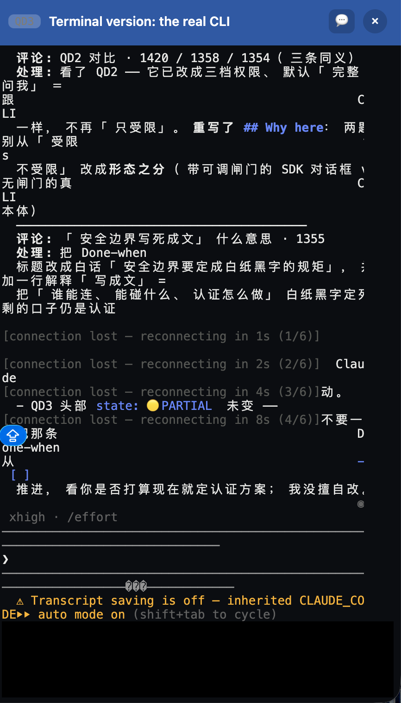

🦴 Spine A board = one folder. One markdown file per question inside it, plus one HTML page anyone can open. Pin that shape down, write it into SKILL.md, so someone else (and a future me with no memory) can open a board by following it.
🏁 Close when Every Q on this board reaches ✅ or ⏸️. SKILL.md is written, and a fresh agent with no background can read only that and open a decent board, and then this skill is done.
███░░░░░░░░░░░ 10/41 questions settled
What a board is for: a topic has several undecided questions; lay them out on one page anyone can open and comment on; settle them one by one, then close the board.
Cast: JL = the one who decides. CC = Claude Code, who does the work. Colleagues = the people who review, discuss, or take responsibility for work on the board; each uses their own initials.
What makes this board unusual: its subject IS the board itself, a board used to define boards.
Seven groups; the letter in each page's id is the group it was OPENED under, so after the 260729
restructure a page may be listed under a newer group than its letter (QA6, QC2, QC3 and QC4
kept their ids when they moved, because the skill and other boards cite them; QA2 moved with its
id and then merged into the QAa faces the same day, so it is archived). QA defines the
thing; QAa owns the page, one face per section; QAb owns the sentence. Those three are the main
line. QB ships it; QD and QE own the live and shared layers and can be thought about in parallel.
The former QC group (Index and structure) dissolved on 260729: QC1 merged into QA1, QC2 into QA10,
QC3 joined QA and was renamed to page folder management, and QC4 joined QAa. The former
"QF · A board on top of other formats" group merged into QA on 260725 and its last page was
retired on 260726, so no QF id remains.
ref/q-template.md is QAa0's since QA2 merged into these faces on 260729: each face owns its section in both projections, the source you write and the render you read.haipipe-paper-stage. QAa1 owns Opening, QAa2 Diagram plus theboards_api.py plus a Boards view in haichat-inlab); where the code runs (QE3,feat/haichat-board); whether the body text is editable in the page and what twoskills/board/, and nothing outside it: the skillhaipipe-board, and the agent haipipe-board-reviewer-agent. Scope is theskillpage.py and keptQB6.What is on this board, group by group, and where does each kind of thing live? Every board is to open with a QA0 like this one (JL 260729): the board's own structure information, so a reader who knows nothing can place a page, a group, or a folder without reading the skill. It is the instance-level half of QA1: QA1 maps the family's two folders; QA0 maps THIS board.
✅ Covered here This board's groups, their folders, and the 260729 restructure; the convention that every board carries a QA0.
↪ Covered elsewhere The family map (skill set vs board folder, crossings, standing): QA1. What the words mean: QA1a. What the index shows and how the surface looks: QA10. How pages and groups are proposed: QC4.
01-boardform-260722/ spine: pin down what a board IS │ 40 pages · 7 group folders ├── board.md the source: spine · close · Pages · Links ├── board.html generated by build.py, never hand-edited ├── board.excalidraw ONE scene, one frame per page, at the ROOT │ as a first-class citizen (JL 260729) ├── fig/ images only, 7 of them ├── _archive/ 4 retired pages, moved and never deleted ├── meeting/ one dated meeting note │ ├── QA-defining-a-board/ 6 the board itself │ QA0 this map · QA1 the two folders + where a board lives │ QA1a the vocabulary · QC3 page folder management │ QA9 what is checked · QA10 the index page + visual design ├── QAa-the-page/ 8 the page, section by section (JL 260729) │ QAa0 overall + the source template · QAa1 opening │ QAa2 diagram + the canvas · QAa3 content + markers · QAa4 items │ QAa5 where-we-are + 🧩Skills · QAa6 folds · QC4 proposals ├── QAb-the-sentence/ 5 the sentence and what attaches to it │ QAb0 overview · QAb1 evidence card · QA6 comments │ QAb2 editing · QAb3 agent visibility ├── QB-shipping-the-skill/ 7 SKILL.md · acceptance · migration · splits │ QB7 holds the sub-skill roster ├── QD-working-on-the-board/ 6 the live layer: chat · terminal · updates ├── QE-sharing-the-board/ 6 hosting · mounting · console · bind address └── Q-Skill/ 2 roster rows, generated by skillpage.py
/_excalidraw/?board=Tools/plugins/haipipe-toolkit/skills/diagrams/01-boardform-260722/board.excalidraw&frame=QA0QA defines the board itself: its folder shape and family map (QA1), its vocabulary (QA1a), page folder management (QC3), what is checked after a change (QA9), and its index page plus the board's visual design (QA10, which absorbed QC2 on 260729).
QAa owns the page, one face per section, each face owning both projections, the source you write and the render you read; the page/group proposal rules (QC4) sit beside them.
QAb owns the sentence: the unit (QAb0), its evidence card (QAb1), comments pinned to it (QA6), editing it (QAb2), and whether agents see what it carries (QAb3).
QB ships the skill, QD is the live layer, QE is sharing, and Q-Skill is the generated roster of what shipped.
The former QC group (Index and structure) dissolved: QC1 merged into QA1, QC2 merged into QA10, QC3 joined QA and was renamed to page folder management, QC4 joined QAa.
The former QA4 became QAa0 and was carved into one face per section; QA4a became QAa2; QA8 split into QAb0+QAb1; QA8a became QAb3; QA6 moved groups with its id kept; QA2 moved, then merged into the QAa faces on 260729, because the source and the render are one subject per face.
Ids were kept wherever a page was cited from the skill or another board; only pages whose subject changed were renamed.
Every board opens with a QA0 carrying its own structure information (JL 260729).
It graduates into the skill as one line in the open verb (create QA0 with the board) and a guide block in ref/q-template.md; until then it binds only here.
Written 260729, the same round as the restructure it records.
open creates a QA0, and the template carries its guide textOne line in SKILL.md's open verb, one block in ref/q-template.md; owned jointly with QAa0, which owns the template since QA2 merged into the QAa faces (260729).
paper · task · display · probe-qa; each is one page, written by its own board's session, not by this one.
This board has its QA0; the convention is decided and not yet graduated, so no other board has one yet.
40 pages in 7 group folders, of which 38 are faces and 2 are generated roster rows.
_archive/ holds 4 retired pages: QA2, QC1, QC2 and QD5, each reachable through a ## Links row.
board.excalidraw sits beside board.md and board.html rather than under fig/, which now holds images only.
This was found the same round as a defect rather than a preference: 35 faces were pointing at fig/board.excalidraw, which returned 404, while the real scene had been at the root since 260729 1211.
The ## Pages groups this face describes.
The open verb, where the convention lands.
Where the QA0 guide text lands.
No discussion yet — add a line under ## Discussion in QA-defining-a-board/QA0-board-map.md: > JL: …
## Diagram and the group descriptions in §1 and §2 were re-measured against disk rather than edited from memoryWhere does a new rule, file, page or drawing belong? Two folders exist. One ships and binds every agent on every board, and one argues and binds nothing until a decision graduates out of it. Put something in the wrong one and it either binds nothing, because no runtime reads a face, or it becomes wrong for every board there will ever be.
① writes into a board that is neither ① nor ②✅ Covered here The two folders, what lives inside each, and what may cross: what ships versus what is argued, the three legal crossings, the one forbidden direction, and what standing this family has when it writes into a board it renders but does not own. Also, still: what files a board folder must contain and how they are arranged inside it, and, absorbed from QC1 on 260729, where a board folder lives and what it is named.
↪ Covered elsewhere What the words mean, one entry per concept: QA1a. This board's own structure, group by group: QA0. A page living inside the folder it is about, and the recursive discovery that permits it: QC3. What a page looks like inside: QAa0 and the QAa faces, one per section, each owning both the source you write and the render you read (QA2 merged into them 260729). How the index orders and displays groups, and how the surface looks: QA10 (which absorbed QC2 on 260729). How groups are proposed: QC4.
The word "board" names five different things at once, and nothing in the vocabulary separates them. There is the skill set that ships (skills/board/). There is the skill you invoke (haipipe-board). There is one topic's folder (01-boardform-260722/). There is the source file that orders its pages (board.md). And there is the generated page you look at (board.html). "Page" names three things the same way: a Q or S markdown file, one section of the rendered html, and the whole html document. "Section" names two: a ## heading inside a page, and a group on the index.
The failures are not symmetric. A rule written onto a face binds nothing, because no runtime reads a face. Working state written into SKILL.md becomes wrong for every other board. A design argument that a script starts depending on means the skill can no longer ship without its own history. And a fix written into a board this family merely renders is a write nobody authorized, which is the one failure the other three cannot warn you about, because it looks like helpfulness.
One of these happened on 260729, in the session that opened this map. Three dead references on two other projects' boards, a pages-ghost row and two dead-link rows, were repaired rather than reported. The repair looked mechanical and was not: choosing S-Display-4al5 over the missing S-Display-4a is a decision about that paper's display registry, and that registry belongs to the paper.
This is the first face on the board because every later ownership question assumes it is answered. QC4 can only propose a topic's pages and groups once it is settled which folder they land in. QA9 can only say what is checked after a change once it is settled whose change it was. A reader who cannot place a thing cannot decide anything about it.
── two folders, and that is the whole map ───────────────────────
┌── ① THE SKILL SET ─────────────── skills/board/ ──────────────┐
│ WHAT SHIPS · binds at runtime│
│ haipipe-board/ the skill you invoke v0.46.0 │
│ SKILL.md the operating manual, kept shortest │
│ ref/ 4 specs: board-form · q-template │
│ · writing-rules · board-example │
│ 10 scripts build · check · serve · watch · status │
│ stage · skillpage · regroup · xcal · refs│
│ src/ 9 modules the parser, split by page topic (QB5) │
│ assets/ css · js · board-mark.svg (QB4) │
│ vendor/xterm the terminal's front end (QD3) │
│ 2 test files activity · status │
│ agents/ the judge, and it has NO write tools │
│ haipipe-board-reviewer-agent.md v1.0.0 │
│ │
│ TWO units ship today. JL proposed five on 260729: page and │
│ sentence as specs, routing and digest as verbs. see QB7. │
└────────────────────────────────────────────────────────────────┘
▲ │
⒜ graduates ⒝ renders · ⒞ judges
a ✅ face's Law │
│ ▼
┌── ② THE BOARD FOLDER ── skills/diagrams/01-boardform-260722/ ──┐
│ WHAT IS ARGUED · ← you are here│
│ board.md spine · close · Topic · Pipeline │
│ · Pages · Links │
│ QA-…/ … QE-…/ 38 faces in 6 group folders │
│ 8 ✅ · 27 🟡 · 3 🔴 │
│ Q-Skill/ 2 roster rows, generated by skillpage.py │
│ board.html generated. NEVER hand-edited. │
│ board.excalidraw ONE scene, one frame per page, at the │
│ ROOT as a first-class citizen (JL 260729)│
│ fig/ images only, 7 of them │
│ _archive/ 4 retired faces, moved and never deleted │
│ binds NOTHING. delete it and every script in ① still runs. │
└────────────────────────────────────────────────────────────────┘
and what ① PRODUCES is neither of them: 10 boards · 259 pages,
each owned by its own unit. see Content §4.
── the three crossings, and the one that must never exist ───────
⒜ ② ──graduates──▶ ①
a face reaches ✅ and its ## Law is COPIED into the skill:
an operating rule into SKILL.md, a display or grammar spec
into ref/ (QB1's Law: SKILL.md stays shortest).
until it lands there it binds nothing, however settled the
face looks.
⒝ ① ──renders──▶ ②
build.py reads ②'s markdown and writes ONLY its board.html.
it renders ② exactly the way it renders the other nine
boards; ② gets no privileges for being the designer.
⒞ ① ──judges──▶ ②
agents/ runs check.py, cold-reads against ref/writing-rules.md,
and reports pass · revise · blocked. it never edits.
── ✗ FORBIDDEN ──────────────────────────────────────────────────
① ──▶ ② no script may require an open face.
delete ② and every script in ① still runs.
a design record is never a runtime dependency./_excalidraw/?board=Tools/plugins/haipipe-toolkit/skills/diagrams/01-boardform-260722/board.excalidraw&frame=QA1Tools/plugins/haipipe-toolkit/skills/, two directories apartA write to ① changes what every future agent does, on every board, forever.
A write to ② changes an argument, and binds nothing until it graduates.
Those are two different acts, and on disk they are both just markdown in the same plugin, which is exactly why the two folders have to be named rather than pointed at.
① is one folder even though it holds a skill and an agentskills/paper/ is numbered as one entry on QA1@paper while holding 35 skillsThe unit of numbering is a shipped set, not a directory, so skills/board/ is one entry.
An earlier draft numbered agents/ separately, on the argument that a cited authority belongs on the map.
That argument fails here: the agent's board IS this board, its roster row sits in the Q-Skill group, so it was never off the map.
② holds two things that are not faces, and both are generatedboard.html is written by build.py and must never be hand-edited, because markdown is the only source.
board.excalidraw is the one thing in this folder whose content does not come from markdown: the ASCII in a face's ## Diagram seeds a frame one way, and anything drawn on the canvas never flows back.
It sits at the board ROOT beside board.md and board.html, as a first-class citizen rather than one of the figures (JL 260729); fig/ holds images only.
_archive/ holds four retired faces today, QA2, QC1, QC2 and QD5, moved rather than deleted so the arguments stay readable, and each reachable through a ## Links row.
<owning unit>/diagram/<NN>-<topic>-<YYMMDD>/ · plugin skill design: <plugin>/skills/diagrams/<NN>-<topic>-<YYMMDD>/A board serves all kinds of owners, so there is no single "all boards go here" place; what is single is the rule.
The number orders boards within one topic series, a new topic starts at 01, and the date is fixed the day the board opens.
What turns on it is everything that points at a board: the relative paths in ## Links, and whether a dozen boards spread across owners can be found at all.
① and ② are separate folders at allThis board used to sit inside haipipe-board/diagram/, which effectively shipped a daily-changing work log inside the skill.
On 260726 JL moved every plugin design board into the shared skills/diagrams/ and promoted the delivery package to the first-class skills/board/; the two moves are the same decision applied to both halves.
Moving a board breaks every relative path in ## Links, because they are declared against its location; the 260726 move re-resolved 21 declared paths the same day.
② and a paper's 0-lifecycle/ use the same tool, the same page layout and the same four state: values, which makes them look like one thing. They are not.
A design board is a RECORD. Its decisions are supposed to leave: ✅ means the ## Law is copied into ①, and from then on the skill binds, not the board. Delete ② and every script still runs.
A paper's board is a CONTROL PLANE. Nothing leaves it. A gated S page keeps its Content, because that Content IS the paper. Delete it and the paper loses its frontier, its queue and its state.
Same glyph, opposite meaning: ✅ on ② is a decision made, ✅ on a paper's board is a human gate passed. That is why Q and S share one layout and do not share one closing rule, and it is the single most confusable thing in this family.
① writes into a board that is neither ① nor ②<plugin>/skills/diagrams/, 4 under <unit>/diagram/, 1 on a paper's 0-lifecycle/build.py writes board.html into a project's folder. serve.py writes a comment into a paper's markdown. regroup.py moved 154 pages across 7 boards belonging to 4 different projects.
This family crosses into somebody else's tree on nearly every invocation, so what it may do there is a decision, not an afterthought.
board.html · write back a keystroke the human just made · sync a managed span · git mv a page the tool is movingEach is regenerable from the markdown, or is a transcription of something a human just did.
None of them decides anything about that board's topic, which is the property that makes them safe.
state: · which topic exists at allSKILL.md already says a tick means the thing was verified, and this family cannot verify another unit's work.
A state: flip is the same act as closing a question, which belongs to that board's owner.
regroup.py broke 17 cross-board ## Links on 260726 and repaired all 17 the same roundBroke it ourselves: repair, in the same round, and say so. That is settled precedent and it is recorded in the Log below.
Merely found it: report to the owner and stop. Repointing a row means choosing what the row should name, and that choice is about the topic.
The two cases look identical in the diff and are opposite in standing, so the diff is not the test.
Three dead references on the MISQ paper board and the phyprofile board were repaired rather than reported.
Nothing this family runs had broken them: the MISQ rows had rotted when a display unit was split into two variants, and the phyprofile row pointed into a task folder that had gained a subfolder.
The correct output was a report to each owner, and the repair is queued for revert in ## Items to Finish.
a question still open → a face on ② a decision made → ②'s ## Law, then graduate into ① an operating rule an agent follows → ① SKILL.md a display or grammar spec → ① ref/board-form.md, never SKILL.md a mechanical check → ① check.py a python module → ① src/, split by page topic (QB5) CSS or JS → ① assets/ (QB4) an independent review → ① agents/, which never writes a drawing → that board's own board.excalidraw, at its root a retired face → that board's own _archive/, never deleted a face about someone else's topic → their board, never here a defect FOUND in a board we render → report to its owner a defect our own tool BROKE → repair it, same round, and say so
q_files() is rglob("Q*.md"), skipping segments that start with _ or ., and fig/QC3 made discovery recursive in 260724 for a different reason, so the capacity to group by folder has been shipped for two days without being named.
## Pages lists bare filenames and never paths, and filenames are unique board-wide, so a move needs no edit there either.
board.html stays at the board root, so every href a declared Link produces still resolves.
## Links is the exception, and this page had it wrong until it was measuredcheck.py the moment 154 pages movedThe sentence above was written about ## Pages and quietly generalized to the whole of board.md, which is not true.
## Pages lists bare filenames and ## Links declares real relative paths, and that difference only becomes visible when a file moves.
Cross-board links are the ones that break: a board declaring ../01-haipipe-paper-260725/QC0-sentence-unit.md is naming a page in somebody else's tree, and it has no way to know that tree was reorganized.
So the sweep is a mv plus a link repoint plus a check.py run, and the checker is what makes that safe rather than hopeful.
QA/ QB/ QC/ QD/Two copies were built, one flat and one grouped, with board.md byte-identical between them.
Both produced 20 pages and the same checker result.
The rendered HTML differs on zero lines except the path attributes that must change: data-file on each page section, data-f on each index row, and data-board.
Those are the write-back paths, and carrying the folder in them is what QC3 already ships and smoke-tested at depth 2.
＋Q used to write to the board root, so a new page landed outside its groupSKILL.md documented this as a flat-board wart: create from the page, then move it yourself.
Under group folders it stopped being a wart and became the normal case, because every new page was born in the wrong folder.
The button reads the filenames ## Pages lists under that group, resolves them to their real paths, and writes into that folder when they all agree.
When they disagree, or the group has no pages yet, it falls back to the board root, because guessing between two homes is worse than the original wart.
Choosing "where does this group already live" over "a folder called QA" is the whole point: it is equally correct when the folder is the GROUP and when the folder is the SUBJECT (QC3), which are the two reasons a page sits in a folder and are one rule.
A flat board is untouched by construction, since every sibling is already at the root, so the button follows a decision the board has made rather than making one for it.
QA/QA1-form.md repeats QA, and stripping it to QA/1-form.md would break three things at once.
rglob("Q*.md") would no longer match it.
## Pages lists bare filenames, which would collide the moment two groups both had a 1-.
And the id would stop being greppable across the repo, which is how every cross-board reference on every board is written.
The redundancy is the price of the id being the id.
(JL 260726, choosing the uniform rule over the measured one)
A size trigger was on the table and was rejected, and the reason is worth keeping: a threshold means a board silently reorganizes itself the day it crosses one, which is a structural change arriving without a decision.
Uniform costs a small board one extra folder level and buys every board the same shape, so a reader who learns one board has learned all of them.
It also removes the question entirely from every future board, which is the real saving: nobody has to judge, so nobody has to be told what the judgment was.
board.md · Q*.md · board.html · fig/, written into SKILL.md's "shape" section and ref/board-form.md.
Every Q*.md in the folder is one of the board's questions; ## Pages only controls order and grouping; an unregistered file lands in the ⚠️ group and is never lost.
All written down.
ref/board-example.md is a minimal two-question skeleton; verified in practice: the two subjective-label boards plus this one; 3 boards use this shape.
regroup.py moved 154 pages across 7 boards on 260726, leaving 0 pages at any board root; every page count held and every board rebuilt.
It broke 17 declared cross-board Links, which this page had predicted would not happen, and check.py caught all of them; they were repointed and every board is back to its previous error count.
The 3 errors left on the phyprofile board predate the move and point at _WorkSpace/ paths that only exist on the secure server.
regroup.py <board> [--apply] and --all <root>, dry-run by default, git mv when the file is tracked.
A rule that needs a hand-written mv per board drifts the first time somebody is in a hurry, so the enforcement ships with the rule.
The slug is capped at 30 characters on a word boundary, because QB-a-task-folder-what-it-is-and-running-one/ wraps in every listing it appears in and the tail is where the least information is.
Measured 260726 on the 20-page probe board: all pages moved into QA/ QB/ QC/ QD/, board.md untouched, rebuild clean, and the rendered HTML identical apart from the three path attributes that must change.
Filenames stay unique board-wide, so ## Pages keeps listing bare names.
Decided 260726: the default, on every board, from page one. Not size-triggered, so no board ever reorganizes itself under its reader, and no one has to notice a threshold.
The folder is named Q<letter>-<slug of the group title>, not a bare QA/, on JL's follow-up: "I want the QA-xx with some names, not just QA".
A bare QA/ writes the id twice and drops the one half a reader cannot reconstruct from the filenames inside it, which is the group's actual subject.
Written into SKILL.md's shape section and ref/board-form.md §1, and this board moved onto it the same round.
＋Q creates the file inside the group it was pressed underThe button now asks where that group's existing pages live and writes there, falling back to the board root when the group's pages disagree or the group has none yet.
It deliberately does not look for "a folder named QA": following where the group already lives is the same rule for a group folder and for a QC3 subject folder, so ＋Q lands correctly on a paper's 0-lifecycle/ without knowing that board is different.
Verified 260726 on three fixtures: a flat board still writes QA2-….md to the root, a grouped board writes QA/QA2-….md, a brand-new empty group falls back to the root, and ## Pages keeps listing bare filenames in all three.
ref/board-form.md §1 now names them: the folder is the GROUP on a flat design board that grew, and the folder is the SUBJECT on a board sitting on an existing tree.
A page lives in one place so a board picks one, and on a paper's 0-lifecycle/ they coincide, which is why that board has had group folders since 260724 without anyone granting it any.
The consequence is written down where it matters: the code recognizes no QA/ naming convention, only where a group already lives, which is what makes one rule cover both reasons.
Verified on disk 260729. ① skills/board/: one skill v0.46.0 with SKILL.md, ref/ 4 specs, 10 scripts plus 2 test files, src/ 9 modules, assets/ and vendor/xterm, plus agents/ holding one reviewer v1.0.0 with no write tools.
② this board: board.md, 41 faces in 7 group folders, 2 generated roster rows, board.html, fig/ and the archived faces.
They are separated by what a write MEANS, not by distance on disk, because both sit two directories apart under the same plugin.
Graduate, render, judge. And the one that must never exist: no script may require an open face, so deleting ② leaves every script in ① running.
Task, project, and paper boards under the owning unit's diagram/; plugin skill-design boards in the plugin's shared skills/diagrams/; <NN>-<topic>-<YYMMDD>, dated on opening, never renamed.
QC1 was ✅ SETTLED with 3/3 items, its Law long graduated into SKILL.md's 🗂 Shape line 1 and ref/board-form.md §1; the page retired to _archive/ and its history lives there.
§4 is the load-bearing half: mechanical writes always, editorial writes never, and for a checker error the test is who broke it.
Two rows on the MISQ paper board (pages-ghost plus a dead-link in ## Links) and one on the phyprofile board (dead-link into a task folder).
Under §4 these were FOUND, not broken by anything here, so the correct output is a report.
SKILL.md's 🗂 Shape section carries this mapA fresh agent must be able to place a new file in the right folder without reading this board.
Today the shape section describes one board folder's contents and says nothing about the ①/② split or what may cross.
No script may require an open face, and no rendered board's state may be read off this board. This has never been checked.
JL 260729: "I think we use the decision for it." This face is converted; SKILL.md has 9, ref/board-form.md 2, the reviewer agent 2, ref/q-template.md 1, and page prose across the ten boards has 999.
Most of that 999 sits on boards this family renders and does not own, so under §4 it needs each owner told rather than a silent rewrite.
(What a Q file looks like inside is the QAa group's business, and what the words mean is QA1a's, so neither is handled here.)
Full text of both units is on their roster pages, Q-Skill-haipipe-board and Q-Skill-haipipe-board-reviewer-agent; this item only says what has landed.
SKILL.md 🗂 Shape · NOT landed. It describes one board folder's contents and says nothing about the ①/② split or the three crossings. This is the open 📐 item below.
ref/board-form.md §1 folder · §2 numbering · landed 260726. The group-folder decision and the two reasons a page sits in a folder, both stated as one rule.
src/common.py q_files() · landed 260722. Membership by path is the rule this face settled first, and it has not changed since.
regroup.py · landed 260726. The sweep that made the decision a command rather than a habit.
check.py · nothing from this face yet. The standing rule in §4 has no mechanical half, so nothing stops the next agent repeating 260729's mistake.
agents/haipipe-board-reviewer-agent.md · reads, never writes. It runs crossing ⒞ and this face defines what it checks placement against.
① skills/board/ ships and binds at runtime; ② this board argues and binds nothing until a decision graduates.
What separates them is what a write MEANS, not where the folder sits, because both are two directories apart inside the same plugin.
Mechanical writes into a board we render are always allowed because they carry no judgement. Editorial writes are never ours. For a checker error the test is who broke it: repair what our own tool broke, report what we merely found.
This is the only part of the page that would have changed behavior on the day it was written.
Every Q*.md under the board folder, at any depth since QC3, is one of the board's questions.
Opening a new question is dropping in one file, changing nothing else.
board.md's ## PagesFile names and group headings only; titles and body text are never copied, and no path is ever written.
A file missing from the Pages still appears, under the ⚠️ group, plus a one-line CLI warning; a Pages line pointing at a non-existent file is also just a warning.
Measured again 260729 across all ten boards: one live instance of each, both on boards this family does not own.
＋Q follows themDecided 260726, swept the same round: 154 pages across 7 boards, 0 left at any root.
The question owned which files are in a board folder and how they are arranged, and never which of the two folders a thing belongs to at all. Three edits into other projects' boards the same day are what made the gap concrete.
Whether fig/ is mandatory for every board; it holds board.excalidraw plus 7 images here and every board carries one.
The other half of that item, whether filenames are English or Chinese, was settled by JL on 260724: English.
The "🗂 Shape" section, which is where this face graduates and which does not yet carry the two folders.
§1 folder · §2 numbering. The full spec for the folder half of this question lives there.
q_files() is the membership rule: rglob("Q*.md"), skipping _, . and fig/ segments.
ALIAS is the section registry, which is why a section name the parser does not know renders nowhere.
structure_op, the write-back path for every keystroke a human contributes from the page.
regroup.pyThe 260726 sweep, and the precedent for repairing what our own tool broke.
What turns a defect on a board we render into a report: pages-ghost, dead-link, dead-href.
QA/ QB/ QC/ QD/ with board.md untouched: same 20 pages, identical rendering, only the write-back paths change. What is missing is a decision that it is the default, and the ＋Q button following it.QA1@paper. we might want to follow this structure.fig/ and _archive/ as peers of the boards containing them. The second replaced folders with four invented categories, which needed a Glossary entry to be readable at all, and that was the tell.① produces and not part of the map.Two folders. skills/board/ ships and binds at runtime; this board argues and binds nothing. They are separated by what a write to them means, not by where they sit on disk.
A decision graduates from this board into the skill before it binds: an operating rule into SKILL.md, a display or grammar spec into ref/. A decision that has not graduated is not a rule, however settled the face looks.
No script may require an open face. A design record is never a runtime dependency: delete this board and every script still runs.
This family writes into boards it does not own, and the write is bounded by standing. Mechanical writes are always allowed, because they carry no judgement: generating board.html, writing back a keystroke a human just made, syncing a managed span, moving a page the tool is moving. Editorial writes are never ours: what a face says, a tick, a state:, which topic exists. When a checker error appears in a board we render, the test is who broke it, and the diff is not the test: repair what our own tool broke in the same round and say so, report what we merely found and let its owner decide.
A design board and a paper's board are opposites on the same tool. On a design board ✅ means a decision was made and its Law has left for the skill. On a paper's board ✅ means a human gate was passed and nothing leaves, because the Content is the paper.
one file per question: borrowed from haipipe-probe, where under 1-probes/ every question is its own md file.
The benefit: two people editing two questions never collide.
group folder: a subfolder named for a Q group, holding that group's pages. Membership and ordering do not depend on it, so it is presentation of the source tree rather than structure.
standing: whether this family is entitled to make a given write into a board it renders but does not own. Mechanical writes have it, editorial writes do not.
_archive/. Content divisions after §1 renumbered up by one; the two earlier 260729 lines below say §3/§5 about this page and now mean §4/§6① skills/board/ ships, ② this board argues, and the numbers name real paths rather than ideas. Three crossings kept (graduate, render, judge) and one forbidden direction (no script may require an open face). Everything else moved into Content: what lives inside each folder, the two-kinds-of-board opposition, and §4, the boards this family renders and does not own, which are described rather than numbered because they are what ① produces. The coined word "band" is gone with its Glossary entry, which is what gave the previous draft awayQA1@paper's content. The question had owned which files are in a board folder and how they are arranged, and never which folder a thing belongs to. The load-bearing new half is the standing rule: mechanical writes into a board we render always, editorial writes never, and for a checker error the test is who broke it. That division exists because three dead references on the MISQ and phyprofile boards were repaired rather than reported the same day, which is the FOUND case, not the BROKE case; the revert is queued as an item. The word "ruling" is replaced by "decision" throughout on JL's call, and the rest of the sweep is queued. Content divisions renumbered, the new ones first, so the earlier §1 is now §6; the 260726 2340 line below said "§1" about this page and means §6regroup.py (dry-run by default, git mv, slug capped at 30 chars): 154 pages moved across 7 boards, 0 left at any root, all page counts held. It broke 17 declared cross-board ## Links, which §6 had claimed could not happen; check.py caught every one, they were repointed, and the correction is now written into §6, SKILL.md and board-form.md §1. The paper 0-lifecycle/ is exempt and says why: it already satisfies the decision and its numbers carry lifecycle orderQ<letter>-<group slug> and not a bare QA/ ("I want the QA-xx with some names"). Written into SKILL.md and board-form.md §1; this board moved onto it (30 pages into 5 named folders, board.md untouched, rebuild identical apart from the write-back path attributes); ＋Q follows an existing group's folder and a new group's first page opens a named one. All 14 items ticked → ✅ SETTLED＋Q writes into the group's own folder (rule = where that group already lives, never a QA/ naming convention, so one rule covers both the group folder and the QC3 subject folder), and ref/board-form.md §1 now states those two reasons as one. Only JL's default-vs-opt-in call is left## Now rewritten in item form, duplicate diagram removed (XZ); the two "salient + collapsible section names" ones covered by QA4's shipped layout; the three "Log with time + newest first" ones were already in effect, ticked## Boundary (drawing the line against QA2 / QC1) and ## Files; the retired ## Why here merged into QuestionWhat do the family's words mean, one entry each, so no page has to re-explain them? "Board" names five things, "page" three, "section" two, and until 260729 nothing separated them; this face is the one place the vocabulary is pinned. Every entry is a word the skill or a face already uses; anything coined here would violate the writing rule it exists to serve.
✅ Covered here The family vocabulary, one entry per concept, with where each word is defined.
↪ Covered elsewhere Where things LIVE: QA1. This board's own structure: QA0. A single page's internal glossary stays that page's ## Glossary.
The FAMILY that ships: skills/board/ (one skill + one agent).
The SKILL you invoke: /haipipe-board.
One topic's FOLDER: 01-boardform-260722/.
The SOURCE index: board.md (spine · close · Topic · Pipeline · Pages · Links).
The GENERATED page: board.html, never hand-edited.
page / face: one Q*.md or S*.md; Q is a decision (closes when its checkboxes close), S is a lifecycle stage (closes at its human gate); one layout serves both.
section: a ## heading inside a page; the on-stage order is fixed (QAa0), and the renderer knows sections only through ALIAS (src/common.py).
group: a ### heading in ## Pages, one folder per group (QA1); the id letter records the group a page was OPENED under, not where it is listed today (260729).
state: the first emoji of the state: line (🔴 OPEN · 🟡 PARTIAL · ✅ SETTLED · ⏸️ ON HOLD); the suffix is human-readable and never a fifth state.
sentence: the atomic row, one per source line (QAb0).
apparatus / lane: a typed > line bound to the sentence above it by adjacency (QAb1).
comment: a remark pinned to a selection, living in ## Comments with a lifecycle (QA6).
anchor lost: the pinned quote no longer matches the prose; flagged, never silent.
decision: what a Q face settles; the word replaced "ruling" on 260729 (JL). A settled decision GRADUATES: its ## Law is copied into SKILL.md (operating rules) or ref/ (specs), and only then binds.
standing: whether this family may make a given write into a board it renders but does not own; mechanical writes have it, editorial writes do not (QA1 §4).
spine / close: board.md's one-line purpose and its acceptance condition.
sync / write-back: work done in a round is written back to its owning face the same round; "done" means written back.
managed span: a block between <!-- haipipe:...start --> and end markers that a script owns (stage.py, skillpage.py); authors never edit inside.
🧩 Skills: the Where-we-are item listing what a face governs and whether it landed (QAa5).
Collected 260729 from SKILL.md, ref/board-form.md, and the faces named per entry; nothing here is defined for the first time.
ALIAS, the machine half of "section".
The full grammar the words come from.
No discussion yet — add a line under ## Discussion in QA-defining-a-board/QA1a-concepts.md: > JL: …
Can a question file live inside the folder it is about, so a board can sit on top of an existing tree instead of mirroring it? The working answer is yes: discovery walks the whole tree, so a page sits beside what it discusses while ## Pages keeps bare filenames for order alone. That unlocks the case which forced the question: a paper's own 0-lifecycle/ becomes a board in place, rather than a second structure kept in step by hand.
✅ Covered here Where a page file may physically live: recursive discovery under the board folder, which path segments are excluded, and how comment write-back stays safe once a path rather than a bare filename is in play.
↪ Covered elsewhere Where the board folder itself belongs and what it is named is QA1 (which absorbed QC1 on 260729); how the index orders and groups the pages it finds is QA10 (which absorbed QC2 on 260729); showing a folder's own documents without a page wrapper was QF2, retired 260726: embed them into a real page with ![[path]] instead (ref/board-form.md §5).
The first consumer forced the question: JL wanted the MISQ paper's 0-lifecycle/ itself to be a board, with each stage folder acting as a question's home (the way 5-section-edit/ keeps one folder per unit).
Flat-only discovery made that impossible: build.py only globbed the board's top level, and serve.py resolved comment write-backs as board / filename.
/_excalidraw/?board=Tools/plugins/haipipe-toolkit/skills/diagrams/01-boardform-260722/board.excalidraw&frame=QC3q_files() in src/common.py: rglob("Q*.md"), skipping path segments that start with _ or . and fig/.
The page's data-file attribute holds the board-relative posix path; vet_qpath() rejects absolute and ...
The whole tree is watched with the same segment filter.
The skill's own board rebuilt with an unchanged question set; the script-free invariant held.
The MISQ 0-lifecycle/ board: 22 questions, pages inside stage folders down to depth 2.
Shipped 260724.
Flat boards are untouched; nested pages work end to end including comment write-back (smoke-tested against 4-display/QD2-d01-iv-reporting.md).
Thin entry; discovery lives in src/common.py + src/parse.py.
target() / add_question / archive_question accept board-relative paths.
Recursive stamp with the same exclusions.
No discussion yet — add a line under ## Discussion in QA-defining-a-board/QC3-folderq.md: > JL: …
Q*.md file at ANY depth under the board folder; membership stays by path._ or . (archives, previews) and fig/ are not part of the board..., basename must match Q*.md)._archive/.ref/board-form.md both cite it and so do two other faces; only the title changed. The index pointer in ## Boundary moved from QC2 to QA10, which absorbed it the same dayAfter anything on a board changes, how do we find out that the page has stopped delivering what it promised, in structure or in prose, without waiting for JL to notice it?
✅ Covered here: the mechanical checker, the fresh reviewer, their four failure classes, their shared trigger, and the report produced when either instrument is red.
↪ Covered elsewhere: QAa0 owns the page layout and, since the QA2 merge (260729), the source template; each QAa face owns its section in both projections; QB2 owns first-time handover from SKILL.md.
A Board is worth exactly what a second person can get out of it, so this page tracks four failure classes: broken structure, unusable interaction, unreadable prose, and stale status or prose.
Two instruments divide that work.
The mechanical checker tests rendered structure plus contradictions it can detect from HTML, CSS, states, and checkboxes; the fresh-context reviewer judges readability and whether the Board still describes the visible evidence.
All four failures can be invisible to the author, who reads the page with the intended result and the missing context already in mind.
They have all happened and were first caught by a person noticing, which does not scale.
For example, a broad CSS selector matched both images and hidden chip panels; its display:block rule forced five invisible panels to cover the page and swallow mouse clicks even though the build passed.
The second cold read also found one incomprehensible page and five half-understood pages while their structural checks passed.
JL's rule sits above all four: if it is not easy to read, writing that much is rubbish, and unreadable equals unwritten.
The instruments must stay distinct, but they answer to one planned trigger because the recurring defect is that review is not dispatched reliably after a change.
a change lands
│ src/ · assets/board.css · any page's prose
▼
┌────────────────────────────────────────────────────────┐
│ ONE TRIGGER, TWO INSTRUMENTS │
└───────────┬──────────────────────────┬──────────────────┘
│ │
MECHANICAL FRESH REVIEWER
fixed test input: template input: changed pages in board context
plus the live board as their authors actually wrote them
├─ a Q page run by a fresh-context agent that
└─ an S page has never seen the project
│ │
build.py + check.py answers exactly three things
│ ① which sentence is unreadable
read the html ② which word is never defined
│ ③ what premise is missing
assert structure and │
detectable contradictions │
│ │
fact per row readability + visible staleness
│ │
└────────────┬─────────────┘
▼
report, and JL decides
whether red blocks a change
constructs asserted on the structural side
───────────────────────────────────────────────────────────
lead is the door ## Question lead details.it.row.qd > summary
Opening never folds (renderer) div.ch.opening-head
drawer is flat Boundary, contract div.fh, no details inside
division ### heading details.csec
paragraph heading #### heading div.ph, and never 🔹
job line (…) under a #### div.pj
group title **a whole line** div.gt > span.gi, keeps 🔹
sentence apparatus sentence then > lines details.sent
sentence badge attached-lane count span.sbadge
typed lane > Citation: … div.lane with its icon
item with detail - ICON head + indent details.it.row
finish count - [ ] / - [x] n/m in the section heading
dated item 260723 CC · head span.stmp
code block a fenced block details.codef
excalidraw canvas /_excalidraw/... div.xcal
✗ the author re-reading their own page in the same conversation
catches none of the four classes: too much unwritten context is already loaded/_excalidraw/?board=Tools/plugins/haipipe-toolkit/skills/diagrams/01-boardform-260722/board.excalidraw&frame=QA9The structural check asks a question with a fact for an answer, and the prose check asks one that requires judgment.
Whether #### produced div.ph is decidable by a regex in milliseconds and is either true or false.
Whether a sentence packs three things into one is decidable only by a reader who does not already know which three, which is why it needs a fresh context and cannot be a pattern match.
Their inputs differ for the same reason: the structural check uses ref/q-template.md as a fixed test input and also checks the live Board, while the prose check reads the actual changed pages, because prose is only unreadable or stale in the specific words someone wrote.
Merging them into one instrument would lose the more valuable one, since a structural pass is compatible with a page nobody can read, and that combination is exactly what the second cold read found.
Neither check has ever failed because it was the wrong check.
Both have failed because nothing ran them: the structural regressions were verified by one-off scripts that were written and thrown away, and the cold read has always been a fresh agent someone remembered to dispatch.
That is one defect with one fix, so the trigger, the report, and the rule about what a red result costs are shared, and only the instruments differ.
A real Board exercises whatever its authors happened to use, so it cannot by itself prove that the complete grammar still renders.
The template is fixed, small, and the only file whose job is to demonstrate everything, so an assertion that fails on it is always a defect in the template or the renderer and never a stylistic choice by an author.
It is also the cheapest possible fixed test input because the file already exists and is already maintained.
The template exercises the construct, the documentation names a class, and the page does not produce it.
The fix belongs in src/ or assets/board.css, and the report should name the construct in words rather than a selector, because the useful sentence is "the job line stopped rendering".
The documentation names a construct that the template never demonstrates, so a new page inherits no example of it and the check has nothing to assert.
The fix belongs in ref/q-template.md, and this half is the reason to run against the template at all, since a renderer-only test would pass while the hole stayed open.
The reviewer is a separately started agent that sees only the markdown files it is handed, not the conversation that produced them.
Its brief is fixed and narrow, and it is told not to praise or summarize: name the unreadable sentence and quote it, list the undefined word and say where it first appears, state the missing premise.
It grades each page clear, half, or unreadable, where half means the reader can restate what is asked but not why it matters or what counts as done.
The prompt and the rules it enforces live in ref/writing-rules.md, so the check and its standard are one document rather than a habit.
check.py verifies a 🧩 Skills landed rowA row claiming ref/board-form.md §1 · landed is checkable by grep, so rot becomes a warning instead of a silent lie; owned with QAa5.
ref/writing-rules.md holds them, and SKILL.md excerpts the three deadliest with a pointer to the rest.
No invented terms, stale sentences purged when the board changes, and a fresh-agent cold read after every revision.
This was ticked on 260723 under QA5 and is inherited unchanged.
It has run twice and both times returned findings that were acted on rather than argued with.
The format is fixed: unreadable sentences quoted, undefined words listed with the file they first appear in, missing premises named, then a grade per page.
The evidence that the format works is that its output changed the board: ## Topic and ## Pipeline exist because the first run said the files explain a recipe's format without ever saying what the dish is.
Copying ref/q-template.md twice and renaming the copies must be enough to exercise one Q render path and one S render path before the author replaces the guide prose.
The two paths have broken independently, so checking one proves little about the other: Stage Contract exists only on S, Why this matters moves between Opening and Content depending on the kind, and the Content heading names the stage on S while counting subsections on Q.
This fixture checks renderer placement, not whether an author finished the source or generated a synchronized S contract.
Ticked 260726: check.py copies the template into a temp board twice, once as QT1-template.md and once as S-Main-1-template.md, and builds both without hand editing.
It separately asserts Q rationale placement and counted Content, plus S rationale placement, Stage Contract placement, and the stage-named Content heading.
The 15-row Diagram table is a manually maintained acceptance set in CONSTRUCTS, with broader syntax families still owned by ref/board-form.md.
The assertion should name the construct in words a reader recognizes, since the value of the check is that it says the job line stopped rendering, not that a selector count changed.
Ticked 260726: the 15 constructs from this page's own Diagram are the table in check.py, each reported by name and by class, so a failure reads job line · div.pj rather than a count.
When the documentation names a construct the template never demonstrates, the check reports a hole to fill rather than passing by default.
This is the half that improves the template over time, and it is the half a renderer-only test would miss entirely.
Ticked 260726, and it earned itself on the first run by making template holes measurable instead of assumed complete.
The source-aware check now reports renderer drift as ERROR only when the source exercises a construct, and reports a missing source example as GAP.
An additional failure turned up on 260726: a page can render perfectly and read well while saying something that is no longer true.
QA4a carried state: 🔴 OPEN and "nothing is built and nothing is decided" on the day its whole route was built, wired into 28 pages, and running, because the session did the work from chat and never went back to the page that owned it.
check.py now reports open-with-done-items and partial-with-nothing-open on Q pages, which is the cheapest signal that exists: a ruling state and its own boxes disagreeing.
It never applies that heuristic to an S page, whose state is a human lifecycle gate independent of follow-up checklist work.
On Q pages it sees state: and the checkboxes and nothing else, so it catches the shape and never the content; the rule it backs up is SKILL.md's sync, which now says the trigger is substantive work in the session rather than opening a page.
An additional failure appeared on 260726. A broad CSS selector, .fig{}, matched both images and hidden chip panels. Its display:block rule forced five invisible panels to cover the page and swallow mouse clicks, even though the page rendered and read correctly.
check.py now has check_css, which fails on any bare class selector colliding with a panel class token. Verified both ways: reintroducing .fig makes it fire, scoping it to img.fig makes it silent.
The first diagnosis was wrong because the synthetic element.click() method bypasses the browser's check for what lies under the pointer. Checking the element at each control's centre found 11 of 11 unreachable and named the covering panel.
check_css catches this one collision class. It does not catch an element covered by anything else, an off-screen panel, or a control whose click does nothing. The missing instrument is a headless browser that checks which element lies at each control's centre and then confirms that the opened panel stays inside the viewport. An ad hoc standard-library-only driver using Chrome DevTools Protocol (CDP) found the 260726 bug, but it was not kept.
Whether that belongs in check.py at all is the open question: it needs a browser, so it breaks this page's "standard library, runs anywhere" property. A separate opt-in script is the likelier answer.
The source-aware check currently reports two explicit fixture gaps: a group title and an Excalidraw canvas.
These remain open rather than being hidden by an output-only regex; the Excalidraw example needs a portable placeholder that cannot point a copied page at the wrong Board.
The mechanical check would have missed QA4a entirely if the state had been flipped and the paragraph left alone, which is the more likely half of this failure.
haipipe-board-reviewer-agent now compares each scoped page's state, finish list, current-status prose, links, and directly cited artifacts; it reports stale or contradictory claims and says not verifiable when evidence is unavailable.
Ticked 260726 with the standing reviewer implementation; the mechanical state-line checks remain a cheaper backstop.
Every unresolved-id warning on the first run was a deliberate historical mention: QCb1-QCb4 in QA8 recording what the ids used to be, and QF2 in QC3 naming a retired ruling.
A live reference and a historical one are typographically identical today, so no check can separate them and neither can a reader.
This closes when the convention exists, whichever way it goes: a retired id written without backticks, or marked, or listed once on the board.
settled-with-open-items is a Q-only rule and never applies to lifecycle S pages.
This Board uses it, while the paper family's design Board opts its Q pages out because their state: is about the decision and implementation lives in the item list.
check.py currently detects that Q-board variant by pattern-matching the sentence the design Board happens to use to say so, which works and is fragile.
This closes when a board can state its own variant in board.md rather than having it guessed from prose.
haipipe-board-reviewer-agent now packages the read-only review: it reads the Board rules, runs check.py --strict, cold-reads the changed pages using ref/writing-rules.md, checks visible state/status contradictions, and returns pass | revise | blocked.
It has no write or edit tools. The original session remains the writer and must repair every finding, preserving builder ≠ judge.
Ticked 260726 after JL promoted Board to a first-class family and explicitly approved the reviewer role. Dispatch is still manual until the trigger item below is closed.
ref/writing-rules.md defines the current pass condition: no page is unreadable, and every reason for a half grade is either fixed or recorded as a known gap.
What remains unquantified is when a growing set of known gaps is acceptable, and which count or severity should block the revision.
Inherited open from QA5.
An edit to src/, to assets/board.css, or to any page's prose should be followed by the checks, with the result stated rather than assumed.
This single item is why the two questions merged: it was open on both, worded almost identically, and it is the only reason either check keeps failing to happen.
The structural half is fast enough to run on every renderer edit, and the prose half is slow enough that it should run per revision rather than per keystroke, so the trigger dispatches them at different rates from one place.
A blocking gate is honest but stops work when the check itself is wrong, and a reporting gate is cheap but is only as good as whoever reads it.
The two checks may deserve different answers, since a failed construct assertion is a fact and a cold-read grade is a judgment.
This is a decision about how we work rather than about the code, so it is JL's, and until it is made both checks report.
QAa5's convention (260729): a face's Where we are may carry a 🧩 Skills item whose rows name the skill file or section the face governs, each with a landed / NOT landed verdict.
A landed claim is greppable, so check.py can warn when the named section no longer exists or the claim rots; until it does, the convention has no mechanical half.
Both instruments now exist and have a registered runner.
check.py is the mechanical instrument; haipipe-board-reviewer-agent is the read-only fresh-context runner that combines its report with the prose and staleness review.
The checker now reads the same state contract as the renderer: the first emoji is the four-value machine status, optional text is human detail, and live /_board/ plus /_excalidraw routes are not mistaken for missing files.
Seven decisions or implementations remain open: the two template examples, a full browser interaction check, a retired-id convention, Board-level rule opt-outs, a quantified policy for known cold-read gaps, automatic dispatch after changes, and whether a red result blocks the revision.
Real paper pages use state detail such as ✅ PINNED · MISQ 2026, and generated Excalidraw links are server routes rather than disk files.
check.py now validates the normalized first emoji and ignores only the two declared live-route families, while continuing to fail on an invalid state token or a genuinely missing local file.
JL promoted Board beside paper, probe, and task and approved a dedicated reviewer.
The registered agent is deliberately read-only and lives at skills/board/agents/; session attachment, synchronization, repair, and rebuilding remain with the main Board skill and the current writer.
CC argued for keeping them apart, because a boolean construct assertion and a graded cold read are different instruments with different fixed inputs and different runners.
JL ruled to merge, and the merge is on the trigger: both pages were carrying the same unbuilt item about running automatically after a change, and splitting one mechanism across two pages is what left it unbuilt on both.
The instruments stay distinct inside this page, and QA5's ticked history came with it rather than being restarted.
CC was about to write the structural checker directly, and JL stopped it: an unsettled ruling gets a page first, and the code follows the ruling instead of preceding it.
Writing the script first would have produced a check whose acceptance nobody had agreed.
Nine pages: two clear, six half-understood, one incomprehensible, and the incomprehensible one was QA4.
Its three sharpest findings were that the word board is ambiguous in a self-referential context so the reader guesses throughout, that QA2's diagram said top and bottom while QA4's body said side by side about the same fact, and that build.py, skill, /html-ppt, and focus mode appear across five files and are defined nowhere.
The two self-contradictions were fixed the same day; the undefined-terms finding is still open, which is why it is worth saying that a structural check would have passed all nine.
One clear, five vague, one incomprehensible, with roughly 35 terms used and never explained.
The verdict was that the files explain the format of a recipe without ever saying what the dish is, and ## Topic and ## Pipeline exist because of it.
A coined translation for battery, plus outward anchoring, act one, and three-set gate, none of which appear in any source document.
These do the most damage of any writing fault, because the reader assumes they are jargon, goes looking for a definition, and finds nothing, so they lose confidence in the whole page rather than in one phrase.
check.py <board-dir> covers four families: required Board structure against disk, required Q/S source structure plus state and references, the built page's links and tag balance and id uniqueness, and the shared template rendered through both modes with the 15-row acceptance set checked.
It shares ALIAS, STN, and page_files with the renderer through src/common.py, while keeping independent structural assertions that compare the documented contract with what the renderer accepts.
Default mode reports and exits 0; --strict exits 1 when ERROR findings exist, while the broader workflow decision about whether that red result blocks a revision remains open.
The first run found 0 error, 31 warn, and 3 gap on this Board, plus 3 error and 8 warn on the paper Board.
It found two things on its first outing that a person had missed for a day, and two of its own rules were wrong in ways only a real run exposes: it counted <details> inside CSS comments, and it applied this Board's settled-items rule to a Board that had ruled otherwise.
Both are fixed, and both are the argument for running the checker rather than describing it.
The prose check's deliverable and its standard: the hard writing rules, the zero-background review prompt, and the convergence criterion.
The structural check's fixed test input and subject: the file copied for every new page, and the one whose promises the check verifies.
The syntax table the structural assertions should be derived from, section 5 for the body grammar and section 4 for the section mapping.
The page renderer, which owns the Opening drawer, the Content subsections, and the Stage Contract.
The body grammar: paragraph headings, job lines, group titles, sentence apparatus, typed lanes, and code folds.
Where a construct's meaning can change without any Python changing, which is how ordinary drawer prose ended up styled like small metadata labels.
Its writing section excerpts the three deadliest rules and points at ref/writing-rules.md.
The mechanical half. Four families, the 15-construct table, and the gap report. Read-only.
The standing zero-background runner for the mechanical, prose, and visible-staleness review. It returns findings and never edits.
zero-background reader: someone who has never touched this project, played by a freshly started agent because it genuinely does not know, while the author knows too much unwritten context to test anything themselves.
subagent: a separately started Claude that sees only the files it is handed, not the conversation that produced them.
construct: one grammar element the documentation promises, such as a paragraph heading or a job line, together with the class it must render as.
fixed test input: a small, maintained file whose expected output is known in advance; here it is ref/q-template.md.
Opening: the always-visible opening section that states a page's question and scope before any collapsible detail.
check.py with the renderer's state token and allowlisted the Board's two live route families, removing false failures on real paper and Excalidraw pages without weakening local-file checksskills/board/agents/haipipe-board-reviewer-agent.md; standing-reviewer item ticked, while automatic dispatch and the red-result policy remain opencheck.py now reports the state-against-its-own-boxes shape, and the prose half is open as a cold-read finding classcheck.py written and run (JL: "do you think you need to write a python script to check the basic webpage and Q-md structure"): 🧪 📋 🕳 ticked, two new items opened by what the first run exposed (retired-id convention, board-local rules); the cold-read half and the shared trigger stay openQA9-rendercheck.md to QA9-acceptance.md; the id is unchanged so #QA9 still resolves#### rendering as a group title, the Opening fold moving onto the section name, the drawer's half-iconed headings), each caught by JL reading a page rather than by anything we runref/writing-rules.md written and the cold read run twice, so state went 🟡; the automation half stayed open and is still open here## Topic and ## Pipeline after the first cold read; terms moved into per-page ## GlossaryYou open a board and have not clicked into any question yet: what you see is the front-page list. What should it look like so that a person knows within three seconds which question to act on, and what visual language makes that answer legible without turning the board into a marketing page?
✅ Covered here The front-page list: group headers, what each row shows, the visuals of state and completion, sort rules, the structure controls, the board chat entry, the ACTIVITY block, and how "see at a glance what to act on" is achieved. The board's visual design read: density and motion settings, typography and surface consistency, accessibility checks, and the audit-first adoption protocol that governs any of it changing.
↪ Covered elsewhere The single-question page after the click: QAa0 and the QAa faces, one per section. Whether each question's prose is well written, and the mechanical checks after any change: QA9. Automatic group-title emoji selection: QAa3, which carries the group-title marker (absorbed from QD4 on 260726, moved 260729). Which folder the board lives in: QA1 (which absorbed QC1 on 260729). Paper and venue writing style: the Paper lifecycle.
It is hard because the single-question page (QAa0 and the QAa faces) is settled, but the front page must hold everything at once: all questions, all groups, every state and completion. One notch more information and it becomes a wall nobody can enter.
It matters because a board is for the second person: if the front page does not show "which question is stuck, which one is mine to move", the board is only usable by whoever wrote it.
The visual half is the same question asked about pixels. An external taste skill can expose defaults an AI repeats without noticing, but the default taste skill targets landing pages and portfolios rather than dense control planes, and applied literally its layout variance, motion and imagery would make this board less useful. The narrow version is what this face owns: which bias-correction rules improve a research work surface, which must be rejected, and what evidence is required before a visual preference becomes board law.
Downstream it drives group ordering, state display, completion coloring and default sort, all in build.py's index-rendering pass, coupled to board.md's ## Pages, and the shared palette, typography and density in assets/board.css.
top of board.html (no question opened yet)
┌──────────────────────────────────────────────┐
│ board name · 🦴 spine · 🏁 close condition │
│ ▓▓▓▓▓░░░░░ N/M settled │ progress bar
├──────────────────────────────────────────────┤
│ QA · Defining a board [＋Q] [🗄] │ group header (hover controls)
│ ▸ Pin down the thing itself; nothing … │ ← group intro: one sentence,
│ (click ▸ → expands: what / why this group) │ click to expand the why
│ ✅ QA1 Board folder shape 🔧 CC │ ← what does each row show?
│ 🟡 QAa0 Page overall: shared layout 🔧 CC 7/9 │ how is completion colored?
│ 🔴 QAa3 group-title icons 🗄 🔧 CC 0/4 │ hover 🗄 = archive (2-click)
│ … │
│ [＋ Group] │
├──────────────────────────────────────────────┤
│ … all the page cards … │
├──────────────────────────────────────────────┤
│ ACTIVITY (absorbed from QD8, 260726) │
│ WHEN 14 days ▁▁▁▂▇▄▅▅ outer = all boards│
│ inner = this one │
│ WHERE Board → Group → Page, one count each │
│ the unit is ONE UPDATE = one dated ## Log │
│ line, so it reads every tool, not a tab │
└──────────────────────────────────────────────┘
↑ within three seconds: "which question do I act on?"
every button is only a writer into board.md:
＋Q creates QXN-slug.md from the house stub + lists it under its group
＋Group appends "### QX · title" (+ intro line) to ## Pages, letter auto
🗄 moves the file to _archive/ (question) or removes an EMPTY group;
nothing is ever deleted, and the md stays the single source of truth
how a visual change is allowed to happen
external taste rules
|
v
scope filter: research control plane, not marketing page
|
v
read-only audit of index, page, chat, mobile, dark, and no-JS
|
v
at most three isolated prototypes
|
v
human comparison
| adopt | reject
v v
board specification this face records
and QA9 checks why it does not fit/_excalidraw/?board=Tools/plugins/haipipe-toolkit/skills/diagrams/01-boardform-260722/board.excalidraw&frame=QA10The top strip gives the board name, spine, and close condition before showing any individual page.
It should let a newcomer understand the board's common question and the condition for finishing it without opening a row.
The global progress area reports settled Q decisions and passed S gates as separate workflow signals.
It answers "how far along is this board?" without implying that a paused page is complete or allowing lifecycle stages to inflate question settlement.
Each group header names one coherent part of the board and carries a short, always-visible introduction.
Opening the introduction reveals what the group is for and why it exists.
Group controls add a Q or archive an empty group, but the explanation remains the primary reading signal.
Each row exposes only the evidence needed to choose whether to open it: workflow state, id, title, open-comment signal, owner, and finish ratio.
Its most important eventual job is to make "which page needs action, and whose action is it?" answerable within three seconds.
Group order and row order tell the reader what to scan first.
Today they follow the hand-written Pages; the open design decision is whether state, unfinished work, owner, or open comments should influence that order.
Any automatic sort must remain explainable and must not silently rewrite the source.
For a paper lifecycle board, ordering has one stronger rule: named S families are the groups.
The index follows Seed → Work → Venue → Display → Main → Appendix → Submission, but this is stable ownership order, not a claim that execution is linear.
Pipeline owns actual edges and may revisit the independent Display layer after Narrative.
Each S row is one concrete checkable page, and a blocking Q sits immediately after the S page it governs.
Seed includes S Seed and S Literature; Main and Appendix expose every reader-facing unit instead of hiding them inside one broad section-edit stage.
A paper-level decision may sit before Seed only when it genuinely governs the full lifecycle.
＋Q, ＋Group, and archive controls are page-side writers into board.md and the page files.
They make the index operational while preserving markdown as the single source of truth; archive moves material rather than deleting it.
Board chat is the place to ask how the work should proceed or which page to examine next before opening one.
It supports deliberation, but it cannot replace the index's visual three-second answer because a reader should not need a conversation to discover the next action.
(absorbed from QD8 on 260726; the index closes on the measure of itself)
The ACTIVITY block sits below the page cards, so the board's content leads and the measurement of that content closes.
It answers two questions in that order: WHEN did the work happen, as a fourteen-day strip, and WHERE did it go, as Board → Group → Page.
One update is one dated line in one page's ## Log.
The first version of this measured focus time from the browser: visible non-idle spans, five-minute idle stops, per-day allocation at local midnight.
It was exact and it was measuring the wrong thing, because the timer could only ever see a browser and most work on these boards arrives through Claude Code or an editor.
A Log line is written by whoever did the work in whatever tool, and it already carries its own date, so counting them is a record rather than an observation.
That difference is why the switch recovered days of history the timer could not have: a timer cannot observe a session that already ended, while the Logs were there the whole time.
Nothing else is read, and in particular not ## Where we are, which also carries dated lines but is status prose rather than a change record; counting both would count one change twice.
Board rows share one scale and the current board's Group and Page rows share a second, so a short page stays legible when another board dominates.
Indentation carries ownership and bar length carries the count, which is the same grammar the index itself uses.
The strip's outer bar is every board and the inner bar is this one, so a day answers "was the work here or elsewhere" without a second chart.
Read this as an expert research control plane for long-form reading, fast state scanning, and durable collaboration.
The visual language should feel calm, exact, and academic rather than cinematic or promotional.
The interface must remain useful with JavaScript removed, and visual variation must never obscure state, ownership, dependencies, or completion.
The proposed starting dials are:
DESIGN_VARIANCE 3 to 4 stable hierarchy with limited asymmetry MOTION_INTENSITY 1 to 2 feedback and state transitions only VISUAL_DENSITY 7 to 8 compact control plane with readable prose
These are a proposal for JL to settle, not current board law.
board.css had a narrow :focus-visible rule for two chat-header buttons, but no sharedtreatment for links, disclosures, form fields, or the rest of the controls.
Keyboard location was therefore not yet a consistent design primitive.
prefers-reduced-motion rule.Existing transitions are short, but the rule should exist before richer live controls arrive.
The focused page and its major inner sections already remove these frames, preserving QAa0's
unframed reading intent; the index and all-page views still need visual comparison before
any further surface reduction is justified.
A small semantic radius system may make the interface more coherent without flattening useful distinctions.
Density is intentional, but keyboard labels, state text, and secondary controls still need a legibility check.
This is a source-level first pass, not a completed visual or accessibility audit.
Worth borrowing:
Does not fit this board:
8 / 6 / 4 dial settings.Board icons carry authored information and are already governed by the page grammar.
The default external skill explicitly says it is not for dashboards, data tables, or multi-step product UI, so its rules can inform this audit but cannot govern it unchanged.
The redesign variant is the closer model because it begins with scan, diagnose, and targeted fixes.
Run the first pilot on this board itself.
Capture the index, one dense Q page, the chat drawer, mobile width, and dark mode before changing CSS.
Prototype no more than three changes in one pass: visible keyboard focus, a semantic radius vocabulary, and a reduced-motion fallback.
Do not change content structure or interaction behavior during the visual comparison.
Keep a change only if a fresh reader scans state faster, reads the page comfortably, and can still identify every boundary the old styling communicated.
Verified 260726:
1440 / 1440; the focused page kept border: none,border-radius: 0, and a transparent background.
390px, document and body scroll width both remained 390px.Only preformatted diagrams were wider, and they retain their intentional local horizontal scroll.
3px focus ring,3px offset, and the dedicated light-mode focus color rgb(7, 95, 189).
to 0.01ms.
with JavaScript stripped.
The broader baseline audit remains open because chat and comment interaction states have not yet
received the same full visual comparison.
This face stops at the index and at the shared surface.
QAa0 owns the opened Q/S webpage's order, and since 260729 each section has its own QAa face: Opening (QAa1), Diagram (QAa2), Content (QAa3), Items to Finish (QAa4), Where we are (QAa5), and the folds (QAa6).
The two specifications use the same principle without mixing their responsibilities.
A short sentence always visible under the group header; clicking it expands the "what this group is for and why it is here" body.
Grammar (260724): in ## Pages, plain lines between a ### heading and its first .md line are the intro; line 1 is the sentence, the rest is the expandable body.
Rendered as a native <details>, so the strip-scripts invariant holds; every group on this board carries one now.
JL 260724: "add and delete question groups, and add and delete question items."
Shipped as one writer, POST /_board/structure (ops add_group / add_question / archive_question / archive_group) living in serve.py and imported by the console (QE3 Law). ＋Q seeds a stub Q file and lists it under its group; ＋Group appends a ### QX · title heading with its intro; archive MOVES a question to _archive/ and only removes a group once it lists nothing.
Verified 260724: full add to archive round trip leaves board.md byte-identical, refusal paths clean over HTTP on 5599 and through the console on 8093.
Content now describes the eventual reader outcome for board orientation, overall progress, groups, page rows, ordering, structure controls, and board chat.
The opened-page section meanings stay with the QAa faces so this face remains an index specification.
At least three: what is this board doing · how far along is it · which question do I act on now.
The third is the hardest and the one that matters.
Today: state · id · title · open-comment badge · owner · completion coloring.
Enough?
Too much?
Paper lifecycle boards use seven full-name families: Seed, Work, Venue, Display, Main, Appendix, and Submission.
Display owns the evidence-presentation layer consumed by Main and Appendix.
Each S is one page; its blocking Q follows it.
Ordinary boards still use hand-written Pages groups, and automatic priority sorting remains undecided.
Today white to green by tick ratio. ⏸️ ON HOLD also renders full, easily misread as "done".
Same acceptance as QAa0: a fresh agent sees only the front page, is asked "which question to act on", and must answer correctly.
Fourteen days across the top, then Board → Group → Page beneath, which are two different questions and therefore two blocks rather than one clever chart.
## LogOne dated Log line is one update; nothing else is read, so a change is never counted twice.
Measured 260726 across the whole repo: 509 updates on 8 boards over 129 pages, with this board at 300 across 5 days.
This was the failure the timer could not fix: it began on 260726 1915 and 245 dated Log lines from 260722 to 260725 were invisible to it.
Counting Logs recovers all of them, which is the argument for the unit, not a side benefit of it.
It renders after the page cards, so the board's content leads.
serve.py still records browser spans into .haipipe-board/activity.sqlite3 and nothing reads them any more.
Three ways out: delete the recorder and its schema, keep it silently for a later "who is looking at this board right now", or keep it and show it as a secondary readout.
Recommend deleting: a measurement nobody reads is a maintenance cost that looks like a feature, and the six regression tests now protect a number the page does not print.
JL accepts or revises the proposed 3 to 4 / 1 to 2 / 7 to 8 starting point.
Decide which external taste rules may enter the board audit and which remain permanently out of scope.
Inspect index, focused page, chat, comments, mobile, dark mode, keyboard flow, and the script-stripped page with screenshots and concrete findings.
Added one shared high-contrast :focus-visible ring, four radius tokens
(inline, control, surface, pill), and a prefers-reduced-motion fallback.
No markup, information architecture, or dependency changed.
Ask one fresh reader to locate the next open item and explain one dense page before and after, then record what improved and what regressed.
Adopted display rules move to ref/board-form.md; mechanical acceptance checks move to QA9; rejected rules remain recorded here with their reason.
JL: "You should merge QC2 to QA10? about the Index-UI-Design?"
The two faces were one subject seen twice: QC2 owned what the front page must SHOW, and QA10 owned how the whole surface must LOOK, and neither could settle its half without the other's.
QC2's eight index components became §1 to §8 and its two item blocks came with them; the visual read, audit signals, borrow and reject lists and pilot became §9 to §13.
The id kept is QA10, because the QC group dissolved on 260729 and its remaining pages moved into QA; QC2 is a Links row to _archive/ so every page citing it still resolves.
JL asked for the red and green bars down the left of the index to go.
Removed: .ir's 4px border-left and the four .ir.todo/.wip/.done/.hold colour rules. The row keeps its 1px border and its hover accent.
Nothing was lost, which is why it was safe: every row already opens with the state emoji, so the bar restated the state in a second language, and stacked down a 27-row index the bars read as a chart rather than as a list.
Two neighbours were deliberately left alone: the pale green completion wash on each row is different information (percent done, not state), and the page's own left stripe on .slide.q is a different surface.
Added global keyboard focus, semantic radius tokens, and reduced-motion handling.
Kept the existing focused-page framing because the source audit showed it already satisfies the proposed unframed reading direction.
JL: "for the activity dashboard, I don't care about the time. What I care is about the numbers of updates."
The timer was exact about the wrong quantity: it watched a browser tab, and most work on these boards is done through Claude Code, so the thing it measured was not the thing that happened.
Counting dated ## Log lines fixed the measure and the history in one move, because a record does not have to have been present to be read later.
QD8 merged into QC2 in the same round on JL's call, which is right on ownership grounds: the dashboard is a component of the index, and this face already owns what every index component is for.
The parked half is honest rather than hidden: the span recorder still runs and nothing reads it, and its fate is the open item above.
Display now owns the claim-to-display map, accepted assets, captions, statistical labels, and Main/Appendix placement.
Pipeline still places it after Narrative; Pages order remains navigation.
The paper lifecycle now reads Seed, Work, Venue, Display, Main, Appendix, Submission.
Seed contains S Seed and S Literature; every Main section and Appendix unit is its own page; reconcile, compile, review, and submit are explicit terminal pages.
Temporary SM/SA abbreviations retired.
Submission keeps four stable pages.
External review reopens affected Work, Display, Main, or Appendix pages, then the paper runs the same reconcile, compile, review, submit sequence again.
The MISQ paper first exposed the weakness of broad QA/QB/QC buckets and moved to one group per stage.
That intermediate form made the stable families visible; the current rule above supersedes it with seven full-name groups and one concrete page per S row.
JL asked for Content to explain what each webpage section is for.
This face now defines its own index components and points to QAa0 for the opened Q/S page, keeping the ownership boundary visible.
The bottom-right button now shows on the index too, labeled "🤖 Board chat".
It opens the same QD2 drawer (and the ⌨ inside it is the same QD3 terminal), just attached to board.md instead of one question, so "how should we work / which question next" can be discussed right on the index.
The three-second VISUAL answer this question owes is still owed: a chat answer takes longer than three seconds.
Per JL's ask: ＋Q on every group header, ＋Group at the list's end, hover-🗄 archive on rows and headers, all two-click confirmed, no native dialogs.
The buttons are writers only: board.md's ## Pages plus the Q files stay the single source of truth, _archive/ keeps everything recoverable, and the live watcher (QD6) swaps the updated index in under you after each op.
Intro lines sit directly under each ### heading in ## Pages; the per-group paragraphs that used to live in ## Pipeline moved there (Pipeline keeps only the overall narrative), so nothing is said twice.
Board name + spine + close condition + progress bar + two global fold-outs (what is this board / how are the Qs ordered) + the grouped list in ## Pages order, each group led by its intro.
State badge · id · title · open-comment badge · owner · row tinted white to green by completion (--fill, percentage in title) · hover archive.
⏸️ ON HOLD renders as full green like ✅, reads as "done"; with many questions it is one long strip with no visible priority; group order is entirely hand-maintained in the Pages.
No external skill has been installed and no dependency has been added.
The index-rendering pass (rows / frac_done / the .ir CSS family), now also the Pages-intro parse (gintro) and the details.gi render.
Changing the index half of this question starts here.
## Pages decides grouping, order, AND each group's intro (plain lines under the ### heading; line 1 = the visible sentence).
If sorting ever becomes automatic, this section's role must be redefined too.
structure_op(): the one writer for add_group / add_question / archive_question / archive_group; POST /_board/structure.
The console imports it, never reimplements.
The page-side controls (＋Q, ＋Group, 🗄 with two-click confirm, inline mini form) and the intro styling; wired into __boardRewire so they survive live swaps.
Also the ACTIVITY render: sampleData / rowHtml / render, and the .act-* styles.
board.css additionally holds the palette, typography, density, surfaces, interaction feedback, dark mode, and responsive rules that the visual half audits.
serve.py · log_counts / log_boards / activity_statsThe update counter. log_counts reads only ## Log, caches on file mtime, and activity_stats joins it to ## Pages for group ownership.
The static ACTIVITY shell, emitted after the page cards. Runtime data stays an enhancement: with no server the section reads as a sentence and the board is still complete.
test_activity.pyRegression tests for the span recorder, which nothing displays any more (see the open item).
.haipipe-board/activity.sqlite3Local runtime spans, gitignored. Written, and currently unread.
Settled display rules graduate here only after the pilot and a human decision.
../QAa-the-page/QAa0-overall.mdOwns the existing shared page hierarchy and the unframed reading intent this audit must preserve, and owns automatic icon assignment; this face does not reopen the semantic role of authored icons.
QA9-acceptance.mdOwns repeatable post-change checks once a visual rule becomes mechanical.
## Log line reads every tool and reads backwards, which is why the four days the timer missed came back. What is left over is the recorder itself, still writing spans nobody reads; the open item above asks you to kill it or keep it.>> seven full-name S families. Seed, Work, Venue, Display, Main, Appendix, and Submission are now the groups;
>> each concrete S page is a row, and its blocking Q sits directly after it.
_archive/ with a ## Links row, so the eight pages citing it still resolve§8 Activity added, QD8's finish lines folded in, QD8-activity-timing.md deleted and delisted from board.md. The dashboard's unit changed from focus seconds to UPDATES counted from ## Log (JL: "I don't care about the time"), which recovered 260722-260725 that the timer never saw: 509 updates · 8 boards · 129 pages, this board 300 over 5 days. Span recorder still runs and is now unread; its fate is an open item:focus-visible ring, four radius tokens, prefers-reduced-motion fallback; verified at desktop and 390px, light and dark, keyboard flow, and with scripts strippedQA4 owns only the single-question page; the index page had no owner)When one Q ruling or S lifecycle stage is opened and it alone fills the screen, how should that shared page be arranged so that someone with no background at all can read top to bottom once and know: what is being asked, what the substantive content is, what counts as done, and where things stand now?
✅ Covered here board.html's single-page focus mode for Q and S: the fixed on-stage order, what is on stage / what folds, one layout serving two workflows, the group-title marker, and the Board identity mark. The source template ref/q-template.md and the whole-file authoring contract are also here.
↪ Covered elsewhere Each section's own rules live on its face: Opening QAa1 · Diagram QAa2 · Content QAa3 · Items to Finish QAa4 · Where we are QAa5 · the folds QAa6. The sentence and everything attached to it: the QAb group. Projection (one file, two modes: scroll to read / one screen per page) is settled in ref/board-form.md §8, not here. Whether each page's prose is well written, and what checks that the page still renders this layout, is QA9. Q and S workflow contracts belong to their owning skills.
The difficulty is that one page has to carry intent, substance, and status without making a stage look like a different product from a ruling.
A Q may have no Content; an S must carry the stage's Content and its human gate.
The shared reading order still matters more than the wording: Question must orient the reader before Content asks for attention, and Items to Finish must define the gap before Where we are reports progress.
This matters because the board is not written for us.
It exists to be discussed with colleagues, so a page the second person cannot follow is worth nothing no matter how much is on it.
If it is not easy to read, writing that much is rubbish.
For an S page, layout alone is not enough: its Content blueprint should be created from the owning stage template, refined by the venue template, and constrained by accepted outputs and open requirements inherited from previous stages.
Those sources compose one explicit page; they are not competing templates and are not re-read on every render.
Focus mode: one page owns the whole screen. Read top to bottom —
intent first, status second.
═══ marquee bar ≈110px, always present (/haipipe-board · spine · close) ═══
S-Main-7 🔴 OPEN STAGE 🧠 JL
S Main 7 · §6 Results — same title hierarchy as Q
🧭 Opening a plain heading, never a fold: it is always there
the question lead ⌄ the actual prompt, always on stage, and it is the door:
click it and everything that explains it opens beneath
Boundary covered here / covered elsewhere
Why it matters in here, Q and S alike (JL 260729)
Stage Record S only · optional · in here when supplied
Stage Contract S only · Required Inputs · Writing Style · Venue
(FLAT: one click shows all of it, no ▸ inside, and no icons on these
headings either — they are plain words so the seven read as one list)
▸ 🖼 Diagram its own section; nothing shows until clicked
▾ ▧ ASCII opens with the section: the figure you almost always want
▸ ✏️ Excalidraw one more click; shut, its lazy iframe never loads
📚 Content only what the author wrote; shape is the page's own
Stage template base subsections · artifacts · gate
Venue template reader · section · length · style constraints
Previous stages accepted inputs · unresolved requirements
### §6.1 … one fold per division, numbered for depth
#### P1 … paragraphs always one level in, no 🔹
(its job) grey italic, on stage, one line only
🎯 Items to Finish ☑ ☑ ☑ ☐ 7/9 — includes Q-consumers ← intent
📍 Where we are the honest present ← status
each item = heading + [more details] (click to open the paragraph)
─── below the fold, never on stage ───
▸ Law ▸ Lesson ▸ Why here ▸ Log
← QAa1 ☰ Index QAa3 → — pinned to the bottom
unframed = no border · no rounded corners · no card background
copy ref/q-template.md source → the rendered page ┌──────────────────────────────────────────────────────────────────┐ │ # title · state · owner required → headline/header │ │ method optional → header │ ├──────────────────────────────────────────────────────────────────┤ │ ## Question lead required → 🧭 Opening │ │ rationale Q: 📚 Why first │ │ S: Opening Why │ │ ## Boundary advised → inside Opening │ │ requires · style-from · provides S only → 📋 contract │ │ ## Stage Contract S only → inside Opening, │ │ managed block + authored (venue contract lives here) collapsed │ │ every Opening row starts SHUT: lead question only on stage │ │ ## Diagram optional → collapsed peer │ │ ascii fence(s) → ▧ ASCII, open │ │ bare excalidraw URL on its own line → ✏️ Excalidraw, shut│ │ ## Content Q optional/S required → 📚 │ │ S: the stage's real product only, heading NAMES the stage │ │ stage template → base subsection blueprint │ │ venue template → reader/section/style overlay │ │ previous contracts → accepted/open requirements │ │ ### Stage Record S optional → Opening, collapsed │ │ ### other subsection Content, collapsed │ │ > Citation: / > Value: / … → folded under their sentence │ │ ## Items to Finish required → 🎯 auto-counted │ │ ## Where we are required → 📍 present state │ │ ## Files advised → 📎 action map │ ├──────────────────────────────────────────────────────────────────┤ │ Law · Lesson · Glossary · Discussion · Comments · Log │ │ optional → supporting folds │ └──────────────────────────────────────────────────────────────────┘
/_excalidraw/?board=Tools/plugins/haipipe-toolkit/skills/diagrams/01-boardform-260722/board.excalidraw&frame=QAa0One frame, many kinds: the base page belongs to this skill (the metadata head, the fixed on-stage order, the folds, the sentence grammar, the renderer), and a page KIND redefines only what ## Content holds and how it is composed.
JL stated the rule in chat on 260729: the kinds today are Question and Stage, Display and Task are the candidates, Skills is already a third, and "the only thing changed is the content structure, other things won't change".
A variant ships in the skill set that owns its domain, not here: haipipe-paper-stage already does exactly this for S pages, since its stage templates are what stage.py new composes into Content, and a future haipipe-paper-display or a task variant extends the same way, a new blueprint under the same frame.
Content optional and free-shaped since 260729 (QAa3 §3); nothing composes it, the author does.
Content required, composed at creation by stage.py new from the stage template, the venue overlay, and previous Stage Contracts; the templates live under paper/1-lifecycle/haipipe-paper-stage, so the extension pattern JL names has already shipped once.
skillpage.py derives Content from the unit's own definition file inside a managed span and its Log from the CHANGELOG; the frame is untouched, which is why it needed no renderer work.
Today S-Display-* on the MISQ lifecycle board is a naming family of ordinary S pages; it becomes a kind the day a display blueprint ships as its own door, and paper/1-lifecycle/4-display/ref/ is where that material sits.
A task folder's plan, build, execute, report contract is a ready-made blueprint; nothing exists yet.
A variant declares three things: its Content blueprint and who composes it at creation, the typed records it contributes INTO frame sections (S puts a Stage Contract row in Opening and Q-consumer records in Items to Finish), and its closure semantics (Q settles, S gates).
It may never add, remove, or reorder sections, change the folds, change the sentence grammar, or touch the render machinery.
The mechanical proof that the base stays ignorant of its variants already exists one layer down: src/dialect_paper.py opens with "THIS MODULE IS DELETABLE", and build.py asserts that every board not declaring dialect: paper renders byte-identical with it gone.
One reconciliation is JL's to confirm: his sentence says only Content changes, and the S kind visibly reaches Opening and Items to Finish today; this face reads those as the variant's Content contract SHOWING in other sections, provenance in Opening and acceptance in Items, contributions into the frame rather than changes of it.
ref/q-template.md is the deliverable: adding a page of either kind means copying it, and it carries all 14 recognized ## sections with one guide line each.
The metadata block above the sections is required for identity: title, state, and owner become the index row and page header; method is optional.
The first emoji on the state: line is the machine status and must be one of ✅, 🟡, 🔴, or ⏸️; readable detail may follow it, so ✅ PINNED · MISQ 2026 remains the same machine state as ✅ SETTLED.
S additionally declares explicit requires, style-from, and provides; dependency is never inferred from Pages order.
The eight source-to-render mappings live in the second Diagram fence above.
List only the sources, outputs, and implementation files needed to continue, with one line explaining each role.
Mark generated files explicitly so the reader does not hand-edit the wrong layer.
Section names must be kept verbatim: build.py takes the whole string after ## as the key, so ## Question (required) silently yields nothing; required/optional markers go into the first body line, never the heading.
Requiredness is workflow-aware: both kinds require title, state, owner, ## Question, ## Items to Finish, ## Where we are; ## Stage Contract and ## Content are required for S; Q deletes Stage Contract and may omit Content; ## Boundary and ## Files are strongly advised.
Renaming a section must go through ALIAS, fold order is fixed by build.py, and Log is reverse-chronological.
Files names the small set of sources, generated outputs, and implementation files needed to continue the work, with one sentence explaining why each matters.
It is an action map rather than an exhaustive change list, and generated files must be labeled so nobody edits the wrong layer.
The Board mark is separate from the group-title emoji problem above.
It identifies the Board itself rather than classifying a content group, so it does not wait for the 20 mislabelled bold lines to be repaired.
JL chose the four-page mark on 260726: four overlapping rounded pages make the Board, and a transparent speech-shaped aperture makes discussion part of the same silhouette.
The source is assets/board-mark.svg.
src/page_board.py inlines that source beside the generated title and encodes the same bytes as the SVG favicon, so a built board.html still has no asset dependency.
The mark is 42px on the index and 24px in focused-page mode; the title remains the primary label.
Its geometry lives only in the SVG, while eight --board-mark-* tokens in assets/board.css control the four two-stop gradients.
That split keeps palette changes exact and reversible without letting different Boards drift into different marks.
A question opened on its own carries no border, no rounded corners, and no card background, so the content sits directly on the page.
This began as JL's complaint on 260722 that the page felt boxed in compared with the slides /html-ppt produces.
The fix was not cosmetic.
A card frame quietly tells the reader they are looking at one item in a collection, which is precisely the wrong signal when the intent is that this single question owns the whole screen.
Removing the frame, raising the title to 38px, and compressing the header into a thin marquee bar together changed what the page claims to be.
Someone who reads nothing but the headings still comes away knowing what is being asked and how far it is from done.
This is what the auto-counted 5/6 in the Items to Finish heading buys: it turns a checklist into a progress signal that survives not being read.
The assumption behind it is that most people scan a board rather than read it, so a page that only rewards full reading will be misjudged by everyone who scans.
Every screen ends with one line: ← previous · ☰ Index · next →.
The reason is behavioural rather than technical.
When moving on requires a trip back to the index, people stop after one question instead of reading the run.
Questions in a group are usually meant to be read in sequence, so forcing a detour between them works against the board's own structure.
Items to Finish and Where we are stack vertically instead of sitting side by side.
They were originally two columns, and JL asked for the change on 260723 for a plain reason: the two are almost never the same length, so one column always ended in a large patch of white space, and the shorter one looked finished when it had simply run out.
Stacking also removes an accidental implication that the two are parallel or comparable, which they are not.
Body text uses - short heading with an indented explanation beneath it, and checklist entries can carry explanations too.
The structure exists because the alternative, several unbroken paragraphs in a row, is unreadable on a projected screen and unscannable on a laptop.
The heading stays on stage while the explanation folds, which is what makes it safe for an explanation to be long: it costs the scanning reader nothing.
Q uses Opening → Diagram → Content → Items to Finish → Where we are → Files; S carries Stage Contract inside Opening as a collapsed disclosure.
Opening carries the question lead and optional Boundary; on S it also carries Why this matters and an optional Stage Record.
Diagram is a collapsed peer section.
Before the 260723 redesign Where we are came first, so a reader with no background met implementation detail before learning what was being decided.
That was this layout's single worst flaw, and it was invisible from the inside precisely because we already knew the goal: the detail read as context to anyone who had it and as noise to everyone else.
Done when became Items to Finish and Now became Where we are.
The old names were compact but had to be learned; the new ones say what the section contains.
Because renaming a section could have broken every existing board, ALIAS was added so one slot answers to several names, and old boards, including the ones with Chinese section names, regenerate untouched.
All 18 questions then on the board were converted, not just this one.
Each got an actual question lead plus a rationale paragraph, ## Boundary, and ## Files.
The renderer now places that rationale under Content rather than keeping it in Opening.
Q*.md and S*.md are recursively discovered, parsed into the same page data, rendered by the same page function, and accepted by comment/chat write-back.
S pages carry a visible STAGE badge; question settlement and stage gates are counted separately so a gated lifecycle cannot inflate the ruling bar.
Opening is the first visible section and contains the actual question lead plus optional Boundary.
The compass marks orientation rather than implying that every page is an unanswered question.
On Q, the rest of Question became Content's first "Why this matters" subsection; superseded 260729, when it joined Opening's drawer on Q too.
Older files keep ## Question; ## Opening is also accepted as its alias.
On S, "Why this matters" sits inside Opening and starts collapsed like every other row there (JL 260725; it was initially open until that ruling).
An optional exact direct ### Stage Record, when supplied, is lifted from explicit Content into the same Opening and starts collapsed.
All remaining stage subsections stay under Content, so status context moves up without mixing the substantive record into the lead.
Optional Diagram is a peer section between Opening and Content.
Its heading stays visible while the ASCII or Excalidraw figure remains hidden until the reader clicks it.
Native <details> preserves the no-script fallback: the figure remains in the HTML and can still be opened with all JavaScript stripped.
The section renders ▧ ASCII open and ✏️ Excalidraw shut, so the figure arrives with the section and the canvas costs one more click.
The source keeps one plain ## Diagram; split_diagram in src/page_question.py partitions it on the same bare-URL rule src/body.py already uses, and a URL inside a fence stays in the figure.
Verified on this board 260726: 30 Diagram sections, 27 with an ASCII half, 28 canvases, 2 reading "No canvas attached yet", 0 checker errors, and the 🖌 attach button relocated into the canvas row.
Stage Contract renders inside Opening, collapsed, from explicit requires and style-from metadata.
stage.py owns only the managed block, build stays read-only, and stale upstream contracts appear as warnings rather than silently drifting.
A division folds on its own, a paragraph heading is its own level with no icon, and the job line under it reads as grey italic rather than as prose.
The test is that the three are told apart on the page without reading them, which is what failed before: paragraphs were flattened to bold, bold is the group-title construct, and 113 paragraphs across the MISQ board were therefore announcing themselves as sentences that lead a run of items.
Verified on that board after the change: 113 paragraph headings, 82 job lines, and 31 group titles, with 🔹 left only on the 31.
The depth is carried by the numbering rather than by a third heading level, so per-division folding survives on the longest pages.
A stage consumer is a recognizable checklist record retaining its Q id, Description, Reason, Probe, and Answer.
Its box closes only after the answer landed, was interpreted, and was woven into Content; deferred closes only after a forward pointer is recorded.
Hand one Q page and one S page to a fresh agent with no prior context and have it retell what is being asked, what Content establishes, what counts as done, and where things stand.
Passed 260725 after three fresh-context reads.
The first two recovered the template but exposed stale filenames, ambiguous gates, missing finish records, and contradictory asset paths; those were repaired.
The third recovered QD2's full ruling, S4's 13-record closure map, live asset truth, appendix handoff, and Q/S closure semantics with no blocking ambiguity.
Content now names the intended reader outcome for Opening, Diagram, Content, Items to Finish, Where we are, Files, and the supporting folds.
These meanings were moved out of Law because they describe how to read the page, not a hidden implementation constraint.
ref/q-template.md learns the 260729 additionsThe 🧩 Skills item shape inside Where we are (QAa5) and the QA0 board-map guide block (QA0); this face owns the template since QA2 merged into the QAa group.
Carved 260729 on JL's design (QAa group, one face per page section): Opening QAa1 · Diagram QAa2 (absorbing the former QA4a) · Content QAa3 · Items to Finish QAa4 · Where we are QAa5 · folds QAa6, with the source template QA2 moving into the group.
Six open items moved to QAa3 with the grammar they block on; every ticked item above stays here, because the history happened on this page.
The page is a base owned by this skill; a kind redefines only Content and ships under its consumer family, haipipe-paper-stage today, haipipe-paper-display and a task variant as candidates.
The one point to rule: whether S's Stage Contract row in Opening and its Q-consumer records in Items to Finish count as the variant's Content contract showing elsewhere, which is §1's reading, or as frame exceptions to pull back.
JL selected the overlapping four-page mark on 260726.
It now lives as one transparent SVG in the skill, renders beside every generated title, and supplies the browser favicon without adding an external file dependency.
Original plus three exact-geometry palette studies are recorded under fig/; changing the shipped palette touches CSS tokens, not the SVG geometry.
The shared Q/S reading path and inherited Stage Contract are implemented.
The shared Board identity mark is also implemented: one SVG source, one inlined header instance, one data favicon, and CSS-owned palette tokens.
Four palette studies preserve the same geometry so JL can change color without reopening the mark itself.
The open work moved with its sections: creation-time Content composition and the group-title cleanup and icon items are QAa3's now.
JL named the model in chat: Page is the base, Question, Stage, Task, Display, and Skills are variants, only the Content structure changes, and other skill sets extend it, haipipe-paper-stage or haipipe-paper-display.
§1 records it against the code: two kinds and one generated variant already render through one frame, the stage blueprint already ships from the paper family, and the deletable paper dialect is the standing proof that the base never learns a variant.
The five sibling QAa faces are marked frame the same round, so each section now says whether a kind may touch it.
JL chose the interlocking four-page concept and asked for it in generated board.html and in the haipipe-board skill.
The production version is a hand-authored transparent SVG rather than the 1254px raster: src/page_board.py inlines it beside the title and reuses it as a data favicon, while assets/board.css owns the palette.
The Original, Clinical Teal, Warm Editorial, and Graphite Aurora studies change color only, making the comparison honest.
JL asked for an ASCII subsection open by default and an Excalidraw subsection behind a click.
The two were already described separately in §2 and rendered together in one block, so the prose ranked them and the page did not.
What the ranking buys beyond taste: a shut <details> never displays, so twenty-eight lazy canvas iframes stopped loading on open.
The source did not change, which is why nothing had to be migrated: split_diagram partitions the rendered section on the bare-URL rule the body renderer already owned.
JL: "I think we can merge this one to QA4 ... I think most content in the QA4 is already done".
Both halves of that are right, and they pull against each other. This page was 17/18 before the merge and is 17/23 after it, because the icon question was parked on another page while the grammar it depends on lived here.
That is the same shape as the QA6 and QA7 merge earlier the same day: a split let one page look finished while the thing it defined had an unfinished half somewhere else.
What moved: the group-title marker, the 36/5/11/20 count, and QD4's four forks. What stayed behind: nothing, QD4 is deleted.
One tension worth recording rather than hiding: the eventual endpoint is live-layer work and the QD group owns the live layer. It sits here because the icon is a layout marker and its blocking prerequisite is this page's own §3 rule, so the ruling and the thing it rules are together.
Two lines said a share URL "may be inserted" and rendered "as a live excalidraw plus a plain link", which told a reader it existed without telling them how to do it.
JL asked for the how: §2 now splits into the ASCII figure the section owes and the optional excalidraw, and the excalidraw paragraph gives the exact rule the code enforces, one URL alone on its own line, plus what it renders, why the fallback link is not redundant, and why empty is the normal state.
A version earlier the same day hung the disclosure on the section name, so the page showed a shut row reading only "🧭 Opening" with the ruling's scope invisible inside it.
JL called it back: nothing in Opening folds from its heading, and the question sentence is what you click.
This restores the 260724 design rather than inventing one, and the .qlead caret CSS it needs had been sitting unused in the stylesheet the whole time.
JL asked why every paragraph on the MISQ pages carried a 🔹 and why the parenthetical line under it read like prose.
Both came from one line: #### was flattened to bold before rendering, and a full-line bold is the group-title construct, so a paragraph was being rendered as a sentence that leads a run of items.
#### is now its own level with no icon, the job line under it is grey italic, and 🔹 marks only real group titles again.
Stage supplies the base structure, Venue refines it for the target outlet, and previous Stage Contracts contribute accepted inputs and open requirements.
The resolved headings belong to the new Markdown; build remains render-only.
JL ruled the contract is orientation, not a page section of its own.
It renders as one collapsed disclosure inside Opening, after Why this matters and Stage Record; the standalone section between Opening and Diagram is gone.
Required Inputs and Writing Style first shipped as a layer between Opening and Diagram; the move into Opening the same day supersedes that placement.
Managed markers stay in Markdown but do not render; the author's Content remains a separate, protected layer.
JL asked for each Q-webpage section to explain what it is ultimately for.
QA4 now exposes seven numbered Content subsections, which the page counts as eight because the automatic Why this matters joins them; the S-only Stage Contract is explained inside Opening's subsection, matching where it renders (JL 260725).
JL asked to place S0's Why this matters and Stage Record in Opening and replace its question mark.
Opening now uses a compass; S stage orientation moves there while Q rationale stays under Content.
JL asked for Diagram to read as a section and stay hidden before clicking.
The renderer now places a native 🖼 Diagram disclosure between Opening and Content; only its heading is visible initially.
JL asked for the first page layer to read like an opening before Content, Items to Finish, and Where we are.
The renderer keeps the question lead and Boundary in Opening, moves the explanatory remainder into Content, and preserves source compatibility.
The later Diagram ruling gives Diagram its own collapsed row.
Two fresh readers found real content-ledger ambiguities rather than template failures; the board was revised after each pass.
A third reader recovered Question, Content, every finish/defer record, current state, asset truth, and closure semantics for both workflow kinds, then returned PASS.
JL asked to put Question above Content and use Q-consumer as Items to Finish.
The renderer, shared template, board specification, and MISQ lifecycle board now follow that shape.
The workflow semantics stay distinct: Q settles a ruling; S passes a human stage gate.
JL asked for pages like the slides /html-ppt produces, not something boxed in, and focus mode landed the same evening.
Border, rounded corners, and card background were removed so the content sits directly on the page, the title went to 38px, and the header was compressed into a thin marquee bar.
The mechanism is pure CSS, :target plus :has(), so a question fills the screen without any script running.
The reason this was not cosmetic: a card frame quietly tells the reader they are looking at one entry in a collection, which is the wrong signal when the intent is that this single question owns the screen.
Items to Finish and Where we are were sitting in two columns, and JL asked for them stacked.
The two are almost never the same length, so one column always ended in a large patch of white space, and the shorter one read as finished when it had simply run out.
Stacking also removes an accidental implication that the two sections are parallel or comparable, which they are not: one is a target and the other is a position.
On-stage order became Question → Boundary → Diagram → Items to Finish → Where we are, and Done when and Now were renamed to Items to Finish and Where we are.
Before this pass the page opened with Where we are, so a reader with no background met implementation detail before learning what was being decided.
That was the layout's worst flaw and it was invisible from the inside, because anyone who already knew the goal read that detail as context rather than noise.
The renames were a separate, smaller fix: the old names were compact but had to be learned, and the new ones say what the section holds.
A new ## Boundary section states what a question covers and what is covered elsewhere, while ## Why here was absorbed into the Question rationale and now renders under Content.
Boundary was added because readers kept judging a question against expectations carried over from a neighbouring one, for example asking why QA4 says nothing about writing quality when that is QA5's subject.
Naming the question that does cover the excluded part turned out to matter more than stating what this one covers.
Why here went away in the same pass so that the opening section could orient a reader without help from anything below it.
One slot now answers to several section names, so Done when, Items to Finish, and the original Chinese names all resolve to the same block.
This was a precondition for the rename rather than a convenience added afterwards.
Without it, renaming two sections would have silently emptied those blocks on every board written before the change, and nobody would have noticed until the next time an old page was regenerated.
Every question then on the board was converted, not just this one.
The acceptance check inspected the generated page for the .bnd and .fls blocks rather than grepping the markdown for section names.
An earlier substring check had been fooled by text sitting inside an ascii fence, and QA2 passed that way while actually missing the section, so the check now looks at what was rendered.
JL ruled that board markdown, generated pages, and artifacts are written in English.
The questions and copied template guidance are English.
Internal skill specifications may remain bilingual because they are not rendered board content.
An item now shows its heading and a one-sentence summary on stage, with the long explanation behind a visible [more details] button.
Two complaints produced this.
First, the only cue that an item could be opened was a small ▸ triangle, so readers did not know anything was there: the fold was working and invisible at the same time.
Second, a heading alone gives too little to decide whether to open it.
The first indented line in the markdown is now the visible summary and the remaining lines are the folded detail, styled a shade lighter so the two are distinguishable at a glance.
Fresh agents recovered what is asked, what Content establishes, every finish condition, current state, and the distinct Q/S closure semantics.
The Opening revision was cold-read twice: the first read found this stale historical status sentence; after correction, the second clean-context read returned PASS.
The generator entry.
Q/S discovery and parsing live under src/; output remains self-contained.
Q/S filename grammar, recursive discovery, and safe write-back path validation.
src/parse.pyClassifies Q as question and S as stage while preserving one parsed page shape.
The shared renderer, including S Stage Contract before Diagram and Content.
Separate question-settlement and stage-gate summaries, plus Board-mark and favicon inlining.
The one hand-authored source for the Board identity mark.
The Board-mark palette tokens and its index/focused sizes, alongside the rest of the shared page styling.
The four exact-geometry palette studies; the PNG beside it is the rendered review sheet.
The file copied for every new question.
Its section order and guide sentences must match this question, or new questions drift back.
The full spec: §4 section↔page mapping + required/optional, §8 on-stage order and the three-level hierarchy. Division of labour: §4 holds the *technical* mapping (name → CSS class → required/optional); this question's ## Content holds the *reader-facing purpose* of each section; ## Law holds the rules that constrain them.
The earlier attempt to keep an HTML skeleton here went stale and was removed, and that trap is what the split avoids.
The shared-page rules and the distinct Q/S workflow semantics.
Explicit writer for managed S requirements and writing-style contracts.
Complete consumer: 14 Q rulings + 28 S lifecycle pages on one board.
Generated. Never hand-edit: change the md and regenerate.
>> CC0726 (proposal, JL's to accept): the three forks may already be answered by precedent. Every write affordance built on this board since is button-triggered and none overwrites what a human wrote: the comment layer, QA8's ➕ lane, QC2's ＋Q and ＋Group, and QD7's 🖌 excalidraw, which replaces only its own line. Scope has the same answer four times: the page the button sits on. If that reads right, trigger, overwrite policy and scope close as written down rather than as newly decided, leaving the model choice and the build. Not ticked, because QD4 warned about QD1 being overturned after I picked for you.
Q uses Opening → Diagram → Content → Items to Finish → Where we are → Files.
S carries Stage Contract inside Opening (collapsed), then follows the same sequence.
Opening contains the question lead and optional Boundary; S still requires explicit Content for its own substance.
Q is a ruling and closes by settlement; S is a lifecycle stage and closes at its human gate.
They share the renderer and reading order, not their counters or governance.
The page must orient a zero-background reader before presenting substantive material.
Opening carries the actual question lead and its scope.
Why this matters sits in Opening's drawer on Q and S alike (JL 260729; until then Q carried it under Content); S adds an optional Stage Record and the Stage Contract, all collapsed.
An optional collapsed Diagram row separates Opening from the remaining Content.
The 🧭 Opening heading and the lead sentence are always on stage; clicking the sentence opens Boundary and, on S, Why this matters, Stage Record, and Stage Contract.
A version that hung the fold on the section name instead was reverted the same day: a shut row reading only "🧭 Opening" gives the reader nothing to decide with, and the 260724 Law about invisible folds applies to a section heading exactly as it applies to an item.
Put the handle on the thing a reader wants explained, which is the question itself, not on the label above it.
One door, and behind it everything is flat: no row inside the drawer folds again, because a second layer of ▸ makes the material read as missing rather than as filed, which is exactly how JL described it.
The drawer's headings carry no icons, because two of the seven did and five did not, and partial decoration reads as a type distinction that is not there.
The lead keeps its original markup, a <p class="qlead"> inside the summary, so the serif page and the 18px/21px sizing keep matching; moving that class onto the summary silently dropped both rules.
Keep the Q id and Description / Reason / Probe / Answer together inside one checklist record.
Tick only after answer, interpretation, and Content integration; summarize rather than duplicate in Where we are.
Content is the thing the stage makes, so on a manuscript page it is the section itself and nothing else.
Inherited contract material (the venue contract, the writing style, upstream requirements) belongs to Stage Contract inside Opening; settled flags and corrections belong to Where we are; open work belongs to Items to Finish.
The Content heading names the stage (📚 Content · Main 7 §6 Results) instead of counting subsections, because a name is a test the page can fail and a count is not.
Every division that holds content of its own is a direct ### and folds on its own; everything one step inside it is ####, with no exceptions.
Depth is read off the numbering, §6 against §6.1, rather than off the heading level, because the board folds exactly one level and a third level would cost per-subsection folding on the longest pages.
A division is emitted only when it holds prose of its own, so a flat section carries one ### §1 Introduction over its paragraphs and a subsectioned one goes straight to ### §6.1, and no page opens a box onto nothing.
This makes the shape checkable without reading the prose: the subsection count is the number of ### headings whose number contains a dot.
#### is its own level with no icon; a full-line **bold** is a group title and keeps 🔹.
Flattening #### to bold made every paragraph claim to lead a run of items, which is a false statement about the page rather than surplus decoration.
A full-line (…) immediately under a paragraph heading is that paragraph's job and stays on stage in grey italic, because a scan hook behind a click cannot be scanned.
The two halves are ranked, not paired: the figure is what a reader came for, and the canvas is where colleagues draw together, so equal weight would misdescribe them.
The split is a RENDER decision and the source stays one plain ## Diagram, which is why no page had to be migrated and a page that later gains a canvas splits itself.
A bare Excalidraw URL alone on a line is the canvas and every other line is the figure; a URL inside a fence stays in the figure, where its author drew it.
The canvas row is emitted even when empty because the 🖌 attach button lives there, and scriptless it still says truthfully that no canvas is attached.
Copying a page into chat or an email is a use the board is for, so a figure whose meaning lives in whitespace is broken by its own purpose.
Never draw two trees side by side: the column boundary disappears on paste and the right column's rows read as branches of the left one.
stage.py new resolves the stage template first, the venue overlay second, and previous Stage Contracts third, then writes the result as direct ### headings with guide text.
Render never regenerates them, sync touches only the managed Stage Contract block, and a stage or venue template edit after creation surfaces as a staleness warning instead of a silent rewrite.
## Question is one question lead + one rationale paragraphThe lead is the actual prompt in Opening.
The paragraph carries why it is hard, what breaks if left open, and what it affects; it renders as "Why this matters" inside Opening on Q and S alike (JL 260729).
The - short heading + indented explanation pattern applies to list and checklist items, and the explanation is a real paragraph: what it means, what happened, what we understand so far, and why it ended up this way.
Question itself uses the lead-plus-rationale shape above, not item bullets.
## Boundary is ✅ Covered here / ↪ Covered elsewhere (JL 260724)The second half is the one that earns the section, so it must always name the question that does cover it; a bare exclusion tells the reader nothing and reads as a refusal.
The labels were originally "This question owns" and "This question does not own"; JL rejected that wording on 260724 as stiff and legalistic, and the ↪ replaced ❌ because the line's job is to redirect the reader, not to deny them.
[more details] control (JL 260724)Any item with an explanation renders its heading followed by a small [more details] pill, which reads hide once open.
Before this, the only cue that an item could be opened was a small ▸ triangle, and readers simply did not know there was anything beneath; the fold was working and invisible at the same time.
Implemented purely in CSS via ::after, so the zero-script invariant holds: strip every script and the paragraphs are still in the DOM and still open on click.
Strip border, corners, background; content flows directly; min-height fills the screen.
Title 38px, lead 21px, body 16px, width 1000px.
Pure CSS (:target + :has()).
On stage: title; compass Opening with the question lead; the Diagram, Content, Items to Finish, Where we are, and Files headings.
Behind the lead question's single click, shown flat and in this order: Boundary, Why this matters (Q and S alike, JL 260729), the optional S Stage Record, and the S Stage Contract with its Required Inputs, Writing Style, and venue section.
Collapsed by default elsewhere: the entire Diagram body, item explanations, and code blocks (folded to one line </> code · N lines).
Inside Diagram there is one more ranking: opening the section shows ▧ ASCII and leaves ✏️ Excalidraw shut.
Sunk into the bottom fold: Why here · Discussion · Comments · Law · Lesson · Glossary · Log.
Content, Items to Finish, Where we are, and Files became native disclosures, the mechanism Diagram already used, so a long page can be collapsed down to its section names.
They open by default because the reading path must survive a reader who never clicks; Diagram alone still starts shut.
Opening is the one section that does not fold from its heading, because a page whose first section can be shut can be opened showing nothing; its lead sentence carries the fold instead.
Folding is display only: the text stays in the DOM, so Ctrl-F, the section ⧉ copy, and the zero-script fallback are all unaffected, and the auto-counted 7/9 stays readable on a folded Items to Finish.
Opens/closes all items and code in that section at once; pure enhancement: with scripts stripped, each item still opens individually.
Locking the aspect ratio would be projection's business; projection is settled (one file, two modes) in ref/board-form.md §8.
So copying the headline yields QA4 Single…, not QA4Single….
One slot, many names; old boards regenerate without a single edit.
The page markdown and the rendered page are one thing seen twice, so each QAa face owns its section in BOTH: what an author writes and what the reader sees.
A render decision and its authoring contract change in the same edit, on the same face, and ref/q-template.md follows in that same change.
This replaces the retired two-face sync law ("QA2 changes with QA4"), whose only job was keeping apart what belongs together.
state: / owner: / method:The meta parser swallows any line whose first word is one of these; the first draft corrupted the status exactly this way; writing · state … dodges it.
The template still said "newest Log lines at the bottom" long after reverse order was settled, exactly the kind of stale sentence a zero-background reader spots first.
This question was closed ✅ on 260723 with every finish line ticked, and was knocked back to 🟡 the same day by a single remark from JL: a zero-background reader could hardly understand the page.
Nothing about the work was wrong; the checklist was.
It contained eight conditions about structure and not one about the person the structure exists for, so it could be completed in full while the actual goal went unmet. A checklist that omits the real user proves nothing when fully ticked, and the failure is invisible from the inside, because the author always reads the page with the context already in their head.
The same sentences, with Where we are above the goal versus below it, read like two different documents.
Before the redesign the page opened with implementation detail; afterwards it opened with the question.
No prose was rewritten in that pass and yet the page became readable.
The general form: when a page is hard to follow, reorder before rewriting, because wording improvements applied to a bad order are largely wasted effort.
Item explanations are collapsed by default while their headings stay visible, which changes the economics of writing them.
A scanning reader pays nothing for a paragraph they do not open, so the usual pressure to compress an explanation into a clause disappears, and compressed clauses are exactly what strips out the reasoning and the history that make a decision reviewable later.
The rule that follows: write the heading for the scanner and the paragraph for the person who stops.
The paragraph heading shipped with the same base spacing as the group title but without the patch that focus mode had needed, so .q:target .ph at (0,3,0) outranked .ph:first-child at (0,2,0) and the first paragraph after a section heading opened 22px below it instead of 2px.
JL saw it as inconsistency rather than as a gap, which is the more useful description: it only appeared where a section began with a heading, so some sections read tight and others split open with no visible cause, and an inconsistency with no visible cause is what makes a page feel unreliable rather than merely imperfect.
The same bug had already been found and patched once for group titles, and the patch was invisible to whoever added the next level.
Both are now handled by one selector so they cannot drift apart again, and the general form is worth keeping: when a construct is split into two, every accumulated exception has to be split with it, because exceptions live where nobody looks for them.
unframed: no border, rounded corners, or card background wrapping the content; it sits directly on the page.
group title: a full-line bold sentence in the body that leads a run of items; shown with 🔹 or the author's own emoji.
division: any Content part that folds on its own, written as a direct ###; a manuscript subsection is one, and so is a flat section standing over its own paragraphs.
paragraph heading: a #### line naming one paragraph inside a division; it carries no icon and is one size below a group title, which is the distinction that was invisible while it rendered as bold.
job line: the full-line (…) directly under a paragraph heading, saying what that paragraph does; it stays on stage in grey italic as a scan hook.
QAa1, §2 Diagram -> QAa2 (which also absorbed QA4a), §3 Content + §8 group-title marker -> QAa3, §4 -> QAa4, §5 -> QAa5 (plus the new 🧩 Skills subsection convention), §7 -> QAa6. Six open items moved to QAa3; all ticked items and the full history stay here. The word "ruling" gives way to "decision" board-wide (JL 260729). Earlier Log lines below cite the old id and the old § numbers; they are history and were not rewritten🖼 Diagram split into ▧ ASCII (open) + ✏️ Excalidraw (shut) per JL: split_diagram + render_diagram in src/page_question.py, .dsub styling in assets/board.css, and wireXcal retargeted at .dsub-x > .dsubb so the 🖌 attach button lives in the canvas row; source markdown unchanged, so 30 sections re-rendered with 0 checker errors and 28 lazy iframes stopped loading on open; QA2 and ref/q-template.md updated in the same pass§8 added with the marker, the 36/5/11/20 count and the blocked automation; QD4's four items absorbed plus a new cleanup item that blocks them; 17/18 -> 17/23, which is the honest number now that the icon question sits with the grammar it depends on§2 Diagram split into two paragraphs (JL: how do we add the excalidraw link and embed it?): the ASCII figure the section owes, and the optional excalidraw whose default is empty; the excalidraw paragraph now carries the one-URL-alone-on-a-line rule from src/body.py, the 440px / 520px render, the ↗ Open in Excalidraw fallback, and the reason the fallback and the ASCII both stay.csec>summary and .cbody p exactly; the lead question went bold so the handle reads apart from what it opens🚧 Boundary and 📋 Stage Contract were the only two of seven with one, so all seven are now plain words. The ✅ Covered here / ↪ Covered elsewhere pair inside Boundary was left alone: it is a 260724 ruling of JL's own and lives in the markdown of all 78 pages.fh headings like Boundary always did, so one click shows Required Inputs, Writing Style and the venue section instead of three more shut rows; the lead's <p class="qlead"> markup was restored byte-for-byte so the serif page and 18px/21px sizing match the original again🧭 Opening is a plain heading again, the lead sentence is a <summary> with the caret pinned right, and Boundary / Why this matters / Stage Record / Stage Contract open beneath it. Restores the 260724 .qlead design, whose CSS was still in the stylesheet unused#### became a first-class paragraph heading (no 🔹, its own level) and the full-line (…) under it became the job line (grey italic, on stage); Law, Glossary, the Content sketch and the finish record now carry the two levels, which until now existed only in src/body.py and assets/board.css📚 Content · Main 7 §6 Results: an S title may carry the artifact's own number when it is offset from the board index, so the two numbers stop competing.q:target .ph (0,3,0) outranking .ph:first-child (0,2,0) and opening a 22px gap under section headings in focus mode> lanes fold under the sentence they follow)stage.py new named as the composer, resolution order fixed (stage → venue → previous contracts), sync-protection of authored Content and the contract-source-hash staleness signal made explicit; matching Law record added[more details] pill: the ▸ triangle alone left readers unaware anything could open; pure CSS ::after, flips to hide. (2) ## Boundary labels reworded This question owns / does not own → ✅ Covered here / ↪ Covered elsewhere, swept across all 24 questions on this board and 21 on the CMS board, plus ref/q-template.md## Question bullets: a real paragraph carrying what happened and what we understand, not a clause. Rewrote every item in Items to Finish / Where we are / Lesson to that standard, added it as a Law, and wrote it into ref/q-template.md so new questions inherit it## Law gains "What each section is for: one paragraph each": all 12 sections (+ retired Why here) now carry a real paragraph instead of a few words, folded on stage so the detail is there when wanted (JL 260724). ## Files records the split from ref/board-form.md §4 (spec vs meaning) so the stale-duplicate trap does not recur## Law written, finish line 6 ticked, state → ✅ (knocked back by JL the same day, see Lesson)</> code · N lines by default; Diagram stayed open at that time, superseded by the collapsed-section ruling on 260725<details>; section headings enlarged to 18px## CommentsWhy here retired into Question; 🚧 Boundary added; old names preserved via ALIAS. state ✅ → 🟡, pending per-question rewrites + cold readSingle-Q slide layout → Single Question Webpage Layout; file renamed QA4-slidedesign.md → QA4-pagelayout.md:target + :has()What belongs in a page's head and Opening, what stays on stage, and what one click on the lead reveals? The head is three lines (state: · owner: · method:) plus the title; Opening is the question lead, always on stage, with Boundary and the S-only orientation folded behind it. The rules were settled on the former QA4 and moved here verbatim, so this face owns them going forward: any new decision about the head, the lead, the drawer, or Boundary lands here, not on QAa0.
✅ Covered here The three head fields, the title, the question lead as the door, the flat drawer behind it (Boundary · Why this matters · Stage Record · Stage Contract), and their typography.
↪ Covered elsewhere The fixed on-stage order the Opening sits first in: QAa0. The source side is §5 and §6 below. The managed Stage Contract mechanics (stage.py, requires/style-from): QAa0's Law and ref/board-form.md.
/_excalidraw/?board=Tools/plugins/haipipe-toolkit/skills/diagrams/01-boardform-260722/board.excalidraw&frame=QAa1Opening answers "What am I looking at, and why should I care?" before asking the reader to absorb detail.
The 🧭 Opening heading never folds and the question lead never folds: both are always on stage, and the lead is the door (JL 260725).
Clicking the lead opens everything that explains it, in a fixed order: Boundary first, Why this matters directly below it (Q and S alike, JL 260729), and on an S page an optional Stage Record and the Stage Contract after them.
The fold belongs on the sentence rather than on the section name, because a collapsed row reading only "🧭 Opening" announces nothing: a reader cannot tell that the decision's scope is inside it, which is the fold-works-and-is-invisible failure the 260724 item Law already forbids.
A long question sentence with a caret beside it does announce itself, and it is the thing a reader wants explained, so the sentence is the honest handle.
Behind that one click everything is flat (JL 260725: "I don't want to have >"): Boundary always rendered as a plain heading plus its rows, and Why this matters, Stage Record, and the Stage Contract's Required Inputs, Writing Style, and venue section now render the same way instead of each sitting behind its own ▸.
The version that kept them as nested disclosures read as though the material were missing, because opening the lead revealed a list of shut doors rather than the orientation itself; one door is a disclosure, two doors in a row is a search.
Those seven headings also carry no icons (JL 260725): two of them had one and five did not, and a list where some entries are decorated reads as though the decorated ones were a different kind of thing.
Plain words are the consistent choice here because the drawer is one flat list of orientation, not a set of sections a reader navigates between.
The drawer is typeset as Content, not as chrome (JL 260725): its headings take Content's subsection size and weight with a rule between blocks, and its prose takes Content's size, colour, and leading.
It had been set in small accent-blue capitals over 12.5px muted grey, which is the page's metadata voice, and that voice was telling the reader this material was incidental when the venue contract and the required inputs are among the most consequential things on an S page.
The lead question is bold, which is what separates it from that prose: it is the one sentence always on stage and the handle for the drawer, so it should not read as the first line of what it opens.
Opening prose carries no attribution parentheticals (JL 260729, in chat): a "(JL 260729)" belongs in the Log, and the orientation sentences stay clean.
A reader should be able to state the page's purpose and scope after reading Opening alone.
Under the base/variant model on QAa0, Opening is frame: a page kind may contribute rows INTO the drawer, which is what Stage Record and Stage Contract are, and no kind may change the door, the flat drawer, or its typography.
Boundary says both what this page decides and where adjacent concerns belong.
Its ↪ Covered elsewhere half must name the owning Q or S, because an exclusion without a destination leaves the reader stranded.
Stage Contract is part of Opening: one collapsed disclosure after Why this matters and Stage Record, never its own page section (JL 260725).
It tells the reader which upstream outputs this stage requires and which writing contract governs it before showing the stage's own substance.
The managed block is generated from explicit requires and style-from metadata; it links and summarizes acceptance conditions without copying upstream Content.
The rationale paragraph explains the lead, so it belongs behind the lead: clicking the question opens Boundary and Why this matters together, on Q exactly as on S (JL 260729).
The drawer's order is fixed, and JL confirmed the position in chat the same day, "just below the Boundary": Boundary first, Why this matters directly below it, then the S-only Stage Record and Stage Contract, which is the sequence the renderer assembles.
Until 260729 a Q page's rationale rendered as Content's first subsection instead; Content now holds only what the author explicitly wrote, which is QAa3's flexibility decision seen from this side.
Implemented in src/page_question.py the same day; check.py's template coverage asserts the drawer row, and ref/board-form.md, ref/q-template.md, and SKILL.md say the new placement.
Write ## Question as one actual question lead followed by one rationale paragraph.
The lead renders in Opening.
The rationale becomes the Why this matters row inside Opening's drawer, directly below Boundary, on Q and S alike (JL 260729).
An optional ## Boundary joins the same Opening and redirects excluded concerns to their owning Q or S.
S pages use stage.py new or stage.py sync to generate the managed part of ## Stage Contract from explicit requires and style-from metadata.
The managed markers protect authored Content; an author-owned ### Provides after the markers states the compact output inherited downstream.
Anything else hand-written also belongs after the markers, which is where a manuscript page's venue contract lives: replace_managed rewrites only the marked span, so an authored subsection survives every sync (verified across the MISQ pages on 260725).
The whole section renders as one collapsed row inside Opening, so it is a source section without being a page section.
Q pages delete this section and the S-only metadata.
JL asked on 260729 for Opening to also show an ascii diagram of THIS page's structure.
The design that fits the frame: one more drawer row, Page map, GENERATED at build time from the already-parsed page, never authored.
The renderer holds every section and every Content division at render time, so the map is a projection exactly like the ▧/✏️ split: the source gains nothing, and a computed map cannot go stale, where an authored one would rot on every edit.
It belongs to Opening rather than to Diagram because ## Diagram owes the SUBJECT's figure and this map is about the PAGE, which is Opening's orientation job.
One sketch of the row's figure:
🧭 Opening the lead, and this drawer 🖼 Diagram 1 figure · 1 canvas 📚 Content 4 divisions: §1 the base and its variants · §2 the template · … 🎯 Items 3 open / 17 done 📍 Where we are 4 dated entries 📎 Files 12 rows
The row sits last in the drawer, after the kind's own rows, so the reader meets the question's orientation before the page's anatomy.
JL 260729, implemented and verified the same round: the renderer branch is gone, the checker asserts the drawer row, and the three spec files say the new placement.
JL asked 260729; the design is §7: a drawer row rendered by page_question.py from the parsed page, sections plus Content divisions plus counts.
Ships on this board first, and the shape is JL's to confirm before it graduates to the spec.
Carved 260729 from QA4 §1 with the text verbatim; the history and its ticked items stay on QAa0.
The rules are settled and shipped (see QAa0's history); this face was carved 260729 and owns any future Opening decision.
Renders the head, the lead-as-door summary, and the flat drawer.
§8 carries the graduated on-stage spec this face's rules live in.
The guide text a new page copies for its head and ## Question.
No discussion yet — add a line under ## Discussion in QAa-the-page/QAa1-opening.md: > JL: …
Can a board own ONE excalidraw, carrying a frame per page, with each page's Diagram opening at its own frame? Yes, and it is running: one scene in the repo, one frame per page, an open-source editor in a container reached through the one port that is forwarded, and what you draw is written back to the file. What is still a question is the edges of that: regenerating overwrites the seeded figure, and a deleted image leaves its file behind.
✅ Covered here The ## Diagram section itself (the ▧ ASCII over ✏️ Excalidraw ranking, the ascii-survives-copy rule, the one-URL-alone-on-a-line embed), and the board canvas: whether one excalidraw per board is generated or hand-made, how a page names its frame, where the scene identity lives, and what a re-share costs.
↪ Covered elsewhere Attaching a single excalidraw to one page by hand, from the page, is QD7. Where a secret would live if one were needed is QE6. The fixed on-stage order the Diagram section sits in: QAa0.
Before this, an excalidraw was pasted per page, one at a time, by a human who drew it somewhere else.
That works and it loses the thing a board most wants from a drawing, which is the relationships BETWEEN pages: the Pipeline ASCII in board.md is exactly that attempt, made in a medium that cannot show a link.
One excalidraw with a frame per page puts every page on one surface, so moving a box is a statement about the board rather than about one question.
The thing that would have made this fragile is identity, since a hosted deep link is …/s/<scene>/<key>?element=<id> and a re-share kills all 28 at once; owning the file removes that failure entirely, which is most of why the local route won.
WHAT IS BUILT · one file, two URLs off it, nothing bought
═══════════════════════════════════════════════════════════════════════
board.md ## Pages -> the groups, the order
QA4a-*.md ×28 ## Diagram's first ``` block -> this frame's seed
│
│ xcal.py (re-runnable: stable ids, keeps a human's
▼ drawing and position, drops dead frames)
board.excalidraw ONE scene · 40 frames · 127 elements
│ committed, diffed, no account, no key
│
├──► ?board=<scene> the whole board, every page side by
│ side. the only place the relations
│ BETWEEN pages can be said at all
└──► ?board=<scene>&frame=QA4a one page's frame, computed per
request by serve_frame(); an unknown
name lists the real ones
the editor excalidraw/excalidraw in docker on :5610
│ proxied by serve.py at /_excalidraw/ , so it rides the
│ single forwarded port (QE6) and is same-origin
▼
assets/xcal-boot.js INJECTED into that app by the proxy, because the
app has no save-to-a-server: it loads from #url=
and saves to the browser. so the script takes the
browser's storage instead. no #url= -> no dialog.
WHO MAY WRITE, AND WHY IT IS NOT EVERYONE
───────────────────────────────────────────────────────────────────────
28 iframes on a board page share ONE origin and ONE storage key, so an
editable embed would be 28 editors overwriting each other.
embed ?board=&frame= in-memory storage · hand tool · zen mode
reads, pans, zooms, PERSISTS NOTHING
✏️ tab ?board=&frame=&edit=1 real storage · holds a lock · autosaves
a second tab drops to read-only and says whose pen it is
BOTH DIRECTIONS NOW
───────────────────────────────────────────────────────────────────────
markdown ──► scene xcal.py, any time, re-runnable
scene ──► markdown POST /_board/excalidraw-save every 1.5s + on unload
with frame= MERGES that slice, other 27 untouched
without replaces the scene, since that edit was
made with the whole scene on screen
still one-way the SEED. edit the ASCII text in Excalidraw and the
next regen takes it back. drawings around it survive.
THE THREE ROUTES THIS PAGE OPENED WITH, AND WHY NONE OF THEM WON
═════════════════════════════════════════════════════════════════════
① FILE ONLY · we host it, nobody else is involved
edit in VS Code Excalidraw ext · Obsidian Excalidraw plugin
truth board.excalidraw, committed, diffed, reviewed
page shows inline SVG, exported at build time
deep link none. there is no URL, so nothing to anchor into
needs an SVG exporter we do not have yet
costs nothing. no account, no key, no network, ever
survives copy · offline · git history · anyone with the folder
breaks a human draws freehand and our renderer cannot draw it back
② PLUS API · they host it, we drive it
edit in excalidraw.com, in a Plus workspace
truth their scene; our file becomes a copy
page shows iframe + fallback link, which is what QD7 already renders
deep link ?element=<frameId>, and the ids are OURS because we PUT
the content, so a frame can simply be called QA4
needs Plus subscription · API key in env.sh (QE6) · network
costs paid tier, public beta, breaking changes expected
survives nothing offline. no network is an empty box
breaks the beta moves, or the subscription lapses, and every
page's Diagram goes blank at once
③ FILE IS TRUTH, SCENE IS A PROJECTION
edit in either; the file is what gets committed
truth board.excalidraw, exactly as in ①
page shows inline SVG for reading, plus a link to the live scene
for drawing on together
deep link yes, via ②
needs everything ① needs, plus everything ② needs
costs the union of both
survives the SVG does, so the page still reads with no network
breaks DRIFT: the file is edited and the scene is not re-PUT,
so the page shows one drawing and the link opens another
④ WHAT WE BUILT · the file is truth AND the editor is ours
edit in the OSS app, in a container, on this machine
truth board.excalidraw, exactly as in ①
page shows an iframe of our own editor, opened at this page's frame
deep link yes, and computed by serve.py rather than bought
needs docker, and serve.py already running
costs nothing. ① 's price with ② 's deep link
survives git history, offline, anyone with the folder AND docker
breaks a copied board.html has no server, so the iframe is empty;
the ASCII figure is why the page still reads (§0)
WHAT ACTUALLY DECIDED IT
─────────────────────────────────────────────────────────────────────
the fork was "must a colleague DRAW on it, without the repo?", where
yes cost a subscription. ④ dissolves the fork instead of answering
it: the editor is a container, so drawing needs no account, and the
deep link is a projection we compute, so it needs no share.
what ④ does NOT give is a colleague with no machine of ours, and
that is QE1's question, not this one.
THE IDENTITY RULE, and what ④ did to it
─────────────────────────────────────────────────────────────────────
hosted …/s/<scene>/<key>?element=<id>
re-share mints a NEW <scene>, so all 28 links die together
ours …/board.excalidraw?frame=<page id>
there is no <scene> to mint, so there is nothing to die
the risk moved rather than vanished: each page now stores a whole
URL, and what keeps that cheap is that `xcal.py --wire` rewrites all
28 in one command. one open item still asks whether cheap is enough.
this was never hypothetical: four cross-board ids broke on 260726 alone/_excalidraw/?board=Tools/plugins/haipipe-toolkit/skills/diagrams/01-boardform-260722/board.excalidraw&frame=QAa2Diagram gives one visual account of the flow, comparison, before/after, or option set.
Its heading remains visible, but the figure starts hidden so a large drawing does not dominate the page before it is wanted.
Keep it only when opening it replaces or clarifies prose; decoration does not earn a section.
Under the base/variant model on QAa0, this section is frame: it renders identically for every page kind, and no variant may restructure it.
Opening 🖼 Diagram shows the ASCII figure immediately, because that is the thing a reader came for and the thing that survives leaving the page.
The Excalidraw canvas sits behind its own shut row, because it is heavy, it is a place to draw together rather than a thing to read, and it is not what most readers want.
A shut <details> never displays its contents, so the canvas's loading="lazy" iframe does not load until somebody asks for it, and a board carrying twenty-eight canvases stopped booting twenty-eight of them on open.
The ranking is the whole point: the two are not peers, so giving them equal weight would have been the wrong drawing of the same content.
The SOURCE keeps one plain ## Diagram, and the split is a render decision.
Not one of the thirty pages had to be rewritten, and a page that later gains a canvas splits itself, which is the same bargain the board already makes with ![[...]] and the bare URL line: the markdown stays something a person types and the renderer does the arranging.
The canvas row is emitted even when no canvas exists, reading "No canvas attached yet", because it is where the 🖌 attach button lives and an affordance with no home cannot be found.
An ASCII figure has to survive being copied, because copying a page into chat or an email is a thing the board exists for.
Two trees drawn side by side do not: the column boundary is whitespace, it vanishes on paste, and the right column's rows land inside the left column's branches, so the figure asserts a structure that does not exist.
Stack them instead, one complete tree at a time; columns are safe only for short parallel lists where a wrong reading is obvious at a glance.
A Diagram section with only an ASCII figure is complete, and most pages should stay that way.
When a figure is worth drawing on together, put an Excalidraw share URL on a line of its own inside ## Diagram, below the ASCII, with nothing else on that line.
A line matching excalidraw.com/… and nothing else becomes a div.xcal: a lazily loaded iframe at 440px, growing to 520px when the page is opened alone, with an ↗ Open in Excalidraw link directly underneath.
Anything else on the line, a caption or a bullet marker, leaves it as ordinary prose with a plain link, so the rule is one URL, one line, no decoration.
The hosted embed works only because excalidraw.com sends no X-Frame-Options or frame-ancestors, which was measured rather than assumed; offline or after they change headers, the link underneath is the only thing that still reaches the drawing.
The ASCII figure stays for the same reason and is never replaced by the excalidraw: it is the version that survives a paste into chat, a printed page, and a reader with no network.
## DiagramWrite one useful ASCII figure and, optionally, one Excalidraw share link under ## Diagram.
QA4 renders the section between Opening and Content with the body hidden until clicked.
Delete the whole source section when the visual adds no understanding.
Write ONE ## Diagram section, not two.
The renderer splits it into ▧ ASCII, which opens with the section, and ✏️ Excalidraw, which takes one more click (QA4 §2, JL 260726).
The rule that decides the halves is the one already governing the body: a bare Excalidraw URL alone on its own line is the canvas, and every other line is the figure.
So do not add ### ASCII or ### Excalidraw headings here; a ### inside ## Diagram is not a recognized construct and would render as ordinary prose inside the figure half.
Put the URL below the figure with nothing else on the line, exactly as before, and a URL written inside a fence stays in the figure where it was drawn.
Proved 260726. It removes the API key, the subscription, the vendored bundle and the SVG exporter at once.
board.excalidraw is one file holding one frame per page, named for the page: QAa2, QD7, QAb1.
It is never split into a file per page, because a single surface is the only thing that can say how the pages RELATE, which is the job ## Pipeline does badly in ASCII and the only argument for drawing at all.
Editing happens on the whole board; a page's Diagram opens at its own frame.
board.excalidraw sits beside board.md and board.html, and fig/ goes back to holding images only.
The reason it is a decision rather than a preference is what the three root files are: the source you write, the page you read, and the surface you draw on, which are the board's three projections of one topic. A figure folder is where a page's assets go, and the scene is not one page's asset.
It was found as a defect the same day, which is how the question surfaced at all: the scene had been sitting at the root since 260729 1211 while xcal.py still wrote to fig/, so 35 faces carried a ## Diagram URL that returned 404 and no page's canvas opened.
xcal.py now writes the root path and falls back to an existing fig/ scene where a board already keeps one, because migrating another board's scene is that board owner's call under QA1 §4.
docker run --rm -d -p 5610:80 excalidraw/excalidraw, reached through serve.pyThe open-source app carries a scene loader nobody documents: window.location.hash.match(/^#url=(.*)$/).
So it fetches a scene from any URL, which means it fetches ours, out of the repo, served by serve.py.
It runs in its own container on its own port, and only 5599 is forwarded to a laptop, so an iframe at 127.0.0.1:5610 answers "refused to connect" on any machine that is not the one running docker.
serve.py therefore proxies it at /_excalidraw/, the same trick ttyd already uses for the terminal, and the whole thing lives behind the one port that is forwarded.
That also makes the editor same-origin with the scene, so the Access-Control-Allow-Origin header on .excalidraw is now a belt rather than the braces it was.
?element= is Excalidraw+; the open-source app does not read itGrepping the app's own bundle, the query string it reads is id, resourcekey, start, t, and nothing else.
So serve.py computes the projection instead: one file on disk, two kinds of URL off it.
the whole board, for drawing 127.0.0.1:5599/_excalidraw/#url=http://127.0.0.1:5599/Tools/plugins/haipipe-toolkit/skills/diagrams/01-boardform-260722/board.excalidraw one page's frame, for its Diagram 127.0.0.1:5599/_excalidraw/#url=http://127.0.0.1:5599/Tools/plugins/haipipe-toolkit/skills/diagrams/01-boardform-260722/board.excalidraw?frame=QA4a same file · the second returns that frame and its children only an unknown name answers with the list of real ones, never silently empty
JL opened ?frame=QB3 on 260726, worked through the load dialog, and landed on an empty rectangle.
The scene at that point was 28 named frames and nothing inside them, so the feature looked broken while working exactly as built.
xcal.py now writes each page's first ## Diagram fenced block into its frame as one monospace text element, so opening any frame shows the figure that page already argues with, and the frame is sized to it rather than to a fixed grid.
It is a ONE-WAY seed and the markdown stays the truth: the ASCII figure is the half that survives being copied, which is §0's rule and is not weakened by also being drawable.
Three pages seed a grey placeholder instead, because they have no ASCII figure at all, and that placeholder is the most honest thing the frame can say.
Every element xcal.py mints carries a prefixed id (frame-QA4a, t-QA4a-fig), so a regen renames nothing and no page's link dies.
An element with any other id is a human's drawing and is carried through untouched, and a frame that already exists keeps the x/y a human moved it to.
A frame whose page has been retired is dropped rather than kept, since a prefixed id that matches no page is a ghost and not a drawing; --fresh is the one destructive mode and is never the default.
This is the acceptance bar this page set before anything was built, and it is the only reason the generator can be re-run at all.
#url= is gone; the editor is seeded from the file and writes back to itThe app has no save-to-a-server, and both of its failures came from one place: it loads from #url= and saves to localStorage.
So serve.py injects a script into the app it already proxies, and that script owns the storage instead.
On load it fetches the scene and seeds it, which means there is no external drawing to confirm and the "Replace my content" dialog never appears.
While editing it watches the same key and POSTs changes to /_board/excalidraw-save, which merges them into the file.
A page's URL is now ?board=<scene>&frame=<page> rather than #url=…, and the boot script is the only thing that reads it.
Every page's Diagram is an iframe of the same app on the same origin, so if each one persisted, each would overwrite the others and then read somebody else's drawing back as its own.
An embed therefore gets an IN-MEMORY storage: it renders the frame, pans and zooms, and persists nothing.
Editing happens in the tab that "✏️ Edit this frame" opens, and a lock in real storage keeps that to one tab at a time; a second tab silently drops to read-only and says so.
The app refuses to restore viewModeEnabled from storage, which is the obvious way to do this and does not work; it does restore activeTool and zenModeEnabled, so a locked hand tool and zen mode do the job better, because panning survives.
fig/assets/<fileId>.png, with a pointer in the scene; JL 260726Excalidraw stores a pasted image as a base64 dataURL inside the document, which is the one thing a version-controlled scene cannot afford: a single screenshot is megabytes that git re-diffs every time anyone moves a box.
So the save endpoint decodes the bytes into fig/assets/ and leaves {"id", "mimeType", "path"} behind, and the read endpoint turns the pointer back into a dataURL for whichever elements it is returning.
Fetched through serve.py the scene is therefore self-contained, exactly as the editor expects; read straight off disk by the VS Code or Obsidian plugin it is not, and images will show as missing there.
That is the cost of the split and it is worth naming, because "open the file in any Excalidraw" was one of the arguments for owning the file in the first place.
/_board/excalidraw-save merges; it does not overwriteEditing QB3 replaces the elements whose frameId is QB3's and leaves the other 27 frames byte-identical, verified by comparing every other slice before and after.
The frame's id and name are forced back on save, because the name IS the page's link and an editor rename would break that page.
Deleting the frame puts it back rather than losing the page's anchor, deleted elements are dropped rather than accumulating, and the write is atomic through a temp file.
Editing the whole board, with no frame=, replaces everything, because that edit was made with everything on screen.
.excalidraw is an open format, and diagram-ascii-canvas/bin/txt_to_canvas_lib.py already writes it with frameId, so a board-shaped excalidraw is a generator away rather than a product away.
Element ids are strings we choose, which is the part that makes any of this automatable: a frame can carry the page id itself, so ?element=QA4 is predictable instead of discovered.
The board already holds everything the layout needs, because ## Pages gives the groups and the order and ## Pipeline gives the arrows.
A per-page excalidraw can only ever say something about that page.
One surface can say QA6 feeds QA8, that QD is the live layer, that QE6 is the local half of QE1, and it can say it by position and arrow rather than by prose.
That is the job ## Pipeline does badly today, in ASCII, and it is the only argument for this feature that a per-page excalidraw does not already satisfy.
plus.excalidraw.com/docs/api documents a key created in workspace settings and sent as a bearer token, with endpoints for Scenes, Scene Content, Collections, Logs, Users and Workspace.
Scenes can be created, their metadata patched, and their content replaced outright, and the list endpoint returns scenes "with their metadata and associated links".
Frames are not mentioned, which does not block anything: a frame is an element, so it arrives with the content we replace, and the id is ours to choose.
It is a paid tier and marked public beta with breaking changes expected, and both of those are the real cost rather than the engineering.
share-via-excalidraw.py drives a browser: drag-drop, button hunting, screenshots to a debug folder.
I read that first and told JL an API probably did not exist, which was wrong, and the lesson is the one this board keeps relearning: a local artifact is evidence of what someone tried, never of what is available.
The VS Code Excalidraw extension and the Obsidian Excalidraw plugin both open and edit .excalidraw in place, so a drawing committed beside the board is fully editable with no account, no key and no network.
What that route does not give is a URL, and therefore no ?element= deep link, so a page would have to render the drawing rather than link to it.
Rendering it ourselves means exporting to SVG at build time and inlining the result, which is the same shape as every other rule on this board: an inlined SVG survives being copied, works offline, and needs nothing from anyone, exactly as §0 requires of the ASCII figure.
The catch is the exporter, since Excalidraw's own is JavaScript and a hand-rolled one would render only the subset we generate, not what a human later draws by hand.
The scene half of the URL is minted by the share and is the same for every frame; the element half belongs to the page.
Declaring the scene once in ## Links and composing the anchor at build time means a re-share edits one line, and a page that has no frame yet simply has no link rather than a broken one.
Storing the whole URL per page is the version that breaks all at once, and this board has now watched that exact failure three times in one afternoon.
fig/JL 260729: "we will put the excalidraw at the root, as the 1st level citizen."
xcal.py writes <board>/board.excalidraw and falls back to an existing fig/board.excalidraw where a board already keeps one, so the two other boards holding a scene keep working and neither forks in two.
All 35 stale ## Diagram URLs on this board were repointed the same round, and both the scene and a ?frame= projection were verified to return 200.
The 260729 regen produced 40 frames and reported 21 overlapping pairs: kept human positions collided with widths recomputed for the restructured pages.
--fresh fixes the layout and drops the 2 elements a human owns, so it was not run.
This closes when those 2 elements are identified and preserved, or JL says they are expendable.
fig/ are told, not moved01-haipipe-paper-260725 and the MISQ paper's 0-lifecycle/ each hold a fig/board.excalidraw.
Under QA1 §4 moving another board's file is that owner's decision, so this closes with a report to each, not a git mv.
It does. Excalidraw+ documents a bearer-key API with scene create and full content replace, checked 260726.
This page said the opposite for its first hour, on the strength of a Playwright script in this repo.
JL asked to try the localhost version first on 260726, then used it and asked for it on every page, which is the ruling in practice.
It takes the fourth route rather than any of the three this page opened with: the file is the truth, the editor is the open-source app in a container, and the per-frame anchor is computed by serve.py instead of bought.
No key, no subscription, no vendored bundle, and no SVG exporter.
xcal.py builds board.excalidraw from board.md: frames named for the pages, one row per ## Pages group with the group's name above it, each frame sized to the figure it holds.
It is its own script rather than part of build.py because build.py runs on every file save and a scene regen must not.
Stable prefixed ids were the acceptance bar and they hold: two consecutive runs produce the same file.
A prefixed id that matches no page is a ghost, so it is dropped; an unprefixed id is a human's drawing, so it is kept.
Verified 260726 by injecting a frame-QF2 and a hand-shaped rectangle into the scene and regenerating: the ghost went, the rectangle stayed.
Each frame carries its page's ## Diagram ASCII figure as a monospace text element, seeded one way from the markdown.
25 of 28 pages have a figure to seed; the other three get a grey placeholder saying so.
Today the whole URL sits on each page and xcal.py --wire rewrites all 28 in one command, which answers the RISK (a change is one command) without answering the QUESTION (the page still stores something it did not decide).
board.md declares the host once, on its excalidraw: line, so only the path and the frame name are duplicated.
This closes when either the anchor is composed at build time from the host plus the page id, or JL rules that a rewritable duplicate is the right trade.
board.excalidrawserve.py injects assets/xcal-boot.js into the app it proxies; the script seeds the editor from the file and POSTs changes to /_board/excalidraw-save, which merges that frame's slice.
Verified server-side on 260726 by drawing into QB3 over HTTP: the element landed, it was adopted by the frame, all 27 other frames stayed byte-identical, and both an unknown frame name and a path outside --root were refused.
Verified client-side against a stubbed browser (38 assertions): an embed leaves real storage untouched, the editing tab seeds and saves, a deleted element is stripped, an idle tick posts nothing, and a second editing tab is refused the pen.
Then verified in a REAL browser, which is the only test that counted: headless Chrome driven over the DevTools protocol opened the frame, pressed r, dragged a rectangle, and the rectangle arrived in board.excalidraw inside frame-QB3 with the other 88 elements untouched.
The "Replace my content" dialog came from #url=, which is now gone: the URL is ?board=&frame= and the boot script seeds storage directly, so there is no external scene to confirm against.
An embed persists nothing at all, so 28 iframes on one origin can no longer overwrite each other.
The bytes go to fig/assets/<fileId>.<ext> and the scene keeps a pointer, on JL's suggestion of a folder for them (260726).
Inline was the alternative and it is what Excalidraw itself does: one screenshot is megabytes of base64 that git then re-diffs on every stroke, so the sidecar is the version a repo can live with.
The server rehydrates on the way out, so the editor still receives the dataURL it expects and the split is invisible to it.
Images are also read from and written to IndexedDB rather than localStorage, which is where Excalidraw actually keeps them, and that being async is why the app's own script is now held until the seed lands.
Verified over HTTP: a PNG saved, landed on disk byte-identical, left no base64 in the scene, and came back byte-identical through both the frame and the whole-scene URL.
fig/assets/ is only ever written to: removing the image element drops it from the scene and leaves the file on disk.
Deleting it automatically is the wrong default, because an undo would then have nothing to come back to.
This closes when there is a way to sweep the unreferenced ones deliberately, or the rule is written where it will be read.
Excalidraw rewrites version, versionNonce, updated and boundElements on everything it loads, so the first build saved the file one second after the editor opened, with nothing drawn.
The tab now compares CONTENT rather than raw JSON, and xcal.py keeps an element the browser has enriched rather than writing its plainer version back.
Without the second half the two would have dirtied the file in turn forever, each undoing the other.
Measured, not assumed: opening the editor twice in a row leaves the file byte-identical the second time, and two xcal.py runs in a row do too.
The seeded ASCII text is a generated element, so xcal.py rewrites it; editing that text in Excalidraw and then regenerating loses the edit.
Drawings around it are safe (unprefixed ids are kept) and this only touches the seed itself.
This closes when the seed is either locked in the editor or the rule is written where someone about to edit it will read it.
board.html still shows something where the excalidraw isThe iframe needs serve.py and the container, so a page mailed to someone renders an empty box in place of the drawing.
The ASCII figure in ## Diagram is the standing answer (§0), and the seed means the same figure is now in both places, so this may close by rule rather than by code.
It is documented on this page and costs a subscription plus a public-beta dependency, and nothing on the local route needs it.
This closes when JL either parks it explicitly or names what would make it worth buying.
An excalidraw nobody opens is a prettier version of the problem.
Nothing has been drawn yet: all 89 elements in the scene are generated.
The arrow now points both ways: one scene, 40 frames, every page reading its own frame and any page able to edit it, with what you draw landing in board.excalidraw.
The route is settled and it is the cheapest of the four: no key, no subscription, no exporter.
Images round-trip too, as files in fig/assets/ with a pointer in the scene, and the whole thing has now been driven by a real browser rather than argued about: headless Chrome drew a rectangle and it landed in the file.
What is left is smaller: a regen still overwrites the seeded ASCII text, and an image whose element is deleted leaves its file behind.
JL drew on a frame, found the change did not persist, and then found that opening another page offered to overwrite the drawing.
Both came from one place: the app loads from #url= and saves to the browser, so the file was never in the loop at either end.
Closed by injecting a boot script into the proxied app: it seeds the editor from the file, so no dialog, and posts changes back, so the file is the truth.
JL also named the property this has to have, which is that the excalidraw is shared by every page of the board; the merge is what delivers it, because a page saves only its own slice.
The first design had every embed editable, which cannot work: a board carries one iframe per page, they share an origin, and they would have overwritten each other's storage and then read it back as their own.
So an embed persists nothing (in-memory storage), the ✏️ tab is the only writer, and a lock keeps it to one tab.
The intended way to say "read-only" is viewModeEnabled and the app refuses to restore it, which was found by reading its own per-key table; activeTool and zenModeEnabled do restore, and a locked hand tool is better anyway because it still pans.
JL opened ?frame=QB3, got past the load dialog, and found a blank rectangle.
The scene was 28 named frames with nothing inside, which is what had been built and not what anyone would call done.
xcal.py now seeds each frame with its page's ASCII figure, and the lesson is below.
The first scene was built by an ad-hoc script in a scratch folder, which was gone by the next session, so the second one had to be written from scratch.
xcal.py is that script kept: it reads board.md and the pages, writes the scene, and with --wire puts every frame's URL in its page.
Re-running it is now a normal thing to do, which is what the stable ids and the keep rules were for.
^\s*<url>\s*$ looks line-anchored and is not: \s spans newlines, so the match ate the blank lines around the URL and, with an off-by-one, the # of the heading below it.
Three pages came out with ## Diagramhttp://… welded together and one grew a second ## Diagram.
All four were repaired by hand; the script now rebuilds the section instead of splicing into it, and warns rather than writes when a page has two ## Diagram headings.
JL asked whether an API key in env.sh would let one excalidraw be created per board, with a frame per page and the frame link dropped into each Diagram.
I answered that an API probably did not exist, reasoning from share-via-excalidraw.py, and then checked: Excalidraw+ publishes exactly that API.
JL then asked whether the VS Code and Obsidian plugins mean we could host it ourselves, which is the second real route and needs no key at all.
So the page changed from "is this possible" to "which of three routes", and QE6 still owns where the credential would live if the paid one is chosen.
Injected into the proxied editor. Owns the storage: seeds it from the file, writes it back, and keeps an embed from persisting anything.
Builds the scene and wires the pages. Everything this page settled is implemented here; start here.
Holds serve_frame() (the ?frame= projection), save_excalidraw() (the merge back), and proxy_excalidraw() (the container behind the one forwarded port, and the script injection).
board.excalidrawThe scene itself, one file, at the board root since 260729. 40 frames, of which 2 elements are a human's and the rest are generated.
Declares the editor host once, on its excalidraw: line.
Already wrote .excalidraw JSON with frames before any of this. Read it before writing a second emitter.
The existing attempt at the hosted half, by Playwright. Read it before proposing an API.
share-via-excalidraw.py uses a browser rather than an API, which is what I would check before adding a key to env.sh.serve_frame() and is the reason xcal.py refuses to emit a file per page.A frame with a name and nothing in it is indistinguishable, to the person opening it, from a feature that does not work.
The scaffold and the content are two different deliverables and only the second one is visible, so shipping the first and reporting it as done puts the reader in front of a blank box with no way to tell which of the two they are looking at.
Excalidraw's #url= loader always asks before overwriting, and its confirm button is called "Replace my content" rather than anything with "load" in it, so a reader who is looking for "Load" reads the three backup offers as the whole dialog and stops.
^\s*…\s*$ is not a line anchor: \s matches newlines, so a pattern that looks like it selects one line selects the blank lines around it too, and a splice built on hit.end() then eats the first character of whatever came next.
When a script edits a section, rebuilding the section from its parts is safe in a way that splicing into it is not, because rebuilding is idempotent by construction and a splice is only ever as correct as its offsets.
frame: an Excalidraw container with a name; on the hosted app it is addressable by ?element=<its id>, and here by serve.py's ?frame=<name>.
scene: one Excalidraw document. On Excalidraw+ it is …/s/<scene>/<key> and a re-share mints a new one; here it is board.excalidraw, one file, and a regen mints nothing.
seed: the one-way copy of a page's ASCII figure into its frame. The markdown stays the truth, so a seed is never read back.
## Diagram section's own render rules moved in from the page-layout face as §0, so the section and its canvas are one subject. Older lines cite QA4/QA4a; they are historyfig/assets/<fileId>.<ext>, a pointer in the scene, rehydrated on read; images live in IndexedDB not localStorage, so the app's own module script is now held until that seed landsassets/xcal-boot.js injected into the proxied app takes over the browser's storage, #url= replaced by ?board=&frame=, /_board/excalidraw-save merges one frame's slice, an embed persists nothing and the ✏️ tab holds a lock; images and the seed-overwrite are the two edges leftxcal.py added (scene from board.md, --wire for the URLs, --fresh for a relayout), each frame now carries its page's ASCII figure, retired frames are dropped and human drawings kept, 28 pages wired; one bad regex damaged 4 pages on the way and the repair is in the script/_excalidraw/ so it rides the one forwarded port, serve_frame() projecting ?frame=<page> out of one scene, and board.md declaring the host oncescene once, anchor per page) written down before anything is builtHow is a page's ## Content written and rendered: which heading levels exist, what a paragraph heading is, where an S page's blueprint comes from, and what a whole-line bold means? The grammar was settled on the former QA4 and moved here verbatim. The open work moved with it: creation-time blueprint composition, the 20 mislabelled bold lines, and QD4's four icon forks.
✅ Covered here The two-level ###/#### grammar, the job line, the S blueprint sources (stage → venue → previous contracts), the group-title marker, and the sentence-apparatus demo.
↪ Covered elsewhere The fixed on-stage order: QAa0. What a sentence's apparatus IS: the QAb group. The source side is §4 below. How a topic becomes pages and groups in the first place: QC4.
/_excalidraw/?board=Tools/plugins/haipipe-toolkit/skills/diagrams/01-boardform-260722/board.excalidraw&frame=QAa3Content carries the material the page exists to establish after orientation.
It is required on S and optional on Q.
Each direct ### heading becomes one named, collapsible subsection so readers can see the argument's parts before choosing which details to open.
On Q, Why this matters appears first; on S, an optional Stage Record moves to Opening when supplied and the remaining stage substance stays here.
An S page's Content is the stage's own product and nothing else (JL 260725).
For a manuscript section page that means the section itself: its parts, its paragraphs, its prose, so a reader who opens Content reads the Results section rather than a folder of working material about it.
Three kinds of material that accumulate around a stage belong outside Content: the inherited venue or writing contract goes to Stage Contract inside Opening, settled flags and corrections go to Where we are because they report what is now true, and anything still owed goes to Items to Finish.
The heading names the stage for exactly this reason, reading 📚 Content · Main 7 §6 Results rather than a subsection count: a count invites the page to accumulate boxes, while a name asks whether what follows really is the Results section.
That label is derived from the page title, so a page whose artifact carries its own number states both: the board index number and the artifact number are usually offset, and a title like S Main 7 · §6 Results stops them competing on the same screen instead of leaving the reader to work out which 7 is meant.
Two levels, and the depth is carried by the numbering rather than by the heading level (JL 260725).
Every division that holds content of its own is a direct ###, so it folds independently; everything one step inside it is ####, always.
On a manuscript section page that reads: each subsection is ### §6.1 Main Results and each paragraph is #### P1. …, while a section with no subsections carries one division for itself, ### §1 Introduction, with its paragraphs directly under it as #### P1. ….
The board folds exactly one level, so a page that nested subsections under a section-level ### would collapse a whole ten-paragraph section into a single box and lose per-subsection folding; numbering the headings keeps the hierarchy legible without asking the renderer for a second fold level.
A section-level heading appears only when it holds prose of its own, which for a flat section is its paragraphs: a page never emits a division that would open onto nothing.
The rule is checkable, which is its point: the subsection count is the number of ### headings whose number contains a dot, so a page can be compared against the venue blueprint's declared subsection count without reading a word of the prose.
#### renders as its own level: no icon, one size below a group title, its own spacing (JL 260725).
Before that it was flattened to **bold** on the way in, and a full-line bold is the group-title construct, so every paragraph arrived on the page wearing 🔹 and claiming to lead a run of items.
Deleting the icon would have hidden the mistake rather than fixed it, because the page was not over-decorating a paragraph: it was calling the paragraph something it is not.
The two levels now say different things and 🔹 means only what it always meant, a sentence that leads the items beneath it, which is why a real group title such as 🔹Settled Flags still carries it.
A full-line (…) written directly under a paragraph heading is that paragraph's job, and it stays on stage in grey italic: it is the scan hook that lets a reader see what each paragraph does without reading the prose, so hiding it behind a click would cost a click per paragraph to recover the thing it exists for.
Only the line immediately after the heading is read that way, and the venue template caps it at roughly 80 to 120 characters, because a job line long enough to be mistaken for prose has stopped being a scan hook.
An S page's Content is composed once, when stage.py new creates the page, from four layers:
1. The shared board shell fixes the visible page order but does not invent disciplinary content.
2. The stage template supplies the base subsection jobs, required artifacts, and gate conditions.
3. The venue template overlays reader expectations, section conventions, length, terminology, claim boundaries, and writing style.
It may refine the stage blueprint but cannot erase a stage-required artifact or gate.
4. Previous Stage Contracts supply accepted inputs and visibly unresolved requirements.
They are linked and summarized, never copied whole into the new page.
Resolution order is fixed: stage first, venue second, previous contracts third; the shell fixes layout only and never competes on content.
The creator materializes the result as explicit direct ### headings with guide text in the new Markdown, and from then on the page owns those headings.
No later pass takes them back: build.py is render-only and never regenerates the blueprint, and stage.py sync refreshes only the managed Stage Contract block, never authored Content.
A stage or venue template edit after creation surfaces as an explicit staleness warning (the stored contract-source-hash no longer matches); a human decides what to adopt, and nothing rewrites silently.
Stage Contract remains a separate provenance and dependency layer, not a second copy of Content.
A sentence can carry hidden apparatus: > lines written directly beneath it fold under the sentence, which shows a ⚑ badge until clicked.
QAb1-evidence-card.md holds the decision; inline-marker chips are its open item.Typed lanes name what each attachment is, and review threads join the same drawer.
⚑ 6\cite{TOADD} placeholder resolves here once its key lands in the paper's .bib.{VAL:? …} placeholder surfaces here with the number it owes.0-displays/ asset the sentence relies on.[Q-Section-n] bracket binds the sentence to its probe record.A > run that opens a section with no sentence above it renders exactly as before, and the supporting folds never fold apparatus.
A whole-line **bold** is a GROUP TITLE: it renders as div.gt > span.gi, and the span carries an emoji.
Write one at the head of the bold text and it is used; write none and the renderer supplies the default 🔹, because build.py has no brain and must never guess (GT_ICON in src/body.py).
That is the whole hand-written mechanism and it has worked since 260723.
A group title is a line that leads a run of items. A paragraph is never written in bold, which is §1's rule, and a #### heading is what a paragraph gets instead.
Counted 260726: this board carries 36 whole-line **bold** lines, and 20 of them are followed by prose rather than by a run of items.
Each of those 20 renders as a decorated 🔹 sitting in front of a paragraph, which is the exact confusion §1 was written to remove, one level up.
check.py now reports them as bold-not-a-group-title; the paper board, written after the ruling, scores zero.
build.py is a static generator with no network and no model, so automating the choice there would mean keyword guessing against free-form sentences.
serve.py already holds an OAuth login and the SDK, so an endpoint there could read a page, find the group titles with no emoji, and fill them, exactly as the ➕ affordances already write single lines into the markdown.
It is blocked on P1 rather than on effort: assigning icons to a set that is 55% mislabelled would decorate the mistakes instead of revealing them.
Of the 36 lines today, 5 carry a hand-written icon and 11 are genuine group titles still on the default, so the population that actually wants filling is 11, not 36.
Division names, numbering, and count are the page's own call (JL 260729): the §-numbered manuscript shape is the default for manuscript-like pages, never a mandate.
Two mechanical constraints are all that remain fixed, because the renderer folds exactly one level: a direct ### is a division that folds on its own, and #### is always a paragraph heading inside one.
A page may also source Content from files beside it, with ![[path]] / ![[path#Section]] embeds (ref/board-form.md §5), so a subject folder can carry the material and the face stays the argument.
And since 260729 Content holds ONLY what the author wrote: the Question rationale no longer auto-joins as a first subsection, because it moved to Opening's drawer (QAa1).
This flexibility is the variant axis of the base/variant model on QAa0: a page KIND fixes Content's default blueprint through its owning skill, so the manuscript shape is the Stage kind's default supplied by haipipe-paper-stage, and the base mandates only the two fold-level constraints above.
Use direct ### headings for coherent substantive parts; each becomes one collapsible Content subsection.
On S, an optional exact direct ### Stage Record is orientation metadata and moves into Opening collapsed when supplied, while every other subsection remains under Content.
Do not maintain a second live copy of stage substance.
Content holds the stage's real product and nothing else: the inherited contract goes to ## Stage Contract, settled flags and corrections to ## Where we are, and anything still owed to ## Items to Finish.
The rendered heading names the stage rather than counting subsections, so a name that does not describe what a reader finds there is the signal that something has crept in.
Write one sentence per source line, because the page gives each prose line its own row.
A sentence may carry apparatus: > lines written directly beneath it fold under that sentence, with typed lanes naming the attachment (> Citation:, > Value:, > Display:, > Check:, > Q-consumer:, > Link:, > Source:, > Note:) and > JL: / > CC: threads joining the same drawer.
Adjacency is the only binding, so a lane placed after a paragraph attaches to whatever line precedes it; the full grammar is QAb1.
For S creation, use this precedence:
1. Stage template defines the base jobs, artifacts, and gate.
2. Venue template refines reader expectations, section conventions, length, terminology, claim boundaries, and style without deleting stage-required work.
3. Previous Stage Contracts add accepted inputs and unresolved requirements.
4. The creator writes the resolved structure into this page as explicit direct ### headings.
These are creation inputs, not three live backing documents.
build.py only renders the materialized Markdown.
requires and style-from continue to expose dependency and writing provenance in Stage Contract, while Content remains author-owned.
The creation path must resolve the stage template as the base blueprint, overlay the venue's section and writing constraints, add previous-stage requirements, and write the resulting direct ### headings into the new Markdown.
The composition rule is now specified here and mirrored in the template (ref/q-template.md); stage.py new still needs the template-resolution input and materializer.
Counted 260726: of 36 whole-line **bold** lines, 20 are followed by prose rather than by a run of items, so they render as a 🔹 group title in front of a paragraph.
§1 already forbids this and nothing enforced it; check.py now reports each one as bold-not-a-group-title.
This blocks the icon work below: assigning icons to a set that is 55% mislabelled would decorate the mistakes rather than reveal them.
A button (one click, cheap, controllable, reversible) against auto-on-save (spends money on every save and edits the markdown while you type).
Every write affordance built since QD4 opened is button-triggered, so this may close by precedent rather than by argument; see QAa0's Discussion (the group-title icons thread).
Which model picks the emoji, and the rule that only group titles WITHOUT an emoji are filled, never overwriting what an author wrote.
Picking an emoji is a small job, so a small model should do it.
One page at a time, or the whole board in a pass.
A serve.py endpoint plus a page button; assigned emoji are visible in the markdown, editable by hand, and revertible.
JL 260729: each page shapes its own Content; the two fold-level constraints stay; the Q rationale renders in Opening (QAa1), so Content is exactly what the author wrote.
Carved 260729 from QA4 §3 and §8 with the text verbatim; the history stays on QAa0.
The grammar is settled and live on every board; what is open moved here with its sections: stage.py new does not yet materialize template-derived ### headings, 20 bold lines still render as false group titles, and the icon automation is blocked on that cleanup.
The two heading levels, the job line, and GT_ICON (the 🔹 default).
render_content and the division folding.
bold-not-a-group-title, the enforcement half of the marker rule.
The graduated spec of the grammar.
No discussion yet — add a line under ## Discussion in QAa-the-page/QAa3-content.md: > JL: …
What makes ## Items to Finish a definition of done rather than a task list, and what does a tick mean? A checkbox is a condition another person can judge true or false, the heading counts automatically, and a tick means the condition was VERIFIED, never merely attempted (SKILL.md's sync rule: never tick what was not verified). On S pages each Q-consumer stays one complete record and closes only after its answer is interpreted and woven into Content.
✅ Covered here Checkbox semantics, the auto count, the verified-tick rule, and the Q-consumer record shape inside the list.
↪ Covered elsewhere The write-back trigger (work done ⇒ tick in the same round): SKILL.md's sync verb, enforced by check.py's open-with-done-items. Where the answer behind a Q-consumer comes from: the probe layer (/haipipe-probe).
/_excalidraw/?board=Tools/plugins/haipipe-toolkit/skills/diagrams/01-boardform-260722/board.excalidraw&frame=QAa4Items to Finish is the testable definition of done, not a loose task list.
Every checkbox must describe a condition that another person can judge true or false, and the heading reports the completed count automatically.
On S, each Q-consumer remains one complete record and closes only after its answer is interpreted and integrated into Content.
Under the base/variant model on QAa0, this section is frame: a page kind may contribute a record shape into the list, which is what the S Q-consumer record is, and the checkbox semantics, the auto count, and the verified-tick rule hold for every kind.
Write ## Items to Finish as checkboxes that another person can judge true or false.
The rendered heading counts them automatically.
On S, each former Q-consumer stays together as one recognizable record and closes only after its answer is interpreted and integrated into Content.
Carved 260729 from QA4 §4 with the text verbatim; the history stays on QAa0.
Settled and enforced: the auto count ships, check.py catches state/tick disagreement, and the Q-consumer record shape is live on the MISQ board.
The auto-counted heading and checklist rendering.
open-with-done-items / partial-with-nothing-open.
No discussion yet — add a line under ## Discussion in QAa-the-page/QAa4-items.md: > JL: …
What does ## Where we are report, and how does a face show which shipped skill text it governs? The section states what is true now: counts, versions, decisions reached, work still open. A face may also carry a 🧩 Skills item here, listing each skill file or section this face governs with a landed / NOT landed verdict per row, so graduation stops being un-checkable. The first worked example is QA1's.
✅ Covered here What the section reports, its item form, and the 🧩 Skills subsection convention (row shape: path · section → landed date or NOT landed).
↪ Covered elsewhere The full text of a shipped unit: its Q-Skill-… roster page (generated by skillpage.py, mechanism QB6). Whether 🧩 Skills becomes a real ## Skills template section: QAa0 owns the template (since the QA2 merge, 260729), QA9 owns the checker half.
/_excalidraw/?board=Tools/plugins/haipipe-toolkit/skills/diagrams/01-boardform-260722/board.excalidraw&frame=QAa5Where we are states what is true now: counts, versions, decisions reached, and work still open.
It deliberately follows Items to Finish so readers learn the target before seeing implementation detail.
It summarizes progress without repeating the full evidence already held in Content or the checklist.
Under the base/variant model on QAa0, this section is frame: it reports the present the same way for every page kind.
One item inside Where we are, titled 🧩 Skills, whose rows name the skill files or sections this face governs.
Each row carries a verdict: landed with the date, or NOT landed with what is missing, so "did this decision graduate" is answerable from the face itself.
Rows point, never restate: the full text lives on the unit's roster page and in the skill itself.
It lives inside Where we are rather than as its own section because graduation status IS state, and a standalone pointer list rots silently; a ## Skills template section needs ALIAS + a render slot in page_question.py and is deliberately deferred until this convention proves itself (JL accepted the deferral 260729).
Write one concise current-state paragraph followed by dated change items when useful.
Report what is true now with numbers where numbers exist; do not restate the full checklist or every S-consumer answer.
QA1's Where we are opens with a 🧩 Skills item: 7 rows, 3 landed with dates, 2 NOT landed, 2 descriptive; roster links resolve in the built html (verified 260729).
ref/q-template.md's guide textOne optional item in Where we are, so new pages learn it exists; owned jointly with QAa0, which owns the template since the QA2 merge (260729).
check.py can verify a landed rowA row claiming ref/board-form.md §1 · landed is checkable by grep; a checker rule turns rot into a warning. Owned jointly with QA9.
Carved 260729 from QA4 §5, text verbatim, plus the new 🧩 Skills convention.
Carved 260729. The base section is settled; the 🧩 Skills convention is new, has one live example (QA1), and its template + checker halves are open items shared with QAa0 and QA9.
The worked example: the 🧩 Skills item at the top of its Where we are.
Where the row shape must land so new pages inherit it.
Where the landed-row verification would live.
No discussion yet — add a line under ## Discussion in QAa-the-page/QAa5-where-we-are.md: > JL: …
What lives below the main reading path, and why does it start folded? Law · Lesson · Glossary · Discussion · Comments · Log preserve rules, failures, vocabulary, deliberation, pinned remarks, and history for readers who need them, while Opening through Files stays a clean first pass. The renderer assembles this drawer from a fixed list (page_question.py), so a section name it does not know renders nowhere, which is why a new section is a template decision (QAa0, which owns the template), never a page-local invention.
✅ Covered here Which sections fold below the read, their order, and the rule that they never fold a sentence's apparatus.
↪ Covered elsewhere What a Comment IS and its lifecycle: QA6. The Log line format: SKILL.md's sync table. Retired section names (Why here) and aliases: src/common.py's ALIAS.
/_excalidraw/?board=Tools/plugins/haipipe-toolkit/skills/diagrams/01-boardform-260722/board.excalidraw&frame=QAa6Law, Lesson, Glossary, Discussion, Comments, and Log sit below the main reading path and begin folded.
They preserve rules, failures, vocabulary, deliberation, pinned remarks, and change history for readers who need them, while Opening through Files remains a clean first pass.
Retired Why here content is still parsed here for compatibility, but new rationale belongs in Question.
Under the base/variant model on QAa0, the folds are frame: identical for every page kind.
The folds never swallow apparatus: a > run bound to a sentence folds under that sentence (QAb1), and the supporting folds render their own > threads as plain discussion, exactly as before the sentence apparatus existed.
Carved 260729 from QA4 §7 with the text verbatim; the history stays on QAa0.
Settled and shipped; the fixed fold list in page_question.py is the enforcement, and its lack of a catch-all is deliberate.
The fold assembly: Why here · Law · Lesson · Glossary · Log, plus the Comments drawer.
ALIAS, the section registry the folds resolve names through.
No discussion yet — add a line under ## Discussion in QAa-the-page/QAa6-folds.md: > JL: …
How should Board open and add turn a topic into a reviewable proposal of page questions, page titles, and page groups?
✅ Covered here The procedure for proposing page scope, page names, group membership, group names, and the evidence used to judge that proposal.
↪ Covered elsewhere File membership and numbering are QA1; the Q/S source shape is QAa0 (the template moved there when QA2 merged, 260729); index rendering and structure controls are QA10; prose inside an accepted page is checked by QA9.
open creates a board; add extends an existing board with a page or group. The current rules define the file grammar, short-title form, numbering, slug, group storage, and index display, but they never explain how to discover the right pages or decide why several pages belong together. Without that method, an agent can produce overlapping questions, vague names, and arbitrary groups that render correctly but do not help anyone steer the work. This question owns the proposal the user reviews before those actions write files.
topic + files + throughline + finish condition
|
v
candidate decisions or stages
|
v
remove overlap and expose gaps
|
v
cluster by one enduring responsibility
|
v
name page questions, titles, and groups
|
v
user reviews one proposal table
|
v
write ## Pages and page filesNo canvas attached yet.
A throughline is one sentence stating what all pages collectively advance. A finish condition is the evidence that the board's topic is resolved. A Q page owns one answerable decision; an S page owns one ordered lifecycle stage and the outputs needed to finish that stage. A group contains pages that share one enduring responsibility, not merely similar words.
Files in scope are existing source or evidence files that constrain the topic, not the page files that the action may create. Known constraints are requirements and exclusions stated by the user or the project. From these inputs, the agent writes a requirements inventory: the decisions or stage outputs that the proposed pages must cover.
For open, the procedure receives the topic, files in scope, throughline, finish condition, and known constraints. For add, it also receives the existing board index and the new concern to place. A short assumptions block and the requirements inventory appear before the proposal table. Missing inputs are drafted there for review instead of being silently invented.
Before writing files, the action shows one proposal table with these columns:
| Field | What the user must be able to judge |
|---|---|
| Page type | Q decision or S lifecycle stage |
| Proposed title | Short, concrete label unique on this board |
| Actual question or stage | The self-contained lead the page will own |
| Boundary | What belongs here and what belongs elsewhere |
| Finish condition | What permits this page to close |
| Proposed group | The index section that will contain the page |
| Group reason | One sentence true of every page in that group |
An open proposal shows the whole candidate board. An add proposal shows the requested change plus every existing page or group needed to judge overlap and placement. For a group-only addition, the table lists every proposed member.
The settled procedure will be recorded as ref/proposal-rules.md and invoked by the open and add sections of SKILL.md. This QC4 page records the design discussion and evidence until those rules are settled.
The open action asks for a list of pages and requires user approval, but it gives the agent no method for producing that list. q-template.md says a page title is a short phrase and its lead is an actual question. writing-rules.md requires a self-contained question and a short heading. board-form.md defines ids, slugs, and the ## Pages grammar. QA10 defines how accepted groups and rows appear on the index. serve.py can add a group or question from a title, but it does not judge the title or group.
A page proposal needs a test for whether each page owns one independently closable decision or stage, whether two pages overlap, whether an item in the requirements inventory has no page, and whether the title distinguishes the page without repeating the full question. A group proposal needs an enduring responsibility: a shared function, output, stakeholder, or lifecycle segment that applies to every member and distinguishes those pages from pages outside the group. It must not merely cluster similar words.
If page scope, coverage, or separation fails, revise the decomposition. If the pages pass those tests but share no coherent responsibility, leave them ungrouped. Do not invent a miscellaneous group to make the index look complete.
Define how the approved requirements inventory becomes candidate decision pages or ordered lifecycle-stage pages.
Make the scope, coverage, and separation tests operational enough that two reviewers reach the same result.
Define measurable title checks for length, concreteness, uniqueness, and stability as the work evolves.
Define when a new group is earned, whether a one-page group is ever valid, how its title and responsibility sentence are written, and which weak groupings are rejected.
Decide whether the table above is sufficient for both open and add, then place the final format in the Board reference file.
Freeze two fixture packets and answer keys: one decision board with independent questions and one lifecycle board with ordered stages and outputs. A fresh agent receives only ref/proposal-rules.md plus each packet and produces a proposal table. An independent reviewer scores both tables on the acceptance dimensions. After an accepted table is materialized, a second cold reader sees only board.md and must match the answer key for every page title's ownership and every group's reason without opening page bodies. Finish conditions are judged from the proposal table, not inferred from board.md.
Only fragments exist: titles must be short phrases, questions must be self-contained, ids and slugs have a grammar, and groups have an index representation. No rule currently tells an agent how to propose the pages or groups themselves.
JL observed that current question names, page names, and especially proposed page groups are not consistently good, and asked for a dedicated place to design a better proposal method.
A fresh reader rated the first draft half-clear because its action names, board types, page types, inputs, deliverable, and pass criteria were undefined. This revision defines those premises without deciding the still-open proposal algorithm.
A second fresh reader rated QC4 clear as an open design brief. It found that generation and index-reading tests were conflated and that board.md could not expose finish conditions. The tests now have separate agents, artifacts, answer keys, and judging sources.
The open action requires page-list approval but does not explain how the list is proposed.
Defines the title as a short phrase and the lead as the full question.
Requires short headings and self-contained questions, but has no naming or decomposition test.
Defines ids, slugs, groups, and ## Pages after the proposal has already been accepted.
QC2-indexdesign.mdOwns how groups and page rows render and how they are edited, not how they are conceived.
_slugify, Q_STUB, and structure_op materialize a supplied title without judging it.
A future structural check could detect duplicate or weak page and group proposals after the human rule is settled.
add, group fallback, and two-stage validationWhat is a sentence on a board page, and what can attach to it? One sentence per source line (0.19.0) made the sentence the board's atomic row: the thing you click, comment on, attach evidence to, and hand to an agent. This face is the sentence family's front door; the machinery lives on its sibling faces.
✅ Covered here The sentence as a unit, and the map of what attaches to it.
↪ Covered elsewhere The evidence card and typed > lanes: QAb1. Editing the sentence's own text: QAb2. Whether an agent sees what is attached: QAb3. A comment pinned to a selection: QA6. Filtering, resolving, cleaning up, archiving, and restoring Sentence details: QAb4. What a marker MEANS in a paper (citation, value, display): QC0@paper through QC4@paper. Whether this family ships as its own skill: QB7.
"The coefficient is 0.42 in the pooled model." ← one source line
│
├── ⚑ typed > lanes beneath it QAb1 (evidence card)
├── 💬 a comment directly under it QA6
├── ✏️ editing + one diff record QAb2
├── 🤖 does the acting agent see these? QAb3
└── 🧹 filter, resolve, archive, restore QAb4/_excalidraw/?board=Tools/plugins/haipipe-toolkit/skills/diagrams/01-boardform-260722/board.excalidraw&frame=QAb0This sentence is the Board's atomic unit, and its evidence, comments, edits, address, and Chat stay attached to this one row.
⚑ 3QAb1 defines the adjacent evidence-card mechanism.Click the sentence to reveal its three attached evidence records.
Hover or keyboard-focus it to reveal its generated address, ＋ Comment action, and 💬 Chat action.
Double-click it to edit the source sentence and create one adjacent whole-sentence change record.
On touch, open ⋯ to reach the same Comment, Chat, and Edit actions.
The future QAb4 Sentence details view will filter attached records into Comments, Evidence, and Changes; that lifecycle is designed but not implemented yet.
The paper unit docs already write review threads and > CHECK: blocks under the sentence they discuss, so existing files gain the behavior with zero edits once their board rebuilds.
A > line directly under a sentence attaches to it by adjacency and by nothing else: no marker, no id, no sidecar file.
That is the property the whole family rests on, and QAb3 measured it: every attachment is one line an author could have typed.
The card (QAb1) renders the sentence clean and its apparatus on click.
The comment (QA6) writes a remark immediately under its selected sentence.
Editing (QAb2) replaces one plain sentence and writes one adjacent whole-sentence diff record.
Visibility (QAb3) rules what an agent acting on the sentence is handed.
Lifecycle (QAb4) rules how Sentence details are filtered, resolved, cleaned up, archived, restored, and purged.
One row demonstrates evidence, generated controls, Comment, Chat, Edit, and the boundary around the future Sentence details lifecycle.
Opened 260729 when the QAb group was carved; the unit itself was settled in 0.19.0.
The unit is settled and live on every board; QAb0 now opens with one self-demonstrating sentence before it explains the family assembled from the former QA8 family plus QA6.
One sentence per source line, and the adjacency walk.
QAb1-evidence-card.md · QAb2-editing.md · QAb3-agent-visibility.md · QAb4-sentence-details-lifecycle.md · QA6-comments.mdThe family.
No discussion yet — add a line under ## Discussion in QAb-the-sentence/QAb0-overview.md: > JL: …
> lanes and threads under the sentence they follow; resolve inline-marker chips through the paper dialect📄 QAb-the-sentence/QAb1-evidence-card.md↑ IndexWhen a sentence carries evidence (a citation, a number, a display, a probe binding, a review thread), how does the page show the sentence clean and reveal that apparatus only on click?
✅ Covered here: apparatus-lane adjacency, the ⚑ badge, drawer rendering, and the mechanism that hosts resolved inline-marker chips.
↪ Covered elsewhere: QC0@paper through QC4@paper rule the paper marker meanings, QAa0 owns page order, QA6 owns comment pinning, QAb0 is the family's front door, QAb2 owns editing the sentence itself, and QAb3 owns what an agent is handed.
One sentence per source line (0.19.0) made the sentence the board's atomic row, and the paper dialect already writes evidence next to it: > CHECK: blocks and > JL: / > CC: threads sit directly under the sentence they discuss, while placeholders (\cite{TOADD}, {VAL:? …}, [Q-Section-n]) sit inside it.
Until now the board rendered all of that as loose sibling paragraphs, so a reviewed sentence drowned in its own apparatus.
JL asked for the sentence to be clickable with the hidden things beneath it (260725, asked in both working sessions); this page is the single ruling both sessions implement against, piloted on this board as the experiment lab before anything touches the MISQ paper board.
/_excalidraw/?board=Tools/plugins/haipipe-toolkit/skills/diagrams/01-boardform-260722/board.excalidraw&frame=QAb1A > line directly under a sentence (blank lines tolerated between them) attaches to that sentence.
Typed lanes name the attachment: > Citation: 📚 · > Value: 🔢 · > Display: 🖼 · > Check: ⚠️ · > Q-consumer: 🔎 · > Link: 🔗 · > Source: 📄 · > Note: 📝.
For sentence-revision > Note: lanes, write deletions as ~~removed~~ and additions as **inserted**; the Board renders them as a deletion line and bold text rather than showing the delimiters.
> JL: / > CC: review threads join the same drawer with their normal comment styling.
A > run with no sentence above it (a thread that opens a section) renders exactly as before, and the supporting folds (Discussion, Law, Lesson, Glossary, Log, Why here) never fold apparatus.
Reading is half the loop; JL also wants to click a sentence and attach anything to it (260725).
When serve.py runs, two entry points exist: DOUBLE-click any bare sentence to open the lane + text form beneath it (single click stays free for reading and selection, JL 260725), or use the "➕ add to this sentence" row that ends every open drawer.
Save posts POST /_board/sentence {path, file, sentence, lane, text}; serve.py finds that exact sentence line in the markdown, inserts the > Lane: text line after the sentence's existing apparatus, and rebuilds.
Copy is section-level (JL 260725: not per-sentence): every section heading carries a ⧉ button that copies the whole section as clean plain text, folded drawers and item explanations included, with no badges, forms, or highlight formatting (script-only enhancements; without scripts the page still reads, and writing already requires the server).
The anchor rule is the comment layer's: the sentence text must match exactly; a miss fails visibly, never silently.
This does not replace selection comments (QA6): select any span for a pinned ## Comments entry; the ➕ row is for apparatus that should live in the prose, next to its sentence.
The paper unit docs already write review threads and CHECK blocks under the sentence they discuss, so existing files gain the behavior with zero edits once their board rebuilds.
The typed lanes are JL's extension of that same convention, proposed in the MISQ-Paper-Board session on 260725: > Citation, > Value, > Display lanes map one-to-one onto the paper placeholders \cite{TOADD}, {VAL:? …}, and DR display ids, which is the alignment path to /haipipe-paper.
A plain sentence followed by > lines renders as a native <details>: the sentence plus a ⚑N badge on stage, the apparatus in a drawer beneath.
Implemented in src/body.py (render_apparatus + the last_p attachment walk); the zero-script invariant holds because the fold is native HTML.
A "Sentence apparatus" subsection written in the grammar it documents lives with the Content grammar (on QAa3 since 260729; it was QA4 §3 when built), so the lab board demonstrates the interaction on itself.
The sentence under the cursor tints slightly (accent at 8%), so you can see which sentence a click or a selection will target.
Pure CSS, both themes, shipped 260725 on JL's ask.
Shipped 260725: POST /_board/sentence in serve.py finds the exact sentence line (markdown-stripped match), appends > Lane: text at the end of its apparatus run, and rebuilds; a miss returns a visible error and writes nothing.
On the page, double-clicking ANY sentence opens the lane + text form, and every open drawer also ends with an "➕ add to this sentence" row.
Amended 260727: this used to read "a bare sentence", and the drawer's row was the only path for a sentence that already had apparatus. That row is reachable only once the drawer is OPEN, so on an evidenced sentence the gesture people had learned did nothing, silently. Both shapes now answer double-click. WHERE the form goes still differs: mk inserts afterend, so a drawer must insert at the end of its BODY — inserting after the summary's own p puts the form inside <summary>, where every click toggles the drawer.
Smoke-tested over HTTP: the Note line in QA4's second demo drawer was added through the endpoint.
Eyeball the demo on QAa3: the badge shape, the drawer depth, which lanes exist, and whether attachment across blank lines feels right.
This visual gate is still required before the interaction is settled, although a separate JL request already authorized the MISQ rollout.
Done 260725 by the MISQ-Paper-Board session, on JL's ask there ("how do you make it to be like each sentence to have the same line").
Every > CHECK: prose block on that board was rewritten into typed lanes: 3 > Citation: (the owed HUMAN-ONLY keys, each carrying reference, doi, .bib hit count, the owed [Q-Seed-n] bracket, and its probe source), 2 > Display: (DR08 stale, DR10 not built), and 15 > Check:.
The board renders 20 lanes and 52 sentence drawers, and 46 > JL: lines came through byte-identical.
Two lessons the rollout produced, both worth keeping in the grammar.
First, adjacency is a real binding: a lane that used to sit after a paragraph while its prose said "the sentence above" silently attached to the wrong sentence, and had to be moved under its own.
Second, a page-level concern (an em-dash sweep, a missing checks.sh) has no sentence to attach to and false-attaches to whatever precedes it; those belong in Items to Finish, or under a ### heading where a > run renders as a plain thread.
JL ruled that an S page's Content holds the stage's real product only (260725).
All ten affected pages were swept: nine venue contracts moved into ## Stage Contract and five settled-flags blocks into ## Where we are, every line verbatim under a guard that aborts the page if a single moved line would be lost.
Content is now the section itself, and each heading names it (📚 Content · Main 7 Results, 📚 Content · Main 9 Conclusion).
stage.py sync --all then ran and left every authored venue contract untouched, which proves an authored subsection under ## Stage Contract survives sync.
Shipped 260726 and live on two boards. \citep{} / \cite{TOADD} / {VAL:? …} / [Q-X-n] / displayNN / \ref{tab:|fig:} render as status chips resolved at build time against the paper's .bib, 1-probes/ and displays/, and each opens a native popover panel carrying the reference as the paper's own .bst sets it, the rows of a table, or both pictures of a figure.
The four rulings that blocked it are made: QC1@paper citation, QC2@paper value, QC3@paper table, QC4@paper figure, over QC0@paper which owns the sentence unit. Measured on the MISQ board: 258 chips.
The mechanism half lives here, and it stayed script-free: popovertarget alone opens the panel, inside a sentence's <summary> or out of it, verified in Chrome 150.
⚠️ The lesson belongs here because it is a mechanism defect rather than a paper-content defect.
A panel's class list is chipcard <kind> <state>, so a bare .fig{} rule written for markdown images also matched every figure panel.
Its display:block beat the browser rule that hides a closed popover, and five invisible full-width panels swallowed every click.
QA9's check.py now fails on a bare class selector that collides with a panel token.
Sentence adjacency, typed lanes, click-to-add, copy controls, and inline-marker chips are implemented and live on the lab and MISQ Boards.
The only open gate is JL's visual and interaction acceptance on the lab Board before the interaction is treated as settled.
RENDER. The attachment walk (last_p, appar) and render_apparatus: which > lines fold under which sentence, and the ⚑ badge count.
WRITE. add_sentence and the /_board/sentence route: the anchor match, and the rule that a new lane is appended at the end of the sentence's existing run.
The ➕ control that calls it: the lane dropdown, the input, and the .saddrow row inside an open drawer.
The .sent summary row, ⚑ badge, drawer, lane styles, and the hover tint.
../QAa-the-page/QAa3-content.mdThe self-demonstrating "Sentence apparatus" subsection (moved there with the Content grammar, 260729).
QAb3-agent-visibility.mdWhether anything attached this way reaches the chat opened on the same page.
No discussion yet — add a line under ## Discussion in QAb-the-sentence/QAb1-evidence-card.md: > JL: …
probe binding: the path connection from a paper question to the evidence file that answers it.
paper dialect: the optional Board renderer that resolves paper-specific citations, values, displays, and probe markers.
MISQ: the target journal for the live paper Board used as the first rollout.
DR display id: the paper's short identifier for a display requirement or output.
HUMAN-ONLY: work that requires a person's account, judgment, or approval and cannot be completed silently by the agent.
.bst: the BibTeX style file that controls how a reference is formatted.
popover: a native browser panel that opens over the page when its marker is activated.
browser rule: the built-in browser styling that keeps a closed popover hidden.
QAb0 and the demo's home is QAa3. Older lines below cite QA4/QA8; they are history> Value: lane: "when I double click the sentence, I can enter the comments, but now it is gone, why?" The apparatus form, not the pinned comment. Cause was this face's own two-path design meeting the paper's evidence card: gaining a lane moves a sentence from a bare <p> into <details><summary>, and board.js excluded summary from the double-click guard because drawers have their own ➕ row. 116 of the MISQ board's sentences are already drawers and the count grows with every evidenced sentence, so the exclusion was retired rather than documented. First attempt inserted the form after the summary's <p>, which lands it INSIDE the summary where clicks toggle the drawer; corrected to the drawer body, matching what the ➕ row path already did.> WHO: line directly below it📄 QAb-the-sentence/QA6-comments.md↑ IndexHow should a reader comment on one sentence without separating the comment from its context?
✅ Covered here Selecting a sentence, server-side write-back, and the sentence-local source syntax.
↪ Covered elsewhere Typed evidence lanes are QAb1; tracked sentence edits are QAb2; sentence-specific agent context is QAb3.
The comment belongs under the sentence it concerns, not in a page-bottom queue. The source of truth is an adjacent Markdown line: > JL: comment · 260729 1502.
select one sentence → 💬 Comment → POST /_board/comment
│
▼
source Markdown: sentence
> JL: comment · time
│
▼
rebuild board.htmlNo canvas attached yet.
Sentence-local comments are implemented. The browser sends the selected sentence and comment to serve.py; it finds the sentence in the source page, inserts the adjacent > WHO: row, and rebuilds the Board.
The old ## Comments queue, quote anchors, open/solved state, and re-anchoring lifecycle have been discarded.
add_comment performs the server-side sentence-adjacent write.
Opens the selection composer and posts the selected sentence.
Renders sentence-local comments in their sentence apparatus.
No discussion yet — add a line under ## Discussion in QAb-the-sentence/QA6-comments.md: > JL: …
Comments are attached by adjacency: a > WHO: row belongs to the plain sentence directly above it.
serve.py, which inserts > WHO: comment · time beneath it.Can the sentence's own text be edited from the page, and what does that do to the markdown? Yes: double-click opens an inline editor for exactly one plain source sentence. Save replaces that line and writes one > ✎ record directly beneath it: the full post-edit sentence, with ~removed~ and *added* words marked, then the editor's initials and time.
✅ Covered here Whether and how one sentence's text is changed from the page, and what happens to its adjacent apparatus and edit record.
↪ Covered elsewhere Locks, concurrency, and whole-body editing: QE4. Typed evidence lanes: QAb1. Human comments that sit under the same sentence: QA6.
The saved source has the final sentence, followed by one readable change row:
The coefficient is 0.42 in the clustered pooled model. > ✎ The coefficient is 0.42 in the *clustered* pooled model. · JL · 260729 1502
The old sentence is not stored a second time and there is no History section. Every further edit adds one more row. A comment or evidence lane already below the sentence stays below it; adjacency survives the replacement.
QE4 boundary is honored: locks and multi-writer stay thereThe single-sentence edit is implemented. It deliberately refuses a duplicate sentence (to avoid editing the wrong copy) and a sentence carrying Markdown decoration (to avoid silently deleting links, code, or bold). Concurrency remains open under QE4.
/_board/edit-sentence: exact source lookup, replacement, and diff-line write.
Double-click editor and the visible ~removed~ / *added* rendering.
QE4-editlock.mdThe board-wide editing question this face is the sentence-scoped slice of.
No discussion yet — add a line under ## Discussion in QAb-the-sentence/QAb2-editing.md: > JL: …
> ✎ diff records changed words and ends with author + time. Duplicate and Markdown-formatted sentences refuse safely; QE4 owns concurrent writers.How can someone call the chat about one specific sentence without creating a separate session for every sentence?
✅ Covered here Automatic sentence addresses, the hover chat button, and the context handed to the existing page chat.
↪ Covered elsewhere Sentence-local human comments are QA6; tracked edits are QAb2; typed evidence lanes are QAb1; one session per page is QD1.
The Board already has one chat session per page. A sentence therefore needs a focus address and an entry button, not another session.
Only ## Content receives structural addresses: C is a Content division, H is a terminal Heading node, and prose uses sibling P.S leaves.
QAb3 Content
C1 · Addressing
H1 · Generated, not stored → QAb3.C1.H1
first prose sentence → QAb3.C1.P1.S1
second prose sentence → QAb3.C1.P2.S1
sentence action rail
The Board already has one chat session per page. C2.P1.S1 ＋ 💬
│
▼
existing QAb3 chat session
FOCUS QAb3.C2.P1.S1 ×
C2 · Chat behavior
H1 · One page session
The Board already has one chat session per page.
Attached · 2 ▸
Ask about this sentence… SendNo canvas attached yet.
The browser assigns addresses after each Board render and again after a live refresh.
Nothing is added to the Markdown, so renumbering never produces source-file churn.
The full sentence address is page id plus Content, Paragraph, and Sentence, for example QAb3.C2.P1.S1.
C counts ### divisions only inside ## Content.
H counts #### headings inside its C and terminates there, for example QAb3.C1.H1.
P is a sibling of H, not its child; prose therefore uses QAb3.C1.P1.S1, never QAb3.C1.H1.P1.S1.
Board writing keeps one source sentence per line, so each current paragraph ends in an S-one leaf; the explicit sentence level leaves room for a future paragraph containing more than one sentence.
Clicking a sentence's 💬 opens the existing chat for that Q.
It does not create a sentence session, a new session id, or a second conversation history.
Clicking 💬 establishes a visible Sentence Focus card and places the cursor in the existing chat input without spending a model turn.
The focus card shows the Content and nearest Heading names without placing H inside the sentence address.
The next user message is augmented with that location, the full address, sentence, and directly attached apparatus before it reaches the agent.
The focus card's × clears sentence focus without closing the Q chat.
The Content division and Heading display small generated C1 and H1 chips.
On a pointer device, the compact C1.P1.S1, ＋, and 💬 rail appears when the sentence is hovered or the control receives focus.
＋ opens the comment form directly under that sentence, while double-click remains reserved for inline editing.
On touch devices, one muted ⋯ opens a menu containing the full address plus Comment, Chat, and Edit.
## ContentCn.Pn.S1 automatically for eligible Content sentencesCn.Hn addresses for #### headingsH and P as siblings; never emit H.P.SCn.Pn.S1 ＋ 💬 action rail⋯ on touchThe client now indexes only Content. Each .csec receives Cn; each .ph receives terminal Cn.Hn; and each eligible prose line receives sibling Cn.Pn.S1.
Fresh-context Chrome acceptance proved that non-Content prose has no address, Heading refs terminate at Hn, sentence refs omit H, and Chat receives the Content/Heading display path.
Across the 40-page Board, three rewires preserved 106 C refs, 73 H refs, and 978 sentence refs without duplicates or any H.P.S address.
Generates addresses, adds the sentence controls, gathers direct apparatus, and bridges into the existing Q chat.
haipipe-board/assets/board.cssProvides the quiet hover/focus layout.
haipipe-board/SKILL.mdStates the sentence-chat behavior and the fact that addresses are render-local.
No discussion yet — add a line under ## Discussion in QAb-the-sentence/QAb3-agent-visibility.md: > JL: …
Sentence chat reuses the page's existing session. Structural addresses exist only inside Content. C owns sibling terminal H nodes and prose P.S leaves: C1.H1 and C1.P1.S1 are valid; C1.H1.P1.S1 is not. Addresses are generated UI metadata, not durable Markdown identity.
Pn.Sn with Content-aware Cn.Hn and Cn.Pn.S1; JL ruled that H terminates and never contains P.S.Pn.Sn, hover/focus controls, existing-Q-session reuse, and a focus packet containing the address, sentence, and direct apparatus.How should the information attached to one sentence be viewed, resolved, cleaned up, archived, and restored without letting the page grow forever? Clicking a sentence can reveal comments, evidence, and editing history, but those records do not share one lifecycle. The panel needs a human name, compact filters, explicit states, and cleanup rules that never mistake old for resolved or active evidence for disposable history.
✅ Covered here The Sentence details panel, its Overview and typed filters, record states, retention limits, archive, restore, and permanent deletion.
↪ Covered elsewhere QAb1 owns what apparatus can attach and how adjacency renders it. QA6 owns writing a sentence-local comment, QAb2 owns editing and change records, and QAb3 owns C/H/P/S addresses plus Sentence Focus in Chat.
sentence ⚑ 12
│ click
▼
Sentence details
Overview · Comments 3 · Evidence 4 · Changes 5
│ │ │
│ resolve │ supersede │ keep recent 5
└────────────┴────────────┘
│ Clean up + Preview
▼
live records │ archived records │ explicit purgeNo canvas attached yet.
The thing opened beneath a sentence is called Sentence details.
Panel or drawer describes the UI mechanism, while apparatus remains the technical name for the attached records.
The Board vocabulary queue keeps its existing group meaning, so this lifecycle is an independent Q rather than a second kind of queue.
The closed sentence shows only its total badge.
Opening Sentence details starts on Overview, which shows counts and at most the latest representative record from Comments, Evidence, and Changes.
Selecting one type shows only that type, and the selected type remains sticky while the reader moves between sentences.
The panel has a maximum height and scrolls internally rather than lengthening the whole page without limit.
Comments contains human discussion and requests: JL, CC, Note, Check, and Q-consumer.
Open comments are never removed by cleanup.
A comment must be explicitly marked resolved before it becomes eligible for retention or archive rules.
Evidence contains material that supports or locates the sentence: Citation, Source, Value, Display, and Link.
Current evidence has no count limit.
Only evidence explicitly marked superseded, rejected, or broken becomes eligible for archive.
Changes contains ✎ editing history and legacy revision Notes that carry deletion and insertion markers.
The live sentence keeps the five most recent change records by default.
Older change records move to archive; their original actor and time stay intact.
Cleanup never performs permanent deletion.
It always preserves unresolved comments and current evidence, keeps the configured recent records, previews every proposed move, and archives only after confirmation.
The live panel reports older archived counts and can open or restore them.
Purge acts only on already archived records and requires its own explicit preview and confirmation.
Automatic age alone never proves that a comment is resolved or evidence is obsolete.
The initial retention proposal keeps all open comments, all current evidence, the five newest resolved comments, and the five newest changes.
A C/H/P/S address says where the record appears in the current render and may change when Content is reorganized.
Archive and restore therefore cannot use QAb4.C1.P1.S1 as durable identity.
The remaining identity decision is whether an attached sentence receives a hidden stable key or whether archive is intentionally page-level and cannot restore to a sentence after its wording changes.
QAb4 owns filtering, record state, cleanup, archive, restore, and purge.
The user-facing name is Sentence details; apparatus is the technical record layer.
Comments, Evidence, and Changes have distinct membership and cannot share one retention rule.
Overview shows counts plus at most one representative row from each family.
Comments need open and resolved; Evidence needs current, superseded, rejected, and broken.
The reader can isolate one family without expanding every record beneath the sentence.
Keep active records, retain the configured recent history, preview every move, and support restore.
Choose a hidden stable sentence key or accept page-level archive with limited restoration.
A new agent must discover the rules, preserve active records, archive only eligible records, and stop before purge.
QAb4 now exists as the independent Sentence details lifecycle decision.
The name, three record families, and archive-first safety boundary are recorded, but no filter, state marker, archive store, restore path, stable key, or purge action has been implemented.
Future filter state, cleanup preview, archive and restore interactions.
haipipe-board/assets/board.cssFuture Overview tabs, bounded details panel, state and archived-count styling.
haipipe-board/src/body.pyCurrent apparatus classification and Sentence details rendering.
haipipe-board/serve.pyFuture resolve, supersede, archive, restore, and purge write paths.
No discussion yet — add a line under ## Discussion in QAb-the-sentence/QAb4-sentence-details-lifecycle.md: > JL: …
Sentence details: the user-facing panel opened for one sentence.
apparatus: the technical set of comments, evidence, and change records attached beneath a sentence.
archive: recoverable Board-internal storage removed from the live sentence view.
purge: explicit permanent deletion of records that are already archived.
Someone else, or a future me without this conversation's memory, types /haipipe-board. What should they follow? What exactly does SKILL.md say, and what does it leave to ref/?
✅ Covered here What goes into SKILL.md: which actions, how long, what belongs in the body vs. in ref/, and how it stays in sync with the board (graduation).
↪ Covered elsewhere How to verify it suffices once written: that is QB2 (fresh-agent cold read).
It is hard because SKILL.md enters the context on every invocation, so shorter is better, yet too short and nothing is explained, and the cut line needs a rule, not a feel.
Leave it unwritten and the whole workflow lives only in this conversation: a different agent walking in sees a build.py and a few boards, cannot guess the moves, and what was built here would be gone next time.
It reaches downstream because SKILL.md is the skill's entry point and the only export channel for "rules the board has settled" (the graduation mechanism).
user types /haipipe-board
│
▼
SKILL.md ~280 lines (260725): operations only, details never inlined
├─ the shape: what a board looks like (Q + S pages, group intros, embeds)
├─ nine actions: view · open · add · build · sync · link · close (offline)
│ serve · comment (live)
├─ the sections of one Q/S page (the source side of QA4's contract)
├─ three writing rules (no invented terms / purge stale lines / fresh-agent cold read)
├─ the four prohibitions
└─ board ↔ SKILL.md: the graduation mechanism
│
▼ go to ref/ only when detail is needed
ref/q-template.md copy to add a Q or S page (mirrors QA4 since 0.15.1)
ref/board-form.md full spec: numbering · section↔page · syntax table · embeds §5 · order §8
ref/writing-rules.md how to write plainly + cold-read prompt + convergence criterion
ref/board-example.md a minimal two-question example/_excalidraw/?board=Tools/plugins/haipipe-toolkit/skills/diagrams/01-boardform-260722/board.excalidraw&frame=QB1Shape · actions (view/open/add/build/sync/link/close + serve/comment) · the sections of one Q/S page · writing rules · prohibitions · ref/ index.
The open section, five steps, including the single place that must stop and ask the user (the Q list needs a nod).
Copy ref/q-template.md → rename → into the Pages → regenerate.
Every question at ✅ or ⏸️; close: is the closing condition and must be verifiable.
The graduation mechanism (see ## Law): when a Q reaches ✅, its ## Law is copied into SKILL.md; unsettled ones never enter.
Written into SKILL.md as the "board ↔ SKILL.md" section.
This rule is itself one of the things SKILL.md must state.
SKILL.md currently holds only pointers (provisional, aimed at the QD group), because QD1/QD2/QD3 are still 🟡.
When they reach ✅, graduate them in one by one.
QB2 ran (260723, GPU-cluster topic): a fresh agent, given only SKILL.md + ref/, opened a valid 5-question board on the first try, verdict YES.
The single real gap it exposed (how to invoke build.py) is fixed into SKILL.md.
Re-run 260725 against the shared Q/S skill (4 Q + 1 S), verdict YES again; see the next item for what it cost.
Until 260725 SKILL.md explained how an S page RENDERS but never how to create one: open asked "有哪几个 Q", step 4 named files Q<letter><n> only, close used the words "human-gated / explicitly parked" as if they were states, and nothing said how an S is listed in ## Pages.
QB2's re-run had to guess all of it (and guessed right, which is worse: the documents took credit for the agent's judgment).
Fixed in the same pass: open steps 1 and 4 now ask for Q and S pages and give both filename shapes plus S's required ## Content; close and the Page section state that both kinds share the same four state: values, with ✅ meaning "checkboxes closed" on Q and "human gate passed" on S; ref/board-form.md §2 gained the S state mapping and the Pages rule (bare filename, free-text group heading), §3's example gained an S line; ref/q-template.md's consumer record no longer assumes a paper's 1-probes/ tree.
The build section also names the interpreter split (build/watch on any python3, serve.py on the venv for the SDK).
SKILL.md, ~280 lines as of 260725Operations only: the shape (Q + S pages, group intros, embeds), nine actions (view / open / add / build / sync / link / close offline, serve / comment live), the sections of one Q/S page, three writing rules, four prohibitions, the graduation mechanism, a ref/ index.
Spec and prose details never inlined; it enters the context on every invocation, shorter is better.
ref/, four filesq-template.md: the shared Q/S source template; mirrors QA4's rendered contract (0.15.1).
board-form.md, the full spec: folder, numbering, section↔page mapping, syntax table, embeds (§5), on-stage order (§8), Comments format, the invariant.
writing-rules.md: hard writing rules + the zero-background review prompt, convergence criterion, and past scores.
board-example.md: a minimal two-question example; predates the Q/S merge (no S page, no Content section) and its prose is still Chinese, so the template, not it, is the authority on shape.
CHANGELOG.md, one entry per body of work, version matching SKILL.md's version: lineGrown from 0.2.0 alongside the board: the Q/S page merge (0.13.0), the Opening and Diagram rulings (0.13.x-0.14.0), the index chatbot (0.15.0), and the QA2 template alignment (0.15.1) are all recorded there.
Its early self-correction stands: the invariant is "strip every script and every page plus all body text remains", asserted on every build.
QB2's re-run exposed that every S instruction in the manual was about reading a stage, not writing one, so a newcomer had to invent the Pages listing, the state value, the filename, and the probe pointer.
All four are now written down (open steps 1/4, close, the Page section, ref/board-form.md §2/§3, ref/q-template.md).
The lesson is general: the reading contract graduated on its own and left the authoring contract behind, which is invisible to anyone who already knows both.
Still open: the live layer (serve/chat/terminal) graduates in only when the QD questions settle.
The deliverable itself.
Where the details go; SKILL.md stays minimal because these four catch everything.
Version and change record, aligned with SKILL.md's version:.
No discussion yet — add a line under ## Discussion in QB-shipping-the-skill/QB1-skillmd.md: > JL: …
This board (diagram/01-boardform-260722/) is the full design record; SKILL.md keeps only the conclusions of ✅ SETTLED questions.
When a Q reaches ✅, copy its ## Law rules into SKILL.md's matching spot. Unsettled questions (🟡/🔴) never enter the manual, otherwise ad-hoc choices get written as iron law (QD1's permission rule was hard-coded and overturned exactly that way).
So SKILL.md always equals the sum of settled rules; before editing it, check whether that question is ✅.
Operations only; spec, syntax, and prose details all go to ref/.
It enters the context on every invocation.
serve.py's comment write-back graduated with QA6 ✅; chat/terminal (the QD group) are still 🟡, so SKILL.md carries only pointers.
SKILL.md: the entry file of a Claude Code skill.
When the user types /haipipe-board, this is what gets read in. graduation: once a Q settles (✅), moving its settled rules from the board into SKILL.md, where they become instructions people follow.
## Boundary and ## Files; the retired ## Why here merged into QuestionHow do we prove this skill is usable, and not usable only by the person who wrote it? The working answer is to hand SKILL.md alone to an agent with no memory of building it, and watch HOW it works rather than what it produces. The repo settles what that is worth: CLAUDE.md makes a fresh-agent run the gate for any skill change, so one that has not passed is not finished.
✅ Covered here How acceptance is run: what the fresh agent is given, what it must do, what counts as passing, how often to re-run.
↪ Covered elsewhere What SKILL.md says: that is QB1. This question only judges whether it suffices.
It is hard because the author's head holds a pile of things that never made it into SKILL.md, so self-testing in the same conversation can never reveal what is missing.
Leaving it unproven is not an option here: the repo's CLAUDE.md hard-codes the rule that any skill change must be validated by a fresh agent before it counts as done, so unvalidated equals unfinished.
Downstream, this is the only acceptance gate that can be re-run, since every structural change (like the 260723 redesign) voids the previous acceptance and forces a re-run.
┌ me, in this conversation ┐ a head full of things not in SKILL.md
└──────────────────────────┘ → self-testing reveals nothing ✗
┌ fresh agent ┐ given only SKILL.md + one real topic
└──────┬──────┘
▼
it opens a board on its own
│
compare: did its steps match the design?
├─ match → pass
└─ mismatch → fix SKILL.md, run again ⟲/_excalidraw/?board=Tools/plugins/haipipe-toolkit/skills/diagrams/01-boardform-260722/board.excalidraw&frame=QB2Topic: "set the usage rules for the lab's new GPU cluster".
Explicitly forbidden from looking at any existing board.
5 Qs (QA1 access / QA2 scheduling / QB1 storage / QB2 forbidden / QC1 admin), self-grouped into QA/QB/QC, build.py succeeded first try, board.html structure verified (not just its own claim).
Matched: read SKILL.md+ref → draft spine/close/Q list → stopped at the "Q list needs a nod" gate → wrote board.md → wrote each question → build.
Never touched the forbidden zone (never peeked at an existing board).
Verdict YES: SKILL.md + ref/ suffice for a newcomer to open a valid board.
The single spot that could truly block someone (build.py lives in the skill dir, not the board folder, and how to invoke it was unclear) was fixed into SKILL.md (invoke with its path, do not cd in).
Everything else was "which convention" minutiae (slug format, default state, owner assignment), also written into the open section.
The 260723 verdict was earned against SKILL.md 0.3.0, before Q/S pages, Opening, the structure ops and the live layer existed, so by this question's own rule it had expired.
A fresh agent was given only SKILL.md + ref/ (existing boards explicitly out of bounds) and asked to open a board on lab data-retention rules with 4 Q pages in 2 groups plus one S stage.
Verdict YES: it built on the first run, 5 pages discovered, the index counted 0/4 questions settled · 0/1 stages gated, the S page's Stage Record was lifted into Opening, and it stopped at the right gate (it quoted the "Q list needs a nod" sentence and the question it would have asked).
Four documentation gaps it had to guess through were all fixed the same day, see Where we are.
The agent produced a valid board and a correct build, so the verdict is YES, but everything it had to invent was about S pages, because the skill described them only for the reading side: ① how an S page is listed in ## Pages (it invented a ### S · … group, which happened to be right); ② what state: an S carries, since close said "human-gated / explicitly parked" while the template offered only four pill values; ③ the open procedure asked for "有哪几个 Q" and told you to name files Q<letter><n>, never mentioning S at all; ④ the Q-consumer **Probe:** line pointed at 1-probes/PPNN_topic/…, which does not exist on a standalone board.
All four were written into SKILL.md / ref/board-form.md / ref/q-template.md in the same pass (0.16.0).
It also flagged that build.py runs on plain python3 while serve.py needs the venv, now stated in the build section.
A third agent, given only the docs and forbidden to read any board or any source file, was asked the five things the second agent had to guess and told that "NOT DOCUMENTED" was an acceptable answer.
It answered all five correctly and quoted the sentence behind each one: ALL DOCUMENTED.
This is the cheap half of the acceptance (a read, not a build) and it is what turns "we wrote something" into "the documents now say it".
SKILL.md and ref/board-form.md remain largely Chinese while board content is English-only; the reader noted an English-only operator would stall on the operative sections.
This is JL's 260724 split (board md/html and artifacts are English; internal skill specs may stay bilingual), so it is recorded here rather than "fixed".
Still stands: every material structural change voids the previous verdict.
The 260725 run is the current one.
The zero-background cold-read prompt and convergence criterion live here.
No discussion yet — add a line under ## Discussion in QB-shipping-the-skill/QB2-newcomer.md: > JL: …
The agent gets SKILL.md + ref/ and one real topic, is forbidden from opening any existing board, and must reach a successful build on its own.
Since the Q/S merge the topic must force both kinds: a Q-only run cannot detect a gap in the S instructions, which is exactly what happened between 260723 and 260725.
A YES with unfixed gaps is how a skill rots: the run proved a capable agent can guess past them, not that the documents said it.
Fix them in the same pass, then log which run is the current one.
fresh agent: a separately started Claude that cannot see this conversation and sees only the files you hand it.
## Boundary and ## Files; the retired ## Why here merged into QuestionTwo old-format boards already sit under subjective-label/diagram/. Should they migrate to the new format, and how far does the migration need to go?
✅ Covered here What happens to the legacy boards: which ones migrate, how far, or regenerate in place.
↪ Covered elsewhere The new format itself: that is QA1/QAa0. This question owns only the existing stock.
It is hard because migrating too much is wasted work (those boards' topics have passed), while migrating too little means they will not open and are useless as examples.
Leaving it matters because those two boards are this skill's only physical evidence: if they stay stuck in an unopenable old version, nothing SKILL.md says has a single example to point at.
It also tests one thing directly, whether the generator is truly backward-compatible with old boards (whether the ALIAS multi-name mechanism holds).
01-sublabel-license-260722/ ──folded──► 02-method-260722/ (new format, 13 questions) validation core ①②⑤ ─► QB3 take a score that is not self-assigned ③ auto-lexicon ─► QD4 do not hard-code the lexicon ④ objective ─► QC3 which criterion picks the construct ⑥ b02-naming ─► a ZD comment on QC2 Di's note-update/audit ─► 02/_source/ (archived, not destroyed) board.md/html/bak · deck.html · render.py ─► deleted
/_excalidraw/?board=Tools/plugins/haipipe-toolkit/skills/diagrams/01-boardform-260722/board.excalidraw&frame=QB302-method-260722/ converted to the QA1 format: split into one file per question (13 QX-slug.md), Chinese section names → English, [Q1] → QA1, Diagram/Log added02-method's board.html regenerated and opens fine (13 questions, 20,450 chars of body with zero scripts)01-sublabel-license-260722/ fully absorbed: validation core → QB3, ③ → QD4, ④ → QC3, ⑥ → a QC2 comment; Di's F1–F8 dispatched as 12 anchored comments; Di's design originals moved to 02/_source/01-sublabel-license-260722/ (incl. render.py/deck.html/board.html.bak) deletedBoth legacy boards are migrated; 02-method-260722/ is now the single subjective-label board (13 questions, four groups QA/QB/QC/QD, colored index ordered by the Pages, script-free static page).
02-method content: 7 method Qs (QA1–QA3 / QB1–QB2 / QC1–QC2) + QB3 absorbing 01-license's validation core + the QD engine group JL raised on the spot (QD1 embedding · QD2 cascade · QD3 train a classifier · QD4 auto-lexicon) + QC3 objective, folded out of 01-license's ④.01-license disposition: all 6 items rehomed (①②⑤ → QB3 · ③ → QD4 · ④ → QC3 · ⑥ → QC2 comment); Di's F1–F8 methodology flaws dispatched as 12 anchored ## Comments (signed ZD, 12/12 highlight hits); Di's note-update-v3 + workflow-audit archived into 02/_source/; the old folder deleted.ALIAS (moved out of build.py in QB5's src/ split) decides whether old section names are still recognized; whether an old board regenerates untouched depends entirely on it.
Tools/plugins/subjective-label/diagram/Where the two legacy boards lived.
No discussion yet — add a line under ## Discussion in QB-shipping-the-skill/QB3-migrate.md: > JL: …
blank page: the old page built its entire body with an in-page JS pass, and VS Code's preview pane does not run that JS, so it opened pure white.
The new version bakes the body into the HTML with zero scripts, so a blank page is impossible.
02/_source/, old folder deleted; 02 now 13 questions02-method migrated: one file per question (11 then) + 01-license validation core absorbed (QB3) + the new QD engine group; state 🔴→🟡 (01-license's ③④⑥ and cleanup left, pending JL)## Boundary and ## Files; the retired ## Why here merged into Questionbuild.py is ~2,500 lines because it is three things in one file: the parser (the board's grammar), the HTML/CSS template, and the page's JavaScript (comments, chat drawer, terminal). JL 260724: "build.py is so long, could we better manage it? and should it be in the haichat-board project?"
✅ Covered here How build.py's code is organized and where it lives: split or not, into what, and skill vs. haichat-board.
↪ Covered elsewhere What the page looks like (QAa0), what the grammar is (QAa0/ref/board-form.md), or where the SPACE layer runs (QE3, settled).
It is hard because the length is real, but the cure must not break two Laws: the static invariant (one command, one self-contained board.html, no build toolchain) and one-grammar (QE3: every consumer imports the skill's parser, nobody rewrites it).
Leave it and the cost stays: editing 800 lines of JS inside a Python string means no syntax highlighting, no linting, and node --check only AFTER a build, and the QD3 smoothness work paid that tax already.
Downstream it decides where the skill's files live, how consumers import them, and whether an offline python3 build.py <dir> keeps working in any SPACE with zero extra steps.
today proposed split (inside the skill dir)
──────────────────────── ─────────────────────────────────────
build.py ~2,500 lines build.py parser + assembly (~1,100)
parser ~500 assets/board.css the page CSS
CSS template ~700 assets/board.js comments + drawer + terminal
page JS ~800 → build.py READS and INLINES them at build
index/render ~500 → output stays ONE self-contained board.html
→ node --check / a linter can run on board.js directly
should it move to haichat-board? NO —
the grammar must live where every SPACE carries it: Tools (a submodule of
every SPACE). haichat-board is ONE consumer importing it (QE3 Law). Move it
there and offline builds + serve.py + other SPACEs all lose their parser./_excalidraw/?board=Tools/plugins/haipipe-toolkit/skills/diagrams/01-boardform-260722/board.excalidraw&frame=QB4Asked three times, answered three times, and executed on JL's "go ahead and continue": build.py stays in the skill (Tools/plugins/haipipe-toolkit/skills/board/haipipe-board/build.py), QE3's one-grammar Law; haichat-board/ imports it.
Done 260724: assets/board.js (1,173 lines, real JS) + assets/board.css (465 lines, real CSS, format-escaping undoubled); build.py reads and inlines both: 2,488 → 850 lines.
Output stays one self-contained board.html; the strip-scripts assertion still runs.
node --check assets/board.js passes on the real file, no more extract-after-build.
Done, the strong form: on a FROZEN copy of this board (immune to the other session's live md edits), the split build.py and a mechanically re-joined build.py produce byte-identical board.html.
The proof caught two real slips first (missing \n around the <script> wrapper), exactly what it was for.
Overridden by JL's re-ask ("please think about how to better manage the builder.py… go ahead and continue"), executed immediately instead, with the frozen-board proof standing in for the quiet window.
assets/; output byte-identical; home unchanged (the skill). The 850-line build.py this step produced was then split again by QB5 into src/, leaving build.py a 69-line entry.This step: build.py 2,488 → 850 lines · assets/board.js 1,173 · assets/board.css 465.
The JS became editable with highlighting and checkable in place.
Since then: QB5 moved the Python into src/ (build.py now 69 lines), and the assets kept growing with the live layer (board.js 1,396 · board.css 624 as of 260725).
The skill travels with every SPACE via the Tools submodule; the static invariant needs python3 build.py <dir> to work offline in any of them.
haichat-board/ is a consumer (it imports parse_dir/to_json and serve.py's writers); moving the grammar there would invert QE3's settled Law.
Snapshot the board folder → build with the split build.py → reconstruct a joined build.py by re-inlining the assets → build again → compare hashes.
Same inputs, both code paths, no interference from concurrent editors.
The file being split; the parse half must keep its import surface (parse_dir, to_json, sec, parse_comments, stinfo); boards_api.py imports exactly these.
assets/board.css + board.js, inlined at build time; never served separately.
The shape section gains one line about assets/; version bumps on execution.
assets/ files that build.py inlines, output unchanged and still self-contained. Move no: the grammar must live where every SPACE carries it (the skill, via Tools); haichat-board/ is one consumer importing it, per QE3's one-grammar Law. Deferred to a quiet window: another session is editing these files live today, and a whole-file split under concurrent edits is merge hell.build.py lives in Tools/…/haipipe-board/ and travels with every SPACE.
haichat-board/ and any later consumer IMPORT it.
(Same rule as QE3, restated here because the question was asked three times.)
assets/ as real files, inlined at buildassets/board.js + assets/board.css; build.py reads them at import and emits ONE self-contained board.html.
Never serve the assets separately; never let the output stop being self-contained.
Snapshot a board, build with old and new code, compare hashes.
It caught two bugs on its first outing.
How does the board's Python stay manageable now that build.py and serve.py have both crossed 40KB and features keep landing? The working answer is a src/ split organized by what each module RENDERS, so the files are named for pages rather than for layers. What that buys is a seat for a feature before it is written, instead of one more branch inside a function nobody wants to open.
✅ Covered here How the generator's Python is divided into src/ modules, what each one is named for, and the byte-identical gate that proved the move changed no output.
↪ Covered elsewhere Moving CSS and JS out to assets/ is QB4; what those modules actually render is QAa0's page layout; the live server's own behavior belongs to the QD group.
QB4 already moved CSS/JS into assets/; the Python side was next.
JL named the organizing principle: modules named for what they render (page_question.py, page_stage.py), which also gave the embed feature a clean seat before it was written.
/_excalidraw/?board=Tools/plugins/haipipe-toolkit/skills/diagrams/01-boardform-260722/board.excalidraw&frame=QB5common (shared with serve.py) · parse · body (the §5 grammar) · page_board (cover + shell) · page_question (the card) · page_stage (embeds + generic renderer).
board.html AND --json output identical before/after the move on the skill's own board.
QNAME / vet_qpath / q_files now import from src/common.py.
Found BY the byte-identical gate: old render() reused lab, so any question with comments wore the comments count in its state pill instead of SETTLED/PARTIAL.
Reproduced first to prove the move pure, then fixed deliberately.
Shipped 260724. build.py is a thin CLI (arg parsing, BASE, assertions); serve.py keeps the live layer and imports the shared helpers; the QD-group live layer was deliberately NOT refactored while it is still forming.
Entry only.
src/The six modules.
Imports src/common.py; its own split waits for the QD group to settle.
No discussion yet — add a line under ## Discussion in QB-shipping-the-skill/QB5-srcsplit.md: > JL: …
src/common.py stays dependency-free; anything serve.py also needs lives there, never duplicated.stage.py: generate the page once, keep one managed block in sync, never touch what a human wrote📄 QB-shipping-the-skill/QB6-skill-to-page.md↑ IndexA skill is a folder with a SKILL.md and a CHANGELOG.md, and there are 141 of them in this plugin. How does one skill folder become one Q page, so that a group of Q pages is a roster of skills that can be ranked, commented on, and watched changing over time?
✅ Covered here Turning a folder outside the board into a Q page: what the generator derives, what it embeds, what it must never overwrite, when it re-runs, and how a stale generated page is detected.
↪ Covered elsewhere What a Q source file contains and which sections are recognized: QAa0 and the QAa faces (QA2 merged into them 260729). How that page renders once it exists: QAa0. The ![[path]] embed grammar itself: ref/board-form.md §5. How groups are proposed and named: QC4. Where the pages sit on disk: QA1. Whether the board should host skills at all, rather than how: that is this page's Question, and it is JL's. The skill pages this mechanism PRODUCES are the Q-Skill group; each is a roster row, not a ruling.
The board has never generated a page from something outside itself.
Every page here was typed by a person, and the one mechanism that comes close, stage.py, generates a page for a lifecycle stage that has no independent existence: the S page IS the stage.
A skill is different because it exists on disk whether or not a board mentions it, it already carries its own version and its own history, and it is a deliverable that ships to other people.
So the question is not "can we write a script" but "what may the generated page own, and what must it keep pointing at", and getting that wrong in either direction is expensive.
Copy too much and the board becomes a second, stale copy of 141 skills, which is the exact failure ![[...]] was built to prevent.
Copy too little and the page is a bookmark: nothing to rank, nothing to comment on, nothing that answers "which skill is being worked on".
It matters now because the ACTIVITY dashboard counts one update per dated ## Log line per page.
One page per skill turns that dashboard into a ranking of which skills are changing, which is a question nobody can answer today without reading 141 changelogs.
THE SOURCE (untouched, ships to other people) THE PAGE (lives on a board)
skills/paper/0-enter/haipipe-paper-enter/ QA1-paper-enter.md
├── SKILL.md name · version · summary ──┐ ┌──────────────────────────┐
└── CHANGELOG.md every version ever │ │ # haipipe-paper-enter │
│ │ state: ✅ 0.6.6 │
┌─── derived ─────────────┘ │ ## Question what it owes│
│ (managed block, │ ## Content │
│ refreshed by sync) │ <!-- managed:start --> │
▼ │ version · tools · path │
skillpage.py new │ ![[…/SKILL.md]] │
skillpage.py sync │ ![[…/CHANGELOG.md]] │
skillpage.py check │ <!-- managed:end --> │
│ ## Items to Finish ┐ │
ZERO COPY: the embeds are read at BUILD time, │ ## Where we are │hand│
so the page cannot go stale between syncs │ ## Log ┘ │
└──────────────────────────┘
── the precedent this follows, exactly ──
stage.py new writes the S page + its managed Stage Contract
stage.py sync replaces ONLY the marked span, never authored Content
stage.py check reports a stale contract-source-hash instead of rewriting
── the two ways to get this wrong ──
copy too much → 141 stale copies of skills that ship elsewhere
copy too little → a bookmark: nothing to rank, comment on, or watchNo canvas attached yet.
A skill's frontmatter already carries name, metadata.version, metadata.last_updated, metadata.summary, and allowed-tools, so those are facts, not judgments, and a script may write them.
The page title is the skill name and the state: line's readable suffix is its version, which makes the index row say ✅ 0.6.6 without anybody maintaining it.
Everything else the page shows is an embed rather than a copy: ![[…/SKILL.md]] and ![[…/CHANGELOG.md]] are read at build time, so between two syncs the page is still current.
## Question, ## Items to Finish, ## Where we are, ## Comments, and ## Log are written by people and are the only reason the page is worth more than an ls.
This is stage.py's rule and it earned it: replace_managed rewrites only the span between its markers, and authored subsections have survived every sync since 260725.
A generator that reformats a human sentence once will not be trusted again, and the cost is not the sentence, it is that nobody writes the next one.
state: is the four-value machine token, and for a skill it means health: is this thing stable, in flux, unmaintained, or parked.
A version number cannot answer that, because a skill at 0.1.0 may be finished and one at 0.9.4 may be mid-rewrite.
So new seeds 🔴 OPEN like every other page and a person changes it, while the version rides along as readable detail after the emoji.
stage.py stores a contract-source-hash and reports drift instead of rewriting, and the same applies here: if SKILL.md's frontmatter changed since the last sync, check says so.
Without that, a page claiming ✅ 0.6.6 beside a skill that shipped 0.8.0 is worse than no page, because it is confidently wrong.
(JL 260726: the tree and workflow in Diagram, the skill in Content, the changelog in Log)
The derived material lands in three separate spans, because it answers three different questions and one block cannot straddle three sections.
## Diagram carries the folder tree, drawn with every file's own one-line purpose beside it, and below it an AUTHORED workflow fence, because a folder can be read off disk and an intent cannot.
## Content carries the whole SKILL.md in its own bytes, then ### The other files, which DESCRIBES them rather than reproducing them.
## Log carries the skill's CHANGELOG.md underneath the page's own hand-written lines, which is where change history belongs and which leaves the dashboard's update count reading the hand lines exactly as it does on every other page.
This family ships a skill, which is a folder whose definition is SKILL.md, and an agent, which is ONE .md file whose changelog belongs to its agents/ folder and is shared with its siblings.
Both carry the same frontmatter (name, metadata.version, last_updated, summary), which is why one generator covers both instead of a second script that would drift from the first.
Only the folder tree differs, so a single-file unit emits that span empty rather than omitting it: sync replaces spans it can find, and a missing one would report as an older page needing repair on every run.
The roster covers skills/board/ and nothing else, which is the family this board was opened to design.
A page generated for haipipe-probe was produced as a proof and deleted for this reason: a roster that reaches past its board's subject makes the board a directory of the whole plugin, and no one owns that.
The 141-skill question stays open below as a scope item, and it is a different decision from whether the mechanism works.
Every numbered section is an item, so all of them fold, and the number carries the depth.
The first attempt made the unit's ## a #### paragraph heading and only its ### children items, which left section 2 with no fold at all because a .ph never folds and an indented - inside an item body is absorbed as that item's text rather than becoming a nested item.
The board has exactly one folding level inside Content, so two nested folds were never available; QA4 had already ruled that depth is read off the numbering and refused a third heading level for this same reason.
Verified on both pages: 19 collapsible sections on the skill, 4 on the agent, and zero non-folding paragraph headings left.
1 · 🗂 形状 folded down to its opening figure and dumped the rest of the section onto the pagebody.py calls flush() on a blank line, and flush() CLOSES the open item.
SKILL.md is written one sentence per line with blank lines between blocks, so the first blank line inside a converted section ended the fold and everything after it rendered as literal - and **bold** text at 6-space indent.
A first fix guarded only the line immediately after the item head, which is why the symptom moved rather than went away: the fold now opened, and closed again at the next blank line.
Blank lines are dropped everywhere inside an item body and kept inside a fence, and the cost is nothing: the body is a list of rows and each row already renders on its own line.
The lesson generalizes past this page: the item form was designed for a hand-written explanation of a few lines, and feeding a whole document through it exposes every boundary condition at once.
inline() held code spans out of the mark pass so ** inside them would stay literal, and that same split cut every mark that SPANS a code span, so **run check.py now** rendered as literal asterisks.
It had been broken since the split was written and nobody had met it, because hand-written board prose rarely bolds a phrase containing a path.
SKILL.md does it constantly, so converting one file surfaced 13 instances immediately; code spans are now stashed behind a sentinel, the marks run over the whole string, and the spans go back afterwards.
The other one is the source's own wrapping: a long bold phrase legitimately spans two source lines, and one row per line leaves each half with an unclosed marker, so join_wrapped rejoins them rather than asking a shipped skill to be rewritten for a display.
Every board in the repo was rebuilt on the fix and none regressed.
The title reads haipipe-board · v0.41.0, which is what the index row prints, so the shipped version is legible from the front page without opening anything.
An earlier pass put it after the state: emoji, and that was wrong for a reason worth keeping: state: holds a health judgment a person makes, so a derived value beside it makes a machine number and a human one compete for the same line.
The FILENAME never carries the version, because a name that changed on every release would break every link to the page, and links to a roster row are exactly what other pages will write.
The skill's ## stays a #### paragraph heading, visible on stage, and its ### becomes - N.M · title with an indented body, which is the board's item form and therefore a real <details>.
A ##### heading renders as .ph, which never folds, so the previous shape gave eleven sub-sub sections no way to collapse.
One thing bit immediately and is worth recording: a blank line between an item and its body ENDS the item, so the first attempt silently flattened all eleven back into prose while the markdown still looked correct.
Numbering keeps carrying the depth either way, which is QA4's §6 against §6.1 rule.
## Content gets one ### SKILL.md division, and every heading inside the skill moves two levels down inside it.
A first pass promoted the skill's own ## straight to ###, which scattered nine unrelated divisions across Content and lost the fact that they are all one file.
The board renders exactly two Content levels and #{4,6} all render identically, so depth cannot come from the heading level.
It comes from NUMBERING, which is the rule QA4 already fixed for manuscript sections (§6 against §6.1) and the reason a third heading level was refused there: the skill's ## becomes #### N · and its ### becomes ##### N.M ·, the same size on the page and an unambiguous hierarchy in the text.
So a section reads as 3 and its eleven verbs read as 3.1 through 3.11, which is the structure the skill actually has.
An embed was one opaque block with one fold, one copy button, no per-section anchor, and nothing a comment could be pinned to.
As real subsections the reader folds them individually, the Content heading counts them, and a remark can be pinned to a sentence of the skill exactly as on any hand-written page.
This is a COPY, which the board normally refuses, and it is safe for the same reason stage.py's contract block is: it lives inside a managed span whose hash check verifies, so drift is reported rather than possible.
Fenced blocks pass through byte for byte, which is load-bearing here: SKILL.md contains a page-anatomy figure whose lines start with ## , and demoting those would have rewritten 14 lines of a diagram into headings.
Three things hid it at once, and only the third was the real one.
The machine markers printed on the page as literal text, because strip_notes keeps <!-- haipipe:… --> on purpose so the scripts can find their spans; they are now dropped at RENDER, so the file keeps its markers and no reader ever meets one.
.embed.src .emb clamped the embed to 34em with its own scrollbar, which turned a 517-line file into a peephole competing with the section fold the reader already controls.
The real cause was that a direct ### inside ## Content is a DIVISION and a division renders collapsed, so the one thing the page exists to show was the one thing behind a click.
The skill file now sits directly under ## Content with no heading of its own, and ### The other files stays a division because it is supporting material.
The general form is worth keeping: on a page whose subject is one artifact, that artifact is not a subsection of the page.
ref/ in full and JL cut it backOnly SKILL.md is the skill's content; every other file is named, sized, and given the purpose line the file itself states.
A page that reproduced the folder would be a slow mirror of something that already exists, and the reader would scroll past the skill instead of reading it.
The manifest sits in a fence rather than a bullet list, because its purpose lines are verbatim quotes carrying other files' punctuation, and "fixing" a quote to satisfy the prose checker falsifies it.
(JL 260727: "copy and convert the content of Changelog to the LOG as well")
Convert, not embed, and the difference is the whole point of the section it lands in.
## Log has a grammar the board already reads: YYMMDD · what changed, newest first, with indented continuation lines that sort_log carries along with their head line.
A CHANGELOG entry is the same fact in a different notation, so a ## [version] · date · title heading plus its bullets becomes one dated Log line plus its indented detail.
Translating it makes the skill's history first-class board content instead of a foreign document parked inside a page.
The ACTIVITY dashboard counts one update per dated ## Log line, so an embedded changelog counts as zero and a converted one puts every release the skill ever shipped onto the fourteen-day strip and into the Board to Group to Page ranking.
Measured on the first page: QB6 went from 1 update to 59, and the board's total from 507 to 566.
This is the answer to the question that opened this page, and it only works because the conversion produces the board's own grammar rather than a quotation of somebody else's.
Converting the changelog immediately produced 65 em-dash and 14 CJK warnings, because older entries were written before those rulings and some are bilingual.
The board did not write that text and cannot fix it without falsifying a quote, so check.py now skips prose-style rules inside any <!-- haipipe:… --> span while keeping every structural check.
That exemption belongs to the mechanism rather than to this page: a stage's inherited contract is quoted material for exactly the same reason.
The ACTIVITY dashboard counts one update per dated ## Log line per page, so a roster of skill pages ranks skills by how much they changed.
Today that question needs 141 changelogs read by hand; after this it is one strip and one ranked tree on an index.
A board's pages have always been questions somebody owns, and a skill page is a different kind of thing: a roster row.
This closes either way, including "no, a roster is not a board".
Ruled 260727: a skill page is Q-Skill-<skill-name>.md in a Q-Skill/ group, not a numbered id.
A numbered id says a skill page is the first of a queue; Q-Skill-haipipe-board says which skill it is, which is the only thing a reader wants from the id, and it stays greppable across the repo.
This is the same shape as the named S families and closes for the same reason: a roster row is identified by WHAT IT IS, never by a position.
parse.py now recognizes Q-<Family>-<rest> as a named Q page, so the id and the page title agree without a number in between.
skillpage.py with new / sync / checkBuilt 260726 and proven on haipipe-board itself as QB6, which is the right first subject: if the tool cannot describe the skill that generated it, it describes nothing.
new seeds the page and lists it under its group, sync replaces only the marked span, check reports a stale derived hash with the exact command to fix it.
Verified: the page carries one ### SKILL.md division holding 9 numbered sections and 11 numbered sub-sections, sync is idempotent, a version bump is caught by check with saved != current, and the authored workflow fence plus the hand-written Log line both survive a sync that really rewrites all three spans.
The managed marker carries the skill's folder as well as the hash, because sync used to recover the folder from the page's embed line and that line vanished the moment the skill file became real subsections: a machine span must not depend on rendered content to know its own source.
Derived and owned by the script: name, version, last_updated, summary, allowed-tools, folder path, and the two embed lines, all inside <!-- haipipe:skill:start <hash> -->.
Never touched: Question, Items to Finish, Where we are, Comments, Log.
Proven rather than asserted: two sentinel lines were written into the authored sections, the skill's version was bumped so sync had real work, and both sentinels survived while the version changed.
The marker only counts at the start of a line, because this very page quotes it in prose and a substring test reported the ruling page as a broken skill page.
A single flat group would mean 35 pages in one folder, which is the wall QA1 just removed.
The skill tree already has groups (0-enter, 1-lifecycle, 2-phase, 3-deliver, …), so the likely answer is one board group per skill sub-family.
Settled for THIS board on 260727: Q-Skill covers skills/board/ and nothing else, because a roster that reaches past its board's subject makes the board a directory of the whole plugin.
Still open: whether each other family gets the same group on its own design board (paper 35, task 44, application 23, discovery 15), or one roster board carries all 141.
They must be able to say what the skill does, what version it is, and what it still owes, without opening the skill folder.
One page exists and the mechanism is proven; the ruling and the scope are not.
QB6 is the skill page for haipipe-board, generated by skillpage.py and syncing from skills/board/haipipe-board/.
Four items remain and the first is still the one that decides the rest: whether a roster of shipped deliverables belongs on a board whose every other page is a question somebody owns.
haipipe-board was the first subject deliberately: a tool that cannot describe its own skill describes nothing, and the failure would have been immediate rather than discovered on skill 40.
The page went from 4,132 rendered characters to 132,256 once the embeds resolved, and every one of those characters is read from the skill folder at build time.
haipipe-board's SKILL.md documents board syntax, so embedding it rendered that documentation AS board syntax: a markdown link written there to SHOW what a link looks like became a real link, and a permanent dead-href ERROR on the board.
Switched both embeds to ![[…|source]], which board-form.md §5 already offers, and the ruling generalizes past this one skill: a SKILL.md is instructions to an agent, so its bytes are the artifact and a prettified render is a lossy view of it.
It also removes a whole class of future surprise, because no skill's examples can ever be executed by the page that displays them.
A board that ships with one permanent ERROR teaches people to ignore errors, which is the real reason this could not be left as cosmetic.
.., and said so on the page26-07-26CCThe first generated page emitted ![[../../board/haipipe-board/SKILL.md]] and rendered two ⚠ embed not found blocks, because page_stage._find refuses .. and absolute paths by design and walks up from the board folder instead.
The right token is what an ancestor sees, board/haipipe-board/SKILL.md.
This is the embed contract earning its keep: it never fails silently, so a wrong path was visible on screen in one build rather than shipping as an empty section.
sync now resolves the token by walking the identical ladder, because a page that renders one file while sync reads another is a disagreement no test catches, since both halves work alone.
The question arrived because the dashboard now ranks pages by updates, and JL asked what it would take to rank SKILLS the same way.
That order matters: the roster is wanted for an answer it enables, not because 141 folders felt untidy, which is the difference between a page that gets read and one that gets generated and abandoned.
The precedent: new / sync / check, replace_managed, and the source-hash staleness report. Read this before writing anything.
src/stage_contract.pymanaged_span and replace_managed, the 98 lines that make "never touch what a human wrote" true rather than intended.
§5 for the ![[path]] embed grammar this depends on; §4 for which sections are recognized.
Tools/plugins/haipipe-toolkit/skills/The source: 141 SKILL.md files in 10 families, each already carrying name, version, last_updated, and summary.
No discussion yet — add a line under ## Discussion in QB-shipping-the-skill/QB6-skill-to-page.md: > JL: …
managed block: a span between <!-- haipipe:...:start --> and :end that a generator owns; everything outside it belongs to whoever typed it.
roster page: a page whose subject exists independently of the board, unlike a ruling, which exists only as the question it asks.
What does skills/board/ ship besides haipipe-board, and which of those are their own doors rather than sections of the manual? JL opened the fork on 260729 with haipipe-board-page and haipipe-board-sentence, then the same day named two more, haipipe-board-routing and haipipe-board-digest. Four proposals in one day is why the fork gets a face instead of a chat answer.
✅ Covered here The shipping decision: which units exist, what each owns, and what the split costs.
↪ Covered elsewhere What the page contract IS: the QAa group. What the sentence contract IS: the QAb group. What SKILL.md must say, and the rule that specs go to ref/: QB1. Where a write is allowed to land on somebody else's board: QA1 §4.
The contracts already ship: ref/q-template.md + ref/board-form.md carry the page, and the sentence grammar rides ref/board-form.md and src/body.py.
QB1's Law keeps SKILL.md shortest with specs in ref/, and nothing today needs to LOAD page-only or sentence-only rules without the whole board skill.
A second and third door multiply the version surface and the graduation targets: every QAa/QAb Law would need a home decision three ways instead of two.
A consumer that needs the page or sentence rules in isolation: the QD2 drawer priming a per-question session, another plugin adopting the page form without boards, or the QAa/QAb Laws outgrowing ref/.
If the trigger arrives, the split follows the graduation rule: the groups settle first, then the skill is cut from their Laws.
Every seam in skills/board/ was walked once, and the test for each candidate is the same: does a consumer need its rules WITHOUT the whole board skill?
haipipe-board-page, the page contract: the strongest case. The QD2 drawer's CHAT_RULES in serve.py is already a hand-rolled copy of exactly these instructions, and QAb3 caught it describing a page that no longer existed, which is the rot that duplication guarantees. Extracting the page contract and making CHAT_RULES its consumer kills the second copy.
haipipe-board-sentence, the apparatus grammar: second. Same consumer (the drawer must teach an agent what a > lane is), plus the paper family's evidence card.
haipipe-board-stage, the S-page contract machinery: already consumed cross-family, create-page.py in the paper skill calls the Board's stage.py. But that consumer needs the SCRIPT, not instructions, so it argues for keeping stage.py clean, not for a skill.
The live layer (serve, chat, terminal) and the canvas (xcal.py): runtime, not instructions. Their sharing half is already a sibling SERVICE (boards_api.py, QE3), and a skill would be the wrong shape.
status.py, regroup.py, the checker: verbs of the main skill; splitting them buys nothing.
So the roster, if JL splits at all, is two: page and sentence, cut from the QAa and QAb Laws when those groups settle, with CHAT_RULES becoming the first consumer of both.
A dedicated design board for the sentence (a future 01-sentence-YYMMDD/) would be where sentence decisions get argued if QAb outgrows this board.
That is a board-folder decision (QA1's two locations), not a skill decision, and it needs nothing shipped.
skills/board/ holds exactly two shipped units, and the plugin around it holds 144 skills and 9 agents.
haipipe-board, one skill, v0.46.0518 lines of SKILL.md, 869 lines across the four ref/ files, 12 scripts, 9 src/ modules.
haipipe-board-reviewer-agent, one agent, v1.0.0Read only, no write tools.
That makes this family the leanest in the plugin, tied with probe. For contrast: task ships 44 skills and 3 agents, paper 36 skills, application 23, discovery 15 skills and 4 agents.
Leanness here is the intended shape, not an omission: the other families ship one door per DOMAIN STEP, while this one ships a FORM, and a form has one verb set (view, open, add, build, sync, link, close, serve, comment, stage, excalidraw).
Counting the units understates the surface. The board form leaks out of skills/board/ in two more places, both found on 260729.
paper/1-lifecycle/haipipe-paper-stage, a real second door in ANOTHER familyIts own summary reads "Board-first stage router: Paper is the public page creator; Board owns the shell, filename, pages, and optional inherited contracts." So the S page half of the form is already a shipped skill; it just lives under paper/. The sub-skill question is therefore not "one door or three", it is "does the split live under board/, or keep crossing families as it does now".
The page is a BASE and a page kind is a Content variant shipping under its consumer family (the model on QAa0): on that reading haipipe-paper-stage is not the form leaking out of skills/board/, it is the first variant door working as intended, and haipipe-paper-display or a task variant would be the next ones.
What it sharpens rather than answers: haipipe-board-page would ship the BASE contract that the variant skills extend, so the §8 roster's page spec gains a second consumer beyond routing, the variant authors in the other families.
A skill is a door an agent CHOOSES to walk through. A ref/ file is something a skill already inside the door points at. So the test is not "is this a coherent topic", it is "does some consumer need these rules with no board open".
CHAT_RULES alone does not justify a doorThe reason it was wrong is recorded in §9: the missing consumer was not missing, it was simply not proposed yet.
JL named the set directly: haipipe-board, haipipe-board-page, haipipe-board-sentence, haipipe-board-routing, haipipe-board-digest, with routing described as "like an input, it will automatically find which page to go, to update the log and update the content as well", and digest as "the input will be the recent claude code content, update each haipipe page accordingly".
Routing is the unit operation: one input, find its owning page, write it back. Digest is the batch: one session transcript, many inputs, many pages. Digest is routing fanned out, so digest calls routing rather than reimplementing it.
Routing has to answer "which page, and which section of it", which is the page contract. It then has to write a line that reads like the board, which is the sentence contract. Neither verb has a board open when it starts; both are handed raw input. That is the test in §7, passed.
haipipe-board stays the operating manual you invoke to run a board. haipipe-board-page and haipipe-board-sentence are what routing and digest LOAD. This also gives every QAa and QAb Law a graduation target that is not "another section of the manual".
The sync verb already says the order is claim which question first, then do the work, then write back in the same round, and that a piece of work belonging to no question is itself a question that should be opened.
Routing automates the claim. That makes two existing failure modes machine-speed, and both have evidence from 260729 alone.
Today's board has QA2, QA6, QC2, QC3 and QC4 living under group letters they were not opened under, precisely so external citations keep working. An id no longer predicts a folder, so routing cannot resolve a page by name pattern; it has to read board.md's ## Pages.
A concurrent session did exactly that to QAa4 today: a ### 2 · The source block landed inside the ## Question sentence and cut it in half. That was one agent writing one page. Digest by definition writes many pages at once, so it reproduces that damage at scale unless the write is anchored to a section boundary rather than a byte offset.
Neither verb needs a new permission model. Two rules already on the books decide it.
A verb reading a transcript can report what the transcript CLAIMS; it cannot verify that the claim is true. So it may write ## Log lines and ## Where we are prose, and it may PROPOSE a tick, and it may not close a checkbox or flip state:.
QA1 §4 the same as every other script hereMechanical writes carry no judgement and are always allowed; editorial writes are never ours on a board that is neither the skill set nor the board being worked. Digest walks a whole session, so it will meet other people's boards on nearly every run, and there its output is a report to that owner, not an edit.
It has to re-read a session it was not in. That is the same reason the cold read is done by a fresh agent: a reader who was present cannot see what went unsaid. So digest is a skill whose execution belongs in a fresh context, which is what the task and discovery families already do with their creator and orchestrator agents.
JL said "don't need to have the review agent, stop it" on 260729. That was said while one dispatch was running, so it may mean this run only, or the unit.
If it means the unit, three written things go stale at once: SKILL.md writing rule 3 (which names the agent as the cold read instrument) and its ref/ index line, QA9's acceptance half (the agent is the fresh context runner that pairs with check.py), and the Q-Skill-haipipe-board-reviewer-agent roster row. Nothing has been changed on that reading yet.
260729: every seam in skills/board/ was walked. Stage argues for a clean script and already ships as a door under paper/, live and canvas are runtime, the checker and status and regroup are verbs of the manual.
260729: two units, haipipe-board v0.46.0 and haipipe-board-reviewer-agent v1.0.0, against 144 skills and 9 agents in the plugin. The form also ships from two places outside this family, haipipe-paper-stage and the two serve.py rule strings.
ref/, and which Law graduates into itWhat may be written (Log and Where we are), what may only be proposed (ticks, state:), and how a write anchors to a section so it cannot splice a sentence. §9 and §10 hold the draft.
The count is settled and the roster is on the table: five units, one door plus two specs plus two verbs, with the test and the write protocol drafted in §7 through §10. Nothing is built and nothing is ruled.
CC's first reading on 260729 was defer page and sentence, on the grounds that no consumer needed them with no board open. JL's routing and digest are that consumer, so the reading is withdrawn and §7 records why it was wrong.
Where the contracts ship today.
QB1-skillmd.mdThe specs-to-ref Law this fork tests.
QA1-form.md§4, the standing rule that decides what routing and digest may write on a board that is not ours.
Lines 297 and 357, the two hand rolled copies of the page and board rules.
No discussion yet — add a line under ## Discussion in QB-shipping-the-skill/QB7-subskills.md: > JL: …
haipipe-paper-stage under paper/, and CHAT_RULES plus BOARD_CHAT_RULES inside serve.pyhaipipe-board-routing and haipipe-board-digest; they are the consumer the page and sentence doors were missing, so the defer recommendation is withdrawn and the roster becomes one door, two specs, two verbsGive every Q on the board its own conversation, but first the thing itself must be spelled out: what does the board level own vs. the question level? How far can a question-level session read and write? Where does the conversation itself live?
✅ Covered here The rules: board level vs. question level, one session per question, one window per session, where the session id is stored.
↪ Covered elsewhere The implementations: the web drawer is QD2, the real terminal is QD3; both also open on the whole board through the index page's chatbot (recorded on QD2).
The hard part is that one conversation per question forces an answer to whether the same session can be open in two windows at once: get it wrong and, mildly, they overwrite each other, or badly, Claude Code forks a second history on its own.
This is the one question on this board that changes how we work, because until it is settled the loop stays "you comment on the page → I read it elsewhere → I edit the md", always one relay in between.
It is also the shared foundation of QD2 (drawer) and QD3 (terminal): change that LAW and both follow.
board level (this very conversation — the "session for top")
┌────────────────────────────────────────────────────┐
│ open/close questions · edit build.py, serve.py · cross-question decisions │
└───────────────┬────────────────────────────────────┘
│ one session per question (id in that question's session: line)
┌───────────┼───────────┐
▼ ▼ ▼
┌────────┐ ┌────────┐ ┌────────┐
│ QA6 │ │ QD3 │ │ QB1 │ ← question level, one session each
└────────┘ └────────┘ └────────┘
two front ends, one session:
💬 drawer (QD2) permissions like the CLI: read freely, writes to its own
question pass, anything else / Bash → prompts you
⌨ terminal (QD3) fully unrestricted — a real Claude Code
why this board is a natural fit: one file per question — the context boundary
and the session boundary already coincide./_excalidraw/?board=Tools/plugins/haipipe-toolkit/skills/diagrams/01-boardform-260722/board.excalidraw&frame=QD1Board level = this "session for top" conversation: open/close questions, edit build.py and serve.py, cross-question decisions.
Question level = a Q's own session: works only on that question.
Written into ## Law.
JL ruled: same as the Claude Code CLI, ask when asking is due. No longer my hard-coded "may only edit this one file".
Read anything; writes to this question's own file pass; writes elsewhere / running Bash → a permission prompt (allow once / always / deny).
The terminal (QD3) is fully unrestricted.
Details in ## Where we are.
The conversation IS the session, and it stays: it lands in ~/.claude/projects/<encoded cwd>/<sid>.jsonl, resumable from both drawer and terminal.
The board's md keeps only outcomes (## Where we are / ## Log), never transcripts.
The LAW already blocks "drawer + terminal on the same question" (HOLD).
Not yet blocked: this board-level conversation and some question's drawer touching the same file at the same time, that rule is unwritten. The only reason this question is still 🟡.
Both: QD2 (web drawer) for daily use, QD3 (real terminal) as the escape hatch.
Both are built.
All three framework questions are answered; the last one (two agents, one file) remains.
Exactly one board-level conversation: this one, JL's "session for top".
It owns the global moves: opening/closing questions, editing the generator and the server, cross-question decisions.
One question-level session per Q, scoped to that Q.
QD2 originally hard-coded "question level may only edit its own Q file".
JL said "give normal permissions, like the CLI", so now: read-only tools pass automatically; writes to this question's own file pass; writes elsewhere or Bash → the page pops an "allow once / always allow / deny" prompt, the CLI dialog in spirit.
The terminal route was never restricted.
Never a keep-or-not choice: the conversation IS the session, already landing as jsonl under ~/.claude/projects/, resumable from drawer or terminal at any time.
The board's md records outcomes only.
The "board grows unbounded" worry is thereby solved at the question level: per-question back-and-forth never enters this top conversation; each stays in its own jsonl.
No rule yet for the board-level conversation and a question's drawer editing the same file simultaneously.
Fine in practice (collisions are rare), but it must be written down to count.
HOLD / RUNS / TERMS: "one window per session" is enforced by these tables.
.md headerThe session: line is where that question's session id lives.
One session per question; sessions open at the SPACE root; N questions may run N terminals at once.
(JL 260723)
The claude inside drawer (QD2) and terminal (QD3) has the whole repo (the SPACE) as cwd, not the board folder.
Why: a question's session constantly touches the code it discusses; the board folder alone is too narrow.
Sessions therefore archive under the repo root's project dir (~/.claude/projects/-Users-…-Physician-SPACE/).
Write permissions stay narrow (the restricted tier edits only this question's files), but the reading horizon is the whole repo.
Drawer or terminal, the opening injects a prime_context block: which board, which question, what it asks, how many comments are open, where the file is.
Drawer via system_prompt, terminal via --append-system-prompt.
Costs no turn, runs nothing on its own; the session knows its place the moment it opens.
The session id lives in the question file's session: header line, one per question.
Whether that session was first opened in the web drawer or in the terminal, both point at the same id: the terminal generates a uuid on first open (claude --session-id) and writes it back to the header; no second unrecorded session appears.
Drawer and terminal read and write the same on-disk .jsonl.
The same question must not have both open, or they overwrite each other or fork a second history.
The server enforces this with HOLD.
Not a port, not a name like "QD3".
Two boards' QD3s have different paths → different keys → naturally separate.
Underneath: one unix socket per question, no port pool.
QA6's terminal and QD3's terminal are two different sessions; open them simultaneously at will.
N questions = N terminals = N sessions, mutually independent.
To watch several, open more board tabs.
claude_agent_sdk drives the claude CLI underneath; records land in the same place as any session: ~/.claude/projects/<encoded cwd>/<session-id>.jsonl (cwd is now the SPACE root). Corollary: the drawer (QD2) and the terminal (QD3) are not two routes; they are two front ends of one session.
This is what spares QD3 from reinventing session management; it is just another window onto the same conversation.
The project dir name is encoded from the cwd: one cwd, one dir.
After the cwd moved from the board folder to the SPACE root, old sessions stayed in the old project dir; --resume <old sid> from root cannot find them; even copying the jsonl into the new dir does not fool resume (tested, rejected).
So the cwd change restarted every question's session under root.
The browser is on JL's laptop; claude is on the server.
Whatever the route, the machine actually running Claude is the server side; the page is only a window.
board level / question level: a conversation's scope.
Board level runs the whole board (opening questions, editing the generator, cross-question decisions); question level runs one Q. headless session: a Claude session started by a program, with no terminal UI.
## Boundary and ## Files; the retired ## Why here merged into QuestionOpen a conversation right inside the page: it reads this question's content and open comments, and edits this question's md. How much permission should it get?
✅ Covered here The web-drawer implementation: the three permission tiers, streaming, markdown rendering, cost, and how it obeys QD1's LAW.
↪ Covered elsewhere The rules themselves (levels, boundaries): that is QD1. Nor the real terminal: that is QD3.
Too little permission and it cannot work; too much and a browser tab can edit the whole repo at will.
JL's direction is "same as the CLI": ask when asking is due, instead of a hard-coded whitelist.
The drawer is the most-used entry, lighter than opening a terminal, so without settled tiers either you dare not use it or you dare not hand it to anyone.
It and QD3 are two forms of one need with entirely different trade-offs, so each must be settled on its own, neither bent to fit the other.
browser right-side drawer serve.py (on the machine the files are on)
┌──────────────────┐ POST ┌────────────────────────────────┐
│ QD2 title │ /_board/chat │ claude_agent_sdk │
│ ┌ bubbles ─────┐ │ ─────────────► │ cwd = SPACE root (whole repo) │
│ │ streams live │ │ │ reads the code it discusses, │
│ └──────────────┘ │ ◄───────────── │ not just the board folder │
│ 🔧 handle N cmts │ one JSON │ can_use_tool ─ the gate (3 tiers)│
│ Opus4.8 / high │ per line │ restricted: this Q's files only│
│ [input] [⏹] │ │ full·ask: prompts for the rest │
└──────────────────┘ │ full·auto: bypass, no prompts │
└───────────┬────────────────────┘
│ build.py after edits
▼ reload the page to see it/_excalidraw/?board=Tools/plugins/haipipe-toolkit/skills/diagrams/01-boardform-260722/board.excalidraw&frame=QD2claude-agent-sdk 0.2.126, verified.
The SDK drives the machine's claude CLI and inherits the logged-in OAuth (~/.claude/.credentials.json).
Same as haichat-inlab; read its source: zero special OAuth handling.
Default $0.92 → $0.24 after narrowing; a follow-up message $0.012.
session: sits in the Q file header, beside state: / owner:.
A 💬 Chat per card; a full right-side drawer (modeled on haichat-inlab's drawer).
include_partial_messages → content_block_delta, NDJSON as-it-comes.
Measured: first text at 8.1s.
Opus 4.8 / Sonnet 5 / Haiku 4.5 × low→max, default opus + high.
⏹ → /_board/stop raises a flag (wraps up at the next message boundary) + browser AbortController.
Opening the drawer first syncs unsaved comments, then one button "🔧 handle N open comments" sends a ready-made prompt.
The drawer carries a small renderer (headings / lists / code blocks / inline code / bold-italic), escape-then-render, no third-party library.
Rendered even while streaming.
A dropdown at the drawer's bottom: restricted-to-this-Q / full·ask / full·auto.
Full tiers use setting_sources=["user","project","local"] → the Skill tool is available; ~150 skills visible in practice.
"full·ask" prompts per tool call (= CLI default behavior), "full·auto" = bypassPermissions, zero prompts.
can_use_tool is not reliably invoked for Bash in default mode (verified: Bash slipped through), so the restricted tier hard-disables Bash/Task/Skill/Web via disallowed_tools, an SDK-level blacklist, no callback involved.
Verified: forcing Bash in restricted mode reports "Bash exists but is not enabled in this context".
CHAT_RULES / FULL_RULES both say "Answer in English by default"; the drawer UI is fully English.
haichat-inlab's boards_api.py relays /_board/chat (NDJSON stream), /_board/answer, /_board/stop to the workstation serve.py; verified end to end: a "Reply with exactly: RELAY OK" turn streamed delta/done lines through port 8093.
One implementation; the console is only a pipe (QE3's Law).
The heavy blue banner became a neutral 56px header with a small mono page id, a single-line title that ellipsizes only when space runs out, and two compact square controls.
The terminal control uses stable >_ text instead of a tiny platform-dependent keyboard emoji; both controls have hover, keyboard-focus, tooltip, and accessible labels.
Same engine underneath already (see Where we are, the extension's backend IS the local claude runtime this drawer drives).
Progress: ① diff preview inside the permission prompt, BUILT 260724: the ask event now carries detail (Edit: old/new; Write: current-file vs proposed; MultiEdit: per-edit pairs; Bash: the command), and the drawer renders − red / + green blocks above Allow/Deny.
Emitted JS node-checked; a live gate-pop is still owed (the full-tier E2E boots ~150 skills and outran the test window; the turn was stopped cleanly and board.md verified untouched). ② @-file mentions (type @ to pull a repo file into context): open; ③ plan mode toggle (read-only planning turn before edits): open; ④ persistent process per session (the extension keeps one claude process alive across turns; the drawer boots one per POST, the real architectural delta, and the fix for slow full-tier boots): open; ⑤ checkpoints/rewind: parked; it fights the one-session-per-question LAW.
Today one HTTP request waits start to finish.
A ten-minute job will hit the timeout.
(Note: NOT the same root as the old "writes hang" issue; that one was diagnosed and fixed, see Lesson.)
Usable.
The 🤖 Chat you click on the page is this.
The screenshot showed four competing shapes in one bright strip: a muted pill, oversized title, tiny keyboard glyph inside a large button, and a circular close button.
The revised header uses one neutral surface and one control shape; id is metadata, title owns the remaining width, and terminal/close sit as a consistent pair.
The bottom-right 🤖 button on the index opens this same drawer with file=board.md: the orientation block carries the index's view (spine, close, every page's state and open comments), the restricted tier's "own files" widens to any .md inside the board folder (verified 260725: an in-board Write passed, a /tmp Write was denied), and the session id sits in board.md's header (session: under close:), resuming like any question's.
Everything else is unchanged: three tiers, streaming, the gate, ⌨ to the QD3 terminal.
No second engine.
· restricted-to-this-Q: setting_sources=[], read + edit this question's files only, Bash/Task/Skill/Web hard-off, cheap ($0.24, no skills) · full·ask: all tools + all skills; touching anything else prompts allow-once / always / deny (= CLI default) · full·auto: permission_mode=bypassPermissions, zero prompts (= --dangerously-skip-permissions) Switching to "full" loads the skill registry; a message climbs back to ~$0.9; the restricted tier skips that bill.
Full tiers with setting_sources=["user","project","local"] → the Skill tool appears; it counted ~150 skills, can invoke diagram-ascii, haipipe-paper and the like by name.
Exactly the "open like the CLI" goal.
Restricted: disallowed_tools hard-off for dangerous tools (can_use_tool is not reliably called for Bash; the blacklist is the solid way). full·ask: permission_mode=default + can_use_tool, per-call prompts (writing allowed_tools or switching mode bypasses the callback, the inlab pitfall). full·auto: permission_mode=bypassPermissions, no callback at all.
The system_prompt carries a prime_context block: board + question id + title + what it asks + open comment count + file path.
So the first thing you type, it already has the background.
Verified: restricted tier, no context given, asked "which question are you on", answered QB2 · Fresh-agent acceptance test.
ClaudeAgentOptions(cwd=...) now points at the whole repo, matching the QD3 terminal: a session must read the code it discusses; the board folder alone is too narrow.
The system prompt hands out repo-root-relative paths, not bare file names.
The restricted tier still edits only this question's files (can_use_tool compares absolute paths); full tiers open up.
Same Lesson as QD3: changing cwd strands old sessions; every question restarted under root.
The SDK needs 3.10+; system python3 is 3.9.6.
The repo .venv is 3.13.14, fine; it has no pip because uv manages it: uv pip install --python .venv/bin/python claude-agent-sdk.
① open the drawer, unsaved comments sync first → ② click "🔧 handle N open comments" → ③ "↻ reload the page to see the result".
The server regenerates the html after editing the md, so a reload suffices.
The extension does NOT implement an agent.
It spawns the machine's own claude binary as a subprocess and speaks the stream-JSON agent protocol over stdin/stdout, the exact protocol claude_agent_sdk wraps.
Permissions come back as control messages on that channel (what our can_use_tool receives); one process stays alive across the turns of a session; sessions land in the same ~/.claude/projects/<cwd>/<sid>.jsonl; auth is the CLI's own login.
On top sits a webview UI plus an IDE bridge (a small local service the CLI discovers via ~/.claude/ide/ lockfiles) for editor-native affordances: the diff view, selection context, diagnostics.
serve.py's chat() = ClaudeSDKClient = the same subprocess + protocol + session store + permission channel.
What differs is the shell around it: the extension holds ONE live process per session (instant follow-ups), and its gate shows the proposed edit.
The first is item ④ above; the second shipped today (①).
allow-once / always / deny prompts (= the extension's permission dialog) · character streaming with a collapsible thinking block · model + effort pickers · per-turn cost · resumable sessions.
diff preview at the permission prompt · @-file mentions · plan mode · checkpoints/rewind · a session picker (deliberately NOT wanted here: one session per question is the LAW).
adopt affordances, never a second engine: everything stays serve.py + claude_agent_sdk; the drawer copies the extension's UX where it makes the gate more informed (diff preview first).
chat(): ClaudeSDKClient + the can_use_tool permission callback + NDJSON streaming, all here.
The generator embeds the drawer assets into each self-contained board page.
Drawer markup and behavior, including title binding and terminal/chat mode switching.
Drawer layout and visual hierarchy, including the compact neutral header.
>_ plus × are matching compact controls with accessible labels.query() closes the input stream once the prompt generator is exhausted, then can_use_tool has nowhere to reply.The symptom was bizarre: reads fine, writes hang, Tool permission request failed: AbortError: Stream closed.
The permission callback's allow/deny answer travels back to the CLI over the stdin control channel.
query(prompt=<one-shot async generator>) closes that stream right after the message is sent: reads usually ask before the close and pass; writes ask later, the channel is gone, the CLI times out.
Switching to ClaudeSDKClient (connection held for the whole turn) fixed it immediately. haichat-inlab always used ClaudeSDKClient, never query(); the port missed exactly this.
Lesson: when copying someone's code, copy why this API and not that one along with it.
Chasing "page unresponsive / chat gives no response" ended at two stacked causes: ① reverse DNS: SimpleHTTPRequestHandler.address_string() runs getfqdn() on the client IP by default, costing 7.8 seconds per request on this machine.
Overridden to return the raw IP.
② two serve.py processes fighting over 5599; connections landed on either at random.
Now --daemon double-forks away from the terminal, and startup verifies the port is clean first.
After both fixes the 150KB page returns in 0.001s.
can_use_tool: the SDK's tool gate callback.
Every tool use asks it for allow/deny first. effort: how much thinking the model spends on one answer, five tiers low→max.
>_ terminal mark replacing the tiny keyboard emojidetail, drawer renders −/+ blocks; node-checked; live pop owed: the E2E's full-tier boot outran the window, turn stopped clean, board.md untouched). The extension's backend anatomized in Where we are per JL's "duplicate it"; item ④ persistent-process named as the real remaining delta{"t":"think"}; the drawer renders a collapsible 💭 Thinking (expands while thinking, folds when the answer arrives, click to reopen). Client done and pushed. Two known loose ends: ① seeing thinking requires a server running current code (now shut down per JL); ② resumed sessions do not stream thinking (QD2/QA4/QA6/QD3): only brand-new sessions do; that is Claude Code resume behavior, not a bug. An isolated probe confirmed the code path (EXACT server config → thinking_delta=3).wrote flag; only real Edit/Write reports a write and regenerates html; read-only replies no longer trigger it. ② the empty-reply fallback and several prompts were still Chinese; all English now ("(no text reply…)" etc.)## Boundary and ## Files; the retired ## Why here merged into QuestionBesides the restricted drawer, can every Q also have its own real terminal, the full Claude Code with nothing missing? The working answer is one PTY per page, running where the files are and reaching the browser through the single port already forwarded. What turns on it is the ceiling of the live layer: the drawer is a rebuilt chat box, so anything needing a command or a skill stops there.
✅ Covered here The real-terminal form: how it starts, how it passes through one port, how multiple boards and questions avoid collisions, how processes get reaped.
↪ Covered elsewhere The rules themselves: that is QD1; nor the web drawer: that is QD2.
The hard part is that the terminal must run on the machine the files are on and squeeze through Remote-SSH's single forwarded port, and several boards and questions open at once must not fight over ports.
The drawer is ultimately a re-built chat box, so any job needing commands or skills gets stuck; without a real terminal the board can only do "edit some text" work.
It also reframes the split with QD2, which stops being "safe vs. unsafe" (QD2 can now open up fully too) and becomes a difference of form: the drawer is a rebuilt chat box, the terminal is the CLI verbatim.
browser (JL's laptop) server (the files live here)
┌──────────────────┐ ┌──────────────────────────────┐
│ boardA/QD3 tab │ /_term/cc6638…/ (WS) │ ttyd -i haiboard/cc6638.sock │
│ boardA/QA6 tab │ ─────────────────────► │ claude --resume a0c6698a │
│ boardB/QD3 tab │ everything rides │ ttyd -i haiboard/3d798.sock │
│ …N tabs… │ the forwarded 5599 │ claude --session-id <uuid> │
└──────────────────┘ ◄───────────────────── │ …one unix socket per Q, no ports│
each tab = one question └───────────┬──────────────────┘
= one key = one session cwd = SPACE root ▼
~/.claude/projects/-Users-…-Physician-SPACE/<uuid>.jsonl
key = sha1(absolute Q-file path)[:12] ← unique across all boards; boardA/QD3 and boardB/QD3 never collide
cwd = the whole repo (not the board folder) ← the session reads the code it discusses; archives under the repo root's project dir
why 5599 reverse proxy + unix sockets: only 5599 is forwarded to the laptop; no port pool —
one socket file per question (no "which port / will they run out"). ttyd -b mounts a subpath; serve.py forwards verbatim (WS included)./_excalidraw/?board=Tools/plugins/haipipe-toolkit/skills/diagrams/01-boardform-260722/board.excalidraw&frame=QD3A ⌨ in the drawer header; switching turns the whole drawer into this question's real terminal.
With a session: --resume; without: serve.py generates a uuid, writes it back to the header, --session-id uses it.
Never an empty terminal, never a second stray session.
Neither myrlin nor hand-rolled node-pty: ttyd + serve.py reverse proxy. Reasons in Where we are.
WebSocket connected through the 5599 proxy; on screen was this question's real session (a0c6698a, prior history intact); sent "reply only BOARDLIVE" and got the reply on the spot.
Not "should work", tested.
Open more board tabs (one question per tab); no separate "pop out" button needed.
Two ttyds verified coexisting.
No more TCP port racing: one unix socket per question, key = path hash, globally unique.
Verified: same-named QD3 on two boards gets different keys (cc6638… vs 3d798…), zero interference.
Startup sweeps TERM_DIR and kills last round's leftovers (not relying on exit signals, most reliable); exit reaps best-effort again; /_board/killall closes everything; closing the board page sends a pagehide beacon to release.
Verified: planted a stale ttyd → started serve.py → it was killed and its socket removed.
boards_api.py relays POST /_board/term|release and, the real pipe, WS /_term/{key}/ws (message-level, 'tty' subprotocol preserved) plus GET /_board/asset/* for the vendored xterm.js.
Verified end to end through port 8093: term started (reused QD3's own session id), ttyd's stream arrived (the first frames carried the title op and the claude --append-system-prompt orientation line), release cleaned up.
Chain: browser xterm ⇄ console ⇄ serve.py ⇄ ttyd ⇄ claude.
① auto-reconnect with backoff, BUILT: the WS rebuilds on drops (1s→2s→…→15s, 6 tries), the terminal object survives so scrollback stays; the post-auth resize makes claude repaint.
Not yet exercised against a real mid-session drop. ② keepalive, BUILT: a same-size resize op every 30s keeps idle relays/proxies from reaping the pipe. ③ fit on drawer resize, BUILT: ResizeObserver on the terminal host, debounced 150ms → fit → resize op. ④ pre-warm on hover, BUILT (assets only): pointer on ⌨ pulls the 480KB xterm.js early, so the click is instant.
Deliberately NOT pre-starting ttyd: POST /_board/term takes HOLD, and a hover that never becomes a click would lock the question (see the HOLD Lesson). ⑤ grace-period release: closing the tab keeps ttyd alive ~10 min before reaping (pagehide kills it instantly today; --resume makes reopening lossless, this would make it fast).
Open. ⑥ optional: vendored xterm WebGL addon for big-scrollback rendering.
Open.
"Written down" means: who may connect, what they may touch, how auth works, all explicit and fixed, nothing vague in someone's head.
The guardrails got stronger: ttyd listens only on unix socket files (no TCP port at all), reachable only through the 5599 proxy, keys must be registered 12-hex values.
Still unsettled: ttyd itself does no auth; whoever reaches 5599 can use it; before any outside exposure, auth must come first.
The console relay widens the audience the day inlab is exposed (QE1): auth lands there first.
Built, and it lives in the page. ⌨ in the drawer header enters the terminal; clicking again (💬) hands the session back.
xterm.js runs directly in the drawer (vendored, served by serve.py from /_board/asset/); it connects to ttyd's WebSocket itself, speaking ttyd's subprotocol (one auth message, one resize, input '0'+data, output frames lead with '0').
Dropping the iframe layer: no webview CSP, faster load, own control of fit/reconnect. ttyd stays in the back as the PTY; the front end is our own xterm, not ttyd's page.
Verified: the proxied WS handshake is browser-legal (101 + exact Sec-WebSocket-Accept); claude's output streams through this WS into xterm; pitfalls in Lesson.
· myrlin is a whole application (AGPL, its own service), too heavy for "a terminal inside a board". · hand-rolled node-pty + xterm means managing processes, scrollback, reconnects yourself, ~150 lines to start. · ttyd is a one-job tool (brew install ttyd): one command turns claude into a web terminal.
serve.py already serves this page, so it moonlights as the proxy, cheapest.
The terminal starts claude with an --append-system-prompt block: which board, which question, what it asks, how many comments are open, where the file is.
A system prompt, costs no turn, triggers nothing on its own; the moment you open it, claude already knows where it is, waiting for you to speak.
The ttyd tab title also becomes "QD3 · title".
Verified: a fresh terminal, zero context given, asked "which board and question am I on", answered "QB3: Migrate the two old boards".
When ttyd starts claude, cwd = the whole repo.
Why: a question's session keeps touching the code it discusses (e.g. "migrate the old boards" edits things outside the board folder); the board folder alone is too narrow.
Two things follow the cwd change: ① the system prompt hands out repo-root-relative paths, not bare names; ② sessions archive under the repo root's project dir (~/.claude/projects/-Users-…-Physician-SPACE/).
The cost is in Lesson: changing cwd strands the old board-folder sessions; every question restarted under root.
First terminal open: serve.py generates the uuid, writes it into the question's session: header, then claude --session-id <uuid>.
So even a terminal-first open leaves no unrecorded session.
Verified: opening a terminal on a session-less question immediately adds session: to its header; reopening reuses the same id.
To watch several questions' terminals at once, open more board tabs; each drawer is independent.
Cleaner than a "pop out" button, and closing a tab lets pagehide reap that terminal.
The LAW blocks only "drawer + terminal on the SAME question" (same .jsonl), never different questions.
One unix socket per question (haiboard-terms/<key>.sock), no port pool, nothing to run out of.
The URL is /_term/<key>/, key = sha1(absolute Q-file path)[:12]: each board's QD3 is naturally distinct. serve.py forwards /_term/<key>/… to the matching socket: plain HTTP passes straight through, WebSocket rides a raw Upgrade relay.
· startup sweeps last round's leftovers first (scans the socket dir, kills stragglers), the main line of defense, no reliance on catching exit signals · atexit / SIGTERM reap best-effort on the way out · /_board/killall closes everything; /_board/terms lists what runs (across boards) · closing a board page sends a pagehide beacon to release the drawer's terminal
The smear cause left standing after the 0.9.2 metrics fix: the vendored xterm.min.js only carries Unicode 6 width tables, so 🟡 ✅ 💬 count 1 cell while claude's TUI counts 2 (modern wcwidth): every emoji shifts the row, a full-screen repaint lands off-cell, and the old frame shows through as interleaved double text.
Fixed by vendoring @xterm/addon-unicode11 (served at /_board/asset/addon-unicode11.js, loaded right after xterm.min.js, unicode.activeVersion = '11'); verified offline that the v11 provider returns width 2 for 🟡✅💬 and CJK where the built-in V6 tables said 1.
Stacked cause fixed with it: Menlo has no CJK, so those glyphs fell back to a taller system font that bled into neighboring rows; fontFamily now carries PingFang SC / Hiragino / YaHei and lineHeight 1.2 adds the headroom.
The addon load is soft-fail (console warning, terminal still opens), so an older serve.py cannot brick the drawer.
Visual re-check in the drawer owed to JL.
The guardrails are no longer weak: unix sockets (no scannable TCP port), entry only through the 5599 proxy, keys must be registered.
The single gap: ttyd itself does no auth; whoever reaches 5599 can use it.
Pure-local + SSH forwarding today, good enough; the day it pages the outside, auth comes first.
Parked until exposure is real.
Closing a whole board page reaps the drawer's open terminal via the pagehide beacon.
To sweep everything at once: /_board/killall (or restart serve.py, startup clears leftovers).
terminal() / proxy_term() / reap_stale_terms(): ttyd + unix sockets + reverse proxy + process reaping.
The page-side entry that switches into the terminal.
CC released QD3's ttyd from the CLI while JL had that very terminal open in the drawer; the page saw only a dead WebSocket and knocked six times; reconnect cannot revive a terminal that no longer exists.
JL's screenshot caught it, banners interleaved with claude's half-repainted screen:

Since 0.9.2 the third knock stops knocking and re-asks serve.py for a FRESH terminal (--resume restores the session), so a release under your feet costs a two-second restart, not a dead pane.
The mangled columns had a second cause: fitTerm used guessed glyph metrics (8.4px/17px); it now reads xterm's real rendered cell size and refits 350ms after connect, so the pty and the pane agree on the width claude repaints into.
Three width opinions meet in one pane: the app's (claude counts 🟡✅💬 as 2 cells, modern wcwidth), the terminal's (the vendored xterm shipped only Unicode 6 tables, which say 1), and the font's (Menlo has no CJK glyphs, and the fallback glyph is wider and taller than the measured ASCII cell).
Any disagreement drifts the cursor or bleeds the rows, and a TUI that repaints in place turns the drift into interleaved double-frames, the QD3 smear (fig/image.png).
Emoji-dense content (state pills, 💬 markers) guarantees the trigger on this very board.
All three are now pinned explicitly: addon-unicode11 (activeVersion '11'), a CJK-aware font stack, and lineHeight 1.2. None of them is left assumed.
claude --session-id <uuid> starts a session, but if only the UI booted and no message was ever sent, no jsonl lands on disk.
Next open reads that id from the header → claude --resume <id> → "No conversation found" → claude exits at once → ttyd drops the connection → the terminal blacks out right after ttyd's handshake bytes.
Presented as "365 bytes then disconnect".
Fix: before opening, check whether that conversation's jsonl exists on disk: resume only if it does; otherwise (hollow or brand-new) use --session-id.
Same rule on the drawer side: check the jsonl before resuming.
A drawer or terminal that never finished holds the question's HOLD, and every later open gets blocked with "session is held by …".
While debugging xterm, one stale drawer-HOLD blocked every terminal open, so the browser's mountTerm never received a key; looked like xterm was broken; it was an uncleared HOLD.
Fallback: /_board/killall clears all HOLDs + terminals; the real fix is a reliable release in every path's finally.
Directory names under ~/.claude/projects/ are the cwd with slashes turned to dashes: one cwd, one project.
After moving cwd from the board folder to the SPACE root:
· old board-folder sessions stayed in their old project dir, and claude --resume <old sid> from root cannot find them.
· copying the 6 jsonl files into root's project dir was tried: resume still refused (file did not grow after a command), because a session is bound to its original cwd; moving files does not fool it.
So this time: cleared each question's old session: line and restarted each under root (--session-id).
The old sessions are not deleted, still in the board folder's project dir; to view one, cd into that folder and claude --resume. Lesson: cwd is a session's home, not a tweakable parameter; changing it = this question starts over.
A bare claude invents its own new session id, which we cannot capture → one question accumulates several sessions.
With --session-id <uuid>: we generate first, write it back to the header first, then let the terminal use it.
That is how one-question-one-session holds.
Forwarding one more port per question is unrealistic. ttyd's -b <base> makes it live under a subpath, and serve.py must handle Upgrade: websocket besides plain HTTP (all terminal I/O rides the WS); only a correctly forwarded handshake yields a character stream.
myrlin-workbook's discovery path matched our storage location byte for byte; for a moment it looked plug-in ready.
But it is a whole application; we needed "a terminal embedded in a board".
The smaller ttyd + our own proxy won.
Searching for wheels is right; choosing one is about how big "the piece you need" is, not how much the wheel can do.
ttyd: a small tool that turns a command-line program into a usable web terminal.
-i binds the address, -b mounts a subpath, -W allows input. reverse proxy: serve.py forwards /_term/<key>/… requests verbatim to the local ttyd; the browser talks only to 5599 and never needs to know where ttyd is.
WebSocket / Upgrade: one always-open, two-way character connection.
All terminal keystrokes and output ride it.
AGPL-3.0: myrlin's license.
Fine to use as a standalone tool; constraints bite when you copy it into something you redistribute.
## Boundary and ## Files; the retired ## Why here merged into Questionboard.html is a static file. Someone (or serve.py) edits the md and regenerates the html, but my open tab does not update itself, so I have to refresh to see it. Should this become live? Does that require a Node.js version?
✅ Covered here How the page learns the content changed, and how it updates: polling / SSE / WebSocket / manual refresh, pick one; full-page reload vs. a "new changes" banner. Plus the one-line answer: Node or not.
↪ Covered elsewhere How comments get into the md (QA6, solved) or how drawer/terminal work (QD2/QD3). Only "after a change, how do other browsers learn of it first".
A static page has no built-in channel for "the server notifies me", so going live means the page carries a script that polls or listens; but the board's iron rule is "strip every script and the body remains", so it can only be an enhancement, never a JS-required page.
With several parties (you + colleagues + the drawer AI) viewing/editing one board, nobody sees what others just wrote, and everyone edits their own copy and overwrites; even alone, after saving a comment you still refresh by hand to see it rendered.
This is the threshold for "can the board serve as a collaboration dashboard": only after the mechanism lands can "open it and it stays fresh" be discussed.
five routes, from zero infrastructure to a rewrite, side by side:
① manual refresh (today) press F5 yourself infra 0 · downside: must remember
② polling page asks every N seconds serve.py adds an mtime endpoint
"did board.html change?" pure enhancement, cheapest live
③ SSE (server push) serve.py holds a long conn ★ my lean
pushes "reload" after build one-way push, native to Python, fits best
④ WebSocket full duplex heavy; the terminal already uses WS,
but for "refresh" it is overkill
⑤ Node.js version rewrite the server (vite-HMR-style) ✗ a rewrite, splits the Python
stack (chat/comments/terminal) in two
the key judgment: ② and ③ both fit inside **today's serve.py (Python)** — no Node.
Node pays off only for vite-style hot module replacement, and all we need is
"md changed → tell the browser" — a much smaller ask./_excalidraw/?board=Tools/plugins/haipipe-toolkit/skills/diagrams/01-boardform-260722/board.excalidraw&frame=QD6Decided by JL's requirement (260724: "when the chat changed something, it can be refreshed automatically, and after the refresh my chat interface is still there") → HEAD-poll every 4s on the page's own URL (both servers send Last-Modified; zero new endpoints).
SSE stays the upgrade path if 4s ever feels slow.
No, and the survive-the-refresh requirement is the strongest reason yet: the drawer survives because it hangs off <body> and we swap only div.wrap.
A framework re-render buys nothing here.
Better than the banner I leaned to: in-place swap, automatic: content updates under you, scroll restored, a small "↻ board updated" toast; held while you have text selected (mid-comment).
No reload ever, so nothing to lose.
The watcher lives inside the page's single script block; build.py's strip-scripts assertion still passes (223k chars of body without JS).
JL operated the loop live through the afternoon of 260724 (drawer edits landing under an open tab) and closed it with "It is better now.", the tick this line was waiting for.
Every 4s the page HEADs its own URL and compares Last-Modified.
On change: fetch the new page, DOMParser it, replaceWith ONLY div.wrap (all content), re-run the wiring (window.__boardRewire: marks/paint/resolve/discuss/chat buttons; the expand-all listener is delegated and survives by itself), restore scroll, toast "↻ board updated".
Everything the scripts appended to <body> (comment dock, chat drawer mid-stream, terminal, fab) is untouched.
FastAPI registers GET only, so boards_api.py's page route gained methods=["GET","HEAD"]; serve.py had HEAD via SimpleHTTPRequestHandler all along.
If you have text selected (probably mid-comment), the swap waits for the next tick.
You write a comment on the page → serve.py writes the md and regenerates board.html on the spot.
So the html on disk is already current; the only gap is "make the open tab know to re-read".
Which makes live updates genuinely light, not content sync, just a "go refresh" signal.
· The moment serve.py finishes regenerating the html it knows "changed"; pushing a word down an SSE long connection is incidental; Python's http server holds long connections natively (the terminal's WS reverse proxy already proves this connection handling runs). · A Node version would tear today's stack (comment write-back / drawer chat / terminal proxy, all in one serve.py) apart and rewrite it, for the sole gain of "smoother refresh", not worth it. · Polling (②) is simpler and sufficient, just a few seconds of lag + idle requests; SSE has neither.
So SSE first, poll second.
"Full reload on every change" is obnoxious: mid-read or mid-comment, the page jumps and everything is gone.
The update behavior must be settled with the mechanism; I lean "banner + reload on click".
The live mechanism lands here (an mtime endpoint, or one SSE long connection).
The spot where html gets generated is exactly the "changed" trigger.
It generates the html; live updates are only "notify the browser afterward"; its generation logic is untouched.
The strip-scripts assertion stays its job.
div.wrap in placeEvery widget the scripts build (comment dock, chat drawer, terminal, fab) hangs off <body>, OUTSIDE the swapped region; that placement is the whole trick and must be preserved by future widgets.
HEAD-poll every 4s, compare Last-Modified; zero server endpoints invented.
SSE is the upgrade path if 4s ever feels slow.
location.reload() is banned in the page's own controlsAny "refresh" affordance calls window.__boardRefresh (the immediate in-place swap).
A hard reload tears down the drawer; that is a bug, not a refresh (0.9.1's lesson).
A selection is probably a comment being written; the update waits for the next tick.
The watcher lives inside the page's single script block; strip every script and the full body remains (build.py asserts it).
When an ASCII figure is not enough and the shape is worth drawing on together, how does the drawing get attached to a page without leaving the page to hand-edit the markdown?
✅ Covered here Getting an excalidraw onto a page from the page: the control, where the URL lands in the source, what happens when the section is missing, and what the endpoint refuses.
↪ Covered elsewhere How the excalidraw renders, why the ASCII figure stays, and why the fallback link is not redundant: that is QAa2 §0. The embed syntax itself, as a line of board grammar: ref/board-form.md §5. Whether the body prose is editable in the page, and what two people editing at once does: that is QE4. The chat drawer and the terminal: QD2 and QD3.
The board already accepts an excalidraw: a share URL alone on a line inside ## Diagram renders as an interactive excalidraw with a fallback link, and QAa2 §0 rules how that behaves and why the ASCII figure and the plain link both stay.
What was missing is the way in.
Attaching a drawing meant opening the page's .md, finding the Diagram section, and knowing that the URL has to sit on a line by itself, which is three pieces of knowledge that a reader looking at the rendered page does not have and should not need.
That gap matters more here than for prose, because a drawing is the thing people reach for in the middle of a discussion, and a mechanism that requires leaving the discussion to use a text editor gets used once and then abandoned.
Every other write on this board already comes back to the page: comments, discussion, sentence apparatus, checkbox state, structure.
Diagram was the one section that could only be read.
browser serve.py build.py
─────── ──────── ────────
🖼 Diagram
┌ ascii figure ┐ POST writes ONE line into ## Diagram
│ 🖌 Add … │ /_board/ ───────────────────────────────► ## Diagram
│ [paste URL] │ diagram ① section exists → append/replace ```ascii```
│ Save │ ──────────► ② no section → create it (blank)
└──────────────┘ ③ not excalidraw → refuse, nothing written URL
▲ │
└──────── live refresh swaps div.wrap ◄── rebuilt board.html ┘
the md is still the only source; the page just types the line for you/_excalidraw/?board=Tools/plugins/haipipe-toolkit/skills/diagrams/01-boardform-260722/board.excalidraw&frame=QD7The control renders at the bottom of an open Diagram section, reading 🖌 Add an excalidraw, or 🖌 Replace the excalidraw when the page already has one.
It is added by board.js, not by the generator, which is the same rule every write affordance on this board follows: strip the scripts and the figure, the excalidraw, and the fallback link are all still there to read.
The page it writes to comes from the enclosing slide's data-file, so the button cannot address a page other than the one it is sitting in.
serve.py writes the URL on a line of its own inside ## Diagram and nothing else.
The result is indistinguishable from a hand-edit, so the md stays the single source, build.py renders it by the rule that already existed, and a page that was written by hand and a page that was written by the button are the same file.
Nothing is stored in the browser: if serve.py is not running the control says so and tells the reader the line to paste.
The renderer will embed every matching line, so stacking was the easy behaviour and the wrong one.
A page is one question and its Diagram is one figure; pasting a new URL is almost always a correction, not an addition.
The response says replaced: true when that happened, so the page can tell the difference.
The page grammar puts Diagram after Opening and before Content, so the endpoint inserts the new section immediately before ## Content, or before ## Items to Finish when a page has no Content.
It does not append at the end, which would produce a section that renders in the wrong place and reads as though the layout rules did not apply to it.
A URL that is not excalidraw.com or app.excalidraw.com is refused outright and nothing is written.
The scan for ## Diagram skips fenced code blocks, because QAa0 and QAa3 carry example markdown inside fences and a naive search writes into the example: that exact trap was hit by the comment layer on 260723 and is now avoided by construction.
Creating a section that holds only an excalidraw succeeds but returns a warning, since QAa2 §0 rules that the ASCII figure is the half that survives being copied, and a silent success would let the page teach the opposite.
Removing an excalidraw from the page is not possible; that still means editing the md.
A page with no Diagram section shows no button at all, because the section is only generated when the markdown has one, so the very case that most needs the button is the one that lacks it.
Nothing records who attached a drawing, unlike comments and discussion, which carry initials.
Two people attaching at once is unhandled, the same gap QE4 owns for body text.
The control exists in 🖼 Diagram, posts to /_board/diagram, and the excalidraw is on the page after the live refresh.
Verified 260726 on a throwaway board: a URL added to a page that already had an ASCII figure landed on its own line below the fence, with a blank line before it, exactly as an author would have written it.
Verified on the same board: the second URL overwrote the first in place and the response carried replaced: true, leaving one excalidraw in the section.
A non-Excalidraw URL was rejected with nothing written, and the section scan skips fenced examples.
The missing-section case created ## Diagram immediately before ## Content and returned the warning about the absent ASCII figure.
🗑 Remove appears in the control whenever the page already has a canvas, and posts {remove: true} to the same endpoint.
It deletes the URL line and the blank line above it, and touches nothing else: the ascii figure, the heading, and the section all stay, because removing a drawing and removing a section are different acts with different blast radii.
Verified 260726 on a fixture: add, replace, then remove returned the file BYTE-IDENTICAL to the original, and a second remove refused with "this Diagram has no excalidraw to remove".
wireXcal now walks PAGES rather than Diagram sections, so a page without one gets a 🖼 Add a Diagram control placed where the section would render, between Opening and Content.
That is the same fixed position the endpoint already inserted ## Diagram at, so the button and the writer agree about the layout instead of each having an opinion.
The endpoint never needed changing: it has created the missing section since the day it shipped, and only the way in was absent.
The rule this page is built on is that what lands in the markdown is what an author would have typed, and a signature is a thing no author types beside a URL.
Adding one would invent syntax that only the button knows how to produce, which is exactly the property that lets a hand-written page and a button-written page be the same file.
Attribution is not lost: the boards are in git, so git log -S<url> names who added a drawing and when, with no new format to maintain.
The button is discoverable only if a reader opens the Diagram section, which is collapsed by default.
This closes when a cold read confirms it, or reports that it does not.
The write path is complete in both directions: attach, replace, remove, and a way in on every page whether or not it has a Diagram section.
Six of seven items are ticked; the one left is the cold read, which needs a fresh agent rather than more code.
The code is uncommitted in the Tools submodule, alongside the --host flag from QE6.
Removal closes the gap that sent a wrong paste back to the editor this button exists to avoid, and it is a line-level edit: the section and the ascii figure are never touched.
The missing-section case turned out to need no endpoint work at all, only an entry point, because the writer had handled it since day one and the button was generated inside the very section it needed to create.
The signature item closed as a ruling rather than a build: a drawing carries no initials because the md line must stay indistinguishable from a hand-edit, and git already answers who added it.
✨ Create one for me had never worked26-07-26CCIt read face.dataset.file, and face is not defined anywhere in board.js; the ReferenceError was swallowed by the surrounding try, so the button reported "serve.py is not running" no matter what was running.
The wrong error is what hid it: a control that lies about why it failed is worse than one that visibly breaks, because the reported cause sends the reader to check a server that was fine.
Found by reading the function while moving the control, not by using it.
Diagram was the last body section that could only be read, while comments, discussion, sentence apparatus, checkboxes, and structure all wrote back.
JL asked for the button after the Diagram-source rewrite (now QAa2 §0) documented the syntax: knowing the line to type is not the same as being able to add the drawing.
The endpoint is 60 lines in serve.py, the control is 50 in board.js, and the generator was not touched, so a board built by an older copy of the skill still renders every excalidraw.
add_diagram and the /_board/diagram route. All the refusals and the placement rules live here.
wireXcal, called from rewire() so the control survives a live refresh.
haipipe-board/assets/board.css.xadd and its row. Dashed outline, so it reads as an affordance rather than as content.
The renderer that turns the written line into an excalidraw plus its fallback link. Not modified by this question.
affordance: a control the page offers, added by script, that writes into the markdown rather than into the browser.
data-file: the attribute each rendered page carries naming its own source .md, which is how a control knows what it may write to.
add_diagram takes {remove:true} and deletes the URL line plus its blank line, refusing when there is nothing to remove or no section; wireXcal walks pages instead of sections and drops a 🖼 Add a Diagram control between Opening and Content when there is no section; the signature item ruled NO because a signature is syntax no author types; fixed face.dataset.file, an undefined variable that made ✨ Create one for me report the wrong error since it shipped; add/replace/remove round trip verified byte-identical/_board/diagram endpoint, wireXcal control, .xadd styles; four cases verified on a throwaway board; removal, signature, and the no-section case left openHow does an agent make its current Board attachment visible to everyone, rather than merely keeping that attachment somewhere in its own context? The answer should appear at the end of every reply and distinguish the Board, the queue that owns the work, the current focus, and the kind of work happening now.
✅ Covered here The reply-ending status strip, attachment resolution, queue derivation, focus and mode vocabulary, and the deterministic renderer that keeps every agent's shape consistent.
↪ Covered elsewhere The index's activity dashboard, which counts updates rather than time, is QC2 §8. The session id and one-window rule remain QD1. How a topic becomes well-named pages and groups remains QC4.
The difficult part is persistence without duplication.
A session needs live status, but writing one shared STATUS.md would let simultaneous page sessions overwrite each other and would become stale as soon as a conversation moved.
The durable facts already live in board.md and the Q/S pages; only the live mode and next action belong to the reply.
The strip shows the Board folder, queue, focus, live mode, next action, and deep link in three lines.
It is session state rendered from durable Board facts, not another durable ledger.
Use the attachment injected by the Board launcher first.
Otherwise use an explicit Board path or page id in the user's request, then the nearest board.md above the working path.
Retain that attachment in the conversation until the user switches or detaches it.
If more than one Board remains plausible, show blocked · attachment and ask instead of guessing.
A page focus derives its queue from that page's ## Pages group.
A group focus is itself the queue.
Board-level work uses the explicit board-level · cross-group queue.
Sourcing must serve a page or group; sourcing with only a whole-Board focus is blocked because evidence gathering without an owner is how topic drift begins.
The closed vocabulary is discussion | sourcing | implementation | review | status.
The mode describes this turn and never changes a page's state: by itself.
Substantive work still follows sync: update the owning page in the same round, then rebuild.
Board, queue, focus, mode, next, and deep link are the complete strip.
One command must derive page and group labels from the Board parser and emit the complete strip.
The launcher prime and SKILL.md must both require the same reply-ending contract.
A fresh agent attached to a page must end its answer with the right Board, queue, page, and mode without being shown the intended output.
The complete direct-session block is exactly three Markdown lines; the deep link wraps the first line, and repeated labels, page title, source file, separators, and raw URL are omitted.
JL ruled that attachment must be visible in every reply, including when the session is working on a page, a page group, or sourcing for one of them.
status.py now renders the strip from Board files, and both SKILL.md and the launcher prime require it.
A fresh agent given only the skill, Board path, and QD9 attachment correctly derived the QD queue, QD9 focus, live mode, deep link, and owning file, then placed the strip last.
JL then rejected the ten-line presentation as too long.
The same information contract now renders in three lines, with the deep link hidden behind the compact Board and queue/focus label.
A second fresh agent read only the skill, Board, and QD9, invoked status.py rather than composing the tail manually, and received exactly three lines.
All five items are complete and the ruling is settled.
Deterministic renderer for the reply-ending strip.
Single source of truth for when the strip is required and how attachment is resolved.
Injects Board and page attachment when a drawer or terminal session opens.
Owns the page-to-group mapping from which queue is derived.
haipipe-paper/SKILL.mdThe precedent: Paper's Closing Block makes live session state visible at the end of every reply.
Every user-visible reply from a Board-attached session ends with the complete three-line Markdown block emitted by status.py, with no prose after it.
The page's ## Pages group owns the queue; focus is board, group, or page; mode and next action describe only the live turn.
Line 1 is the linked Board · Queue/Focus; line 2 is status · mode; line 3 is the next action.
The first two lines end with Markdown hard breaks so all three remain visibly separate without blank lines.
Do not repeat labels, page title, source file, separators, or the visible raw URL.
Launcher attachment wins, followed by an explicit request, the nearest board.md, and the attachment already established in the conversation.
Ambiguous attachment and ownerless whole-Board sourcing are blocked rather than guessed.
No shared status file is written: durable decisions, comments, and logs continue to sync into Board files.
This board lives only on one machine's 127.0.0.1:5599. To show it to anyone else (colleagues, collaborators, or a meeting projector), how does it get out?
✅ Covered here How the board is reached: local / LAN / server, who can see it, login or not, static export vs. full function.
↪ Covered elsewhere The board's content and layout: that is the QA group, and QA10 for the index and the surface. Nor whether work can be done on the board: that is the QD group; this question only owns "where it opens from".
The hard part is that the board is really two halves: the static half (board.html) can be hosted by anything, but the live half (comment write-back, chat, terminal) must run on the machine the files are on, so putting it out means deciding which half the other person gets.
Right now the only options are screenshots or crowding around one machine, which makes a lie of the board's claim to be "for discussing with colleagues": the second person literally cannot open it.
The choice also reaches downstream into whether auth is needed, how comments attribute to people, and whether outsiders may write to disk; the moment remote writes are allowed, serve.py's narrow interface ("only under --root, only two kinds of edits") must be re-audited.
the static half the live half (files must be local)
board.html comment write-back · chat · terminal
───────────── ──────────────────────────────────
① today: local ✅ 127.0.0.1:5599 ✅ everything works only you can see it
② static export ✅ opens anywhere ❌ all gone enough for a look
③ full on server ✅ ⚠️ needs auth + a write-permission audit real collaboration/_excalidraw/?board=Tools/plugins/haipipe-toolkit/skills/diagrams/01-boardform-260722/board.excalidraw&frame=QE1A read-only glance (②) or commenting and working together (③).
Different answers, completely different builds.
Static export: board.html is self-contained and should open anywhere, but fig/ and ## Links relative paths must travel with it; verify once.
The verification itself ran on 260727 and split into two answers: the page BODY travels
(zero absolute-origin references, no iframes, no /_excalidraw reference), while the
outward ## Links do NOT (1019 ../ hrefs into sections/, tasks/, discoveries/).
So the route is technically available for reading and dead for drilling through.
This line still closes on JL choosing it, not on the verification.
A domain pointed at 100.121.165.84 resolves for the owner's tailnet devices only, so a
DNS A record is not a deployment; a tunnel is. This line closes when the chosen route
names the actual vehicle.
The repo holds CMS PHI (_WorkSpace/1-CMS-Store, 2-Data-Store) and secrets (env.sh),
so a file server rooted at the repo is excluded no matter what auth sits in front of it.
Measured on 260727: GET /env.sh against the running server returns 200 and the whole file.
This line closes when the static handler serves only what may leave, by allowlist or by root.
boards_api.py has none on any route, and serve.py has none at any of its four entry points
(do_GET, do_HEAD, do_POST, the ttyd Upgrade branch).
Since 260727 the exposed program is haichat-board, so this closes when a shared credential is
required there, covering the write POSTs and /_board/page/* alike.
/_board/chat accepts scope: "bypass" from the POST body, which disables the permission
callback entirely. Moot while INLAB_BOARD_LIVE is empty and the endpoint 501s; it becomes
required the moment tier B is chosen. Closes when the ceiling is set by the server, or when
tier A is ruled permanent and this line points at that ruling.
Tier A is board editing only: every comment, discussion, resolve, structure and excalidraw
write stays live, while /_term/ and /_board/chat are off, so the board behaves exactly
like localhost for everyone who is not the owner. Tier B adds the shell and the chat, which
is a remote shell and the owner's Claude login behind a shared password.
Closes when JL names the tier the shared URL runs at.
A cloudflared tunnel with a paper CNAME on jjluo.com, verified by loading a board AND
opening a terminal or a comment write through it, not by the HTML alone.
JL asked for paper.jjluo.com/<paper>/, while serve.py is rooted at the repo and so serves
the full repo-relative path. Closes when an alias maps one short segment to one board folder.
A server deployment needs auth (who may write) and an audit of serve.py's write endpoints under a public network.
Today the signature is browser-side initials of your choosing (any 1–4 uppercase letters).
Real multi-user needs more than that.
That is the acceptance line: not "theoretically possible": someone really opened it from another machine and left a comment.
serve.py --root <repo root> --port 5599, bound to 127.0.0.1 only; VS Code Remote-SSH forwards 5599 to the laptop; Simple Browser opens it.
serve.py has write endpoints (comment write-back, chat, terminal).
Binding 0.0.0.0 hands disk writes and terminal spawning to the network, with no auth at all today.
The invariant guarantees "strip every <script> and every question plus all body text remains".
So the technical bar for read-only distribution is low; what is missing is verification and rules, not capability.
haichat-inlab gained boards_api.py (QE2/QE3): SPACE mounting, board discovery, page serving, comment write-backs.
It still binds locally, so nothing about THIS question's decisions (who can reach it, auth, attribution) has changed; but when JL picks route ③, the thing to expose now exists, and it lives inside a service that docker-compose already deploys.
Asked against Paper-Personality2Opioid-MISQ2026/0-lifecycle/board.html, 1.6 MB, 60 pages.
The body is genuinely portable: no reference to 127.0.0.1:5599, none to the machine's tailnet
address, no <iframe> at all, and no /_excalidraw reference, so it renders at any origin and
under any path prefix. fig/ is empty for this board, so nothing has to travel beside it.
What does not survive is drill-through: 1019 hrefs begin ../ and leave the board folder for
sections/, appendices/, tasks/*/QA/, and discoveries/*/QA/. Exporting the one file
publishes every ruling and every stage page and 404s every citation of the evidence behind them.
100.121.165.84 is this machine's Tailscale address; tailscale status lists the laptop at
100.107.69.71 and one node belonging to a different account, shiray0707@. Addresses in
100.64.0.0/10 are private to the tailnet, so pointing a public name at it produces a name that
resolves nowhere for a reader who is not already on the tailnet, and Cloudflare cannot proxy to
it either. A public name therefore needs a tunnel out of this machine, not a DNS record into it.
jjluo.com is served by Cloudflare nameservers (evelyn/khalid.ns.cloudflare.com) with its
apex on GitHub Pages; paper.jjluo.com does not exist yet. cloudflared is present at
/opt/homebrew/bin/cloudflared. Neither Caddy nor nginx is installed, so a reverse proxy with
a password would be a new dependency.
JL's requirement: "I want it can be modified as the real ones, I mean they should just as the
local host." A snapshot does not satisfy that, so the thing to expose is serve.py itself, and
the three findings below are what stand between it and a public name. None is a reason not to do
it; each is a thing that has to be built first.
serve.py subclasses SimpleHTTPRequestHandler rooted at --root, so the static handler serves
any file under the repo. Measured against the running server on 260727:
GET /env.sh returns 200 and all 1537 bytes, GET /pyproject.toml returns 200, and GET /
returns a directory listing. env.sh holds the AWS, HuggingFace, OAuth and Render credentials.
So the first thing a public origin leaks is not the terminal; it is the secrets file, to anyone
who guesses one filename. A read allowlist or a narrowed root is therefore not a hardening
extra, it is a precondition.
/_board/chat reads scope from the POST body and accepts bypass, which sets the SDK's
permission_mode to bypassPermissions and installs no can_use_tool callback: the documented
equivalent of --dangerously-skip-permissions. The client, not the server, decides this. Any
remote caller can therefore request an unsupervised full-tool Claude run spending the owner's
ambient OAuth login. Remote exposure requires the server to pin scope instead of trusting it,
and that is true even for the owner's own use over a tunnel.
board.js connects to /_term/<key>/ws with the tty subprotocol, and serve.py handles the
Upgrade by raw-pumping both directions. Cloudflare Tunnel passes WebSockets, so the shell
would work remotely rather than fail closed. Convenient, and the reason the shell has to be an
explicit tier rather than something inherited by accident.
JL: "could we keep things in a docker, and it will mount only the board folder, and will only change
the things within that board folder", pointing at platforms/HAIChat-SPACE/haichat-board.
That is a better answer than gating serve.py, because it moves the exposed program from the one
with a shell to the one without. haichat-board implements comment, discuss, resolve and structure
itself by importing the skill's md-writers, and RELAYS only /_board/chat and /_term/ upstream to
a workstation serve.py named by INLAB_BOARD_LIVE. The shipped compose sets
INLAB_BOARD_LIVE: "{}", so with no upstream configured those two endpoints answer an honest 501
while pages stay readable and commentable. Tier A is therefore the ALREADY-SHIPPED posture rather
than something to build, and the three preconditions above land as follows:
the env.sh read disappears because the file is not in the mount, the client-chosen bypass scope
disappears because /_board/chat has no upstream to relay to, and the ttyd WebSocket disappears with
it. What does NOT improve is tier B: if INLAB_BOARD_LIVE is ever pointed at a host serve.py, the
shell and the chat run ON THE HOST, outside the container, so Docker contains none of it. The
container is an argument for tier A, not a way to make tier B safe.
Still missing there, and the reason this question stays open: boards_api.py contains no
authentication of any kind, on any route.
serve.py instead, it is smallThere are exactly four request entry points to cover: do_GET, do_HEAD, do_POST, and the
Upgrade branch that fronts ttyd. serve.py takes only four flags today
(--root --port --host --daemon), so auth has no home yet; adding it here also closes QE6's
open item asking for the terminal endpoint to be gated or the reason written down. Neither Caddy
nor nginx is installed, so putting the gate in a proxy would add a dependency to do the same job
in a second place.
A password decides WHO reaches the origin; it does not decide WHAT the origin can read. This
repo holds CMS PHI under _WorkSpace/ and every secret in env.sh, so containment has to come
from the served root, and a repo-rooted file server is excluded regardless of the login in front
of it. The same argument applies to exposing serve.py itself: /_term/ is a real shell,
/_board/chat spends the owner's OAuth login with write tools, and /_board/structure creates
and archives files, so one shared password in front of it is one shared password in front of
remote code execution.
Bind address, port, write endpoints, and (future) auth all live here.
The static-export deliverable itself; fig/ and ## Links relative paths must be verified together.
>> tailnet address, so it cannot be the target of a public name; the static half of a real board
>> was verified portable in the body and dead in its outward links; and the repo holds PHI and
>> secrets, so the served root matters more than the password. Recommended a narrow publish
>> directory behind a Cloudflare tunnel, read-only first, with commenting added later through a
>> default-deny proxy rather than by exposing serve.py. The ruling is JL's and is still open.
>> Measured what route ③ actually costs and found three preconditions, all now items above: a plain
>> GET /env.sh returns the secrets file, /_board/chat lets the CLIENT ask for
>> bypassPermissions, and the ttyd shell tunnels fine over WebSockets rather than failing closed.
>> The gate belongs in serve.py, which has four entry points and no auth flag today. What is
>> still JL's to name is the TIER: board editing live with the shell off, or the shell included.
serve.py, because it exposes the program that has no shell. Read the>> shipped service: the container, the mount and the narrow writes already exist, and the empty
>> INLAB_BOARD_LIVE already makes tier A the default by 501-ing chat and terminal. So the plan
>> shrinks to three things: teach discovery to see boards outside diagram/ (it cannot see the
>> paper board today), mount a skeleton rather than one folder so the 260724 ## Files widening
>> survives, and add the auth that neither program has. Mount shape and discovery are QE2's;
>> auth and the tunnel stay here.
haichat-board. Read the service: the container, the mounted-not-baked SPACE, the BOARD_SKILL_DIR escape hatch, and _target()'s board-folder write vetting all already exist, and INLAB_BOARD_LIVE: "{}" already ships tier A by making chat and terminal 501. Recorded that the container does nothing for tier B, whose shell would run on the host. Remaining gap here is auth, which boards_api.py has none of. Mount shape and the diagram/-only discovery gap were written to QE2.GET /env.sh returns 200 and the whole secrets file; /_board/chat accepts a client-chosen bypass scope; ttyd's WebSocket tunnels rather than failing closed) and added six items covering the gate, the pinned scope, the tier, the tunnel, and the short path.paper.jjluo.com/<paper>/ behind a shared password. Verified: 100.121.165.84 is a tailnet address and cannot back a public name; board.html is portable in body but has 1019 dead outward links once exported; jjluo.com is on Cloudflare and cloudflared is installed; PHI and secrets make the served root the real control. Three items added, state moved to 🟡. Route still unruled.boards_api.py in haichat-inlab, see QE2/QE3); exposure, auth, and attribution stay exactly as open as beforeconsole_api.py already proved out (_datasets() / ?dataset=)📄 QE-sharing-the-board/QE2-mountspace.md↑ IndexA SPACE is a repo root (Physician-SPACE, WellDoc-SPACE). What JL wants is to mount a SPACE onto the service, then see "which boards live in this SPACE", walk into one, and open a new one. Today serve.py --root <repo root> already IS "one SPACE mounted", but the layer above it is missing: no page tells you which boards exist, so you have to already know the URL to open anything.
✅ Covered here The layer above a board: how a SPACE is mounted, how many at once, how the boards in a SPACE are discovered, what the board list page shows, whether a new board can be created from the page.
↪ Covered elsewhere Whether the board is served locally or from a server, and whether it needs a login: that is QE1. Nor the index page inside one board: that is QA10. Nor which process the code runs in: that is QE3.
It is not technically hard; the unclear part is how many at once.
serve.py takes a single --root, so mounting Physician-SPACE and WellDoc-SPACE together means choosing between running two processes, raising --root to their shared parent, or introducing a SPACE registry.
Leave it and boards can only ever be opened by someone passing you a URL, which is where half of QE1's "the second person cannot open it" really lives: not that they cannot open it, but that they do not know what is there to open.
Downstream it decides what the board list page looks like (the same visual problem as QC2's index design, one level up), whether a new board can be created from the web, and what the URLs look like.
shipped 260724 (boards_api.py + Boards view) still missing
────────────────────────────────────────── ─────────────────────
🏢 SPACE picker /api/board/spaces ＋ open a new board
Physician-SPACE (2) · Scratch-SPACE (1) from the web ❌
↓
📋 boards in this SPACE /api/board/boards?space= a real 2nd SPACE
🧭 01-boardform-260722 ✅5 🟡9 🔴8 · 💬0 (WellDoc) ❌
🧭 02-method-260722 ✅2 🟡4 🔴5 ⏸2 · 💬12
↓ click
📖 the real board.html /_board/page/{space}/{path}
comments/discuss/resolve write back to the md
(chat/terminal → 501, workstation-only, QE3 Law)
how boards are discovered: scan the space root for <unit>/diagram/*/board.md
(os.walk + prune list + depth cap — no cache needed yet)/_excalidraw/?board=Tools/plugins/haipipe-toolkit/skills/diagrams/01-boardform-260722/board.excalidraw&frame=QE2One service mounts N (the console_api.py registry pattern, as planned): INLAB_SPACES (json) > INLAB_SPACE_STORE (parent dir) > INLAB_SPACE_ROOT (single) > walking up from the service collecting *-SPACE dirs.
Shipped in boards_api.py.
Scan for <unit>/diagram/<NN>-<topic>/board.md via os.walk with a prune list (.git, node_modules, _WorkSpace, the data stores…) and a depth cap of 9.
Verified fast on Physician-SPACE (finds 2 boards, no cache needed yet).
diagram/ folderThe rule ticked above scans only for a parent folder literally named diagram, but the
skill's own grammar says an existing tree can BE a board and then "the tree is called
whatever it is called", with the paper lifecycle folder as the named example. So
examples/Project-Personality-OpioidRx/papers/Paper-Personality2Opioid-MISQ2026/0-lifecycle/
holds 60 pages and a board.md and is invisible to _find_boards().
This is the board JL asked to host on 260727, so the gap is blocking, not theoretical.
Closes when discovery finds any pruned folder containing board.md, and this board appears.
JL 260727: run the service in Docker with only the board folder mounted, so that what can be
read and written is enforced by the kernel rather than by path vetting.
The complication is the 260724 ruling in the Log below: page serving was deliberately widened
to the whole space root so a question's ## Files links could open. A single-folder mount
reverses that and 404s them.
The reconciliation is a SKELETON mount: several volumes at their true relative depths, the
board folder rw and the drill-through subtrees ro, so every ../ link that was allowed
still resolves and everything else is absent from the filesystem.
Closes when a mount shape is chosen and a board is served from it with its links working.
v1 shipped: title · spine · ✅🟡🔴⏸ counts · question count · open-comment count · path · last modified.
Whether that is the RIGHT set is JL's read; leave open until it has been used.
Not built.
Today open remains a skill action from the CLI.
The mechanism ran 260724: Physician-SPACE (2 boards) + a scratch space mounted together, both listed, both pages served, a comment written into the scratch one.
But the second space was a throwaway: the honest tick waits for a real second research SPACE (WellDoc-SPACE).
haichat-inlab (boards_api.py + the Boards view), verified end to end on 260724.GET /api/board/spaces (mounted SPACEs + board counts) · GET /api/board/boards?space= (rows with progress) · GET /api/board/q (one board as JSON, same code path as build.py --json) · GET /_board/page/{space}/{path} (the real board.html, path-vetted) · POST /_board/comment|discuss|resolve (the page's own write-backs, relayed to the skill's serve.py functions, then rebuild).
The console SPA gained a Boards page, since QE5 ② (260724) a third TOP-LEVEL entry at /boards, not a scoped rail view: SPACE picker → board list → the embedded page.
Two spaces mounted; Physician-SPACE discovers this board and subjective-label/diagram/02-method-260722; a comment posted through the console landed in the scratch board's md as - [ ] JL “…” · 260724 1315 and the html rebuilt; resolve flipped it to [x]; a write aimed outside a board folder was rejected; /_board/chat answers 501 (chat/terminal stay on the workstation, QE3's Law).
Create-a-board-from-the-web; the board-list row design has not been judged by a reader; a real second SPACE.
_spaces() in boards_api.py is console_api.py's _datasets() with dataset renamed to space, nothing invented.
QE1The service is already containerized and already mounts rather than bakes: haichat-board/Dockerfile
is python:3.11-slim with fastapi + uvicorn and copies only the two .py files, and
HAIChat-SPACE/docker-compose.yml carries a haichat-board service on 8094 whose single volume is
${BOARD_SPACE_HOST:-./haichat-board/space}:/space with INLAB_SPACE_ROOT=/space.
Two properties matter for a narrow mount. BOARD_SKILL_DIR overrides skill discovery, so
build.py and serve.py can be mounted from somewhere other than inside the space, which is what
makes it possible not to mount the repo at all. And serve.py's module-level imports are stdlib
plus its own src.common, with claude_agent_sdk imported lazily inside the chat turn, so the
slim image can import the md-writers without the SDK installed.
_target() accepts a write only when the resolved path stays under the space root, sits in a
directory that actually contains board.md, and has a filename matching the skill's QNAME.
So "only things inside that board folder change" is already true; a narrow mount makes the same
guarantee a second time at the kernel, which is the reason to want it rather than a reason to
trust the code less.
boards_api.pyThe shipped layer: _spaces() registry, _find_boards() discovery, board rows, page serving, write-back relay.
Lives in the sibling project haichat-board/ since 260724 (JL: "a separate project"); haichat-inlab imports it from there.
Branch feat/haichat-board.
src/components/BoardsView.tsx + the boards entries in src/views.ts / src/types.ts / src/Console.tsx.
parse_dir() / to_json(): the board list's numbers come from here, no second parser (imported by boards_api.py).
The md-writers boards_api.py imports (add_comment / add_discuss / resolve), and still the whole live layer on the workstation.
The registry pattern this copied (_datasets() / _default_dataset() / _scope()).
No discussion yet — add a line under ## Discussion in QE-sharing-the-board/QE2-mountspace.md: > JL: …
SPACE: JL's term for the root of one research repo, e.g. Physician-SPACE, WellDoc-SPACE.
One SPACE holds several boards.
BOARD_SPACE_HOST:/space, BOARD_SKILL_DIR escape hatch, slim image can import the md-writers because the SDK import is lazy) and writes already vetted by _target(). Two items added: discovery misses any board outside a diagram/ folder, which hides the paper lifecycle board JL wants to host; and the narrow mount needs to be a skeleton so the 260724 ## Files widening below is not reversed.## Files links now open through the console; source-ish suffixes (.do/.R/.sql/…) display as text instead of downloading (both here and serve.py); the third discovered board (Project-Personality-OpioidRx/01-cmsdata) verified the click end to end. boards_api.py rehomed to the sibling haichat-board/ service (8094), inlab imports it; see QE3boards_api.py + Boards view in haichat-inlab (branch feat/haichat-board, commit 27e3ed6): SPACE registry, discovery, board list, embedded page, comment/discuss/resolve write-backs relayed to the skill's own writers. 🔴 → 🟡; still open: create-from-web, row-design judgment, a real second SPACEThe board runs inside serve.py today, a 976-line Python SimpleHTTPRequestHandler bound to 127.0.0.1, single user. JL wants to make it a real thing and asked whether to move to a mature stack such as Node. The decision that actually matters is not the language: it is which process the board moves into, and whether build.py producing a static page stays an invariant.
✅ Covered here Which process and which repo the board's code runs in: stay in serve.py, or move into haichat-inlab as a fifth router; whether the front end should reuse the haichat-inlab/web/ React SPA; whether build.py producing a static page remains an invariant.
↪ Covered elsewhere Who may access it and whether it needs a login: that is QE1. Nor how a SPACE is mounted and what the board list looks like: that is QE2. Nor whether the body text is editable in the page: that is QE4.
The board has two halves with opposite requirements: the static half (build.py → board.html) is valuable precisely because it has zero dependencies, so you can give a colleague one file, project it in a meeting, or read it offline, while the live half (comment write-back, chat, terminal) must run on the machine the files are on, and moving into a service makes it very easy to kill the static half by accident.
Leave it undecided and both QE2 (the SPACE layer) and QE4 (in-page editing) are stuck: they need to know which codebase they are written in before anyone can start, so until this is settled those two can only be speculated about.
Downstream it settles which of the two repos the code lives in, whether to branch, the fate of build.py's ~490-line parser, and whether the board can be embedded in a HAI-Chat thread.
two candidates; the difference is what comes free and what it costs
─────────────────────────────────────────────────────────────────
① stay in serve.py (Tools repo)
Python SimpleHTTPRequestHandler · 976 lines · bound to 127.0.0.1 only
✅ the static half survives by default ✅ smallest change; SPACE layer could ship tomorrow
❌ no auth, no multi-user, no deploy ❌ cannot embed in HAI-Chat
② move into haichat-inlab as a fifth router (HAIChat-SPACE repo)
main.py mounts four today: console_api · haichat_api · labeling_api · tasks_api
every one has the same shape: an env var injects a repo path -> render what is
already on disk, read-only -> one narrow write-back path.
The board has exactly that shape.
✅ per-thread iframe embed comes free ✅ docker-compose deploy comes free
✅ web/ is already React + TS + Vite ✅ _datasets() multi-store registry (QE2 needs it)
❌ must wire auth / multi-user (couples to QE1) ❌ touches both repos
Should the front end use Node: yes, but **the one that already exists** —
haichat-inlab/web/ is already React + TypeScript + Vite.
Do not rewrite the back end: build.py's parse_* is not rendering code, it is
**the board's grammar**. Rewriting it in Node means two parsers to keep in
sync forever, and the Python one cannot be deleted (SKILL.md's hard
invariant: strip every <script> from the page and every question and all
body text is still there)./_excalidraw/?board=Tools/plugins/haipipe-toolkit/skills/diagrams/01-boardform-260722/board.excalidraw&frame=QE3serve.py or move into haichat-inlab?Both, split by layer (the discussed hybrid, approved 260724): the grammar (build.py) and the md-writers (serve.py) stay in the skill; haichat-inlab gained boards_api.py, a fifth router that IMPORTS them: SPACE mounting, board discovery, page serving, comment/discuss/resolve write-backs.
Chat/terminal (QD2/QD3) stay on the workstation's serve.py; the console answers them 501.
feat/haichat-board in HAIChat-SPACE (created, first commit 27e3ed6); no branch in Tools: its two changes (--json, English chrome) are small and additive, and a Tools branch only adds submodule-ref churn in Physician-SPACE.
build.py --jsonShipped (skill v0.7.0): meta + per-question {state, owner, done/total, comments_open/total, sections} from the same parse the HTML uses.
Verified 260724 on this board: 22 question ids match the HTML sections exactly; comment counts match (QA1 0 open / 7); the console's /api/board/q returns byte-identical JSON because it calls the same to_json.
feat/haichat-board.serve.py, Tools repo)Comment write-back (/_board/comment) · discussion (/_board/discuss) · resolving (/_board/resolve) · chat (/_board/chat, Claude Agent SDK with per-call Allow/Deny) · a real terminal (/_board/term, ttyd behind a reverse proxy) · a per-file HOLD lock.
Every write calls build.py to rebuild immediately.
Bound to 127.0.0.1 only, no auth, single user.
That is not an oversight: it can write files and spawn terminals, so binding it outward hands both of those to the network (QE1 spells this out).
haichat-inlab, HAIChat-SPACE repo)main.py mounts four routers, each one "an env var injects a repo path → render what is already on disk, read-only → one narrow write-back path": tasks_api.py takes INLAB_PROJECTS_ROOT and scans the task-folders of Project-*; labeling_api.py takes INLAB_LABEL_STORE, and its "only write" is the researcher's own decision appended to human_decisions.jsonl.
The board wants precisely this shape.
HAI-Chat renders any URL as a per-thread iframe (the board embeds into a conversation naturally) · docker-compose.yml already has a haichat-inlab service · web/ is React + TypeScript + Vite already · console_api.py's _datasets() is the multi-SPACE registry QE2 needs.
Read-only, render at build time, and give you no write-back.
Write-back is the hard part of a board.
The closest match: markdown as source of truth plus a React editor.
But their model is "make a commit", and a board wants write-to-disk-now plus an immediate rebuild (which is how it works today, and why "there is no such thing as an unsynced comment").
Nothing off the shelf replaces serve.py outright.
There is exactly one mature component worth bringing in, and it belongs to QE4: Yjs, for when two people edit the same question at once.
Candidate ① itself.
976 lines; routing in do_GET / do_POST, write paths in add_comment / add_discuss / resolve, live layer in chat / terminal.
Parsing half parse_dir / parse_file / parse_q / split_sections / parse_comments; rendering half render.
--json goes between the two.
Candidate ②'s mount point, currently holding four routers.
The multi-store registry template (_datasets() / _scope()): the thing QE2 would copy.
haichat-inlab/web/ is React + TypeScript + Vite; the board should be a view inside it rather than a new app. Do not rewrite build.py in Node: those ~490 lines are the board's grammar, so rewriting means two parsers to keep in sync forever, and the Python one cannot be deleted while the static-page invariant stands. So the real decision is "does the static half survive", not "Node or not".build.py --json, the SPACE index on serve.py) stay in Tools; the last three (boards_api.py, the web/ view, in-page editing) go to HAIChat-SPACE. On branching: yes for HAIChat-SPACE (feat/haichat-board, a multi-day feature in a repo whose haichat-inlab service others run), no for Tools (both changes are small and additive, and branching there only adds submodule-ref churn in Physician-SPACE).build.py → a self-contained board.html stays, whatever else is built on top.
Give a colleague one file; project offline.
The no-JS assertion keeps running on every build.
build.py's parse half is the board's grammar; every consumer (serve.py, boards_api.py, anything later) IMPORTS it or calls --json.
Rewriting it in another language is forbidden while the invariant above stands.
The md-editing functions (add_comment / add_discuss / resolve) live in the skill's serve.py; boards_api.py imports them.
A second implementation of "how a comment is written into md" must not exist.
Skill (Tools repo) = grammar + static build + workstation live layer (chat/terminal).
The SPACE layer (mounting + discovery + serving + relayed write-backs) = boards_api.py.
Anything mounting it degrades honestly (501/502) where the workstation half is required.
haichat-board/ (JL 260724)Its own service (port 8094, zero-build server-rendered index, own Dockerfile + compose entry); haichat-inlab imports the SAME router from that directory for its /boards page: one implementation, two fronts.
Same repo, same branch, so "merge back later" is an ordinary git merge, not a transplant.
router: a FastAPI APIRouter, a group of endpoints under a shared prefix.
haichat-inlab/main.py uses include_router() to compose four into one service; the board is now the fifth (boards_api.py). per-thread iframe: HAI-Chat embedding any URL as a page alongside one conversation thread.
haichat-inlab's README describes itself exactly this way.
boards_api.py moved to the sibling haichat-board/ (standalone on 8094: server-rendered index, Dockerfile, compose entry); inlab imports the same router from there. Law amended; still ✅, the decision deepened, nothing reversedbuild.py --json shipped, skill v0.7.0); hybrid layer split (grammar+writers in the skill, SPACE/discovery/serving in haichat-inlab's new boards_api.py, chat/terminal workstation-only via 501); branch feat/haichat-board created in HAIChat-SPACE (commit 27e3ed6), no branch in Tools. JSON≡HTML verified on this board (22 ids, comment counts). ## Law writtenHOLD already exists); do not reach for a CRDT first📄 QE-sharing-the-board/QE4-editlock.md↑ IndexThe page can take comments, discussion, and resolutions today, but it cannot edit body text. Changing ## Where we are, or ticking a line in ## Items to Finish, still means going back to an editor and changing the markdown. What JL wants is to "really work on a question", and that runs into two things: editing in the page, and two people editing the same question without overwriting each other.
✅ Covered here Editing body text from the page: which sections are editable, which editor, what happens when two people edit at once, and how an edit gets written into ## Log.
↪ Covered elsewhere The comment and discussion write-back path: that is finished, and belongs to QA6. Nor chat / terminal working on a question: that is QD1/QD2/QD3. Nor who is allowed to edit: that is QE1's authentication.
The hard part is that markdown is the single source of truth, the board's foundation, but a markdown file is not a database: two people writing the same Q*.md means the later write silently wins, with no warning, and the only reason this has not bitten yet is that serve.py is localhost and single user.
Leave it and the board stays at "readable and commentable" and never becomes a workbench, so JL's "we can work hard to solve the problem" cannot happen.
Downstream it decides which editor to use, whether to bring in Yjs, whether HOLD grows from "one session per question" to "one editor per question", and how in-page edits get recorded in ## Log.
three write-back paths that already work (QA6) still not writable
───────────────────────────────────────────── ──────────────────────
select a sentence → 💬 Comment → ## Comments ## Where we are body ❌
➕ Add to discussion → ## Discussion ticking ## Items to Finish ❌
resolve a comment → [ ] becomes [x] the state: line ❌
an automatic ## Log line ❌
concurrency: three steps, do not skip one
① per-file lock HOLD already exists in serve.py (written for one-session-per-question)
A is editing QE4 → B opens it and sees "JL is editing", read-only
✅ a few dozen lines ❌ if A never closes it, it stays locked (needs a timeout)
② optimistic send "the version I read" with the write; reject on mismatch and ask for a retry
✅ never deadlocks ❌ a conflict means redoing the edit by hand
③ CRDT (Yjs) both people type simultaneously and nothing is lost; the mature stack is
Yjs plus TipTap / Milkdown
✅ real collaboration ❌ markdown is no longer "just write the file";
it needs a sync service in between/_excalidraw/?board=Tools/plugins/haipipe-toolkit/skills/diagrams/01-boardform-260722/board.excalidraw&frame=QE4All of it?
Or start with just ## Where we are body text, ticking ## Items to Finish, and the state: line: smallest change, most of the value.
① per-file lock / ② optimistic / ③ CRDT.
My recommendation is ① first, and not to discuss ③ until two people really do edit one question at the same time.
A plain <textarea> over the markdown source (zero dependencies, most honest), or TipTap / Milkdown (WYSIWYG, but the board's section grammar has to be taught to it).
## Log line## Log is hand-written today.
If the page can change body text without leaving a trace, the board starts lying.
That is the acceptance test.
Not "a lock was added", but someone really collided and saw the warning.
HOLD in serve.py is a per-file occupancy marker written for QD1's rule (one session per question, one window per session), along with release / kill_term.
Turning it into "one editor per question" is widening the meaning, not building from scratch.
Bound to 127.0.0.1, single user.
The day either QE1 (sharing) or QE3 (moving into haichat-inlab) lands, this becomes real.
For several people editing the same markdown, the industry answer is a CRDT (Yjs) with a ProseMirror-family editor (TipTap / Milkdown).
It is the one mature component worth importing out of QE3, but only once "two people typing at once" is actually needed.
add_comment / add_discuss / resolve are the working template for writing back to markdown; HOLD / hold / release are the half-built lock.
Body editing goes here.
parse_q() knows where each ## section starts and ends: "edit only this section" should locate through it rather than a hand-rolled regex.
The section-grammar spec.
Which sections the page may edit, and what an edit writes back, must line up with it.
No discussion yet — add a line under ## Discussion in QE-sharing-the-board/QE4-editlock.md: > JL: …
CRDT: a data structure that lets several people change the same content at once without locking, merging edits automatically.
Yjs is the common implementation. per-file lock: only one person may write a given file at a time; everyone else sees "someone is editing".
HOLD in serve.py is exactly this.
The inlab console splits everything by scope: /individual (one patient) and /group (the cohort). A board fits neither: it belongs to a SPACE, not to a patient or a cohort. JL 260724: "board is not individual or group level, should we have individual / group and then /board at the very beginning?" Where does Boards sit?
✅ Covered here Where Boards sits in the console's information architecture: inside the scopes, a third top-level entry, or a space-level shell above the scopes.
↪ Covered elsewhere What the Boards view shows once opened: that is QE2. Nor exposure/auth: that is QE1.
It is hard because the console's whole rail is scope-filtered (DATA/INSIGHT/ACTION views take the patient or the cohort as their subject), whereas boards take the workroom as their subject: park them inside a scope and the placement lies, but invent a third scope and the rail's paradigm needs a seam.
Left alone, v1 keeps Boards inside both scopes' Action group, which is findable but implies boards are patient-or-cohort work, so the first colleague who opens /individual → Boards and sees skill-design boards will be confused exactly the way QA9's cold read warns about.
Downstream it touches the SPA's top-level routes (/individual · /group today, registered in main.py so refreshes work), the rail contents per scope, and where the SPACE picker lives (QE2's layer).
① today (v1) ② third top-level entry ③ SPACE shell above all
/individual /individual patient pick SPACE first
rail: …, Boards /group cohort ↓
/group /boards the workroom individual / group / boards
rail: …, Boards (no patient chrome,
boards pretend to be SPACE picker + boards
scoped — they are not ❌ only) ← my recommendation
right shape when several
cheap, shipped, findable honest: three subjects — SPACEs are truly in use;
patient · cohort · workroom overkill today/_excalidraw/?board=Tools/plugins/haipipe-toolkit/skills/diagrams/01-boardform-260722/board.excalidraw&frame=QE5②, approved 260724 ("what is your plan?
Please go ahead", on the plan that named ② as the recommendation). ③ stays the growth path for the day WellDoc-SPACE is really mounted; ② grows into it without rework.
Done 260724: /boards is a third top-level page (main.tsx routes on the pathname, BoardsPage = trio toggle + full-page BoardsView, no patient chrome); main.py serves /boards for refreshes; boards removed from ConsoleView/VIEW_META/the Action rails; the console topbar's scope toggle gained the third button 🧭 Boards.
SPA rebuilt; /boards answers 200.
Same bar as QA10: a fresh reader lands on the console and finds "where the boards live" within three seconds, and nothing implies a board belongs to a patient.
/boards is the third top-level entry (260724). Only the zero-background test remains.Three entries at the very beginning: /individual (patient) · /group (cohort) · /boards (the workroom).
The boards page carries the same trio toggle and nothing patient-shaped; the two scope rails no longer list Boards.
v1 (same day, earlier) parked Boards inside both scopes' Action group; JL spotted the category error within hours: a board about the board-tool listed under a patient console; moved out the same day.
Exactly the predicted amount: a pathname router in main.tsx + BoardsPage + one @app.get("/boards") + rail cleanup.
boards_api.py untouched: it was scope-free by design.
web/src/Console.tsx · web/src/views.ts · web/src/types.tsWhere the view is registered and scoped today; ② moves it out of the rail groups into the top level.
The SPA-scope routes (/individual, /group) that make refreshes work; ② adds /boards.
boards_api.pyUnaffected: already scope-free.
When the person reading a board is not sitting at the machine that generates it, which address should serve.py bind to, and where should that setting live once the code is shared with other people?
✅ Covered here Which address serve.py listens on, what the shipped default is for someone who clones Tools, and where a per-machine override lives. Who can consequently reach the unauthenticated write and terminal endpoints, since that follows directly from the address.
↪ Covered elsewhere Whether the board goes on a real server, with login and remote writes: that is QE1, and this question only owns the local machine's socket. Which process and repo the code runs in: that is QE3. What two people editing at once does: that is QE4.
serve.py defaults to 127.0.0.1, while this machine launches it on 100.121.165.84; either bind has no authentication of any kind, so the chosen address is not a convenience setting: it is the entire access control, and /_term/ behind it is a real shell.
That makes the question awkward in both directions.
Keep it on loopback and anyone working over SSH sees nothing at all until they hand-forward the port, which they must redo every time the server restarts, and which fails silently in a way that looks exactly like a broken board.
Open it wider and every device that can reach the new address can run commands as the owner, on a codebase that ships to other people who will not read the flag before using it.
The reader-facing URL now lives in env.sh, but the listener still receives a separate flag, so the two settings do not yet share one home and a personal address must never become the shared-source default.
serve.py has no auth, so the address IS the permission
──────────────────────────────────────────────────────
who can reach /_term/ (a real shell) cost to the reader
① 127.0.0.1 (default) only this machine must forward the port, by hand, every restart
② VS Code forwarded only that one editor window two clicks now, two clicks after every restart
③ ssh -L tunnel only that ssh session one flag, but only for whoever opened it
④ tailnet 100.x (live) every device on the owner's tailnet nothing; the URL just works
⑤ 0.0.0.0 everything on the local network nothing, and that is the problem
①②③ keep the loopback security model. ④⑤ trade it for reach./_excalidraw/?board=Tools/plugins/haipipe-toolkit/skills/diagrams/01-boardform-260722/board.excalidraw&frame=QE6serve.py has no token, no password, and no origin check.
Its own docstring names the loopback bind as the first line of the "deliberately narrow" write endpoint, alongside the --root containment and the two allowed kinds of edit.
/_board/chat uses the owner's existing Claude login, and /_term/ opens a real terminal, so any address the server answers on is an address from which someone can run commands as the owner.
This is why the question cannot be settled as a convenience preference: changing the address changes who has a shell.
--host is now implemented and defaults to 127.0.0.1, so behaviour is unchanged unless someone asks for something else.
Nothing personal is baked into the shared source, which is the property that matters most for a repo other people clone.
The cost is that it must be retyped on every start, and the skill's documented start command does not carry it.
env.shenv.sh is also the file people copy from each otherenv.sh is where this repo already keeps machine-specific values, and it is gitignored, so the reader-facing HAIPIPE_BOARD_URL stored there never ships.
serve.py does not read that value today, so its bind still arrives through a separate --host flag.
The risk is social rather than technical: env.sh is the file a new person is told to copy from a colleague, and a copied non-loopback address is a silently widened door.
A personal tailnet or LAN address committed into serve.py would reach every clone of Tools.
It is listed here only so the ruling can say plainly that it is excluded.
The question in the title is not only about the owner's own reading.
A colleague opening the same board needs a URL that resolves for them, and today every option except a wide bind requires them to have an account on the machine or an editor already attached to it.
That is the same wall QE1 describes from the hosting side, and this question is the local half of it: what the single machine's socket does, before any decision about a real server.
serve.py takes an explicit host and still defaults to loopbackA --host flag exists, defaults to 127.0.0.1, and the startup banner prints a warning line whenever the bind is not loopback.
Verified on 260726 by starting the server on a tailnet address, confirming the warning and the listening socket, then restarting on the default and confirming loopback again.
The flag is committed in Tools; the personal tailnet address is supplied only at launch and is not part of the shared source.
The ruling has to name the default that other people get when they clone Tools, and say whether widening it is supported or merely possible.
JL's leaning on 260726 was to stay local; this line closes when that is a decision rather than a leaning.
Either the flag alone, or the flag plus an env.sh variable that serve.py reads, but not two half-implemented paths.
JL chose env.sh on 260729 as this machine's home for the reader-facing URL, and it now exports HAIPIPE_BOARD_URL=http://100.121.165.84:5599.
The line remains open because serve.py still receives its bind through --host, so one setting does not yet control both the listener and the emitted URL.
This line closes when the chosen home is implemented and the other is documented as not supported.
Right now /_term/ is the strongest argument against ever widening the bind, and nothing in the skill says so.
This line closes when either a gate exists or the reasoning is written where someone about to widen the bind will read it.
127.0.0.1 unconditionallySKILL.md and the serve section describe the URL as 127.0.0.1:5599 with no mention that a reader off the machine has to do anything at all.
This line closes when the documented start command and the documented URL agree with whatever this question settles.
status.py reads HAIPIPE_BOARD_URL and falls back to loopback; SKILL.md's view step hardcodes http://127.0.0.1:5599 in the push command and reads nothing.
So the emitted address is a third setting, separate from the bind and from any override, and setting the variable today would fix the closing strip while leaving every browser push on loopback.
This line closes when one setting decides both, whatever this question rules it to be.
The current test is whether a VS Code IPC socket and a browser.sh exist, and on this machine both do while the reader is still on another machine.
The check that actually decides it is whether a request lands in the server log, and this line closes when the view step verifies reach that way instead of guessing.
It is written here rather than in SKILL.md because this question is open, and an open question's rules do not graduate.
This is the acceptance test for the whole question, and it is currently failed by every option that preserves the loopback model.
It may well be answered by QE1 instead, in which case this line closes by pointing there.
--host flag is committed in ToolsThe flag was committed in revision 9eb8ea8e, so a submodule update cannot remove it.
Current unrelated working-tree edits to serve.py do not own or gate the committed flag.
The committed flag exists and works, its shared-source default is unchanged, and this machine now keeps its reader-facing tailnet URL in the gitignored env.sh.
JL has chosen the per-machine reader URL, while the shared-source default and the single setting that should control both bind and emitted URL remain open.
The running server is on option ④, not option ②. As of 260727 the live process is serve.py --root <repo> --port 5599 --host 100.121.165.84 --daemon, and both its tailnet and internal loopback listeners return HTTP 200.
This page said until 260727 that the arrangement was loopback-only; that was true when JL said "maybe just use the local version" on 260726 and stopped being true when the server was next started with the flag.
Option ④'s cost is the one written in the diagram: every device admitted to the tailnet can reach /_term/.
--host still defaults to loopback, so nothing about a clone of Tools changed; only this machine's launch and reader-facing URL changed, while one setting still does not control both.
Before JL chose the tailnet URL, the bind was widened and the emitted URL was not. JL asked earlier on 260729 whether 100.121.165.84 was being used as the host, and it was not: every link handed over that session, both the browser pushes and the closing strips, said 127.0.0.1:5599.
Three things were verified at that time: the live process listened on both addresses and both returned 200 from the machine itself, HAIPIPE_BOARD_URL was unset in the agent's shell, and SKILL.md's push command carried the loopback address literally rather than reading any variable.
At that time a reader off this machine saw a dead link unless the VS Code forward happened to be alive, which is the failure already written in the Lesson below, arriving by a second route.
JL has now chosen the tailnet URL for this machine. On 260729 JL said that Board links should bind to the Tailscale IP and should not be handed over as localhost.
env.sh now exports HAIPIPE_BOARD_URL=http://100.121.165.84:5599, the live server already listens on that address, and status links can use that value immediately.
Loopback remains an internal fallback listener in the current serve.py; it is no longer the address handed to JL.
The shared-source default and the single-setting implementation remain open because a personal Tailscale address must not be committed into the plugin.
A push of the board URL produced an endlessly loading tab, and the cause was not the board.
The server log showed zero requests for that board from JL's browser across two pushes, while a leftover tab on the machine's own display polled happily every four seconds.
At that time serve.py bound loopback, JL reached the machine over SSH, and the VS Code forward for 5599 had died when the server was restarted, so the tab was retrying against a port with nothing behind it.
Four edits: the flag, the bind using it, a warning line in the banner, and the docstring's "binds 127.0.0.1 only" replaced with what is now true.
It was exercised on a tailnet address and then put back on loopback at JL's word.
JL removed the stale PORTS rows, added 5599 again while the server was listening, and the board loaded.
The sequence that works is: server listening first, then Add Port, then open or reload the tab.
Nothing about the bind changed to make this work, which is the point: option ② costs two clicks per restart and gives exactly one person access.
JL raised two objections that shaped this question: other people use this board, and the code is shared, so a personal address must not become part of either.
Holds the bind, the --host flag, and the docstring that states the security model. Start here when this question changes.
Documents the start command and the 127.0.0.1:5599 URL unconditionally, which is why one emitted-URL rule remains open here.
Gitignored and per-machine. It now holds this machine's reader-facing HAIPIPE_BOARD_URL; the listener still receives its address separately through --host.
A row in the VS Code PORTS panel is not a live tunnel: a User Forwarded entry survives the death of the process it pointed at, so the panel kept showing 5599 as forwarded while nothing was behind it.
Restarting a server silently breaks every hand-made forward that pointed at it, and on a macOS remote nothing re-creates them, because VS Code's process-based port detection does not run there.
The forward binds to whatever is listening at the moment it is added, so the order is fixed: start the server, then Add Port, then open or reload the tab; adding the port first produces a row that looks correct and relays nothing.
Zero requests in the server log is the fastest way to tell "the page is broken" apart from "the page was never fetched"; everything else about the two looks the same.
Opening the URL on the serving machine proves the page renders and proves nothing about whether the reader can see it, so open succeeding is not evidence the job is done.
The skill's own view step decides local against Remote-SSH by looking for a VS Code IPC socket and a browser.sh, and on this machine both exist while the reader is still remote, so the heuristic picks the wrong branch and the agent reports success into an empty room.
loopback: the 127.0.0.1 address, reachable only from processes on the same machine.
forwarded port: an editor or ssh relay that makes a remote machine's loopback port appear on yours; it dies with the process it was pointed at.
tailnet: the private mesh network Tailscale gives one owner's devices, addressed in the 100.x range and reachable by those devices only.
/_term/: serve.py's terminal endpoint, which opens a real shell on the machine serving the board, with no authentication.
HAIPIPE_BOARD_URL=http://100.121.165.84:5599 to the gitignored env.sh; the live server was already listening there, so user-facing Board links can stop using localhost without putting a personal address in shared source.status.py reads HAIPIPE_BOARD_URL (unset here) and SKILL.md's push hardcodes loopback, so widening the bind on 260727 changed nothing about what a reader is handed. Nothing was set or defaulted, because that home is JL's to rule.--host 100.121.165.84, so the machine is on option ④. Found while answering QE1's public-hosting question. Default and code unchanged.--host implemented and the default unchanged; this was the historical pre-commit state, and the flag is committed nowhaipipe-board is a shipped skill: what does it still owe, and is it healthy?
Write here what this skill is for in one paragraph a stranger could follow, why it exists as its own skill rather than as part of its neighbour, and what would have to be true for it to be considered finished.
The generated sections answer what it IS; only this one can answer whether it is any good.
haipipe-board/
assets/
board-mark.svg 44 ln
board.css 1049 ln palette + type follow html-ppt's academic-report; layout is body.single
board.js 1903 ln Comment layer — PURE ENHANCEMENT. The prose is already real HTML;
xcal-boot.js 264 ln Injected by serve.py into the proxied Excalidraw app (QA4a).
ref/
board-example.md 111 ln 最小示例 —— 一块两题的板
board-form.md 376 ln Board form — 完整规格
q-template.md 276 ln Short title (a phrase, not a sentence)
writing-rules.md 80 ln Writing rules — how to write so it reads like human language
src/
__init__.py 3 ln haipipe-board src/ (QB5): build.py and serve.py are thin entries; the code
body.py 951 ln The board's body grammar -> html (ref/board-form.md §5): inline marks, link
common.py 109 ln Shared constants + tiny helpers (QB5). Used by every page module AND by
dialect_paper.py 1004 ln The `paper` dialect: resolve a manuscript's inline markers at BUILD time.
page_board.py 238 ln The cover + index + whole-page assembly (QB5: render(), asset inlining,
page_question.py 576 ln One question -> one <section class="slide q"> card (QB5: the card chunk of
page_stage.py 262 ln Stage/source content on a slide (QF1, JL 260724): the `![[path]]` /
parse.py 328 ln md -> data (QB5): board.md, Q files, folder discovery, legacy blocks.
stage_contract.py 98 ln Managed requirements and writing-style contracts for S pages.
vendor/
xterm/
addon-unicode11.js 2 ln
xterm.css 285 ln * Copyright (c) 2014 The xterm.js authors. All rights reserved.
xterm.min.js 2 ln
build.py 127 ln board folder -> board.html (static content; scripts are optional enhancement).
CHANGELOG.md 1170 ln haipipe-board — Changelog
check.py 519 ln check.py — the structural half of QA9, run against one board.
refs.py 73 ln Render a paper's real bibliography, once, into a cache the board can read.
regroup.py 142 ln Move a board's root pages into one named folder per Q group (QA1, JL 260726).
serve.py 2478 ln Serve boards AND accept comment writes — from the machine the files live on.
SKILL.md 519 ln /haipipe-board — 一个话题，一叠问题，一页看板
skillpage.py 728 ln One skill folder -> one Q page on a board (QC5, opened by JL 260726).
stage.py 378 ln Create and synchronize lifecycle S pages with explicit inherited contracts.
status.py 208 ln Render the three-line closing block for one Board-attached session.
test_activity.py 176 ln Focused regression tests for QD8 board activity timing.
test_sentence_editing.py 85 ln Regression tests for sentence-local comments and tracked edits.
test_status.py 118 ln
watch.py 55 ln Watch a board folder and rebuild board.html whenever a .md changes.
xcal.py 324 ln board.md + the pages' ASCII figures -> ONE `fig/board.excalidraw` (QA4a).
WORKFLOW (authored: a folder can be read off disk, an intent cannot)
A BOARD IS A FOLDER. md is the only source; board.html is output.
─────────────────────────────────────────────────────────────────
board.md spine · close · Topic · Pipeline · Pages
QA-<group>/ one .md per ruling (Q) or lifecycle stage (S)
│
│ build.py md -> ONE self-contained board.html
▼ asserts: strip every <script>, all prose remains
board.html
│
│ watch.py rebuild on any .md change
│ serve.py the LIVE layer, one server for the whole repo
▼
http://…:5599/<board>/board.html
│
├── comments land back in the md (QA6)
├── ＋Q / ＋Group / archive edit board.md (QC2)
├── an excalidraw frame per page (QA4a · QD7)
├── chat + terminal per page (QD1-3)
└── ACTIVITY counts updates from ## Log (QC2 §8)
WRITERS, all of them into markdown, never into board.html
─────────────────────────────────────────────────────────
stage.py new/sync/check an S page + its managed Stage Contract
skillpage.py new/sync/check a skill folder -> this very page
regroup.py [--apply] root pages -> one folder per Q group
xcal.py [--wire] one scene per board, one frame per page
READ-ONLY
─────────
check.py structure · dead links · stale claims (QA9)
status.py the three-line closing block (QD9)
refs.py a paper's bibliography, cached
THE INVARIANT EVERY PART OBEYS
──────────────────────────────
the markdown is the single source. build.py only reads it, the live
layer only appends to it, and nothing but build.py writes board.html.No canvas attached yet.
haipipe-board · 0.46.0 · last shipped 2026-07-29
board/haipipe-board/一块板 = 一个文件夹。 里面一个 decision/stage 一个 .md page，外加一页谁都打得开的
board.html。Q 是 decision，S 是 lifecycle stage（JL 260729：不再叫 ruling）；两者共用一套版式，不共用关闭语义。
它取代了 /haipipe-session（那个是只有干活的人自己看的工作日志）。
spine（主干）和 ## Topicclose（关板条件）和每题的 ## Items to Finish<所属单位>/diagram/<NN>-<主题>-<YYMMDD>/ # task / project / paper
<plugin>/skills/diagrams/<NN>-<主题>-<YYMMDD>/ # plugin skill-design Board
board.md 标题 · spine · close · ## Topic · ## Pipeline · ## Pages
QA-<组名 slug>/ ← 一个 group 一个文件夹（默认，JL 260726）
QA1-<slug>.md 一题一个文件
QA2-<slug>.md
QB-<组名 slug>/
QB1-<slug>.md
S-Seed-0-<slug>.md 命名过的 lifecycle page（有 lifecycle 才写）
board.html ← build.py 生成，别手改；跟 board.md 一样留在板根
fig/- group folder 是默认的（JL 260726 拍板）：从第一页起就一个 group 一个文件夹，
名字是 Q<组字母>-<组标题的 slug>（QA-defining-a-board/），不是光秃秃的 QA/ ——
只写 QA/ 等于把 id 抄第二遍，读者认不出来的恰恰是标题那半截。
membership 从 260722 起只看路径不看注册，所以搬进文件夹是一次纯 mv：## Pages 照旧
只写裸文件名，board.md 一个字都不用改，渲染出来除了写回用的路径属性完全一致（30 页实测）。
页面上的 ＋Q 会写进这一组已经住的那个文件夹；新开的 group 由它第一页现开一个带名字的文件夹。
搬一整块旧板：python3 <skill>/regroup.py <板文件夹> --apply（不带 --apply 是 dry run）。
⚠️ 搬完跑一次 check.py：## Pages 写裸文件名不受影响，但 ## Links 写的是真路径，
跨板指到别人家某一页的那些会断（260726 搬 154 页断了 17 条，全修好了）。
已经按文件夹分好的板别动，比如 paper 的 0-lifecycle/：0-seed/ 1-work/ 3-display/
既是 subject folder 又是 S family，这条规矩它本来就满足，编号还多带了 lifecycle 顺序。
- 所属单位 = 这块板服务于谁。task、project、paper 的板默认放在自己的 diagram/；
同一个 plugin 里用来设计 skill 的板集中放在该 plugin 的 skills/diagrams/。
两种位置都把板和它描述的 skill 分开：板是工作产物，skill 是交付包。
- NN 只给同一 topic series 排序，不是全局编号。 一个新 topic 从 01 开始；
同一 topic 后续另开板才用 02。所以共享的 skills/diagrams/ 里可以有多个不同 topic 的 01-*。
- 日期是开板那天，之后永不改。 一个文件夹一个话题，后来的讨论往里追加，不另开。
- 谁在这块板上，靠路径：板文件夹整棵树里所有 Q*.md / S*.md 就是这块板的
pages（_/. 开头的段和 fig/ 除外）。
## Pages 只管排序和分组（仍只写文件名）；漏登记的照样显示（归 ⚠️ 组）并在命令行提醒 —— 漏登记只会丑，不会丢题。
- Q/S 文件可以住进它讲的那个文件夹：4-display/QD2-….md 和
3-display/QD2-….md 和 3-display/S-Display-0-design.md 都会被发现。
一棵已有的树（比如一篇 paper 的 0-lifecycle/）因此可以直接当一块板，题面贴着它讲的东西住 ——
这种板不套 diagram/<NN>-…-<YYMMDD> 的名字：树叫什么就是什么；NN+日期的规矩只管 diagram/ 下新开的板。
- ![[路径]] / ![[路径#某节]] 单独占一行（QF1）＝把另一份文件的内容按引用嵌进这一题：
生成时现读、零拷贝零漂移，板不学源文件的方言；嵌不到就地标红。详见 ref/board-form.md §5。
- 不要再用 Pages 里的 doc: 行（原 QF2，260726 退役）：要展示别处的文件，就用上面那条
![[路径]] 嵌进一个真正的 page —— 同样零拷贝，但页面有 state、有清单计数、有评论落点，
而 doc 页三样都没有。parser 仍认 doc:，只是为了不让老板子炸；今天全 SPACE 一块板都没在用。
- Paper lifecycle board 按 named S family 分组：索引顺序固定为 `Seed → Work → Venue →
Display → Main → Appendix → Submission`。Display 是独立的 evidence-presentation layer，
不是 Work 的一个普通 item。这是 ownership/navigation order，不自动等于执行顺序；
真实依赖写在 ## Pipeline，例如 Narrative 后进入 Display，再分给 Main/Appendix。family 里的每个
S page 是一个具体、可 CHECK 的 page；
拦住它的 Q decision 紧跟在该 S 后面。Seed 通常含 S Seed 和 S Literature；Main
用数字 section；Appendix 用 0, A, B...；Submission 至少覆盖 reconcile、compile、
review、submit。Submission 四页每一轮复用；外审意见让受影响的 Work/Display/Main/Appendix
page reopen，再走同一组 reconcile → compile → review → submit，不为每轮复制一套页面。
组标题仍以唯一 Q family 开头供页面写入按钮使用。
- Group intro (QC2, 260724): in ## Pages, plain lines between a ### heading and its first .md line introduce that group. Line 1 always shows under the group header on the index; further lines expand on click. The page's ＋Q / ＋Group / 🗄 buttons edit this structure through POST /_board/structure (serve.py structure_op); archive moves Q files to _archive/, never deletes.
Once this skill is loaded for a Board, make the attachment visible.
Direct Board session: end every user-visible reply with the exact
three-line Markdown block emitted by status.py; put no prose after it. This
includes progress updates, questions, blocked replies, and the final handoff.
Composed session: when an explicitly enclosing first-class skill calls
haipipe-board and defines one canonical closing block for the combined
session, the enclosing contract takes precedence. Do not append a second Board
strip. The enclosing block MUST preserve the Board attachment with a deep
board: link to the active page and must remain the only closing block.
haipipe-paper is the canonical composed case. Calling Board still transfers
no ownership of Board files, rendering, or write-back to the enclosing skill.
Resolve the attachment in this order:
1. the Board/page attachment injected by serve.py;
2. an explicit Board path, page path, page id, or group in the request;
3. the nearest board.md above the current working path;
4. the attachment already established earlier in this conversation.
If more than one Board remains plausible, do not guess: report a blocked
attachment and ask which Board to use.
The strip uses a small closed vocabulary:
- queue = the page group declared by board.md ## Pages; a page derives its
queue automatically, a group is its own queue, and whole-Board work is
board-level · cross-group.
- focus = board | group | page.
- mode = discussion | sourcing | implementation | review | status.
- status = ready | working | blocked | done.
Sourcing never floats. mode=sourcing must name a page or page group that owns
the evidence; whole-Board sourcing without a queue is blocked.
Render the closing block immediately before replying:
python3 <skill>/status.py <BOARD_FOLDER> \ --focus <board|group:ID|PAGE_ID> \ --mode <discussion|sourcing|implementation|review|status> \ --status <ready|working|blocked|done> \ --next "<one concrete next action>"
Its complete shape is deliberately only three lines:
🧭 [BOARD · QUEUE/FOCUS](deep-link) ✅ done · implementation → one concrete next action
Do not repeat labels, the page title, source file, or raw URL. The link wraps
the attachment on line 1; queue and focus use their short ids.
The Board files remain the durable record. Do not create a shared
STATUS.md: concurrent sessions would overwrite one another and stale live
state would look authoritative. When discussion changes a decision, item,
comment, or log, still run the normal sync action in the same round; the
closing block does not replace write-back.
用户说「打开 <板文件夹>」时做这三步，别只丢一句「打开 board.html」就完事：
1. 先重新生成，免得页面是旧的：
python3 <skill>/build.py <板文件夹>
2. 推到用户的 VS Code 浏览器（下面那段是唯一真正有效的方式，见 ⚠️）：
BD=<板文件夹相对仓库根的路径> # 例：Tools/plugins/.../diagram/01-boardform-260722 S=$(ls -t "$TMPDIR"/vscode-ipc-*.sock 2>/dev/null | head -1) B=$(ls -t ~/.vscode-server/cli/servers/*/server/bin/helpers/browser.sh 2>/dev/null | head -1) VSCODE_IPC_HOOK_CLI="$S" "$B" "http://127.0.0.1:5599/$BD/board.html#top"
3. 顺手报一句板的状态：几题、几条未解决评论、卡在哪。
⚠️ 为什么不能用 open board.html 或 file://：Remote-SSH 的机器上 ——
浏览器在用户的笔记本上，文件在服务器上。open 只会在服务器桌面上打开，用户什么都看不到；
file:// 指的是用户本机的盘，那儿没有这些文件。必须走上面那条 IPC，把 URL 交给用户那侧的 VS Code。
本地机器（不是 Remote-SSH：那两个 glob 找不到东西）就直接 open "http://127.0.0.1:5599/<板>/board.html" ——
走 http（评论层才活），照样不碰 file://。
需要 serve.py 在 5599 上跑着（没跑就先起，见 serve 段）。#top 回目录、#QA6 直接跳某一题、#all 展开全部。
1. 问清三件事：这块板要解决什么（→ spine）、什么时候算完（→ close）、
有哪几个 page（几个 Q decision；有 lifecycle 的话，还有几个 S stage）。
这份 page 列表要用户点头才往下走 —— 这是唯一必须停下来问的地方。
2. 选位置并建文件夹：task/project/paper 用
<所属单位>/diagram/<NN>-<主题>-<YYMMDD>/；plugin skill-design Board 用
<plugin>/skills/diagrams/<NN>-<主题>-<YYMMDD>/。同一 topic series 的 NN 递增，
不同 topic 都可从 01 开始。
3. 写 board.md：标题、spine:、close:、## Topic、## Pipeline、## Pages（三个都写上）。
4. 每个 page 都复制同一份 ref/q-template.md，改名决定它是哪种：
decision → Q<组字母><序号>-<slug>.md；paper lifecycle page →
S-<Family>-<unit>-<slug>.md，其中 Family 是 Seed|Work|Venue|Display|Main|Appendix|Submission
（例如 S-Seed-1-literature.md、S-Main-3-theory.md、S-Appendix-A-prompts.md）。
普通旧板的 S0-<slug>.md 继续兼容。
<slug> 用短英文小写（access、scheduling），跟 ref/board-example.md 一致。
新开的 page 一律 state: 🔴 OPEN（Q 和 S 用同一套四个状态值，见下面「一个 Page」）。
owner 按性质给：要拍板/授权的给 JL，动手干的给负责同事的姓名缩写或 CC。
S 还必须有显式 ## Stage Contract 和 ## Content（Q 不写 Stage Contract，Content
选填）。不要从 Pages 前后顺序猜上游；在 S 顶部显式写
requires: S-Work-1, S-Main-0、style-from: S-Venue-1、provides: ...。
用 stage.py new 创建，或 stage.py sync 刷新 managed contract；不要手抄上游全文。
Pages 里 S 跟 Q 一样只写裸文件名 ——
组标题是自由文本，单独给 stage 开一组（### S · 这条 lifecycle）或混进相关那组都行。
5. 生成：build.py 在 skill 目录里，不在板文件夹里，所以带上它的路径 ——
python3 <skill>/build.py <板文件夹>（<skill> = Tools/plugins/haipipe-toolkit/skills/board/haipipe-board）。
别 cd 进板文件夹再 python3 build.py . —— 那样找不到 build.py。
生成只往 board.html 写，不碰你的 .md（md 是唯一来源）。
6. 按 view 那一节把页面推到用户的 VS Code 浏览器 —— 不要只说「打开 board.html」。
复制 ref/q-template.md → 新文件名 → 写进 board.md 的 ## Pages → 重新生成。
忘了写进 Pages 也不会丢，只会归到 ⚠️ 组。
文件夹题（QC3）：把新文件放进它讲的那个文件夹；Pages 仍只写文件名，全板文件名要唯一。
页面上的 ＋Q 一律把文件生成在板根 —— 要住进哪个文件夹，自己挪（Pages 行不用改）。
S page 的“上一阶段要求”和 writing style 只能来自显式引用，不能从 Pages 邻接关系猜。
build.py 永远只读 Markdown；真正写文件的是 stage.py：
python3 <skill>/stage.py new <board-dir> \ --family Main --unit 7 --slug results --title "S Main 7 · Results" \ --requires S-Work-1,S-Main-0,S-Display-0 \ --style-from S-Venue-1 \ --provides "reader-facing results section" \ --directory 5-section-edit/6-results \ --group "QE · Main Group" python3 <skill>/stage.py sync <board-dir> S-Main-7 python3 <skill>/stage.py sync <board-dir> --all python3 <skill>/stage.py check <board-dir>
new 生成 S file、加入指定 Pages group，并写入 managed ## Stage Contract。
sync --all 按显式 requires / style-from dependency graph 做 topological sync，
不按 Pages 顺序同步。sync 只替换 <!-- haipipe:contract:start --> 到 end 之间的区块，不碰 Content、
Items、Where we are 或作者写的 ### Provides。上游源文件一变，build/check 会报
Stage Contract is stale；显式 sync 后才清掉。上游最好在自己的 Stage Contract 写
短的 ### Provides；writing source 写短的 ### Writing Style。没有这些时，生成页
保留源链接并明确提示补 contract，绝不复制整页 Content 猜答案。
build.py 在 skill 目录里（不在板文件夹）。带路径调，别 cd 进板文件夹跑 build.py .：
python3 <skill>/build.py <board 文件夹> # 生成一次（<skill> = .../board/haipipe-board） python3 <skill>/watch.py <board 文件夹> # 盯着，改任何 .md 自动重新生成
生成只用标准库，系统自带的 python3 就够（3.9 也行）。
只有 serve.py 要仓库的 .venv —— 它跑 claude_agent_sdk，那个要 3.10+。别把两条命令的解释器搞混。
md 是唯一来源。 永远不要手改 board.html。
Board 的共享标记住在 assets/board-mark.svg。build.py 把它内联进页面标题，并把同一份
SVG 编成浏览器 favicon，所以 board.html 仍然是一份离线可用的自包含文件；不要把标记复制
进每块板的文件夹。默认配色在 assets/board.css 的 --board-mark-* tokens 里，换配色只改
这些 tokens，不改 SVG 的形状。
一个服务器管所有板 —— 服务的是仓库根，不是某一块板：
.venv/bin/python <skill>/serve.py --root <仓库根> --port 5599
跑起来之后，板不只是能读，还能：评论直接落盘（下一节就靠它）、在某一题上开 chat 或 terminal 当场干活、给某一题的 🖼 Diagram 贴一张 excalidraw 画布（写进 md 的就是作者手写的那一行；QD7 还在定型）。
⚖️ 一题一 session · 一 session 一窗口 · N 题 N 终端 —— 详见板的 QD1 的 ## Law。
> chat（受限抽屉，QD2）和 terminal（真 CLI，QD3）这套还在 QD 组定型中。
> 用法以那几题为准，别当成定死的规矩（见文末「板 ↔ SKILL.md」）。
一块板只有一个 fig/board.excalidraw，每个 page 在里面占一个 frame。
绝不拆成一题一个文件：只有同一张画布才说得清 page 之间的关系，
而那正是画图唯一比 ASCII 强的地方（QAa2，原 QA4a）。
docker run --rm -d -p 5610:80 excalidraw/excalidraw # 编辑器，跑一次就行 python3 <skill>/xcal.py <board 文件夹> # 按 board.md 重建 scene python3 <skill>/xcal.py <board 文件夹> --wire # 顺手把每个 frame 的 URL 写进它那题的 ## Diagram
board.md 声明一次编辑器地址：excalidraw: http://127.0.0.1:5599/_excalidraw
（serve.py 把容器代理在这个路径下，这样它走的是唯一被转发的那个端口，见 QE6）。
两种 URL 指的是同一个文件：不带 ?frame= 是整块板，画关系就在这儿画；
带 ?frame=<题号> 是那一题的 frame，由 serve_frame() 现算，页面上嵌的就是它。
画的东西会存回仓库，靠的是 serve.py 往它代理的那个 app 里注入 assets/xcal-boot.js：
开源版 Excalidraw 没有「存到服务器」这回事，它从 #url= 读、存进浏览器 ——
所以那个脚本干脆把浏览器的 storage 接管了：进来时按文件把场景喂进去（因此不再弹 「Replace my content」），编辑时每 1.5 秒把变化 POST 到 /_board/excalidraw-save。
带 frame= 的保存只换那一个 frame 的那一片，其余 27 个原样不动 —— 这才是
「一块板一个 scene」能被任何一页编辑的原因。
⚖️ 页面里嵌的那个是只读的，写只发生在 ✏️ 那个标签页。
一块板一页一个 iframe，它们同源同一个 storage key，可编辑的话就是 28 个编辑器互相覆盖。
所以：iframe 用内存 storage（能拖能缩放，什么都不存）；
点「✏️ Edit this frame」开的新标签页才是唯一能写的，并且会上锁，第二个标签页自动退回只读。
贴进去的图片也存得下来，但不塞进 scene 里：字节写到 fig/assets/<fileId>.<ext>，
scene 里只留一个指针（JL 260726 提的这个文件夹）。
Excalidraw 自己是把 base64 塞在文档里的 —— 一张截图就是几 MB，之后每挪一个框 git 都要重 diff 一遍，
版本库扛不住。读的时候 serve.py 再还原成 dataURL，所以从服务器取到的 scene 是自包含的，
编辑器完全不知道这回事。
⚠️ 代价：直接用 VS Code / Obsidian 插件打开磁盘上那个文件，图片是空的（只有指针）。
⚠️ 两个已知边界：种子文本改了会被下次 xcal.py 覆盖回去（画在旁边的东西不受影响）；
删掉图片元素，它的文件还留在 fig/assets/ 里（不自动删，删了就没法撤销）。
每个 frame 会用那题 ## Diagram 里第一段 ``` ASCII 图当种子填进去 ——
frame 空着的话，读的人分不清是「还没画」还是「功能坏了」（JL 260726 就是这么撞上的）。
种子是单向的：md 永远是唯一来源，画布里改了不会回流。
重跑是安全的，这也是它敢做成脚本的原因：id 稳定（frame-QAa2），
人挪过的 frame 保住位置，人画的东西原样带走，页面已经退休的 frame 会被删掉。
--fresh 是唯一会毁东西的模式（重排全部、丢掉手画内容），所以它永远不是默认。
- 评论：选中一句所在的文字 → 冒出「💬 Comment」→ 写评论 → Save。serve.py
把它直接写在那一句的正下方：> JL: comment · 260729 1502，然后重建 html。
没有底部评论箱，也不需要在不同句子的评论里找上下文。## Discussion 仍只写不钉句子的随手讨论。
- 编辑：double-click 一句 → 改字 → Save。正文变成最终句子；它下面自动新增一条完整
sentence diff：> ✎ Whole sentence with ~removed~ *added* words. · JL · 260729 1502。
~…~ 是删掉的词，*…* 是新加的词。每次编辑一行，不另建 History。
- 新写入需要 serve.py，因为它必须在服务器的 Markdown 里找到那个句子；服务不在时，页面只保留
pending line / 可复制 patch，不会创建页底评论区。
旧式页底评论队列已废弃，不再读取、显示或迁移。
板和产物必须联动，否则板就是一份过期的漂亮东西。
⚠️ 触发条件是「这一轮做了实质的活」，不是「这一轮打开了某个 page」。
一整段 /haipipe-board 会话里做的每件实质工作，都归属于某一个 page —— 哪怕这活是从
聊天里的一句话开始的，从头到尾没提过题号。所以顺序是：先认领是哪一题，再干活， 干完在同一轮回写；一件活如果哪一题都不归，那它本身就是一道该开的新题。
真实事故（JL 260726）：QA4a（今 QAa2）的整条本地 excalidraw 路线当天建完并跑起来了，QA4a 却还写着
state: 🔴 OPEN 和「Nothing is built and nothing is decided」。活是对的，回写没做，
于是板上写的和机器上跑的是两件事 —— 这正是「过期的漂亮东西」。
check.py 的 open-with-done-items / partial-with-nothing-open 就是抓这个的，
但它只看得见 state 和勾，看不见正文，所以它是兜底，不是替代。
「做完了」= 回写完了。 没回写就跟 JL 报完成，等于报了一件板上不存在的事。
在某个 page 下做完任何实质工作（写了文件、跑了实验、拿到了结论），在同一轮里回写它：
| 回写哪 | 写什么 |
|---|---|
| ## Where we are | 现在的实际状态。有数字给数字。 |
| ## Items to Finish | 达到的条打勾。没验过的不许打勾。 |
| ## Log | 可选的一行历史：YYMMDD HHMM · 改了什么；没有历史需求就不建 |
| state: | 全部打勾 → 以 ✅ 开头；有进展 → 以 🟡 开头；明确不做 → 以 ⏸️ 开头；标准标签分别是 SETTLED / PARTIAL / ON HOLD，可在后面追加人读说明 |
| 句子下的 > WHO: / > ✎ 行 | 这轮新增、回复或确认的句子评论和编辑记录 |
然后 python3 <skill>/build.py <板文件夹>（或让 watch.py 自动跑；调法见上面 build 段）。
还要清掉被这轮推翻的旧说法。 板改了，别处正文里的旧描述立刻变成自相矛盾 ——
真实例子：版式早改成上下叠了，正文还写着「左右并排」；评论层已经引了 JS，另一题还写着「坚持零脚本」。
零背景读者第一眼挑出来的就是这个。
板讨论的东西（一份 SKILL.md、一个脚本、另一块板）通常不在板的文件夹里。
在 board.md 加一段 ## Links，声明反引号里的写法对应哪个真实路径：
## Links SKILL.md ../../haipipe-board/SKILL.md ref/q-template.md ../../haipipe-board/ref/q-template.md build.py ../../haipipe-board/build.py
之后正文里任何 ` SKILL.md ` 都变成可点的链接，从板上一步跳到真东西。
也支持 [写法](路径) 这种普通 markdown 链接。声明过的路径不做存在性猜测 —— 写错了就是死链，自己负责。
每个 page 的 state: 以 ✅ 或 ⏸️ 开头，并满足 close:，这块板才关掉。
Q 和 S 用的是同一套状态值，翻到 ✅ 的凭据不同：Q 要 checkbox 全闭合，S 要它自己的
human gate 过了（⏸️ 则是明确搁置）。首页按 named family 分别统计 S 里的 ✅。
close: 那句话就是关板条件，写的时候要能验收，不是「差不多了」。
# 短标题（短语，≤14 字） state: 🔴 OPEN 首 token 是 ✅ / 🟡 / 🔴 / ⏸️；后面可追加人读说明 owner: CC JL 显示 🧠 拍板，其他显示 🔧 method: 一句话说怎么做 ## Question 第一段是真问句；后面一段解释为什么重要 ┐ 🧭 Opening ## Boundary 这题管什么、更要紧的是不管什么（选填但强烈建议） ┘ ## Stage Contract S 必填；上游 inputs + writing style，managed block ┐ ## Diagram ascii 图（可省）；独立一节，默认折叠 │ ## Content S 必填、Q 选填；`###` 一块能单独折的 division，`####` 一个段落 │ ## Items to Finish 勾选清单 ＝ 什么算做完，栏头自动数出 3/5 │ 固定 ## Where we are 现在的实际状态，有数字给数字 │ ## Files 这题牵动哪些文件（选填但强烈建议） ┘ ## Law 这题拍定的规矩 ┐ ## Lesson 这题踩过的坑 │ ## Glossary 这一页的生词 ├ 选填 · 折叠，不上台面 ## Discussion 随手讨论 │ 用不上就删整段 ## Log 260723 1030 · 改了什么 ┘
台面上的层次顺序是定死的，Q 和 S 一样：
Opening → Diagram → Content → Items to Finish → Where we are（Files 跟在状态后面）。
Opening 放 Question 的第一段问句和 optional Boundary；optional Diagram 是独立一节，
默认折叠，点节名才展开。Question 的解释段自动成为 Opening 抽屉里的 “Why this matters”，
Q 和 S 一致（JL 260729；此前 Q 放在 Content 首节）。S page 的 Opening 里还有
optional 的 ### Stage Record、以及整个 ## Stage Contract —— 这几行全部默认折叠
（JL 260725：台面上只留那句问句），所以 Stage Contract 不再单独占一节。S 的其余
Content 仍在 📚 Content，节标题显示 stage 名（📚 Content · Main 7 §6 Results）而不是数
subsection；Q 的显式 Content 选填、标题仍显示数量。这个标题是从 # 短标题 推出来的，
所以 artifact 自己的编号跟板上的 index 对不上时，标题写成 S Main 7 · §6 Results，两个号
都摆出来。
S 的 ## Content 只放这个 stage 自己产出的东西（JL 260725）：继承来的 venue/writing
contract 归 ## Stage Contract（写在 managed 标记之后，sync 不会动），已定的更正归
## Where we are，还欠的归 ## Items to Finish。旧板仍可写 ## Question，也认
## Opening 这个别名。
一套版式，两种工作流：
- Q*.md = decision。checkbox 全闭合后才可 ✅ SETTLED。
- S*.md = lifecycle stage。## Content 是 stage substance（S 必填）；former Q-consumer questions
become recognizable Q-Stage-n checklist records inside ## Items to Finish; stage closes only
at its human gate —— 也就是 S 的 ✅ 表示 gate 过了，首页按 family 据此计数。
- S 的 ## Stage Contract 不属于 Content。它只带显式 requires 的上游 acceptance
conditions 和 style-from 的写作规范；managed 部分由 stage.py 写，作者拥有
### Provides。Pages 顺序绝不是 dependency inference。
- 两种 page 共用同一套四个机器状态，由 state: 的第一个 emoji 决定：新开的都是 🔴，🟡 在做，⏸️ 明确搁置，✅ 的凭据按上面两条各自算。
emoji 后可以写人读说明，例如 ✅ SETTLED、✅ PINNED · MISQ 2026、🟡 rendered · awaiting gate；这些不是第五个状态。
不得省略或替换首个 emoji，也不得让后缀改变它的含义。
- Q-consumer checkbox means the answer landed, was interpreted, and was woven into Content. A
deferred item closes only after its forward pointer is recorded.
- ## Where we are summarizes the actual stage state. It does not copy every consumer answer.
正文里长内容一律写成 - 小标题 + 缩进两格的解释，不要一段接一段的散句；
整行加粗 **…** 是组标题（领着一串 item）。
每一页的 ## Content 结构自定（JL 260729）：division 的名字、编号和多少全由这一页自己的
主题决定，§ 编号的手稿形只是默认样，不是强制；机械约束只有两条不变——### 是一块能单独折的
division，#### 是它里面的一个段落、永远是这一级。页面只折一层，再深一级就把整节压成
一个盒子。一块 division 只在自己确实有内容时才写：flat 的节写一个 ### §1 Introduction
领着段落，有 subsection 的节直接从 ### §6.1 开始。好处是不读正文也能校验：带点的 ###
个数就是 subsection 数。#### 没有图标 —— 🔹 是组标题的，别拿 **…** 当段落标题写；
紧跟 #### 的整行 (…) 是这一段的活儿，灰斜体留在台面上当扫读钩子。
加一题直接复制 ref/q-template.md（每段都标了必填/选填）；完整语法表见 ref/board-form.md。
> 老段名一律还认：## Done when＝## Items to Finish、## Now＝## Where we are、中文名同理。
> ## Why here 已退役 —— 它的活并进 ## Question 的解释段并渲染到 Content；
> 老板子里写着的旧段仍收进底部折叠区。
「如果不易读，写那么多都是 rubbish。」 详见 ref/writing-rules.md，最要命的三条：
1. 不许造词 —— 每个说法要么是源文档的原话，要么在 ## Glossary 里解释过。
2. 过期的话要清掉 —— 板改了，正文里的旧说法就成了自相矛盾，零背景读者一眼就挑出来。
3. 改完要用全新 agent 冷读 —— 调用 haipipe-board-reviewer-agent；它只读地运行
check.py、按 ref/writing-rules.md 冷读、报告过期或矛盾说法，绝不替作者修改。
自己在同一个对话里读测不出问题，因为你知道太多没写进去的事。
- 手改 board.html
- 给板重新起日期
- 删掉句子下的 > JL: 或 > ✎ 行（它们是该句的评论／编辑记录）
- 让页面依赖 JS 才能读 —— 脚本只能做增强。
不变量：删掉页面里所有 <script>，每一题和全部正文仍然在。 build.py 每次生成都断言这一条。
这份 SKILL.md 不是凭空写的 —— 它是一块板（这个 skill 自己的
diagram/01-boardform-260722/）里已定问题的结晶。
那块板（每题 Question/Now/Law/Lesson/Log） SKILL.md
┌──────────────────────────────────┐ 一题 ✅ ┌──────────────┐
│ 完整设计记录：为什么、怎么来的、还没定的 │ ────────► │ 只留结论，照着做 │
└──────────────────────────────────┘ └──────────────┘
working record（含 🟡/🔴） settled 的蒸馏毕业机制：一条 Q 到 ✅ SETTLED，就把它 ## Law 那段的规矩抄进 manual 对应位置 —— 操作规矩进 SKILL.md 正文，显示 / 语法这类规格进 ref/（SKILL.md 保持最短，QB1 的 Law）。
- 没定的题（🟡/🔴）不进 manual —— 免得把「随手定的」写成铁律。
（真踩过：QD1 的权限规则我一开始随手写死「只能改这一个文件」，后来被 JL 推翻成「跟 CLI 一样」。）
- 所以 SKILL.md 永远 = 已定规矩之和，不多不少。改它之前，先看那题 ✅ 了没。
- 现在已毕业的：QAa0（Q/S 共用源模板 → ref/q-template.md，原 QA2 260729 并入；原 QA4：Q/S 共用 page 版式 → ref/board-form.md §8，显示规格不塞进这里）· QA6（评论落盘）· QA1（板放哪，原 QC1 260729 并入）· QC3（Q 可住进自己的文件夹）· QB5（Python 按页拆进 src/）。
现场层的 chat/terminal（QD1/QD2/QD3）还 🟡，上面只放了指针，没写成规矩。嵌入语法（原 QF1）已定进 ref/board-form.md §5；QF1 这个 page 本身 260725 退役，见板上 QF 组的说明。
| 文件 | 看它做什么 |
|---|---|
| ref/q-template.md | Q/S 共用 page 模板（历史文件名保留，避免旧链接失效） |
| ref/board-form.md | 完整规格：文件夹、编号、段落↔页面对应、语法表、## Links |
| ref/writing-rules.md | 怎么写才是人话 + 零背景审查的提示词和收敛判据 |
| ref/board-example.md | 一块两题的最小示例 |
| stage.py | 显式创建/同步 S page 的 inherited requirements 与 writing style |
| status.py | 从 Board、page group 和 page 推导每次回复末尾的可见 session status strip；只读，不落状态文件 |
| check.py | 结构自查（QA9 的机器那一半）：段落、state、引用、渲染出的 html、模板覆盖 |
| xcal.py | 一块板一个 fig/board.excalidraw，一题一个 frame；--wire 把 URL 写回各题 |
| assets/board-mark.svg | Board 的共享 SVG 标记；生成时内联进标题并复用为 favicon |
独立 judge：../agents/haipipe-board-reviewer-agent.md。它没有写工具；作者修复后再启动一个新 reviewer。
活的例子：Tools/plugins/haipipe-toolkit/skills/diagrams/01-boardform-260722/ —— 这个 skill 自己的板（平铺形）。
嵌套形（Q decisions + S stages）的活例子：examples/Project-Personality-OpioidRx/papers/Paper-Personality2Opioid-MISQ2026/0-lifecycle/。
33 files besides SKILL.md and CHANGELOG.md, each with the purpose it states about itself. They are described here, not reproduced: the folder is the copy.
assets/board-mark.svg 44 ln assets/board.css 1049 ln palette + type follow html-ppt's academic-report; layout is body.single assets/board.js 1903 ln Comment layer — PURE ENHANCEMENT. The prose is already real HTML; assets/xcal-boot.js 264 ln Injected by serve.py into the proxied Excalidraw app (QA4a). build.py 127 ln board folder -> board.html (static content; scripts are optional enhancement). check.py 519 ln check.py — the structural half of QA9, run against one board. ref/board-example.md 111 ln 最小示例 —— 一块两题的板 ref/board-form.md 376 ln Board form — 完整规格 ref/q-template.md 276 ln Short title (a phrase, not a sentence) ref/writing-rules.md 80 ln Writing rules — how to write so it reads like human language refs.py 73 ln Render a paper's real bibliography, once, into a cache the board can read. regroup.py 142 ln Move a board's root pages into one named folder per Q group (QA1, JL 260726). serve.py 2478 ln Serve boards AND accept comment writes — from the machine the files live on. skillpage.py 728 ln One skill folder -> one Q page on a board (QC5, opened by JL 260726). src/__init__.py 3 ln haipipe-board src/ (QB5): build.py and serve.py are thin entries; the code src/body.py 951 ln The board's body grammar -> html (ref/board-form.md §5): inline marks, link src/common.py 109 ln Shared constants + tiny helpers (QB5). Used by every page module AND by src/dialect_paper.py 1004 ln The `paper` dialect: resolve a manuscript's inline markers at BUILD time. src/page_board.py 238 ln The cover + index + whole-page assembly (QB5: render(), asset inlining, src/page_question.py 576 ln One question -> one <section class="slide q"> card (QB5: the card chunk of src/page_stage.py 262 ln Stage/source content on a slide (QF1, JL 260724): the `![[path]]` / src/parse.py 328 ln md -> data (QB5): board.md, Q files, folder discovery, legacy blocks. src/stage_contract.py 98 ln Managed requirements and writing-style contracts for S pages. stage.py 378 ln Create and synchronize lifecycle S pages with explicit inherited contracts. status.py 208 ln Render the three-line closing block for one Board-attached session. test_activity.py 176 ln Focused regression tests for QD8 board activity timing. test_sentence_editing.py 85 ln Regression tests for sentence-local comments and tracked edits. test_status.py 118 ln vendor/xterm/addon-unicode11.js 2 ln vendor/xterm/xterm.css 285 ln * Copyright (c) 2014 The xterm.js authors. All rights reserved. vendor/xterm/xterm.min.js 2 ln watch.py 55 ln Watch a board folder and rebuild board.html whenever a .md changes. xcal.py 324 ln board.md + the pages' ASCII figures -> ONE `fig/board.excalidraw` (QA4a).
state: is a judgment, not a version number: stable, in flux, needs work, or parked.
Page generated 260726 2325. Nothing ruled yet.
No discussion yet — add a line under ## Discussion in Q-Skill/Q-Skill-haipipe-board.md: > JL: …
0.46.0 - Why this matters renders inside Opening's drawer for Q pages too, unifying Q with S (JL 260729, decided on the design board's QAa1): src/page_question.py drops the Q branch that inserted it as Content's first subsection; check.py's template coverage asserts the drawer row instead; ref/board-form.md, ref/q-template.md and SKILL.md say the new placement. - Content is per-page flexible (JL 260729, decided on QAa3): the §-numbered manuscript shape is the default, not a mandate; the only fixed mechanics remain the one fold level (### division, #### paragraph). Rule text only; the renderer already accepted any division set. - Vocabulary: a Q page settles a "decision", not a "ruling" (JL 260729), across SKILL.md, ref/board-form.md, ref/q-template.md and the reviewer agent. - Pointer maintenance after the design board's 260729 restructure (QA4->QAa0, QA4a->QAa2, QA8->QAb1, QA8a->QAb3, QC1 merged into QA1, QA2 merged into the QAa faces): the graduated list and the excalidraw section's live ids follow the new names.0.45.0 · a variant tail is part of the unit's identity - S-Display-<n><letter><tail> now resolves, e.g. S-Display-4al2 and S-Display-4al5, the same claim under two specifications. Three places stopped at the letter and each failed differently: the chip pattern rendered NO card for either; _short() returned S-Display-4a for both so by_short kept whichever sorted first; and the face-id derivation gave both the anchor S-Display-4A, which exists on neither page, so both cards silently lost their owning-page link. - All three now carry the tail. The legacy display<NN><a> form is untouched, and S-Display-Dash (a page, not a unit) and S-Display-4A (the uppercase page anchor) still do not chip, so the two identities never compete for one string.0.44.0 · a member may have variants, and both the parser and the minter had to learn it - src/parse.py, the unit pattern. A page id was \d+[a-z]?, a number plus at most one letter, so S-Display-4al2-main-regression.md matched NOTHING. The failure mode was the bad one: the file parsed as no page at all, board.md reported "listed in Pages but no such file exists", and the page was invisible rather than rejected with a reason. The alternation now leads with \d+[a-z][a-z0-9]+, so a VARIANT id parses and 4a still parses exactly as before. - stage.py, resolve_filename. It accepted only a number or one uppercase letter, so the minter could not create 4a either, and every block-plus-member page in the MISQ paper had been made by hand while this function's own docstring called it "the one place an S page's filename is composed". Widened to the same grammar, preserving case for a lowercase member id and still upper-casing a single appendix letter. - What a variant MEANS, so the tail does not become a free-for-all: the same claim and the same job under a different specification of the exposure or method, INHERITING its parent's letter. That inheritance is the point. Letters are reading order, so a unit reading right after 4a would otherwise have to become 4b and shift 4b and 4c down, and the MISQ board measured that cascade twice on 2026-07-27 at roughly 750 rewritten lines across 105 files. - 4a-l2 is not available, on a mechanical ground. The page-id regex stops at the first hyphen, so a hyphenated tail parses as S-Display-4A and collides with its own parent. The tail runs on: 4al2. - Verified on the MISQ board: 42 pages, the new page ordered between S-Display-4A and S-Display-4B, 0 stale-contract warnings, every other page id unchanged, and build-displays.py shipping 11 units.0.44.0 · measure the master the paper SHIPS - A paper may have two tex trees, and 0.43.0 measured the wrong one. On the MISQ board 3-dist/tex/paper.tex is the live deliverable, generated one-way from the S-Main pages by md2tex.py, while a root master over hand-written sections/ still builds beside it. _input_closure() globbed the ROOT for \begin{document}, so it saw only the legacy tree and reported ?? for nine displays that were in the shipped PDF all along. It now prefers 3-dist/tex/paper.tex when present. - An \input resolves against the file's own directory OR the paper root. md2tex.py compiles with TEXINPUTS=".:<paper root>:", which is how \input{S-Main-3-theory} and \input{displays/S-Display-1a-hero-concept/float} both work from inside 3-dist/tex/. A walker trying only one base silently loses half the tree. - Net effect on that board: one \ref chip still reports ??, fig:llm-measurement, whose unit is deliberately folded. Verified by regenerating: paper.pdf at 47 pages, nine unit labels in paper.aux, zero undefined references. - The lesson worth keeping: "a label exists on disk" (0.42.0), "a label reaches the master" (0.43.0), and "which master" (this one) are three different questions, and only the third makes the second mean anything.0.43.0 · a label on disk is not a label in the document - Registry._input_closure(). The label index spans every .tex on purpose, so a section-local label still resolves. The cost was that "a \label exists somewhere" was reported as "this pointer works", and those are different questions: a float that no reachable section \inputs declares its label in a file LaTeX never opens, so the \ref compiles to ?? while the chip painted green. ref() now resolves the master's real \input/\include closure once and downgrades any label declared outside it. - Measured on the MISQ board before the fix: tab:descriptives read ok EIGHT times on one page and printed ??; tab:main_results read ok while its only declaration sat in a retired displays/_old/ file reached solely by an orphan section. After: all 22 display chips on that page match ground truth. - It downgrades the \ref CHIP, never the unit CARD. A card answers "is this display built and agreed", which stays true of an unwired float; a \ref chip IS the claim that the pointer resolves. This is _gate's worst-state-wins applied to a second thing disk cannot see, and it deliberately stops short of the cards for the same reason [AMBER] does not downgrade one: ambering the whole set would stop the distinction informing. - No master, no judgement. _prints() returns True when no \begin{document} file is found, so a board whose paper-root has no master is not painted amber wholesale.QB6-board-skill.md -> Q-Skill-haipipe-board.md and moved into the new Q-Skill/ group; the version now rides the state: line as readable detail, never the filename0.42.0 · a display unit is named for the page that owns it - The unit-to-page join is a LOOKUP, not a guess. _sdisplay_read used to derive an S-Display page name from the unit folder with display0*(\d+)([a-z]?) and rglob a stem. When either side was renamed the derivation still produced a face id, found no file, and returned an EMPTY state line, so the AGREED downgrade never fired and a [RED] blocked unit painted green on the board. Where a unit folder shares its name with its page, the page is now read directly. The derived branch is kept, and labelled as the fragile one, so a paper that has not migrated still builds. - Two layouts, detected not configured. Registry prefers 0-lifecycle/3-display/workspace/S-Display-*/ when it exists and falls back to displays/display*/. The board always reads the SOURCE tree, because candidates/, versions/ and preview.png exist only there and a card without them cannot be judged. - Both trees are excluded from the cite scan. Under the workspace layout displays/ holds a GENERATED copy of every float, so indexing it would declare each \label{} twice and report a collision against itself. disp_parts replaces the single disp_rel in p.parts test at both sites. - _short() replaces id.split("-", 1)[0]. That split was correct only while every id began with display; on S-Display-4a-main-regression the first hyphen belongs to the prefix, so every unit would have keyed on S and the whole set would have collapsed onto whichever sorted first. - ALWAYS A CARD (JL 2026-07-27). A unit name in prose renders as the evidence card, never as a bare page link: the card already carries the owning page's anchor and its state line, so it is a strict superset of the link. MARKER group 6 now accepts S-Display-<n><letter>[-slug] alongside the legacy form. The page ANCHOR keeps the uppercase short id (S-Display-4A), which the new alternative does not match, so the two identities never compete for one string. S-Display-Dash, a page and not a unit, does not match either.0.41.9 · a Display exposes its alternatives without selecting one - Every allocated paper Display now places Display Versions between the live artifact and the real folder tree. It lists the current float.tex target, every stored version, unpromoted candidate, and non-current asset as directly openable files. - The projection does not manufacture version chronology or approval from filenames: only float.tex identifies the printed artifact. The explanatory posture states that provenance and supersession require a manifest or stage record. - Display identities may now use an intentional alphabetic paired suffix such as display01a / display01b; marker resolution and the S-Display bridge preserve that suffix without changing LaTeX's figure counter.0.41.8 · every Display page reviews the same three concrete things - A resolved paper Display page now begins its Content with the compiled Current Float, the exact live artifact referenced by float.tex, and an ASCII view of the unit directory as it exists on disk. - The folder view marks a source/-only unit as legacy rather than implying that intake/ and recipe/ already exist. A new-style unit reports the target layout. This makes staged migration visible without moving assets or inventing provenance.0.41.7 · an authored PDF can be inspected beside the compiled float - Standard Markdown image syntax now recognizes a local .pdf target.  renders a native PDF object with an open PDF fallback, rather than an invalid <img>. - A Display page can therefore show the generated preview.pdf Current Float first and, when comparison matters, show the underlying live display PDF in the next Content subsection. The two files have different review jobs and no longer have to compete for one preview slot.0.41.6 · a live refresh no longer throws you back to the index - The live refresh silently un-routed the page. tick() swaps div.wrap wholesale, and the page router is pure CSS (body:has(.q:target) .q:target{display:block}). :target binds to an ELEMENT, not to an id: replacing the wrap destroys the section the hash pointed at, the fresh one carries the same id, and the browser never re-resolves the fragment. Nothing matches, so body:not(:has(.q:target)) .q{display:none} hid every page and the index came back — with the hash still in the URL, which is why it read as "the refresh threw me out" rather than as a bug. - Fixed by re-navigating to the hash after the swap. Only a real navigation re-resolves :target; history.replaceState does not. - Reproduced and the repair verified in headless Chrome, on a minimal page with the same three CSS rules: before swap stage=true index=false; after swap stage=false index=true with the hash still present; after repair stage=true index=false. - Found by JL: "after the refresh, I was went to the index page, not the Stage page."0.41.5 · a sentence with evidence answers the same gesture - summary removed from the dblclick guard, and the form now lands in the drawer body. QA8@boardform rules that double-click opens the add-form on a BARE sentence while a drawer gets its own ➕ add to this sentence row, and that row is real — board.js appends one to every .sapp at load. But it is reachable only once the drawer is already OPEN, so on a sentence carrying evidence the gesture people actually learned did nothing, silently. 116 of the MISQ board's sentences are already drawers, and that number only grows as the evidence card becomes the default phase output, so both shapes now answer double-click. - The placement is the subtle half. mk does afterEl.insertAdjacentElement('afterend', …), so reusing the bare-sentence call on a drawer would insert the form INSIDE <summary>, where every click toggles the drawer and the inputs cannot be used. A drawer now passes the same two arguments the ➕ row path passes — insert at the end of the drawer body, while naming the summary's sentence as the target line — and opens the drawer first, since the two clicks toggled it net-zero. - The remaining guard clauses still cover what summary stood in for: the sentence text resolves to the inner p, the .sbadge has no p ancestor so !p catches it, and a marker is a <button>. - Found by JL double-clicking a sentence that had just gained a > Value: lane.0.41.4 · paper Display pages expose the editable source without replacing the float - A per-asset S-Display page keeps the standard Q-template order and places its compiled preview.pdf as the first 📚 Content subsection. It resolves the unit from the page's explicit Registry id: or unit: record, not from a fragile 1a / 01 title conversion. - The same subsection now links any PowerPoint source beside open PDF. A new source belongs in recipe/; legacy PPTX files in source/, candidates/, or versions/ stay discoverable with an honest role label. PPTX is editable work material; preview.pdf is still the printable float, caption, label, and placement that a reviewer inspects.0.41.3 · the id regex accepts a per-unit stage token - A Q-consumer id may carry digits in its stage token. Q-[A-Za-z]+-\d+ rejected Q-Sec6Results-3, so a paper whose per-unit stage names its unit in the id (JL's 2026-07-27 ruling) had every bracket silently un-chipped: no error, no warning, just grey prose where a chip belonged. Widened to [A-Za-z0-9]+ at all six sites — dialect_paper.py QID and its \cite{TOADD}-bracket lookahead, body.py's MARKER alternation (3) and QBRACKET. - Verified on the MISQ paper: 10 of 10 bracket chips on S-Main-6 still resolve `qref ok` after both sides of every binding were renamed.0.41.2 · folds that stay shut, and two renderer defects - An item body may contain no blank line. body.py calls flush() on a blank line and flush() closes the open item, so a converted section ended at its first blank line and spilled the rest onto the page as literal - and **bold** text. 0.41.1 guarded only the line after the item head, which moved the symptom instead of fixing it. Blank lines are dropped throughout an item body and kept inside fences. - inline() could not carry a mark across a code span. Code spans were held out of the mark pass so ** inside them stays literal; the same split cut every mark that SPANS one, so **run \check.py\ now** rendered as literal asterisks. Broken since that split was written, on every board. Fixed by stashing code spans behind a sentinel, running the marks, then restoring. - Added join_wrapped: a bold phrase that the source wraps across two lines is rejoined, because one row per line leaves each half with an unclosed marker. Editing a shipped skill to satisfy a renderer would be the wrong repair. - All 9 boards rebuilt on the fix; none regressed. Repointed one cross-board link the paper board had renamed again.0.41.1 · agents are shipped units too, and every section folds - skillpage.py accepts a single definition .md as well as a skill folder, so agents/haipipe-board-reviewer-agent.md gets a page. Both carry identical frontmatter, so one generator covers both rather than a second that would drift. A single-file unit emits the tree span EMPTY rather than omitting it: sync replaces spans it can find, and a missing one would report as an older page every run. - Every numbered section is now an ITEM, so all of them fold. 0.41.0 made the unit's ## a #### paragraph heading, which never folds, and items do not nest either, so a top-level section had no fold at all. The board has one folding level inside Content and QA4 already ruled depth is read off the numbering. 19 collapsible sections on the skill, 4 on the agent, 0 non-folding headings left. - Scope: the Q-Skill group covers skills/board/ only. A page generated for haipipe-probe was a proof and was deleted.0.41.0 · a named Q family for skill pages - Named Q pages. parse.py recognizes Q-<Family>-<rest>.md, so a skill page is Q-Skill-haipipe-board.md in a Q-Skill/ group rather than QS1-…. Same shape as the named S families, same reason: a roster row is identified by WHAT IT IS, never by a position in a queue. - Split the two concerns onto two pages. `QB6 · Convert a skill folder to a skill page` owns the mechanism and lives in QB; everything it generates lives in Q-Skill. QC5 was renamed into QB6 rather than duplicated. - The version rides the page TITLE (haipipe-board · v0.41.0), so the index row prints it. Not the state: line, where a derived value competed with a health judgment; and never the filename, which would break every link on release. - A skill's ### sections became collapsible ITEMS (- N.M · title plus an indented body). A ##### heading renders as .ph and never folds, so eleven sub-sub sections had no way to collapse. - Fixed a blank line between an item and its body, which ENDS the item: the first attempt silently flattened all eleven back to prose while the markdown still looked right. - Fixed page_id_of in serve.py. stem.split("-")[0] collapsed every named page into one activity row called Q. - Fixed group_home walking past ## Pages, which listed a new page inside ## Links when its group was the last one.0.40.1 · one division per file, numbered inside - SKILL.md is now ONE ### SKILL.md division of Content, with the skill's own headings two levels down inside it. 0.40.0 promoted them straight to ###, which scattered nine unrelated divisions across Content and lost the fact that they are one file. - Depth comes from NUMBERING, not heading level: ## becomes #### N · and ### becomes ##### N.M ·. The board renders exactly two Content levels and #{4,6} are visually identical, so this is QA4's own §6 / §6.1 rule applied where a third level does not exist. - QB6 reads 3 · 🔨 动作 over 3.1 · view … 3.11 · close, which is the structure the skill actually has.0.40.0 · the skill becomes the page's Content - skillpage.py CONVERTS SKILL.md into Content subsections instead of embedding it: each ## becomes a ### division, each ### a #### paragraph heading, which is QA4's two-level Content grammar. - What that buys over an embed: per-section folding, a copy button per section, a real anchor, a place to pin a comment, and a Content heading that counts them. QB6 reports 11 sections. - Fenced blocks pass through byte for byte. SKILL.md holds a page-anatomy figure whose lines start with ## , and demoting those would have rewritten 14 lines of a diagram into headings. - The managed marker now carries the skill folder as well as the hash. sync recovered the folder from the page's ![[…/SKILL.md]] line, which vanished when the embed did; a machine span must not depend on rendered content to know its own source. - check.py exempts managed spans from the hard-wrap rule too. It had flagged 17 lines of quoted skill prose.0.39.0 · the changelog becomes Log lines - skillpage.py CONVERTS CHANGELOG.md into ## Log entries instead of embedding it: ## [0.38.2] — 2026-07-27 — title plus its bullets becomes one dated 260727 · \0.38.2\ · title line with the bullets as indented continuations, which is the grammar sort_log already carries. - Why it matters beyond format: the ACTIVITY dashboard counts one update per dated ## Log line, so an embedded changelog counts as zero and a converted one puts every release onto the strip. QB6 went from 1 update to 59; the board total from 507 to 566. - check.py now skips prose-style rules (em-dash, CJK, bold-not-a-group-title) inside any <!-- haipipe:… --> span, while keeping every structural check. The conversion raised 79 warnings in one pass, all of them about quoted text the board did not write and cannot fix without falsifying the quote. The exemption belongs to the mechanism: a stage's inherited contract is quoted material for the same reason.0.38.2 · the skill file stops hiding - <!-- haipipe:… --> machine markers are dropped at RENDER. strip_notes keeps them in the file on purpose, because that is where stage.py and skillpage.py find their spans, but a marker is addressed to a script and six of them were printing as literal text on the first generated page. - Removed the 34em clamp on .embed.src .emb. A |source embed IS the page's content, not a quotation inside it, and a scrollbox nested in a collapsible section is two controls competing for one job. - Moved the SKILL.md embed out of a ### What it is division. A direct ### in Content renders COLLAPSED, so the one thing a skill page exists to show was the one thing behind a click. It now sits directly under ## Content. ### The other files stays a division: it is supporting material.board/haipipe-board/ by skillpage.py newConverted from the skill's own CHANGELOG.md: 77 releases.
0.38.1 · a skill page shows the skill, and describes the rest - Split the generated material into three managed spans, one per section it belongs in: the annotated folder tree in ## Diagram, the whole SKILL.md plus a description of every other file in ## Content, and the skill's CHANGELOG.md in ## Log under the page's own hand-written lines. - ## Diagram also carries an AUTHORED workflow fence. A folder can be read off disk; an intent cannot. - Described, not reproduced. Only SKILL.md is the skill's content. Every other file is named, sized, and given the purpose line it states about itself. A first cut embedded ref/*.md in full; JL cut it back. - The file manifest is a fence, not a bullet list: its purpose lines are verbatim quotes carrying other files' punctuation, and editing a quote to satisfy the prose checker falsifies it. - Purpose extraction skips YAML front matter, or every SKILL.md reported its own name: line as its purpose. - QB6 renders 117,500 characters from exactly 2 embeds; 0 errors, 0 warnings on that page; sync idempotent and the authored workflow survives a real sync.0.38.0 · a page generated from a skill folder - Added skillpage.py (new / sync / check), a second consumer of stage.py's pattern rather than a second mechanism: generate once, then refresh only a managed span, never touching what a human typed. - Derived and owned by the script, inside <!-- haipipe:skill:start <hash> -->: name, version, last_updated, summary, allowed-tools, folder, and the two embed lines. Never touched: Question, Items to Finish, Where we are, Comments, Log. - state: is deliberately NOT derived. A version cannot say whether a skill is stable or mid-rewrite, so new seeds 🔴 OPEN and a person rules on it. - Zero copy: SKILL.md and CHANGELOG.md are embedded with ![[...]] and read at build time, so the page cannot go stale between syncs. Only the derived header can, which is what check reports, with the exact fix command. - First subject is haipipe-board itself, as QB6 on the boardform board. A tool that cannot describe its own skill describes nothing. - Verified: sync idempotent; a version bump caught by check; two sentinel lines in the authored sections survived a real sync; the page renders 132,256 characters where the stub rendered 4,132. - Fixed on the way: the first token was ../../board/... and the embed refuses .. by design, so it rendered two visible ⚠ embed not found blocks. rel() and resolve_token() now walk the renderer's own ladder, because a page that renders one file while sync reads another is a disagreement no test catches.0.37.1 · the sweep, and the link cost it exposed - Added regroup.py: moves a board's root pages into Q<key>-<group slug>/. Dry-run by default, git mv when tracked, --all <root> for a whole repo. The ruling had to become a command; a rule enforced by hand drifts. - Swept all 7 flat boards: 154 pages moved, 0 left at any board root, every page count held, every board rebuilt. - Found a real cost QA1 had denied. ## Pages lists bare filenames and needs no edit; ## Links declares real relative paths and 17 cross-board links broke. check.py caught every one. They are repointed, and the correction is written into QA1 §1, SKILL.md, and board-form.md §1. - Exempted the paper 0-lifecycle/: 0-seed/ 1-work/ 3-display/ are already one folder per group, and their numbers carry lifecycle order that letters cannot. regroup.py skips any board with no pages at its root. - Capped the folder slug at 30 characters on a word boundary.0.37.0 · group folders are the default, and named - Ruled (JL): one folder per Q group, on every board, from page one. Not size-triggered, so a board never reorganizes itself under its reader the day it crosses a threshold. - The folder is Q<letter>-<slug of the group title> (QA-defining-a-board/), never a bare QA/. A bare QA/ writes the id twice and drops the group's subject, which is the half a reader cannot recover from the filenames inside it. - ＋Q writes into the folder its group already lives in; a group with no pages yet gets a named folder created from its ### Q<letter> · <title> heading. Only a group split across two homes falls back to the board root. - Moved this board onto it: 30 pages into 5 named folders, board.md untouched, and the rendered HTML identical apart from the 180 write-back path attributes that must change. - Day counts now sit ON each activity bar instead of under it, and always render (· for a real zero). A bar scaled against a 137-update day is a sliver on a 7-update day, and a sliver is not a measurement. - QA1 closed at 14/14.0.36.0 · the dashboard counts updates, and Diagram becomes writable both ways Activity (QD8 merged into QC2 on JL's call). - Changed the dashboard's unit from focus seconds to UPDATES: one dated line in one page's ## Log. JL: "I don't care about the time. What I care is about the numbers of updates." - The reason it is a better unit, not merely a preferred one: the timer could only see a browser, and most work on these boards arrives through Claude Code or an editor, so it was exact about a quantity that was not the work. - Recovered the history the timer could never have had. It began 2026-07-26 19:15 and saw one day; counting ## Log reads 509 updates across 8 boards, 129 pages, and 5 days, including the 245 lines from 07-22 to 07-25. - Reads ## Log only. ## Where we are also carries dated lines but is status prose, and counting both would count one change twice. - The span recorder still runs and nothing reads it. Its fate is an open item on QC2, with a recommendation to delete it. - Moved ACTIVITY below the page cards: the board's content leads, the measurement of that content closes. Diagram (QA4 · QA2 · QD7). - Split the rendered 🖼 Diagram into ▧ ASCII (open) and ✏️ Excalidraw (shut). The source keeps one plain ## Diagram; split_diagram() partitions it on the bare-URL rule body.py already owned, so no page was migrated. A shut <details> never displays, so 28 lazy canvas iframes stopped loading on open. - Made attaching reversible: 🗑 Remove clears the URL line and its blank line and touches nothing else. Add, replace, remove returns the file byte-identical. - Gave every page a way in: wireXcal walks pages rather than Diagram sections, so a page with no section gets a 🖼 Add a Diagram control where the section would render. The endpoint had always created it; only the entry point was missing. - Ruled that a drawing carries no signature: the md line must stay indistinguishable from a hand-edit, and git already answers who added it. - Fixed face.dataset.file, an undefined variable that made ✨ Create one for me report "serve.py is not running" whatever was running. Folder structure (QA1). - ＋Q now writes into the folder its group already lives in, falling back to the board root when the group's pages disagree or it has none. It recognizes no QA/ naming convention, which is what makes one rule cover both reasons a page sits in a folder: the folder is the GROUP, or the folder is the SUBJECT (QC3). Flat boards are unchanged by construction. - Stated those two reasons as one rule in ref/board-form.md §1.0.35.0 · shared Board identity mark - Added assets/board-mark.svg, a hand-authored vector of the approved four-page mark with a transparent speech-shaped aperture. - Inlined the mark beside every generated Board title and reused the same source as an SVG data favicon, preserving the one-file offline invariant. - Added --board-mark-* palette tokens to assets/board.css; geometry stays in the SVG while color schemes remain a CSS-only change. - Added exact-geometry palette studies for Original, Clinical Teal, Warm Editorial, and Graphite Aurora to the Board design record.0.34.0 · Diagram's two halves, and where ACTIVITY sits - Split the rendered 🖼 Diagram into ▧ ASCII (open) and ✏️ Excalidraw (shut), ranked rather than paired: the figure is what a reader came for and the canvas is where colleagues draw together. - Kept the SOURCE at one plain ## Diagram. split_diagram() partitions the section on the bare-URL rule body.py already owned, so no page was migrated and a page that later gains a canvas splits itself. A URL inside a fence stays in the figure. - Stopped a board from booting every canvas on open: a shut <details> never displays, so the lazy iframes wait for a click. This board holds 28. - Emitted the canvas row even when empty ("No canvas attached yet") and moved the 🖌 attach button into it, so the affordance has a home. - Moved the index ACTIVITY section below the page cards. The board's content leads and the measurement of that content closes. - Generalized QD8's opening question away from one named reader; the stored span always carried an actor column.0.33.0 · three-line closing block - Replaced the ten-line fenced status strip with three Markdown lines: linked Board · Queue/Focus, status · mode, and the next action. - Removed repeated field labels, page title, source-file line, separators, and the visible raw URL. The Board attachment remains directly clickable. - Kept the same attachment resolution, sourcing ownership rule, composed-skill precedence, and no-shared-status-file invariant.0.32.2 · current Paper paths only - Removed the Paper dialect's 0-displays/ fallback. Display resolution now has one source, the unnumbered deliverable folder displays/. - Updated Board examples and parser comments to the first-class lifecycle family paths.0.32.1 · composition precedence and Q/S gate semantics - Made the reply contract composable: direct Board sessions use the exact status.py strip, while an explicitly enclosing first-class skill such as Paper emits one canonical block containing the deep Board link rather than appending two mutually exclusive blocks. - Limited checkbox/state staleness heuristics to Q pages. S page state is a lifecycle gate and is intentionally independent of remaining checklist work.0.32.0 · visible session attachment - Added a mandatory reply-ending Board status strip, following Paper's Closing Block pattern. It shows the Board, page-group queue, board/group/page focus, live work mode, next action, deep link, and owning file. - Added read-only status.py, which derives durable labels from board.md and the page parser instead of maintaining a second status ledger. - Injected the same closing-block contract into page and whole-Board sessions launched by serve.py, so attachment is visible even when the user did not explicitly name the page again. - Whole-Board sourcing without an owning page group is blocked. No shared STATUS.md is created; durable outcomes still use the normal Board sync. - Forward acceptance passed with a fresh-context agent: it read the revised skill, invoked status.py rather than hand-writing the strip, derived QD and QD9 from the Board files, and placed the complete block last.0.31.0 · one machine state token, optional readable detail - Formalized the renderer's live contract: the first emoji on state: is one of ✅, 🟡, 🔴, or ⏸️ and is the machine status; optional text after it is page-specific human detail. - Updated check.py to validate the normalized emoji rather than an exact full-line label, so real states such as ✅ PINNED · MISQ 2026 remain valid without creating a fifth status. - Declared /_board/ and /_excalidraw as live server routes so the generated HTML checker does not mistake them for missing disk files; ordinary local links are still checked. - Made the template fixture source-aware: a construct present in the source but absent from HTML is renderer drift and therefore an ERROR, while a construct absent from the source is an explicit GAP. - Added separate Q/S placement assertions for rationale, Stage Contract, and Content headings instead of merely counting two rendered page containers. - Enforced the canonical required structure: Board title/spine/close/Topic/Pipeline/Pages, page title/state/owner/Question/Items/Where, and Stage Contract plus Content on S pages.0.30.0 · Board becomes a first-class family - Moved the skill package from skills/0_utils/haipipe-board/ to skills/board/haipipe-board/, beside the paper, probe, and task families. - Kept the design Board at skills/diagrams/01-boardform-260722/; a working design record still does not ship inside the skill. - Clarified Board placement: task, project, and paper Boards use the owning unit's diagram/; plugin skill-design Boards share the plugin's skills/diagrams/. NN sequences one topic series, so unrelated topics may each start at 01. - Added ../agents/haipipe-board-reviewer-agent.md, a read-only packaging of the existing check.py plus zero-background cold-read workflow. The original session remains the writer and fixes every finding.0.29.0 · warn when a board writes markers and declares no dialect The dialect: paper seam had exactly one silent failure: a board that writes \citep{}, {VAL:?} or [Q-…] and forgets the two frontmatter lines renders them as plain text, produces an EMPTY marker report, and looks completely fine. Nothing said anything. On a paper board that is the loss of the family's only cross-check of prose against the .bib and the display units. build.py now says so, on the else branch that previously did nothing. The trigger is the board's own CONTENT, never its folder name. A dialect is deletable (QBc5) and build.py must not learn what a paper is, so it does not look for 0-lifecycle/; it looks for marker syntax. Code spans are stripped first, and that is the whole precision of the check. A board that MEANS a marker writes it in prose; a board that DISCUSSES the syntax quotes it. Measured across the four real boards on 2026-07-26: 01-boardform-260722 has 13 mentions and 01-probe-qa-260726 has 2, all inside code fences or backticks, none meant. A naive raw match warned on both; stripping code first gives zero false positives on all four, while a real paper board with the two lines removed reports 429. Verified: Paper-Personality2Opioid-MISQ2026/0-lifecycle builds byte-identically (40 pages, 22 markers), and the same folder with dialect:/paper-root: deleted now warns loudly with the exact two lines to add.0.28.1 Driven by a real browser at last, which found two things nothing else had. JL asked "will it work?", and the honest answer was that nobody knew: 0.27 and 0.28 were verified against a server and a stub. Chrome is installed on this machine and Node 22 ships a WebSocket, so the DevTools protocol closed that gap. - The app never started. proxy_excalidraw() injected the boot script at <head>, which put it BEFORE the window.__haipipeApp assignment it reads, so start() returned quietly and no module was ever appended. The page rendered a correct badge over a blank screen. The boot tag now goes immediately AFTER the assignment. This had been shipped, reviewed and reasoned about twice without being noticed, because every test up to that point stubbed the very thing that was broken. - Opening a page dirtied the repo. Excalidraw renormalises everything it loads (version, versionNonce, updated, boundElements null → []), so the editor saved one second after opening with nothing drawn. Two halves to the fix: the tab compares element CONTENT rather than raw JSON, and xcal.py keeps an element the browser has enriched instead of writing its plainer version back. Without the second half the two would have dirtied the file in turn forever, each undoing the other. End to end in headless Chrome: the app mounts, our seed is what it loads, pressing r and dragging produces a rectangle, and that rectangle arrives in fig/board.excalidraw inside frame-QB3 with the other 88 elements untouched and no page errors. Opening the editor twice leaves the file byte-identical the second time; two xcal.py runs do too.0.28.0 A pasted image survives, as a real file in fig/assets/ rather than as base64 inside the scene. JL: *"could we make it saved? we can have an assets folder for it."* Right on both counts, and the folder is the part that matters. Excalidraw keeps images as base64 dataURLs INSIDE the document, so one screenshot is megabytes that git then re-diffs every time anyone nudges a box. - Bytes out, pointer in. stash_files() decodes each dataURL into fig/assets/<fileId>.<ext> and leaves {id, mimeType, path} in the scene. hydrate_files() does the reverse on the way out, for the elements being returned only. Fetched through serve.py the scene is self-contained and the editor never knows; the files map is MERGED on save, so an image saved by an earlier tick is never lost by a later one. - Every .excalidraw GET now goes through the scene handler, not only ?frame= ones, because a whole-scene fetch needs rehydrating too. - IndexedDB, not localStorage. Images live in files-db/files-store, keyed by fileId, which localStorage seeding never touched. The boot script seeds and reads that store directly. - The app's own module script is now HELD. proxy_excalidraw() turns it into window.__haipipeApp and the boot script appends it once seeding has actually finished. A classic script in <head> was enough to beat localStorage, which is synchronous; it is NOT enough for IndexedDB, and an app that boots mid-seed renders grey placeholders. A URL with no board= starts the app immediately, so a plain visit to the editor is unaffected. - An image is uploaded once. The tab tracks which fileIds the server already has (seeded from the scene it loaded), so a 1.5s save tick does not re-send a megabyte screenshot every time a line moves. Verified over HTTP end to end: a PNG saved, landed byte-identical on disk, left no base64 in the scene, and came back byte-identical through both the frame URL and the whole-scene URL; a frame with no images gets an empty files map. Plus 13 new browser-stub assertions (app held until the seed lands, a plain visit still boots, an image sent once and not again) and the 25 existing ones still passing. ⚠️ The cost of the split, worth naming because "open it in any Excalidraw" was an argument for owning the file: read straight off disk by the VS Code or Obsidian plugin, images show as missing, since the bytes are beside the scene rather than in it. Through the server they are there. ⚠️ Still open on QA4a: deleting an image element leaves its file in fig/assets/ (removing it automatically would leave undo with nothing to come back to), and editing the seeded ASCII text is still reverted by the next xcal.py run.0.27.0 The excalidraw round-trips: what you draw lands in fig/board.excalidraw, and opening another page no longer offers to throw it away. JL, on the 0.26.0 build: *"When I edit the excalidraw, the changes won't save. And when I open another new Page, it asks me to reopen again and overwrite the current one. What I added will be gone."* Both symptoms had one cause: the open-source app loads from #url= and saves to the browser, so the file was in the loop at neither end. - assets/xcal-boot.js, injected by the proxy. proxy_excalidraw() now rewrites the app's HTML to add one classic <script> in <head>, which is the only window in which localStorage can be replaced (a module script is deferred; a classic one in head is not). The script seeds the editor from the scene file and, in the editing tab, pushes changes back. #url= is gone, so the "Replace my content" dialog has nothing to confirm and never appears. - The URL changed: ?board=<scene>&frame=<page> replaces #url=…. xcal.py --wire writes the new form; board.md's excalidraw: line is unchanged. - POST /_board/excalidraw-save MERGES. With frame=, only that frame's slice is replaced and the other 27 are left byte-identical, which is what lets one file be edited from any page. The frame's id and name are forced back on save because the name IS the page's link; a deleted frame is restored; deleted elements are dropped; the write is atomic. Without frame=, the whole scene is replaced. - An embed reads, a tab writes. A board page carries one iframe per page, all on one origin sharing one storage key, so an editable embed would be 28 editors overwriting each other and then reading the result back as their own. An embed gets an in-memory storage and persists nothing; "✏️ Edit this frame" opens the one tab that writes, and a lock in real storage keeps it to one tab (a second drops to read-only and says so). The app REFUSES to restore viewModeEnabled from storage, found by reading its own per-key policy table; activeTool and zenModeEnabled do restore, and a locked hand tool is better anyway because panning and zooming still work. Verified server-side over HTTP (a rectangle drawn into QB3 lands in that frame, the other 27 slices compare identical, an unknown frame name and a path outside --root are both refused) and client-side against a stubbed browser, 22 assertions covering both modes, the save payload, the idle tick, and lock contention. **Not yet exercised in a real browser**: no browser was reachable from the session that wrote it. ⚠️ Two edges left, both on QA4a: a pasted IMAGE does not survive, because Excalidraw keeps images in a files map and the endpoint writes elements only; and editing the seeded ASCII text in Excalidraw is reverted by the next xcal.py run, since that text is a generated element (drawings around it are kept).0.26.0 A board owns one excalidraw, a page owns one frame in it, and the frame opens onto the figure that page already had. - xcal.py <board-dir>: builds fig/board.excalidraw from board.md and the pages. One scene, one frame per page, one row per ## Pages group with the group's name above it, each frame sized to what it holds. --wire also puts every frame's URL into its page's ## Diagram, replacing whatever was there. It is a separate script from build.py on purpose: build.py runs on every file save and a scene regen must not. - Frames are seeded with each page's first ## Diagram fenced block, as one monospace text element. JL opened ?frame=QB3 on 260726 and found a blank rectangle, which is exactly what had been built: 28 named frames with nothing in them. A scaffold and its content are two deliverables and only the second one is visible, so shipping the first reads as a broken feature. The seed is ONE-WAY; the markdown stays the source, and 25 of 28 pages had a figure to give. - Re-running is safe, which is the only reason it is a script. Every minted id is prefixed (frame-QA4a, t-QA4a-fig) so a regen renames nothing and no page's link dies; an unprefixed id is a human's drawing and is carried through; a frame a human moved keeps its position; a prefixed frame whose page has been retired is DROPPED, which is QA4a's dead-frame rule. Verified by injecting both cases. --fresh is the one destructive mode and is never the default. Overlapping frames are reported, since a kept position plus a recomputed width can collide. - check.py gained open-with-done-items and partial-with-nothing-open. SKILL.md's sync action has always required writing a page back in the same round; nothing ever noticed when a session skipped it. QA4a said "nothing is built and nothing is decided" on the day its whole route was built and running (JL 260726: think about how to update the related Q along the session). The check only sees state: and the boxes, so it is a backstop under the rule, not a replacement for it. - SKILL.md: an excalidraw action, and sync now says the trigger is **substantive work in the session**, not opening a page. Every piece of real work belongs to some page even when it started as a line of chat, and work that belongs to no page is a new page. "Done" means written back. ⚠️ Not closed: the write-back. #url= loads, the editor saves to the browser, so nothing drawn returns to fig/board.excalidraw. The scene is a view of the markdown and not yet a place to work. 🩹 One regex cost four pages. ^\s*<url>\s*$ looks line-anchored and is not, because \s spans newlines: it ate the blank lines around the URL, and an off-by-one on hit.end() took the # of the next heading with it, welding ## Diagram to the URL on three pages and giving a fourth two ## Diagram sections. All four were repaired and --wire now rebuilds the section instead of splicing into it.0.25.0 A board can now be checked, and an author note finally behaves the way the template said it did. - check.py <board-dir>: the structural half of QA9, read-only, four families. BOARD (board.md against disk, declared Links resolve, ids unique), FACE (required sections, the four state values, references resolve, one sentence per line, no em-dash, English-only), PAGE (the built html: local hrefs resolve, tags balance, ids unique, the zero-script invariant), and TEMPLATE (render ref/q-template.md as a Q AND an S, then assert each of QA9's 15 constructs). It reuses src/parse.py rather than carrying its own grammar. Report-only, exit 0; --strict exits 1 on ERROR and waits on JL's ruling about whether a red result blocks a change. - A construct the template never demonstrates is reported as a GAP rather than skipped, which found three on the first run: code block, group title, excalidraw canvas are documented and untested. - parse.strip_notes: <!-- ... --> author notes are dropped BEFORE the text is cut into sections. ref/q-template.md has always told authors a note "is dropped at generation either way" and it was not: the only strip lived in the Stage Contract path, so a note written anywhere else came out as escaped <!-- prose. Order matters and cost two attempts to learn, because split_sections reads a ## line INSIDE a comment as a heading, so a note listing sections was torn in half and left a phantom section behind. Fenced blocks are protected and <!-- haipipe:… --> is kept. - The index page's ＋ button writes Boundary and Files, which QA2 rules "strongly advised", and offers the optional sections as an author note. Its stub was a second definition of a new face carrying 4 of the template's 14 sections; a face generated from it arrived with no Diagram and nothing said one was available. - prime_context counts unresolved comments and unticked items separately and names each. One number announced as "unresolved comments" made a cold agent notice the mismatch, fail to resolve it, and invent an explanation for it. - CHAT_RULES lists the current section names, with the retired ones named as accepted aliases, and explains what a > lane is and that it is addressed to the turn reading it. It had described a face layout retired days earlier. - Index rows lost their coloured left stripe (QA10). Every row already opens with the state emoji, so the bar restated it in a second language.0.24.0 Diagram was the last body section you could only read. Now you can draw into it. - 🖼 Diagram gets a 🖌 Add an Excalidraw canvas control (QD7). Paste a share URL, hit Save, and serve.py writes it on a line of its own inside ## Diagram: the same line an author types by hand, so the md stays the single source and an older copy of the skill still renders the result. Endpoint /_board/diagram, control wireXcal in board.js, styles .xadd. The generator was not touched. - One canvas per face: a second paste replaces the first instead of stacking iframes. The response says replaced: true when it did. - A face with no ## Diagram gets one created immediately before ## Content, which is where the fixed on-stage order puts it, and the response warns that a canvas without an ASCII figure is the half that disappears when it cannot load (QA4 §2). - A URL that is not excalidraw.com is refused with nothing written, and the section scan skips fenced code blocks so example markdown inside QA4 is never written into. - serve.py takes --host, still defaulting to 127.0.0.1 (QE6). The bind address is this server's only access control, since there is no auth and /_term/ is a real shell, so any non-loopback bind now prints a warning line at startup. Nothing changes for anyone who does not pass the flag. - QA4 §2 documents the Excalidraw half as a mechanism rather than a mention: one URL alone on its line, what it renders, and why the fallback link and the ASCII figure both stay.0.23.0 The first Board UI taste pilot is live, bounded by QA10. - All native links, buttons, disclosures, fields, and explicit tab stops now share one high-contrast :focus-visible ring; pointer interaction keeps its existing appearance. - Four semantic radius tokens replace unrelated one-off values: inline highlight, control, surface, and pill. Focused faces keep their existing zero-radius, unframed reading mode. - prefers-reduced-motion: reduce now suppresses current and future transitions and animations. - The pilot is CSS-only and reversible: it changes no Markdown grammar, generated structure, interaction contract, or dependency.0.22.0 The page directory is now called Pages. - New and migrated boards use ## Pages for the filenames, groups, group introductions, and display order. - Parser and structure writers treat Pages as the canonical section while continuing to read old Roster headings. - Board prompts, warnings, examples, Paper page creation, and the seven active boards now use the same plain term.0.21.0 Content gets a second heading level, and 🔹 gets its meaning back. - #### is now a first-class paragraph heading (.ph): no icon, one size below a group title, its own spacing. It used to be flattened to **bold** before rendering, and a full-line bold IS the group-title construct, so every paragraph arrived wearing 🔹 and claiming to lead a run of items. Deleting the icon would have hidden the mistake; the page was not over-decorating a paragraph, it was calling it something it is not. On the MISQ board the split came out 113 paragraph headings · 82 job lines · 31 group titles, with 🔹 left only on the 31 that really lead items. - A full-line (…) directly under a #### heading is that paragraph's job line (.pj): grey italic, on stage, one line only. It is the scan hook that lets a reader see what each paragraph does without reading the prose, so it is not hidden behind a click. Only the line immediately after the heading is read this way. - Focus-mode spacing fix: .q:target .ph (0,3,0) outranked .ph:first-child (0,2,0), so the first paragraph after a section heading opened 22px low instead of 2px, and only in sections that begin with a heading, which is why it read as inconsistency rather than as a gap. .gt had already been patched for this once; both now share one selector. - The rule these render: Content carries exactly two levels and the depth lives in the numbering, not the heading level. ### is a division that folds on its own, #### is one paragraph inside it, and there is no third level because the page folds exactly one. A division is written only when it holds something, so a flat section carries one ### §1 Introduction over its paragraphs while a subsectioned one starts at ### §6.1. The shape is then checkable without reading: the subsection count is the number of ### headings whose number contains a dot. - An S page title may carry the artifact's own number when it is offset from the board index (S Main 7 · §6 Results), so the derived Content heading reads 📚 Content · Main 7 §6 Results and the two numbers stop competing on one screen. - New writing rule: an ASCII figure must survive being copied. Never draw two trees side by side; the column boundary is whitespace, it disappears on paste, and the right column's rows read as branches of the left one. Real case: a two-column comparison of two heading trees came back pasted as one tree with the wrong nesting. - Docs caught up with code that had already shipped: the levels and the job line existed only in src/body.py and assets/board.css and were documented in none of SKILL.md, ref/board-form.md §4/§5, ref/writing-rules.md, or ref/q-template.md. All four now carry them, and QA4 records the ruling, the Law, the Glossary terms, and the Lesson.0.20.0 Sentence apparatus v1 (QA8): click a sentence, see its evidence. - A plain sentence followed by > lines now renders as a native <details>: the sentence stays on stage with a ⚑N badge; the > lines fold into a drawer beneath it. Typed lanes name the attachments (> Citation: 📚 · > Value: 🔢 · > Display: 🖼 · > Check: ⚠️ · > Q-consumer: 🔎 · > Link: 🔗 · > Source: 📄 · > Note: 📝); > WHO: review threads join the same drawer with their comment styling. Implemented in src/body.py (render_apparatus + the last_p attachment walk) and assets/board.css. - Attachment is by adjacency: a > run under a sentence (blank lines tolerated) belongs to that sentence; a run with no sentence above it renders as before, and the supporting folds (Discussion, Why here, Law, Lesson, Glossary, Log) never fold apparatus. - Zero-script invariant holds (native details). Pages change only where > lines already follow a sentence. Piloted on the boardform lab board (QA8 ruling + QA4 self-demonstrating subsection); the MISQ paper board is untouched pending JL's acceptance. - Click-to-add: POST /_board/sentence inserts > Lane: text directly under the exact sentence in the md (markdown-stripped anchor match, visible failure on a miss) and rebuilds. On the page: click a bare sentence for the lane + text form, or the "➕ add to this sentence" row inside any open drawer. Script-only enhancement over the no-JS reading path. - Sentence hover tint (accent at 8%) shows which sentence a click or selection will target. The form opens on DOUBLE-click, leaving single click free for reading and selection. - Copy is section-level: every section heading carries a ⧉ button that copies that whole section as clean plain text, folded drawers and item explanations included, with no badges, buttons, or highlight formatting. A per-sentence copy button was tried and removed. - Every section folds from its own heading (Content, Items to Finish, Where we are, Files), the native-details mechanism Diagram already used. All open by default except Diagram, since the reading path must survive a reader who never clicks; folding is display-only, so Ctrl-F, the section ⧉ copy, and the no-JS fallback are unaffected. Expand-all and ⧉ no longer toggle the section they sit in, and ⧉ force-opens a folded section in its clone before copying. - ref/q-template.md brought up to these rulings, then hardened by a fresh-context cold read: the apparatus example was itself hard-wrapped and taught the failure it warns about (a wrapped lane becomes its own sentence row and steals the lanes below it); the S title convention that feeds the Content heading was undocumented; the contract markers must not be hand-copied (a hand-written sha reports the page unsynchronized, and sync replaces anything between them); requires: resolves S ids bare but needs a real filename with extension for anything else. - Opening starts fully collapsed on S pages (JL 260725: "all the things here should be hidden"). Why this matters, the optional Stage Record, the Stage Contract, and the contract's own parts all begin shut, so the lead question is the only thing on stage. Q pages are unchanged. - S Content holds the stage's real product only (QA4 Law, JL 260725). Inherited contract material belongs to ## Stage Contract, settled flags and corrections to ## Where we are, open work to ## Items to Finish. The Content heading now NAMES the stage on S pages (📚 Content · Main 7 Results) instead of counting subsections; Q pages keep the count. Authored subsections under ## Stage Contract are sync-safe: replace_managed rewrites only the span between the haipipe:contract markers (verified on the MISQ Results page). - Comment highlights are painted with inset box-shadow instead of background-color, so text copied into Word no longer carries the pale yellow fill; code_or_link stopped double-escaping code spans (backticked > rendered as >).0.19.0 The reading pass: sentence lines, serif prose, Stage Contract inside Opening (JL 260725). - Stage Contract now renders INSIDE Opening as one collapsed disclosure after Why this matters and Stage Record (JL: "within the Opening. Not a separate section."). The standalone section between Opening and Diagram is gone; comment anchors scan it as part of Opening. Source anatomy is unchanged: S files keep their ## Stage Contract section and managed markers. - One sentence per source line is a writing hard rule (ref/writing-rules.md). The renderer has always given each plain prose line its own row, so a mid-sentence hard wrap became a broken line on the page. Both live boards were re-flowed to sentence lines (boardform 25 faces, MISQ lifecycle 42 faces); prose content untouched, only line boundaries. - Face prose (Opening lead, paragraphs, item titles, group titles) switched to a serif reading stack: Charter / Georgia / Cambria with Times New Roman as the print-classic fallback. UI chrome (ids, pills, bars, code) keeps its sans/mono faces.0.18.0 Display is independent, and S pages inherit explicit requirements and writing style. - Canonical paper families are now Seed, Work, Venue, Display, Main, Appendix, Submission. Display owns the claim-to-display map, approved assets, captions, statistical labels, and placement consumed by Main and Appendix. - S metadata accepts requires, style-from, provides, and contract-source-hash. Pages adjacency never implies a dependency. - stage.py new|sync|check creates S pages, refreshes only the managed Stage Contract block, and detects upstream source changes. build.py remains render-only and reports stale contracts. - stage.py sync --all follows the explicit dependency graph in topological order; Pages order remains a navigation concern and never controls inheritance. - S pages render Stage Contract between Opening and Diagram. Required Inputs and Writing Style stay separate from authored Content; upstream prose is linked and summarized, never copied whole.0.17.1 S families are stable homes, while Pipeline owns execution and revision loops. - The six-family index order no longer claims every paper runs as a simple family-by-family line. A Pipeline may revisit Work/Displays after Narrative while keeping one stable Work group. - Submission pages are reused per initial submission and revision round. An external decision reopens affected Work, Main, or Appendix pages, then returns through reconcile, compile, review, and submit; it does not duplicate a new S page set for every round.0.17.0 Paper lifecycle S pages now use readable, full-name families. - Canonical filenames use S-<Family>-<unit>-<slug>.md, with six families in lifecycle order: Seed, Work, Venue, Main, Appendix, Submission. - Seed can carry both S Seed and S Literature; Main exposes one page per manuscript section; Appendix uses 0 for control and A-F for units; Submission makes reconcile, compile, review, and submit explicit gates. - HTML ids are readable (#S-Main-3, #S-Appendix-D), badges name the family, JSON emits family, and the index reports a separate progress fraction for each family. - Legacy S0, SM0, and SA0 filenames remain parse-compatible for existing boards, but the authoring docs and template no longer recommend those abbreviations. - The MISQ paper board was migrated end to end, including a new literature-seed page and three terminal submission pages.0.16.1 Paper lifecycle boards now expose the lifecycle as their primary index structure. - One Pages group represents one paper stage, ordered S0 through S5. - The canonical S face is the first row; every Q row after it is a ruling owned by that stage. - Stage-only groups remain visible instead of being merged into broad QA/QB/QC buckets. - Group headings retain a unique Q family writer key, such as QD · S4 · Display, so index-side add/archive controls keep working. - The MISQ paper lifecycle board was reorganized into one paper-level frontier group plus eight stage groups, with S4→QD2-QD8 and S5→QE2-QE7 ownership explicit.0.16.0 Creating an S lifecycle stage is documented, not only rendering one (QB pass). The QB2 fresh-agent acceptance was re-run against the shared Q/S skill (4 Q faces + 1 S stage on a lab data-retention topic; SKILL.md + ref/ only, existing boards out of bounds). Verdict YES, first-try build, gate respected, Stage Record lifted. Everything it had to invent was on the S authoring side, and all of it is now written down: - SKILL.md open steps 1 and 4 ask for Q and S faces, give both filename shapes (Q<letter><n>-<slug>.md / S<order>-<slug>.md), state S's required ## Content, and say how an S is listed in ## Pages. - close and the Face section: both kinds share the same four state: values, and a new face of either kind starts 🔴 OPEN. ✅ means "every checkbox closed" on Q and "this stage's human gate passed" on S (what the index counts as stages gated). human-gated is not a state value. - ref/board-form.md §2 gained the S state mapping plus the Pages rule (bare filename, free-text group heading, own group or mixed in); §3's example gained an S line. - ref/q-template.md: the Q-consumer **Probe:** line no longer assumes a paper's 1-probes/ tree; on a standalone board name the real route or write not opened yet. Its state legend now carries the Q-versus-S ✅ distinction. - The build section names the interpreter split: build.py / watch.py run on any system python3; only serve.py needs the repo .venv (the SDK requires 3.10+). Board-side records refreshed in the same pass: QB1's stale figures (128 lines / five actions / CHANGELOG 0.2.0) replaced with the 0.15.x reality, QB2's second run and a new ## Law, QB4 noting that QB5's src/ split superseded its 850-line build.py, and the ALIAS / sec() pointers in QB3 and QA2 repointed from build.py to src/common.py.0.15.2 The QD2 chat drawer header is quieter, clearer, and consistent. - The saturated accent banner became a neutral 56px utility bar separated by one hairline. - Face id is compact mono metadata; the full title uses the remaining width and ellipsizes in CSS, preserving the complete title in a tooltip. - Terminal and close are matching 32px square controls with hover and keyboard-focus states, accessible labels, and a stable >_ terminal mark instead of a platform-dependent keyboard emoji.0.15.1 QA2's source-template contract now explicitly mirrors QA4's rendered Q/S face contract. - ref/q-template.md states the fixed visible sequence, Q-versus-S Content requiredness, rationale placement, Q-consumer closure rule, and optional S-only ### Stage Record behavior. - The board's QA2 face now specifies the source-to-render mapping for Opening, Diagram, Content, Items to Finish, Where we are, Files, and supporting folds; stale Q-only wording was retired. - Two fresh-context acceptance rounds rendered realistic temporary boards. The first exposed that Stage Record optionality was only implied; after revision, the second rendered one Q and two S variants and passed with Stage Record both present and absent.0.15.0 A chatbot on the index page (JL 260725 on QC2: "just add a chatbot in the index page"). - It is the existing QD2 drawer and QD3 terminal, opened on board.md instead of one question. No new agent, no second engine; details recorded on QD2, entry point on QC2. - serve.py accepts file: "board.md" as one more face: the orientation block carries the index's own view (spine, close, every face's state + open-comment count); board-flavored rules; the restricted tier's "own files" widens to any .md inside the board folder (verified: in-board Write auto-allowed, /tmp Write denied). - The session id lands in board.md's header (session: under close:), is parsed into meta (src/parse.py) and rendered as data-bsession on div.wrap (src/page_board.py), inside the live-swap region so it stays fresh without a reload. The drawer's ⌨ opens the same session in a real terminal (verified: same session id, proxy 200, clean release). - assets/board.js: chatOpen('board'); the bottom-right fab now also shows on the index, labeled "🤖 Board chat"; index flavor of the action buttons (🧭 which question should I act on · 🔧 handle open comments board-wide); follow() returns to the board session when you navigate back to the index. assets/board.css: the fab shows whenever the drawer is closed.0.14.0 Stage orientation moved into Opening, and Opening now uses a compass. - The visible heading is 🧭 Opening, replacing the question mark with an orientation icon that works for both Q rulings and S lifecycle stages. - On S faces, the automatic "Why this matters" disclosure now lives in Opening and starts open. - An exact direct ### Stage Record inside S Content is lifted into Opening and starts collapsed; the remaining stage subsections stay under Content. - Q faces retain "Why this matters" as Content's first open subsection.0.13.3 Colleagues replaces the generic assistant role. - User-facing prose now says colleague or colleagues instead of assigning everyone one generic role. - Each colleague signs and owns work with their own initials; examples use ZW rather than a shared role identity. - The comment picker defaults to JL and CC, while any colleague can add their own initials.0.13.2 Diagram is now a real section and starts closed. - The fixed visible order is Opening → Diagram → Content → Items to Finish → Where we are; Files follows. - Opening now contains the question lead and optional Boundary. Optional Diagram renders as a peer-level native <details> section whose heading stays visible while its figure is hidden until clicked. - The figure remains in the HTML and works without JavaScript; ASCII and embedded Excalidraw content retain their existing rendering once opened.0.13.1 The visible first layer is Opening, not a peer list of Question, Boundary, and Diagram. - The rendered hierarchy is Opening → Content → Items to Finish → Where we are; Files follows. - Opening contains the actual question lead plus optional Boundary and Diagram. The rest of the Question becomes Content's first "Why this matters" subsection, so Q faces follow the same visible rhythm even without an explicit ## Content. - The source keeps ## Question for precision, while ## Opening is accepted as an alias. - Opening uses the same section-heading hierarchy as Content, Items, and Where.0.13.0 One face grammar now serves rulings and lifecycle stages. - Q*.md remains a board ruling; S*.md is a lifecycle stage. Both are recursively discovered, rostered, commentable, and rendered by the same face renderer. - ## Content lands between Diagram and Items. It is optional for Q and required for S; each direct ### heading renders as a native collapsible subsection. - Former stage Q-consumer blocks become recognizable checklist records under ## Items to Finish. The answer must land, be interpreted, and be woven into Content before its box closes. - Question settlement and stage gates have separate index summaries. A stage carries a STAGE badge and never inflates the question settled count. - Focus mode now has a real narrow-viewport layout: smaller wrapping titles, zero-width-safe flex/detail children, and measured clientWidth == scrollWidth at a 390px device viewport. - The first complete consumer is the MISQ paper lifecycle board: 14 Q rulings + 8 S stages, with the previous stage files archived and all lifecycle _LOG_*.md sidecars removed at the user's request.0.12.1 The drawer terminal stops smearing on emoji + CJK (QD3, JL's fig/image.png). The cause left standing after 0.9.2's cell-metrics fix: claude's TUI counts 🟡✅💬 as 2 cells (modern wcwidth) while the vendored xterm.min.js only ships Unicode 6 width tables that say 1 — every emoji shifts the row, full-screen repaints land off-cell, and the frames interleave into the smear. Vendored @xterm/addon-unicode11@0.8.0 (new vendor/xterm/addon-unicode11.js, whitelisted in serve.py's serve_asset, loaded right after xterm.min.js, unicode.activeVersion = '11'); verified offline that the v11 provider returns width 2 for 🟡✅💬汉 where V6 said 1. The stacked second cause fixed with it: Menlo has no CJK, fallback glyphs overflow the measured row — the drawer terminal's fontFamily now carries PingFang SC / Hiragino Sans GB / Microsoft YaHei and lineHeight: 1.2 adds the headroom. Addon load is soft-fail (console warning, terminal still opens), so an older running serve.py cannot brick the drawer. Also in 0.12.1: scrub_cjk_comments scoped to <style>/<script> blocks. Run page-wide it treated body prose as code: QD3's GET /_board/asset/* glob read as a /* comment-opener, and the span to the next */ (inside QE3) was silently dropped the moment CJK landed in between — five slides (QD4–QE2) gone. build.py's no-JS invariant caught it; body prose is now never scrubbed.0.12.0 ascii inside an item's fold (JL: "for each item's hidden text, add the ascii"). An INDENTED ` fence in an item's explanation lines is collected into that item's hidden text (dedented, rendered as <pre class="ip">), instead of flushing the item and landing as a sibling block. Column-0 fences keep the old sibling behaviour, so the face stays title-only and the diagram lives behind the click — the QA4 item shape (heading + summary + prose) is unchanged, the ascii just joins it. This deliberately revisits the 1705 ascii-in-item experiment that 0.11-era reverted: that revert traded ascii away to get the QA4 shape; now both hold at once. First user: the CMS board's QC10 (AMI → CABG), all 6 items. CSS: .bd pre.ip one size down, horizontal scroll of its own. Regression: boardform board (28 questions) rebuilds unchanged.0.11.0 A board can sit on an existing tree (QC3), show other files' content live (QF1), and the Python got its src/ split (QB5). All three driven by the first board laid directly over a paper's 0-lifecycle/. - folder questions (QC3, JL ruling). A question is a Q*.md at ANY depth under the board folder: q_files() discovery (rglob, skipping path segments starting _/. and fig/), Pages keeps bare filenames, duplicate basenames warn and keep the first, the page's data-file carries the board-relative posix path, serve.py vets it (vet_qpath: no absolute, no .., basename must look like a Q file), archiving flattens into the board's _archive/, watch.py watches the whole tree. Flat boards untouched (regression: unchanged question set). - embeds (QF1, JL: "can a markdown file incorporate another file?"). ![[path]] / ![[path#Section]] on its own line pulls another file's content into the slide at build time, by reference — zero copy, zero drift, zero dialect knowledge. src/page_stage.py renders generically (atx AND setext headings, fences, lists, quotes, | record lines) under a "live from source" header; every failure mode (missing file, non-md/txt, heading not found) is a visible warning box, never a silent gap; no recursive expansion. Comments on embedded text keep living in the FACE's ## Comments and re-anchor against the re-rendered embed at rebuild. Still open on the board: the paper-side anchors handshake (haipipe-paper-stage contracts). - src/ split (QB5, JL named the page modules). build.py 995 → 70 lines, code moved VERBATIM to src/{common,parse,body,page_board,page_question,page_stage}.py; serve.py imports QNAME/vet_qpath/q_files from src/common.py instead of duplicating. Byte-identical proven on board.html AND --json BEFORE any feature landed. - bugfix, found by the byte-identical gate: the old single-function render() reused lab, so any question WITH comments wore the comments count in its state pill (✅ 💬 Comments (0 open / 7) …) instead of its state label. Reproduced first to prove the move pure, then fixed (cm_lab in src/page_question.py). - doc slides (QF2, JL: "no need to generate QB3-claims.md"). A Pages line doc: <path> <path>… renders the listed source files DIRECTLY as one slide (id = first file's stem, title = its own #/setext title) — no Q wrapper at all. Doc slides are views, not questions: no state pill, no Items counting, no comment target, excluded from the settled count and the bar. Files are explicit, so _LOG_*.md can be shown even though _ paths are excluded from Q discovery. - First consumer: examples/Project-Personality-OpioidRx/papers/Paper-Personality2Opioid-MISQ2026/0-lifecycle/ — 14 ruling Q slides + 8 doc slides after JL's scope ruling ("I think 14 ruling faces"): every stage renders straight from its own docs (0-seed, 1a-resource, 1b-claims, 2a-venue, 2b-pitch, 3-narrative, 4-display + _DISPLAY_REQUEST, z-structure), while QA1 + QD2..QD8 + QE2..QE7 keep Q files, live embeds, and comment write-back (verified over HTTP on 5599). The settled bar counts the 14 rulings only.0.10.0 The index becomes editable (QC2, JL): groups introduce themselves, and the board's structure is writable from the page. - New Pages grammar: plain lines between a ### group heading and its first .md entry are the GROUP INTRO. Line 1 renders as an always-visible sentence under the group header; further lines become the click-to-expand "what this group is for, why it is here" body. Rendered as a native <details>, so strip-scripts still leaves the whole board readable; parse_dir collects intros into meta["groups"] and the --json path carries them for free. - One structure writer: structure_op() in serve.py behind POST /_board/structure, imported by the console's boards_api (QE3: one writer set, never reimplemented). Ops: add_group (letter auto-picked, optional hook/body intro), add_question (seeds a stub Q file in the house shape, numbers past the group's max, lists it at the group's tail), archive_question (logs the move in the Q's ## Log, moves the file to _archive/ inside the board, drops the pages line; NEVER deletes), archive_group (refuses while the group lists any question). - Page controls (board.js/css): ＋Q on each group header, ＋Group at the index tail, hover 🗄 on rows and headers with a two-click "sure?" confirm and an inline mini form (no native dialogs). Wired into __boardRewire, so they survive QD6's in-place swaps; after each op the server rebuilds and the watcher refreshes the page under you. - Index rows carry data-f (their file name) and group headers carry data-g, so the page controls address md reality instead of guessing from display text. - Verified: a full add→archive round trip leaves board.md byte-identical; refusal paths (non-empty group, unknown op, taken letter) exercised over HTTP on 5599 and through the console relay on 8093; the boardform board's five groups now carry real intros (moved out of ## Pipeline, which keeps only the overall narrative, so nothing is said twice).0.9.2 The terminal self-heals, and its columns stop lying. JL's screenshot (QD3's Lesson) showed reconnect banners knocking six times on a terminal that had been RELEASED — reconnecting cannot revive a dead ttyd — over a TUI mangled by drifting column math. - after 2 failed reconnects the drawer now respawns the terminal through /_board/term (--resume restores the session) instead of knocking to 6 and giving up. - fitTerm reads xterm's real rendered cell size (fallback to the old constants) and refits 350ms after connect — the pty and the pane agree on width, claude repaints clean.0.9.1 No button closes the chatbot anymore. JL clicked the drawer's "↻ Reload to see the result" and lost the drawer — that button predated live refresh and did a hard location.reload(), which tears down everything the scripts built. All four reload sites (the drawer's post-write button, the drawer's ↻, the dock panel's ↻, the discussion-add success) now call window.__boardRefresh — the QD6 in-place swap, run immediately — so content updates under you and the drawer stays open mid-conversation. Labels renamed to "↻ Refresh in place" / "↻ Refresh". First edit made directly in assets/board.js since the QB4 split — checked with node --check on the real file.0.9.0 Live refresh, an honest wait line, and the QB4 split. Three JL asks in one afternoon of drawer-testing. - live in-place refresh (QD6). "When the chat changed something, refresh automatically — and my chat interface is still there." The page HEAD-polls its own URL every 4s (both servers send Last-Modified; the console's page route gained HEAD) and, on change, swaps ONLY div.wrap: content updates under you, scroll restored, "↻ board updated" toast, held while text is selected. The chat drawer (mid-stream included), terminal, and comment dock hang off <body> and never notice. No Node, no reload, drawer survives — that requirement decided the design. - the wait line tells the truth (QD2). serve.py emits stage events ("booting claude — the full tier loads the whole skill registry…", "session up — sending your message") so the drawer shows real progress instead of a static "…thinking"; the collapsed thinking block is labeled 💭 Thinking (N chars — click to reopen). Verified along the way: resumed sessions DO stream thinking now (the explicit thinking={enabled} option cured yesterday's loose end ②). - build.py split into assets (QB4). 2,488 → 850 lines: the page's JS and CSS now live as REAL files — assets/board.js (1,173 lines, node --checks in place) and assets/board.css (465 lines) — read and inlined at build, output still ONE self-contained board.html. Byte-identical proven on a frozen board (split vs. mechanically re-joined build), a proof that caught two wrapper-newline slips before they shipped. The grammar's home stays the skill; haichat-board/ keeps importing it.0.8.0 The gate shows the change (duplicating the VS Code extension, step 1). JL: "what is the backend of the vscode claude plugin? I want to duplicate it." The backend is the claude binary over the stream-JSON agent protocol — exactly what the drawer already drives through claude_agent_sdk; the visible delta was the gate. - serve.py's permission ask events now carry detail: Edit → old/new strings; Write → the file's current content vs. the proposed; MultiEdit → per-edit pairs (capped at 6); Bash → the command. Truncated (4k/edit) — a gate preview, not a diff viewer. - the drawer renders it: − red blocks, + green blocks, commands verbatim, above Allow once / Always / Deny. Strip-scripts invariant unaffected (the gate only exists in the live layer). - honest status: emitted JS node-checked; a live gate-pop E2E is still owed (full-tier boots load the ~150-skill registry and outran the test window). - next duplication step (QD2 ④): one persistent claude process per session, like the extension — also the cure for those slow boots.0.7.1 ## Files links actually open. JL clicked cms_production.do on the CMS board and nothing usable happened — the link machinery (resolve()'s walk-up + ## Links) was fine; the serving side wasn't. - EXT widened: .do .R .sql .tex .bib .toml .csv .tsv .ps1 .log now count as path-like, so backticked references to them resolve (existence-checked, as always). - serve.py serves source-ish suffixes as text/plain — they display in the browser instead of downloading (default mimetypes made .do an octet-stream). - The first consumer moved: boards_api.py now lives in HAIChat-SPACE's haichat-board/ sibling project (own service on 8094; haichat-inlab imports the same router). Its page serving widened to any existing file under the space root, read-only, matching serve.py — that is what makes a ## Files click work in the console.0.7.0 English output + the parser as a service. JL: "put all the things in English, no Chinese anymore — in the board html or markdown." - the emitted page is fully English. All user-visible chrome strings in build.py translated (index labels, tooltips, comment badges, the CLI summary line); <html lang="en">; comment quotes render as “…”. New scrub_cjk_comments() drops CJK-bearing CSS/JS comments from the emitted page only — the source keeps its comments for developers; the build asserts the page still reads with scripts stripped, as before. - comment grammar widened to curly quotes. CM_HEAD (build.py) and resolve (serve.py) accept “…” alongside 「…」/"…", and serve.py's writer now writes “…”. Found the hard way: an English board written with curly quotes parsed to zero comments — they silently vanished from the page (~19k chars of body reappeared after the fix). - build.py <dir> --json — the parser half exposed as a service (the boardform board's QE3: one grammar, two render paths). Emits meta + per-question {state, owner, done/total, comments_open/total, sections} from the same code the HTML is built from, so JSON and HTML cannot disagree (asserted in the consumer's tests). - first external consumer: haichat-inlab's boards_api.py (HAIChat-SPACE, branch feat/haichat-board) imports build.py/serve.py from this skill dir — SPACE mounting, board discovery, page serving, and the comment/discuss/resolve write-backs, none of it re-implemented. Design record: the boardform board's QE2/QE3. - terminal smoothness (QD3 ①–④): the drawer terminal now auto-reconnects with backoff (the xterm survives, scrollback intact; the post-auth resize makes claude repaint), sends a same-size resize op every 30s as keepalive, refits via ResizeObserver when the pane resizes, and pre-warms the xterm assets on ⌨ hover (assets only — never POST /_board/term, which takes HOLD). - the skill's own board (diagram/01-boardform-260722/, 23 questions) fully translated to English — body, JL quotes, comments, logs.0.6.0 The question page was reordered so a stranger can read it. JL: "currently it is very very hard for a fresh eye to understand." The diagnosis was ordering, not wording — the page gave you *what we did* before *what we're deciding and why*. - on-stage order is now fixed: intent first, state second. Question → Boundary → Diagram → Items to Finish → Where we are → Files. Previously Now sat above Done when, so a reader hit a wall of implementation detail before learning the goal, and Why here — the single most orienting paragraph — was buried fifth. - ## Question became a lede plus bullets. It renders through body() now: the first paragraph is the 21px lede, and 2–4 bullets carry *why it's hard / what breaks if we don't decide / what it affects downstream*. The acceptance bar is stated in QA4's ## Law: read this one section and a zero-context reader knows what the question is. - new ## Boundary section (.bnd, grey rule) — what the question covers and, more importantly, what it does not, naming the question that owns the excluded part. Without it readers bring another question's expectations to this one. Optional but strongly recommended. - new ## Files section (.fls, blue rule, last on stage) — which files this question touches, and what each one's role is. Read the question, then know where to go; change a file, then know which question to write back to. Paths in backticks become clickable through board.md's ## Links. Optional but strongly recommended. - ## Done when → ## Items to Finish, ## Now → ## Where we are. Plainer names for a fresh reader. - ## Why here retired — its job moved into ## Question's bullets. Boards that still carry the section parse fine; it renders in the bottom folds, so no content is lost. - no board breaks. ALIAS now maps one slot to many names, so Done when/Items to Finish, Now/Where we are and the old Chinese names all resolve. Every existing question file rebuilt untouched. - QA2 and QA4 reopened (✅ → 🟡). The layout and the template were both settled under the old structure — this change invalidates them. QA4 carries the new ## Law and a ## Lesson worth keeping: *it was closed ✅ that same morning and reopened by one sentence from JL, because the finish line never included "a stranger can read it."* Every one of the board's questions was then converted to the new shape — Question as lede-plus-bullets, plus ## Boundary and ## Files, with ## Why here folded in and removed (18/18, verified against the *rendered* page rather than the markdown, because a substring check gets fooled by headings that appear inside ascii fences — QA2 lost a whole section to exactly that). Still owed: the fresh-agent cold read.0.5.0 - 新增 view 动作：「打开 <板文件夹>」= 看已有的板，不是开新板。 之前只有 open（开新板），第 5 步还只写「打开 board.html 给用户看」而没给命令， 新 agent 会去跑 open board.html —— 那是在服务器桌面上开，用户（Remote-SSH， 浏览器在自己笔记本上）什么都看不到。现在写明唯一有效的方式： 通过 VS Code IPC socket + browser.sh 把 http://127.0.0.1:5599/<板>/board.html 推过去。 - frontmatter 的 description 补上「打开这块板」触发词，并写明 view ≠ open、禁用 open/file://。 - open 第 6 步改成「按 view 那节推到用户的 VS Code 浏览器」。 - 清掉写死的「14 题」（板的题数会变，写死必过期）。0.4.3 A compose box in every question's Discussion — write a thought in bulk, it lands in ## Discussion. - ## Discussion gets a textarea. Inside each question's Discussion fold there is now a box + signer dropdown + "➕ Add to discussion". Type a thought — a whole block, *not* pinned to a sentence the way a comment is — pick a signer, press Add: serve.py appends it as > WHO: … to that question's ## Discussion and rebuilds; a reload shows it. Reuses the existing write path (new /_board/discuss, sibling of /_board/comment) and is fence-aware like the comment fix, so it never lands in a ## Discussion line shown inside a code example. With serve.py not running the button says to hand-write it instead. The box is inert static HTML without the script, so the invariant (strip every <script>, the prose survives) still holds. Decided the simple way (JL): into ## Discussion, not a new section — reuses the free-form thread that already exists.0.4.2 A third level of hierarchy inside a section — the group topic — plus the comment-writer bug that surfaced it. - a whole-line-bold **…** becomes a group topic. A line that is entirely bold is no longer just a bold paragraph; it renders as a 🔹-marked, slightly-larger heading that leads a cluster of items — sitting between the section heading (.ch, underlined, 📍/🎯/💡) and the item names (.bt, ▸). Three visible levels now: 📍 section ＞ 🔹 group ＞ ▸ item. The 🔹 is the default marker; write an emoji at the start of the bold line (**🎨 …**) and it becomes the marker instead — the icon is *authored*, never guessed by the generator (build.py has no LLM, and guessing an emoji from keywords is exactly the kind of machine-guess the writing rules forbid). Mixed-bold lines (**a** b) are untouched — only fully-bold lines convert. Documented across ref/q-template.md (the ## Now example), ref/board-form.md §5 (syntax table) and §8 (on-stage hierarchy). QA4 asked for it — recorded through the board's own comment layer. - the Question block shows its name. Every other section renders a label (📍 Now, 🎯 Done when, 💡 Why here); the question line carried only a bare ❓. It now has a small ❓ Question eyebrow (.ql, accent, above the question text), matching the rest. QA4's remaining open comment asked for exactly this — resolved and re-anchored on close (the ❓ moved into the label, so the quote moved to the question text). - serve.py no longer writes comments into fenced examples. add_comment matched the *first* ## Comments heading in the file — including the one inside QA4's md 段落→页面位置 code fence — so a comment on that slide landed in the example, not the real section. It now skips `` fences when locating ## Comments / ## Log. The stray comment was moved back to QA4's real ## Comments`. (A running serve.py must be restarted to pick this up.)0.4.1 Doc-consistency pass out of the first fresh-agent acceptance read (the QB2 known-gap): a new agent, given only SKILL.md + ref/, opened a real board, built it, and the build.py-invocation drift it hit got fixed across the ref spec. SKILL.md's open/build sections had already been corrected; ref/board-form.md had been left stale — exactly the cross-file drift this skill warns about. - ref/board-form.md synced to the <skill>/build.py call. §7 still showed the bare python3 build.py <folder>, which fails if you cd into the board folder (the script lives in the skill dir, not the board). It now reads python3 <skill>/build.py <board 文件夹> with the same "don't cd in" note the SKILL.md open/build sections carry. The last bare shorthand in SKILL.md's sync section was corrected too. - ref/board-form.md §2 gains the slug + default-state rules. -<slug> is short lowercase English, parser-ignored; a freshly-opened Q is always state: 🔴 OPEN. Both were in SKILL.md's open steps but missing from the "full spec". - ref/board-form.md §3 marks board.md's required vs optional sections. The Q-file spec (§4) already listed 必填/选填; board.md did not — ## Topic / ## Pipeline / ## Pages required, source: / ## Links optional, now stated. - known-gap surfaced, not folded in. The acceptance read hit a question the current model has no home for — where a note that is off the board's spine but worth keeping should go (not ⏸️ ON HOLD, which is on-topic-deferred; not a forced Q). Drafted as a question for the skill's own board; left off SKILL.md per the graduation rule (undecided stays out of the manual). Distinct from the existing QB3 (migrate the two older boards).0.4.0 The single-Q slide layout (QA4) is settled and closed. The focus-mode slide got the polish that finally answered its last open fork — *what belongs on stage vs. folded* — and the rule graduated into the spec. - section headings gain a line + an expand all. Each of 📍 Now / 🎯 Done when / 💡 Why here now has an underline and, when it holds collapsible items, a right-aligned expand all that opens/collapses every item and code block in that section at once. Pure enhancement (.secall + a delegated click handler): strip the script and each item is still individually openable, all text stays in the DOM. - code blocks fold by default. A ``` ` `` block in the prose renders as a one-line </> code · N 行 disclosure, revealed on click or via expand all; ## Diagram (the headline picture) is the one that stays open (body(txt, fold_code=False)`). So a slide's first glance is a clean column of item names + the diagram, not walls of code. - the big title copies with a space. <span class="hid">QA4 </span>… — the id and title were glued on copy (QA4Single…) because the gap was CSS margin, not a character; a real space now sits inside the badge so the heading copies as QA4 Single-Q slide layout. - QA4's ## Law graduated into ref/board-form.md §8, not SKILL.md — display spec stays in the spec doc, keeping SKILL.md lean (QB1's rule). The on-stage/folded rule, up-down Now/Done when stacking, long-Q scrolling (no truncate/split), no-16:9-lock, and the copyable-title note all live there now. Graduated list: QA2 · QA4 · QA6 · QC1.0.3.0 The graduation mechanism — SKILL.md is now defined as the board's settled questions, distilled. Plus the live layer (serve.py) gets a foothold in the manual. - 板 ↔ SKILL.md, written down. New SKILL.md section: this file is the crystallisation of the skill's own board (diagram/01-boardform-260722/). A question that reaches ✅ SETTLED graduates its ## Law into SKILL.md; questions still 🟡/🔴 do NOT enter the manual — so a "just-decided" rule never gets written as iron law (QD1's permission rule was written hard, then overturned — the cautionary case). SKILL.md is therefore always *the sum of settled rulings, no more*. The rule lives in QB1's ## Law. - serve.py enters the manual. New serve action: one server serves the whole repo root (serve.py --root <root>), giving every board live commenting-to-disk plus chat/terminal per question. The old comment text ("stage in localStorage → Sync to md") was stale — QA6 shipped Save-immediately-writes-to-disk; the section now says so, with the browser Sync/Copy path demoted to the serve.py-not-running fallback. - chat / terminal held as provisional. The QD group (drawer via claude_agent_sdk, terminal via ttyd) is real and running but still 🟡 — SKILL.md carries only a pointer to it, not rules, per the graduation mechanism. - actions regrouped — offline (open · add · build · sync · link · close, needs only build.py) vs live (serve · comment, needs serve.py).0.2.0 SKILL.md written. Comments become first-class. The zero-script promise is restated as what it actually protects. - SKILL.md + three ref/ files — the skill is now readable by someone who was not in the room: ref/q-template.md (copy this to add a question), ref/board-form.md (full spec: folder, numbering, section↔page map, syntax table), ref/writing-rules.md (how to write it so people understand, plus the cold-read prompt and its convergence test). ref/board-example.md was replaced — it still held the pre-0.1 single-file [BOARD]/[Qn] form. - ## Comments — inline comments pinned to a sentence, each with its own state: - [ ] JL 「quoted sentence」 · 260723 1100 plus an indented body; [x] marks it solved. Open comments highlight their sentence in the prose and force the fold open; solved ones grey out and strike through. A quote that no longer matches the prose is flagged ⚠ anchor lost on the item and in the fold label — a comment can never silently detach. ## Discussion stays as the free-form thread. - in-page commenting — select a sentence, press 💬, write, Save. Comments stage in localStorage and go to the md in one shot via "Sync to md" (File System Access API) or "Copy". Any 1–4 letter initials work, not just the original defaults; new names are added from the dropdown and remembered, and each gets a stable colour. - watch.py — rebuilds on any .md change, so "Sync to md" → refresh is a closed loop with no Claude Code in it. - topic/explanation bullets — - heading plus indented lines renders as a bolded lead with its explanation underneath; ## Done when items take the same shape. Long passages stop being walls of sentences. - ## Log takes a time — 260723 1030 · what changed; the time is optional. - titles are phrases, ≤14 chars — the full question belongs in ## Question. The board's own ten titles went from 43 chars at worst down to 8–15. - the invariant replaced the rule. 0.1.0 asserted "zero <script> in the output". That became false the moment commenting shipped, and it was never the real guarantee anyway. What is asserted now: strip every <script> and each question plus the full prose is still there (checked on every build). Scripts may only enhance. Known gaps (tracked on the board at 0_utils/diagram/01-boardform-260722/): "Sync to md" has never been run end to end (QA6), no fresh-agent acceptance run (QB2), the two older boards are not migrated (QB3), and comments already written into md have no check for a broken anchor after the prose is edited.0.1.0 First working version. Board = a folder; build.py turns it into one static page. - board form — <unit>/diagram/<NN>-<topic>-<YYMMDD>/ holds board.md (title · spine: · close: · ## Topic · ## Pipeline · ## Pages) plus one Q<A><n>-<slug>.md per question, plus generated board.html and fig/. - binding is by PATH — every Q*.md in the folder is on the board; ## Pages only sets order and grouping. An unlisted file still renders (under ⚠️) and warns on stderr — a missed pages entry can never drop a question. - Q file sections in English — ## Question / Diagram / Done when / Now / Why here / Glossary / Discussion / Log. Chinese section names still parse, so older boards build unchanged. - ## Done when is a checklist — - [ ] / - [x], with an auto count (3/5) in the panel header. - ## Diagram — a fenced ASCII diagram per question, readable in the md and rendered as-is in the page. - ## Log — dated one-line history per question (260722 · what changed). - state labels — ✅ SETTLED / 🟡 PARTIAL / 🔴 OPEN / ⏸️ ON HOLD. - zero <script> in the output, asserted at build time. Every question is a real <section>; collapsibles are native <details>; navigation is plain anchors. The page cannot render blank. - focus mode is pure CSS — :target + :has() show one question full-screen, unbounded (no card border/radius/fill), 38px title, prev/next/index links. Same file serves both reading and projecting; there is no separate deck.html. Known gaps (tracked on the board at 0_utils/diagram/01-boardform-260722/): SKILL.md is not written (QB1), no fresh-agent acceptance run (QB2), the two older boards are not migrated (QB3), inline comments are half-built (QA6 — the md syntax parses, the CSS does not exist yet).haipipe-board-reviewer-agent is a shipped skill: what does it still owe, and is it healthy?
Write here what this skill is for in one paragraph a stranger could follow, why it exists as its own skill rather than as part of its neighbour, and what would have to be true for it to be considered finished.
The generated sections answer what it IS; only this one can answer whether it is any good.
WORKFLOW (authored: a folder can be read off disk, an intent cannot) Draw how this skill is actually used: the entry point, what it reads, what it writes, and where it hands off. Delete this fence if the tree above is the whole story.
No canvas attached yet.
haipipe-board-reviewer-agent · 1.0.0 · last shipped 2026-07-26
Review one Board in a fresh context. Judge; do not repair.
Read these canonical sources before reviewing:
1. ../haipipe-board/SKILL.md for Board actions, page states, and synchronization.
2. ../haipipe-board/ref/writing-rules.md for the cold-read standard.
3. The target Board's board.md for topic, pipeline, groups, links, and page order.
input: Board folder, plus optional changed page ids or paths output: pass | revise | blocked with evidence and exact next fixes role: independent, zero-background reviewer
Own:
- Mechanical validation through check.py.
- Readability of the changed Q/S pages in the context supplied by board.md.
- Consistency among state:, ## Items to Finish, and ## Where we are.
- Stale or contradictory claims visible in the Board and the files it links.
- Page and group ownership clarity when board.md changed.
Do not:
- Edit, create, move, archive, or delete any file.
- Run build.py, watch.py, serve.py, stage.py, or xcal.py; they write.
- Resolve comments, tick boxes, change state, or decide a decision.
- Praise, summarize, or redesign the Board when reporting a defect.
- Infer project facts that are not present in the files supplied.
The writer owns every repair and may ask for another fresh review afterward.
1. Resolve the Board folder and confirm that board.md exists.
2. Read board.md completely. Identify the topic, finish condition, pipeline,
groups, and the page files in scope.
3. If changed pages are named, read those pages plus any page needed to judge
overlap or contradiction. If no scope is named, read every discovered Q/S
page.
4. Run the read-only mechanical check:
python3 <toolkit>/skills/board/haipipe-board/check.py <board-folder> --strict
Preserve its ERROR, WARN, and GAP levels. Do not rebuild to make it pass.
5. Cold-read the scoped pages using ref/writing-rules.md. Quote unreadable
sentences, list undefined terms at first use, and name missing premises.
6. Compare each scoped page's state, finish list, current-status prose, links,
and directly cited artifacts. Report contradictions or claims made stale by
the visible files. If the evidence is unavailable, say not verifiable
instead of guessing.
7. When board.md changed, verify that each page title distinguishes its
ownership and that each group intro states one reason shared by its members.
8. Return the contract below. Do not write a review file.
- pass: no mechanical ERROR and no actionable readability, ownership, or
staleness finding in the reviewed scope.
- revise: at least one actionable defect has file-and-line evidence.
- blocked: the Board, canonical rules, or required target files cannot be
read, so judgment would be invented.
WARN and GAP findings are always reported. They make the verdict revise only
when they affect the reviewed change or reveal an actual broken promise.
status: pass | revise | blocked board: <path> scope: <page ids/paths reviewed> mechanical: errors: <count + exact findings> warnings: <count + exact relevant findings> gaps: <count + exact relevant findings> cold_read: <page>: clear | half | unreadable unreadable_sentences: <quoted findings or none> undefined_terms: <terms and first-use locations or none> missing_premises: <findings or none> consistency: stale_or_contradictory: <file:line findings or none> structure: unclear_page_or_group_ownership: <findings or none> next: <specific repairs for the writer, or none>
state: is a judgment, not a version number: stable, in flux, needs work, or parked.
Page generated 260727 0017. Nothing ruled yet.
No discussion yet — add a line under ## Discussion in Q-Skill/Q-Skill-haipipe-board-reviewer-agent.md: > JL: …
board/agents/haipipe-board-reviewer-agent.md/ by skillpage.py newConverted from the skill's own CHANGELOG.md: 1 releases.
1.0.0 · haipipe-board-reviewer-agent - Added the Board family's first agent. - Made the role read-only: it runs the mechanical checker, cold-reads prose, checks for stale claims, and returns findings without editing the Board. - Kept Board discovery, synchronization, repair, and rebuilding with the original session and haipipe-board skill.One update is one dated line in one page's ## Log. The count is read from the Markdown itself, so it sees every change any tool made, not only the ones a browser watched.
Open this board through serve.py to count updates. The dashboard is an enhancement; the board remains complete without it.
Content comes from board.md (board-level), QX-xxx.md
(one per ruling), and named lifecycle pages such as S-Seed-0-xxx.md,
S-Display-0-xxx.md, S-Main-3-xxx.md, or
S-Appendix-A-xxx.md. Edit those, then rebuild:
python3 build.py.
Every page is real HTML — the page reads fine
with JavaScript off; the script only adds commenting.
{kind=link}
{kind=link}